Đánh Đôi Hiện Đại
Bản dịch Việt ngữ này chỉ dùng cho mục đích học tập cá nhân, phi thương mại. Bản quyền tác phẩm gốc — văn bản và hình ảnh — thuộc về tác giả và nhà xuất bản.
PHẦN I — Những nguyên lý
CHƯƠNG 1 — Vì sao đánh đôi đòi hỏi một lối chơi riêng
TENNIS ĐÔI KHÔNG đơn thuần là một phiên bản chật chội hơn của đánh đơn, dù đó chính là cách mà nhiều tay vợt cuối tuần chơi môn này.
TENNIS DOUBLES IS NOT simply a crowded version of singles, though that is the way many weekend players go at the game.
Sự hiểu sai này dường như đặc biệt đúng ở nước Mỹ. Việc chúng ta đề cao các giá trị của chủ nghĩa cá nhân cứng cỏi đã bị đẩy tới mức cực đoan phi lô-gích trong cách tennis được truyền dạy cho đông đảo người chơi mới. Chúng ta đã khăng khăng dạy cho những người chơi tennis giải trí của mình các cú đánh, chiến thuật và thái độ tinh thần cần thiết cho lối chơi đối kháng một chọi một của đánh đơn — rồi sau đó lại đẩy họ ra sân để chơi đôi suốt!
This misinterpretation seems to be especially true in America. Our emphasis on the values of rugged individualism is carried to an illogical extreme in the way tennis has been imparted to the mass of new players. We have insisted on teaching our recreational tennis players the strokes, tactics, and mental attitudes needed for the one-onone game of singles—and then sent them out to play doubles all the time!
Ngày nay, những tay vợt đôi cuối tuần còn bị nhồi thêm kỹ thuật đánh đơn bởi sự thiên vị mà các nhà tổ chức giải dành cho thể thức thi đấu đó, cũng như bởi mức độ đưa tin của truyền thông. Thực ra, điều này đang thay đổi đôi chút khi ngày càng nhiều tiền đổ vào các giải đôi và người hâm mộ cảm nhận được rằng nhiều tay vợt chuyên nghiệp đang xem trọng lối chơi đôi của mình hơn.
Weekend doubles players are further indoctrinated in singles techniques today by the favoritism shown that format of play by tournament directors and tournament coverage by the media. Actually, this is changing slightly as more money pours into doubles events and the fans sense that more of the pros are taking their doubles game seriously.
Nhưng về cơ bản, các trận đơn vẫn được xếp nhiều hơn vào những sân chính và chiếm phần lớn thời lượng truyền hình. Vì thế, trong đầu của một người mới đến với môn thể thao này, cách đúng đắn duy nhất để hoàn thiện bản thân với tư cách một tay vợt là đứng một mình và bắn những cú giao bóng ăn điểm xuyên qua một đối thủ đầy hiểm ác nào đó. Nhưng đó lại chính xác là cách tiếp cận sai lầm cho đánh đôi.
But basically, singles matches get more of the grandstand-court assignments and most of the TV time. So, in the mind of the typical newcomer to the sport, the only proper way to consummate one’s own development as a player is by standing alone and batting aces through some villainous foe. Which is precisely the wrong approach for doubles.
Thực tế thì sự thiên vị dành cho đánh đơn của giới tổ chức giải và các đài truyền hình là có lý. Đánh đôi có thể khá thú vị để xem nếu bạn biết phải nhìn vào điều gì, nhưng nó thường kém hấp dẫn hơn so với đánh đơn ở đỉnh cao phong độ. Nếu bạn là người xa lạ với các cặp đấu cụ thể, và nếu các điểm (pha bóng) cứ được diễn ra theo kiểu bắn súng máy, thì đánh đôi thường có vẻ lặp đi lặp lại và nhàm chán. Ngược lại, đánh đơn thì thú vị để xem ngay cả khi bạn không biết nhiều về các tay vợt, hay thậm chí không biết nhiều về môn thể thao này. Giống như đấu bò hay quyền anh, đánh đơn có tiềm năng lớn cho kịch tính và sự lôi cuốn cảm xúc. Nó xứng đáng được đứng dưới ánh đèn sân khấu.
In truth, the singles bias of the tournament people and the networks is justified. Doubles may be quite intriguing to watch if you know what to look for, but it is often less compelling than singles at its best. If you are a stranger to the particular teams, and if the points are run off in machine-gun fashion, doubles play often can seem repetitious and dull. Singles, on the other hand, is interesting to watch even if you don’t know much about the players, or the sport for that matter. Like ‘bullfighting or boxing, singles has great potential for drama and emotional involvement. It belongs in the spotlight.
Nhưng trong cuốn sách này, chúng tôi muốn nói về lối chơi như nó được số đông những người mê tennis thực hành, chứ không phải như nó được khán giả xem. Với tư cách một môn thể thao tham gia, đánh đôi là thể thức phổ biến của tennis — ngay cả khi chơi không đúng cách — đơn giản vì nó mang tính xã giao hơn và ít mệt hơn. Nó mang lại lối thoát cho sự cạnh tranh thân thiện giống như nhóm bốn người chơi golf vào cuối tuần, và cũng tương tự như golf, nó rất có thể là xương sống tạo nên sức hút rộng khắp của môn thể thao này.
But in this book we want to talk about the game as it is played by the majority of tennis buffs, not as it is watched by spectators. As a participant sport, doubles is the popular format in tennis—even when played incorrectly—simply because it is more sociable and less tiring. It provides the same outlet for friendly competition that the weekend foursome does in golf and, also in a similar fashion to golf, is quite likely the backbone of the game’s broad appeal.
Đánh đôi cũng hợp lý hơn ở bất cứ nơi nào sân tennis đông đúc, mà điều đó dường như có ở gần như khắp mọi nơi ngày nay. Và khi phải thuê sân trong nhà cho mùa trái vụ, đánh đôi tiết kiệm gấp đôi so với đánh đơn.
Doubles also makes more sense wherever tennis courts are crowded, which seems to be almost everywhere nowadays. And when it comes to renting court time indoors for the off-season, doubles is twice as economical as singles.
Vì tất cả những lý do đó, ngày nay chúng ta có ngày càng nhiều tay vợt chỉ chơi đôi hoặc chủ yếu chơi đôi, nhưng vì được dạy dỗ không đúng cách hoặc vì sự hăng hái lệch hướng đối với kiểu tennis họ thấy trên truyền hình, họ thực ra đang chơi trò chơi này bằng những kỹ thuật của đánh đơn.
For all these reasons we have an increasing number of tennisplayers today who are exclusively or primarily doubles players, but who, because of improper instruction or through misplaced enthusiasm about the brand of tennis they see on television, are actually playing the game with singles techniques.
ĐÁNH ĐÔI KHÁC ĐÁNH ĐƠN NHƯ THẾ NÀO KHI ĐỠ GIAO BÓNGHOW DOUBLES DIFFERS FROM SINGLES ON RETURN OF SERVE
Việc thêm vào các hành lang (biên dọc sân đôi) và một đối thủ thứ hai tạo ra những khác biệt lớn về chiến thuật cũng như về động tác đánh bóng giữa đánh đơn và đánh đôi. Trong một cú đỡ giao bóng điển hình ở đánh đơn, người đỡ giao bóng có thể tận dụng hết chiều ngang của sân, và khi đánh vào góc còn trống hơn, có thể bắt đầu quá trình điều đối thủ của mình ra khỏi vị trí. Người đỡ giao bóng ở đánh đơn có thể đưa bóng qua lưới (xem hình bên dưới) cao hơn ba hoặc bốn feet trong cú đỡ mà gần như không gặp rủi ro nào.
The addition of alleys and a second opponent create major tactical and stroking differences between singles and doubles. In a typical return of serve in singles, the receiver can play the width of the court, and, in hitting to the more open corner, begin the process of maneuvering his or her opponent out of position. The singles receiver can clear the net (see below) by three or four feet on the return with relative impunity.
Trong một cú trả giao bóng điển hình ở nội dung đánh đôi, biên độ sai số của người nhận bóng bị thu hẹp đáng kể. Người đứng lưới bên đối phương thực chất chặn gần nửa bên sân đối diện. Người giao bóng, khi tiến lên vạch giao bóng sau cú giao, càng bóp nghẹt lối chơi của người nhận bằng cách cắt bớt chiều sâu có thể khai thác ở bên sân đó. Người nhận phải cố đưa bóng qua lưới khi trả giao (xem phần dưới) chỉ cao hơn lưới chừng một bước chân. Nếu bóng được trả bổng lên cao, một trong hai đối thủ có thể tiến vào và vô-lê dứt điểm. Người nhận phải chơi một cú cẩn thận và chờ cơ hội về sau để đưa đối thủ ra khỏi vị trí bằng một cú vô-lê thấp hay cú lốp, hoặc buộc đối thủ mắc lỗi bằng một cú thuận tay mạnh.
In a typical return of serve in doubles, the receiver's margin for error is greatly reduced. The opposing net player effectively blocks almost half of the opposite side of the court. The server, in moving up to the service line following serve, cramps the receiver's style even more by cutting down on the playable depth of the court on that side. The receiver must attempt to clear the net on the return (see below) by little more than a foot. If the ball is floated back high, either opponent may move in and volley it away. The receiver must play a careful shot and wait for a later opportunity to maneuver the opponents out of position with a low volley or lob, or force an error with a hard ground stroke.
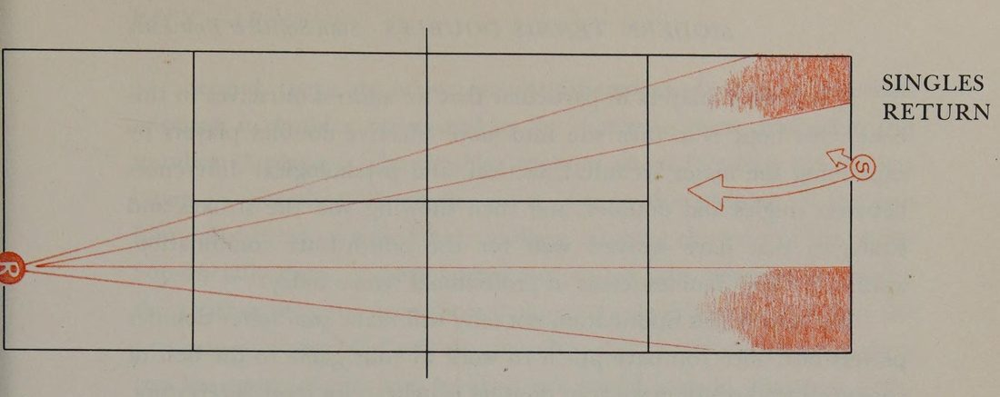
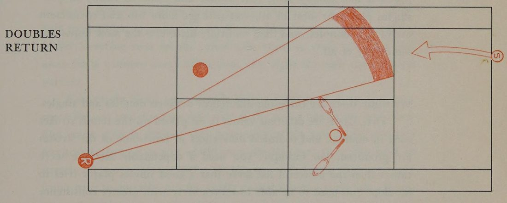
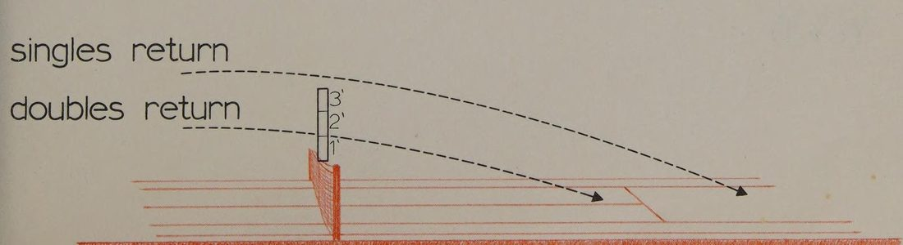
Chính những tay vợt này là đối tượng mà chúng tôi nhắm tới trong cuốn sách này. Mong ước của chúng tôi là biến bạn thành những tay đánh đôi hiệu quả hơn bằng cách giải thích những khác biệt lớn về kỹ thuật, chiến thuật và tâm lý giữa đánh đơn và đánh đôi, rồi sau đó chỉ cho bạn những cú đánh và chiến lược đã tỏ ra hiệu quả với cặp đôi Smith-Lutz, khi đối đầu với những cặp đôi hay nhất trong làng tennis chuyên nghiệp ngày nay.
It is to these players in particular that we address ourselves in this book. Our hope is to turn you into more effective doubles players by explaining the major technical, tactical, and psychological differences between singles and doubles, and then showing you the strokes and strategies that have worked well for the Smith-Lutz combination, against the best doubles teams in professional tennis today.
Chúng tôi tin rằng thông tin này không chỉ giúp bạn trở thành những tay đánh đôi giỏi hơn, mà một khi bạn đã đưa nó vào vận dụng trong trận đấu của mình hết khả năng, còn khiến các trận đánh đôi của bạn trở nên thú vị hơn nhiều.
We believe this information not only will make you better doubles players but, once you have put it to work in your game to the best of your ability, also will make your doubles matches a lot more interesting.
Cách tiếp cận của chúng tôi với lối chơi đánh đôi kết hợp tấn công có mục đích, phòng thủ vững chắc và phối hợp đồng đội nhịp nhàng, theo cách thực sự làm tăng sự đa dạng của các cú đánh mà bạn tạo ra cũng như các tình huống đánh bóng mà bạn gặp trong trận đấu. Dần dà, bạn sẽ phát triển được những kỹ năng đánh bóng toàn diện và ổn định hơn, những kỹ năng cũng sẽ hữu ích cho lối đánh đơn của bạn. Nhưng hơn hết, bạn sẽ có thêm niềm vui và sự hứng khởi từ lối đánh đôi của mình. Và đó, chúng tôi tin chắc, là thành tố quan trọng nhất trong tất cả.
Our approach to the doubles game combines purposeful attack, sound defense, and smooth teamwork in a way that actually increases the variety of strokes that you produce and the shot situations that you face during play. In time, you will develop more consistent, wellrounded shot-making skills that should also come in handy in your singles play. But most of all, you will get more fun and excitement out of your doubles. And that, we firmly believe, is the most important ingredient of all.
Chúng tôi cho rằng có ba khác biệt lớn giữa đánh đôi và đánh đơn.
We think there are three big differences between doubles and singles.
Thứ nhất, có những giá trị khác nhau được gán cho các cú đánh được sử dụng trong đánh đôi, cùng những khác biệt về kỹ thuật trong cách tạo ra một số cú đánh. Ví dụ, bạn cần một cú giao bóng chính xác và đáng tin cậy hơn là cú giao bóng phẳng mạnh mẽ mà một tay đánh đơn giỏi cố gắng phát triển. Bạn cần có khả năng đỡ giao bóng với độ ổn định cao hơn trong đánh đôi, trong khi ở đánh đơn bạn có thể đánh liều hết mình ở những cú đỡ giao bóng. Trong đánh đôi, bạn phải có một cú vô-lê tốt, vì không có cách nào bạn tránh được việc phải đứng trên lưới trong một số thời điểm. Ở đánh đơn, bạn có thể thoát được với khả năng vô-lê tầm thường, nếu lối chơi ở khu vực cuối sân của bạn vững chắc, và thậm chí có thể vẫn lọt vào trận chung kết giải vô địch câu lạc bộ của mình.
First, there are different values to be placed on the tennis strokes used in doubles, and technical differences in how some of the strokes are produced. For example, you need a dependably accurate serve rather than the powerful flat serve that a good singles player tries to develop. You need to be able to return serve with greater consistency in doubles, whereas in singles you can go for broke on returns. In doubles you must have a good volley stroke, because there is no way you can avoid being at the net some of the time. In singles you can get away with mediocre volleying, if your backcourt game is solid, and perhaps still make it to the final of your club championship.
Thứ hai, có những khác biệt chiến thuật lớn về vị trí và việc chọn cú đánh trong đánh đôi, gây ra bởi sự thay đổi kích thước sân và số lượng người chơi. Sân đôi có diện tích lớn hơn sân đơn bảy trăm feet vuông, do có thêm hai làn rộng bốn feet rưỡi, hay còn gọi là hành lang, chạy dọc hai bên sân. Nhìn bề ngoài thì có nhiều diện tích theo chiều ngang hơn để đánh vào, khuyến khích những cú đánh rộng thay vì những cú đánh sâu vốn rất quý giá ở đánh đơn. Nhưng sự hiện diện của một người chơi thứ hai ở bên kia lưới thực ra cho bạn ít khoảng trống để nhắm hơn so với khi bạn đánh đơn, vì vậy việc chọn góc chính xác là điều bắt buộc.
Second, there are major tactical differences of position and shotselection in doubles, occasioned by the change in court dimension and number of players. The doubles court is seven hundred square feet larger in area than the singles court, due to the addition of the two four-and-a-half-foot-wide lanes, or alleys, running the sides of the court. Superficially there is more lateral area to hit into, encouraging wider shots rather than the deep shots that are so valuable in singles. But the presence of a second player on the other side of the net actually gives you less open space to aim for than you would have in singles, so accuracy in picking your angles is a must.
Các cú đánh của bạn không cần phải ngoạn mục trong đánh đôi, như chúng thường phải như vậy trong đánh đơn để ăn điểm trước một đối thủ có trình độ tương đương, nhưng chúng phải được đặt bóng cực kỳ chuẩn xác. Do đó, những sai sót trong kỹ thuật vợt sẽ bị trừng phạt nặng nề. Ở đánh đơn, bạn có thể thoát được với khá nhiều cú đánh trúng không đúng tâm vợt nếu bạn có những yếu tố khác hỗ trợ, nhưng nếu bạn đánh một quả bóng cao trong đánh đôi, hay một cú đánh lộn xộn trúng vào cạnh vợt, thì luôn có một tay vợt lảng vảng gần đó ở bên kia sân, sẵn sàng đập quả bóng cao đó đi để ăn điểm — thường thì xuyên thẳng qua người bạn đánh cặp tội nghiệp của bạn.
Your shots need not be spectacular in doubles, as they often have to be in singles to win a point against a player of equal ability, but they must be exceedingly well placed. Thus errors of racket technique will be severely punished. You can get away with a fair number of mis-hits in singles if you have other things going for you, but if you hit a high ball in doubles, or a haphazard off-the-wood shot, there is always a player hovering near on the other side, ready to crack the high ball away for a winner—more often than not, right through your hapless partner.
Ngược lại, vì bản thân bạn có một người bạn đánh cặp, nên có ít khoảng trống hơn để bạn phòng thủ ở bên phần sân của mình. Dù tổng diện tích sân đôi lớn hơn, bạn chỉ có khoảng hai phần ba diện tích cần bảo vệ so với khi ở trên sân đơn. Bạn có thể phải vươn người cho nhiều cú đánh hơn — những đối thủ xứng tầm sẽ lo liệu điều đó — nhưng bạn sẽ không phải chạy hết sức cho gần nhiều cú đánh như khi chơi một trận đơn gay go.
Conversely, since you yourself have a partner, there is less open space for you to defend on your side of the net. Though the total doubles court area is greater, you have only about two-thirds as much territory to protect as you would on a singles court. You may have to stretch for more shots—worthy opponents will see to that—but you won’t have to outright run for nearly so many as you would in a tough game of singles.
Cuối cùng, có những khác biệt đáng kể về tâm lý và cảm xúc trong lối chơi đánh đôi. Nếu đánh đơn giống như cờ vua ở kiểu tập trung cao độ, ý chí và những yếu tố "cái tôi" đau đớn đè nặng lên mỗi cuộc đối đầu, thì đánh đôi giống như chơi bridge hơn: Bạn chơi những lá bài của mình tốt đến đâu phụ thuộc phần lớn vào việc đồng đội của bạn chơi bài của anh ấy tốt đến đâu. Và sự tương tác giữa bốn cá tính khác nhau trên sân, trong nội bộ từng đội và giữa hai đội với nhau, là điều xứng đáng để phân tích không ngừng và đầy lý thú.
Finally, there are significant psychological and emotional differences in the game of doubles. If singles is akin to chess in the sort of single-mindedness, will, and agony-of-ego factors riding on each encounter, then doubles is more like bridge: How well you play your cards depends in large part on how well your partner plays his. And the interaction among four different personalities on the court, within teams and between teams, is worthy of endless fascinating analysis.
Khi so sánh đánh đơn và đánh đôi, người ta đôi khi lầm tưởng rằng đánh đôi là một phiên bản lịch thiệp hơn của trò chơi này. Những kẻ hợm hĩnh chỉ chơi đơn, nếu họ là nam, nói về đánh đôi như một trò chơi “dành cho các bà”, còn nếu họ là nữ, họ gọi đó là một thú tiêu khiển “dành cho các ông già”.
In comparing singles and doubles, people sometimes mistakenly think of the latter as a more genteel version of the game. Singles-only snobs, if they happen to be men, speak of doubles as a game ‘“‘for ladies,” and if they happen to be women, call it an amusement “for old men.”
Những nhà phê bình như vậy đang đổ lỗi cho lối chơi thay vì đổ lỗi cho màn trình diễn lơ đễnh của người chơi, mà đó mới thực sự là chỗ đáng để đổ lỗi. Họ đang chế giễu một kiểu “đánh đôi ngày Chủ nhật” mà rất có thể đã từng phổ biến rộng rãi, ở một mức độ nào đó ngay cả trong số các tay vợt hàng đầu, vào một thời đại trước đây. Đánh đôi ngày Chủ nhật chỉ đơn thuần là những màn đối đáp lịch sự giữa các cặp của những tay chơi vạch cuối sân chính hiệu, không có cướp bóng cũng không có đập bóng trên đầu và với số cú vô-lê tối thiểu. Có lẽ kiểu chơi này vẫn còn tồn tại rải rác đâu đó ngày nay, nhưng nó không còn phổ biến ngay cả trong số những người không thật sự biết cách đánh đôi, song lại tràn đầy đam mê đánh bóng và chẳng màng gì đến sự lịch thiệp. Nói tóm lại, lối đánh đôi ngày nay mang lại tiềm năng về tốc độ, sức mạnh và sự tinh tế nhiều như một tay nghiện đánh đơn hung hãn nhất có thể mong muốn.
Such critics are blaming the game instead of the lackadaisical performance of the players, which is where the blame really belongs. ‘They are making fun of a kind of “Sunday doubles” that may well have been widely practiced, to a certain extent even among the top players, in an earlier era. Sunday doubles amounted to polite exchanges between teams of confirmed baseliners, with an absence of poaches and overheads and a minimum of volleys. Maybe it still exists in patches today, but it is no longer prevalent even among people who don’t quite know how to play doubles, but who are full of passion for smacking the ball and politeness be damned. In short, today’s doubles game offers as much potential for speed, power, and subtlety as the most aggressive singles nut could wish.
Một ấn tượng sai lệch khác mà một số người chơi hình thành về đánh đôi là nó làm hỏng lối chơi đơn của họ. Như chúng tôi đã đề cập trước đó, đánh đôi thực ra có thể cải thiện lối chơi đơn của bạn bằng cách mở rộng dải cú đánh của bạn. Đúng là có những người chơi ở bất kỳ trình độ nào, kể cả một số tay chuyên nghiệp, là những kẻ hoàn toàn đơn độc và độc hành trong tennis vì lý do này hay lý do khác, và họ không có khả năng chơi đôi giỏi. Nhưng họ chỉ là thiểu số. Theo quy luật chung, hai thể thức tennis này làm giàu cho nhau — miễn là người chơi biết cách thích ứng các cú đánh và chiến lược của mình khi chuyển từ thể thức này sang thể thức kia.
Another false impression some players have formed about doubles is that it corrupts their singles game. As we mentioned earlier, doubles can actually improve your singles game by broadening your shot-making range. True, there are players at any level, including some of the pros, who are absolute loners and mavericks in their tennis for one reason or another, and they are incapable of playing good doubles. But they are a minority. As a general rule, the two forms of tennis are mutually enriching—provided the player knows how to adapt his strokes and strategies in going from one to the other.
Có lẽ câu trả lời hay nhất cho câu hỏi về sự tương thích giữa đánh đơn và đánh đôi chính là thành tích phi thường của những tay vợt người Úc qua nhiều năm ở cả hai thể thức. Lew Hoad, Ken Rosewall, Roy Emerson, Fred Stolle, Rod Laver, Tony Roche và John Newcombe — tất cả những nhà vô địch này đều có thể chuyển số một cách dễ dàng khi đi từ thể thức này sang thể thức khác, đôi khi ngay trong cùng một buổi chiều.
Maybe the best answer to the question of compatibility between singles and doubles is the phenomenal record of the major modern Australian players over the years in both forms. Lew Hoad, Ken Rosewall, Roy Emerson, Fred Stolle, Rod Laver, Tony Roche, and John Newcombe—all of these champions have been able to shift gears effortlessly in going from one format to another, sometimes in the same afternoon.
ĐÁNH ĐÔI KHÁC ĐÁNH ĐƠN NHƯ THẾ NÀO TRONG LỐI CHƠIHOW DOUBLES DIFFERS FROM SINGLES IN ACTION
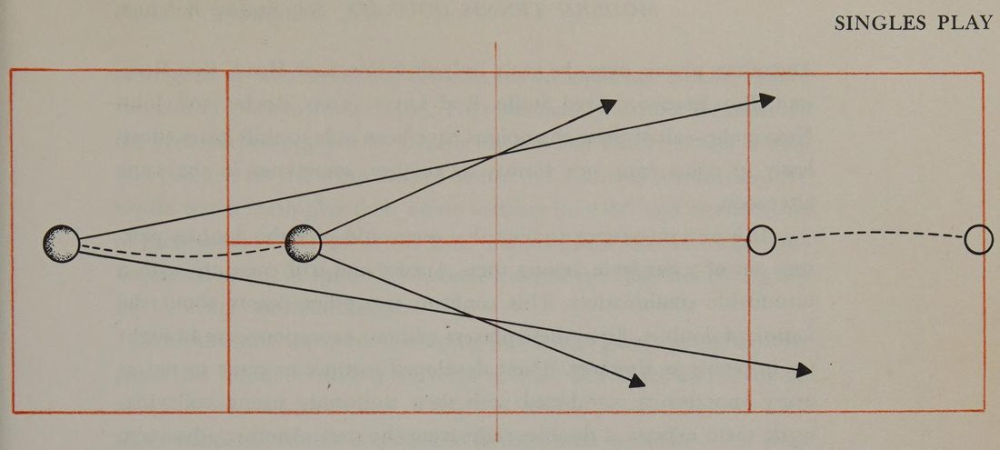
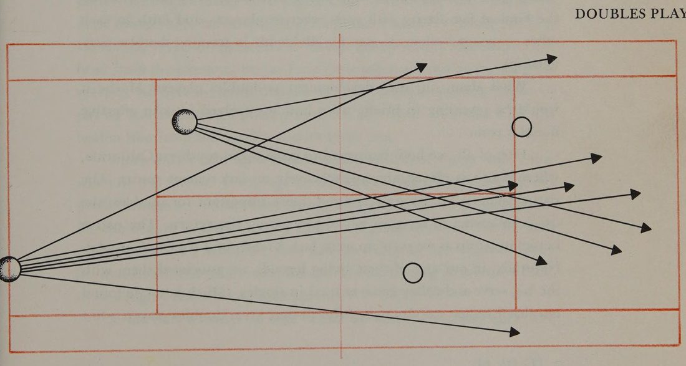
Cũng thú vị khi lưu ý rằng người ta có thể bốc thăm ngẫu nhiên các cặp đôi từ nhóm người Úc này mà vẫn có được một sự kết hợp đáng gờm. Điều này khẳng định thêm hai điểm khác về bản chất của đánh đôi. Thứ nhất, những tay vợt này không trừ một ai đều được nuôi dạy trong tennis với tư cách những tay tấn công. Bản năng đã được rèn luyện của họ là tiến lên lưới ở mọi cơ hội, kết hợp với khả năng vô-lê đều đặn và mạnh mẽ, đã khiến họ trở thành những chuyên gia đánh đôi ngay từ đầu. Một lợi thế khác của cả nhóm xét về lối đánh đôi là lòng trung thành với nhau như những người bạn đã cùng luyện tập và cùng đi đấu trong nhiều năm, và đã hợp sức vì nước Úc trong những giải đấu giữa các quốc gia như Davis Cup và World Cup. Họ đã xây dựng được kiểu sự hiểu biết lẫn nhau với tư cách những tay vợt — và niềm tin vào nhau với tư cách những con người — thứ có thể mang lại lợi ích lớn khi hình thành các cặp đôi phối hợp.
It is also interesting to note that one could pick the doubles pairings out of a hat from among these Aussies and still come up with a formidable combination. This confirms two other points about the nature of doubles. First, these players without exception were brought up in tennis as attackers. Their developed instinct to come to net at every opportunity, combined with their uniformly strong volleying, made them experts at doubles right from the start. Another advantage of the group as a whole, as far as doubles play is concerned, has been their loyalty to each other as friends who have trained and traveled together for years and who have joined forces for Australia in such inter-nation events as Davis Cup and World Cup. They have built up the kind of familiarity with each other as players—and faith in each other as persons—that can pay big dividends in forming doubles partnerships.
Còn về sự phát triển của chính chúng tôi với tư cách những tay đánh đôi thì sao? Có lẽ sẽ khá hữu ích nếu điểm qua ngắn gọn cách chúng tôi tiến hóa thành một cặp đôi hiệu quả . .
What about our own development as doubles players? Maybe it would be revealing to briefly trace how we evolved into an effective doubles team . .
Đầu tiên, cả hai chúng tôi tình cờ lớn lên ở miền nam California, nơi quần vợt hầu như chỉ được chơi trên những sân xi măng nhanh. Lối chơi bản địa ở đó là giao bóng mạnh và, quan trọng hơn với đánh đôi, là việc nhanh chóng theo bóng lên lưới để vồ lấy cú trả giao. Những anh hùng quần vợt bản địa thời chúng tôi lớn lên là Jack Kramer và Pancho Gonzalez. Đương nhiên, trong sự kính phục những huyền thoại còn sống ấy, chúng tôi gắn họ với lối chơi giao bóng rồi lên lưới mạnh mẽ như thường thấy ở đánh đơn. (Mãi về sau chúng tôi mới biết Kramer cũng là một trong những tay đánh đôi vĩ đại nhất mọi thời.) Nhưng khi lớn lên, chúng tôi cũng ý thức được thách thức và cơ hội giành chút vinh quang ở nội dung đánh đôi. Đó chủ yếu là vì chúng tôi chứng kiến thành công rực rỡ của Dennis Ralston và Rafael Osuna khi đánh cặp cùng nhau cho đội quần vợt Đại học Nam California. Chúng tôi thường xem họ thi đấu trên sân nhà cho USC và dự nhiều buổi tập của họ tại L.A. Tennis Club. Chúng tôi đặc biệt ấn tượng khi vào năm 1960, họ trở thành những nhà vô địch đánh đôi trẻ nhất trong lịch sử Wimbledon.
First of all, we both happened to grow up in southern California, where tennis is played almost exclusively on fast cement courts. ‘The native game is the power serve and, more important for doubles, the quick following of serve to net to pounce on the return. The native heroes in tennis as we grew up were Jack Kramer and Pancho Gonzalez. Naturally, in our awe of these living legends, we associated them with the big serve-and-volley game as used in singles. (Much later we found out that Kramer was also one of the all-time great doubles players.) But as we grew up we also became conscious of the challenge and the chance for a bit of glory in doubles, too. That was mainly because we observed the great success enjoyed by Dennis Ralston and Rafael Osuna as doubles partners for the University of Southern California tennis team. We would watch them play their home matches for USC and attend many of their practice sessions at the L.A. Tennis Club. We were especially impressed when, in 1960, they became the youngest doubles champions in the history of Wimbledon.
Trong khi đó, chúng tôi phát triển lối chơi tennis của mình theo những con đường riêng, để rồi cuối cùng hội tụ tại USC. Bob bắt đầu học riêng từ năm chín tuổi với Ray Casey, một tay vợt chuyên nghiệp tay trái to con ở Santa Monica. Casey tình cờ lại thích đánh đôi và trong vài năm tiếp theo đã chơi rất nhiều đánh đôi với Lutz. Là một người thuận tay trái luôn đứng ở ô bên trái trong các trận đôi thi đấu, Casey có xu hướng rèn luyện cách đánh bóng cho đánh đôi của Bob theo hướng phù hợp với bên đó và, thực tế, Lutz đã trở thành một người chơi ở ô đánh trái tay rất tự nhiên. Ở đánh đơn, Casey khuyến khích Lutz lao lên lưới sau khi giao bóng, dù chiến thuật này đồng nghĩa với thất bại chắc chắn và liên tục cho Bob trong nhiều năm, vì các đối thủ cùng lứa tuổi của cậu chỉ việc lốp bóng qua đầu cậu từ vạch cuối sân. Nhưng khi Lutz cao lớn hơn và khả năng vô-lê của cậu sắc bén hơn, cậu trở nên khó bị đánh xuyên qua hơn. Sự dạy dỗ của Casey bắt đầu mang lại kết quả và Bob bắt đầu dễ dàng hạ gục những đối thủ xưa cũ — những người từng đánh bại cậu từ vạch cuối sân.
Meanwhile, we were developing our tennis games along separate paths that would eventually converge at USC. Bob began taking lessons at age nine from Ray Casey, a big left-handed pro in Santa Monica. Casey happened to like doubles and in the course of the next few years played a lot of it with Lutz. As a leftie who always took the second court in competitive doubles, Casey tended to groom Bob’s doubles strokemaking for that side and, in fact, Lutz became a natural backhand court player. In singles Casey encouraged Lutz to rush net following serve, even though this tactic spelled certain and consistent defeat for Bob for several years, as opponents in his age group simply lobbed over his head from the baseline. But as Lutz grew taller and his volleying grew sharper, he became more difficult to pass. Casey’s teaching began to pay off and Bob started putting away his old rivals—the ones who had beaten him from the baseline—with great ease.
Smith mãi về sau này mới bắt đầu chơi tennis một cách nghiêm túc, muộn hơn Lutz nhiều, khi cậu mười lăm tuổi. Ở độ tuổi đó, cậu đã đủ lớn để chơi và thu được lợi ích từ lối chơi giao bóng rồi lên lưới, thứ mà cậu bắt đầu phát triển dưới sự dẫn dắt của Pancho Segura trong một lớp học bổ ích mà chiến lược gia vĩ đại ấy mở cho lũ trẻ ở Pasadena. Với chiều cao sáu feet, Stan có tầm với ở lưới, được hỗ trợ bởi khả năng thể thao tổng thể và cú đập bóng trên đầu phát triển nhanh chóng của cậu, để trở thành một bạn đánh cặp đôi rất đáng khao khát . .
Smith didn’t take up tennis seriously until much later than Lutz, when he was fifteen. At this age he was already big enough to play and profit through serve-and-volley tennis, which he began to develop under Pancho Segura in a stimulating clinic that great strategist ran for kids in Pasadena. As a six-footer Stan had the reach at net, backed up by his overall athletic ability and his quickly developing overhead stroke, to be a highly desirable doubles partner ..
Chỉ còn là vấn đề thời gian trước khi chúng tôi gặp nhau và ăn ý ngay. Chúng tôi dần hiểu nhau và thường xuyên đánh đôi cùng nhau, rồi quyết định nối bước Ralston và Osuna mà ghi danh vào USC. Huấn luyện viên George Toley càng mài giũa kỹ năng đánh đôi của chúng tôi, đặc biệt ở cú vô-lê và chiến thuật trận đấu, để dẫn dắt chúng tôi tới chức vô địch đôi toàn quốc liên trường vào cả hai năm 1967 và 1968. (Chúng tôi cũng giành danh hiệu đơn cho USC trong những năm đó — Lutz năm 1967, Smith năm 1968.)
It was only a matter of time before we would meet, and click. We (hee got to know each other and to play doubles together regularly when we decided to try to follow in the footsteps of Ralston and Osuna and enrolled at USC. Coach George Toley further groomed our doubles skills, particularly in volleying and in match strategy, in leading us to the National Intercollegiate Championship in doubles in both 1967 and 1968. (We also won the singles title for USC in those years, Lutz in 1967, Smith in 1968.)
Việc chơi trong một đội làm tăng sự tôn trọng của chúng tôi dành cho đánh đôi vì một lý do đơn giản là các trận đấu của chúng tôi với các đội từ trường khác được tranh tài dựa trên số điểm thắng được ở sáu trận đơn và ba trận đôi. Số điểm giành được từ các trận đôi có thể dễ dàng quyết định kết quả của cả trận đấu, nên chúng tôi đã tập luyện và thi đấu đánh đôi một cách nghiêm túc. (Hầu hết những tay vợt khá hơn có cơ hội thi đấu cho đội cấp ba hoặc đại học đều học được giá trị của đánh đôi và cách tiếp cận cơ bản để chơi nó, nhưng trong những năm đầu trưởng thành họ thường tập trung vào đánh đơn. Trớ trêu thay, số đông những người chơi cuối tuần mà cuối cùng dành phần lớn thời gian để đánh đôi lại hoàn toàn không có nền tảng nào về thể thức thi đấu đó.)
Playing on a team increased our respect for doubles for the simple reason that our matches with teams from other schools were contested on the basis of points won in six singles matches and three doubles matches. Points won from the doubles could easily determine the outcome of the overall match, so we practiced and played doubles earnestly. (Most better players who get the chance to compete for high school or college teams learn the value of doubles and the basic approach to playing it, but in their early adult life tend to concentrate on singles. Ironically, the mass of weekend players who end up playing doubles most of the time have had no background at all in that form of competition.)
Trong cùng giai đoạn đó, chúng tôi giành chức vô địch đánh đôi trên sân cứng và đánh đôi trên sân đất nện, nhưng những nỗ lực đầu tiên của chúng tôi trên đấu trường nhà nghề đều không đi đến đâu, dù ở đánh đơn hay đánh đôi. Theo một cách nào đó, điều này còn củng cố thêm sự phối hợp cặp đôi của chúng tôi, đơn giản vì khi bị loại khỏi các giải nhà nghề ngay từ những vòng đầu, chúng tôi chẳng còn gì tốt hơn để làm ngoài việc dành phần còn lại của tuần để tập luyện với nhau. Dần dần, chúng tôi thực sự đột phá, với những chiến thắng lớn của giai đoạn đầu đó là chức vô địch đánh đôi năm 1968 tại Forest Hills, chức vô địch đánh đôi năm 1970 tại Australian Open, và nhiều chiến thắng khác nhau cho Hoa Kỳ trong việc bảo vệ thành công Davis Cup từ năm 1968 đến năm 1970.
In the same period we won the hard-court doubles and the claycourt doubles, but our first efforts out on the men’s circuit got nowhere either in singles or doubles. In a way this further strengthened our doubles partnership simply because, upon getting knocked out of the men’s tournaments in the early rounds, we had nothing better to do but spend the rest of the week practicing with each other. In time, we did break through, with our major wins of that early period being the 1968 doubles at Forest Hills, the 1970 doubles in the Australian Open, and various wins for the United States in its successful defense of Davis Cup from 1968 to 1970.
Chúng tôi chia tay nhau trong vài năm khi Lutz chuyển sang thi đấu chuyên nghiệp cho World Championship Tennis và Smith gia nhập quân đội, người này tiếp tục thắng ở Davis Cup, với Erik van Dillen là bạn đánh đồng đội. Trong lúc đó, lối đánh đơn của chúng tôi phát triển nhanh chóng. Smith vô địch Forest Hills năm 1971 và Wimbledon năm 1972, hai danh hiệu lớn, còn Lutz vô địch Giải Vô địch Chuyên nghiệp Hoa Kỳ tại Longwood năm 1972 trước khi một ca phẫu thuật đầu gối khiến anh ấy tạm thời không thi đấu được. Dù sao đi nữa, những chiến thắng đó mang lại cho chúng tôi sự tôn trọng với tư cách những tay đánh đơn cá nhân, điều không thể không củng cố hình ảnh của chúng tôi như một cặp đánh đôi trong mắt các đối thủ. Không lâu sau khi chúng tôi tái hợp thành một đội, chúng tôi vô địch trận chung kết đánh đôi đầu tiên của World Championship Tennis năm 1972 tại Montreal, chia nhau 40.000 đô-la — giải thưởng cao nhất cho nội dung đánh đôi trong lịch sử quần vợt.
We separated for a couple of years when Lutz turned professional for World Championship Tennis and Smith joined the Army, the latter continuing his winning Davis Cup play, with Erik van Dillen as doubles partner. In the meantime our singles games developed apace. Smith won Forest Hills in 1971 and Wimbledon in 1972, the two great titles, and Lutz won the United States Professional Championship at Longwood in 1972 before a knee operation disabled him temporarily. In any case, the victories earned us a respect as individual singles players that could not help strengthening our image as a doubles combination, as far as our opponents were concerned. Shortly after we were reunited as a team, we won the first World Championship Tennis doubles final in 1972 in Montreal, splitting $40,o0o—the biggest first prize for doubles in the history of tennis.
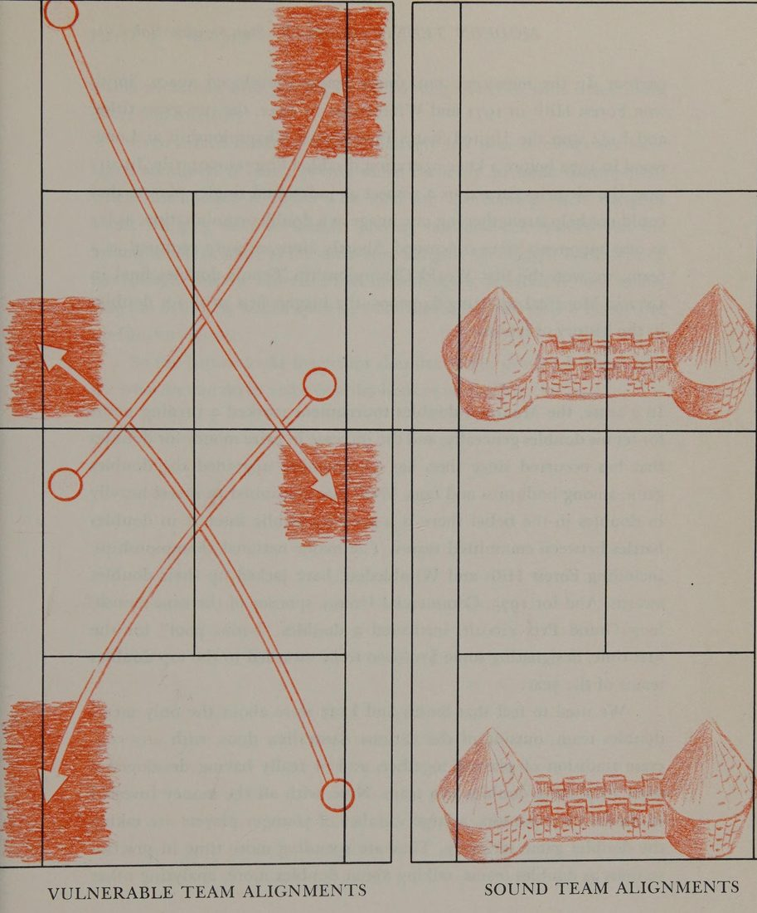
Theo một nghĩa nào đó, giải đánh đôi Montreal đánh dấu một bước ngoặt cho nội dung đánh đôi nói chung, và việc tiền thưởng cho đánh đôi tăng lên kể từ đó đã nâng tầm đáng kể lối chơi đánh đôi trong mắt cả các tay vợt chuyên nghiệp lẫn người hâm mộ. WCT tiếp tục đầu tư mạnh cho đánh đôi với niềm tin rằng công chúng ngày càng quan tâm đến những trận đánh đôi giữa các đội gắn bó lâu dài. Các giải vô địch quốc gia lớn, trong đó có Forest Hills và Wimbledon, đã nâng mạnh tiền thưởng cho nội dung đánh đôi. Và vào năm 1975, Commercial Union, nhà tài trợ của vòng đấu Grand Prix kéo dài chín tháng, lần đầu tiên lập ra một "quỹ thưởng" cho đánh đôi, dành khoảng 100.000 đô-la để trao cho những cặp đánh đôi xuất sắc nhất trong năm.
In a sense, the Montreal doubles tournament marked a turning point for tennis doubles generally, and the increase in prize money for doubles that has occurred since then has considerably upgraded the doubles game among both pros and fans. WCT has continued to invest heavily in doubles in the belief there is a growing public interest in doubles battles between committed teams. The major national championships, including Forest Hills and Wimbledon, have jacked up their doubles awards. And for 1975, Commercial Union, sponsor of the nine-monthlong Grand Prix circuit, instituted a doubles “bonus pool” for the first time, designating some $100,000 to be awarded to the top doubles teams of the year.
Chúng tôi từng cảm thấy rằng Smith và Lutz gần như là cặp đánh đôi nam duy nhất, ngoài các cặp đôi Úc khác nhau, có truyền thống cụ thể về việc đánh cặp cùng nhau, và thực sự đã phát triển được ý thức chơi đánh đôi như một đội. Giờ đây, với tất cả số tiền mà các nhà tài trợ đầu tư cho đánh đôi, rất nhiều tay vợt trẻ đang coi trọng lối chơi đánh đôi. Họ dành nhiều thời gian hơn cho các buổi tập với tư cách những cặp đánh đôi, bàn luận về đánh đôi nhiều hơn, phân tích các đội khác khi thi đấu, và chơi các trận đánh đôi của mình với nhiều nỗ lực và cường độ hơn hẳn.
We used to feel that Smith and Lutz were about the only men’s doubles team, outside of the various Australian duos, with any concrete tradition of playing together, and of really having developed a sense of playing doubles as a team. Now, with all the money invested in doubles by sponsors, a large number of younger players are taking the doubles game seriously. They are spending more time in practice sessions as doubles teams, talking about doubles more, analyzing other teams in action, and playing their doubles matches with a lot more effort and intensity.
Ngay cả đánh đôi nam nữ, thể thức mà tương đối ít tay chuyên nghiệp thuộc cả hai giới xem trọng, cũng đang được chơi nghiêm túc hơn ở một số giải đấu nơi tiền thưởng xứng đáng. Các quý ông đang vượt qua những rào cản tâm lý của mình về việc nện bóng vào phía các quý bà đang đứng lưới, và các quý bà — trước sự kinh ngạc của một số quý ông — nện trả lại y như vậy. Rõ ràng tiền bạc đã khơi dậy bản năng sát thủ ở cả hai giới, và dù sao đi nữa cũng chắc chắn đã thêm gia vị cho thứ mà cho đến nay vẫn là một nội dung nhạt nhẽo và chiếu lệ.
Even mixed doubles, which relatively few pros of either sex have taken seriously, is being played more earnestly in some tournaments where the money is right. The men are overcoming their hangups about banging balls at women playing net, and the women—to the astonishment of some of the men—are banging them right back. Money has brought out the killer instinct in both sexes, apparently, and in any case has definitely added spice to what has been until now a bland and perfunctory event.
Vậy nên tương lai của đánh đôi ở cấp độ chuyên nghiệp trông thật tươi sáng. Giờ thì hãy xem chúng tôi có thể làm gì để khiến đánh đôi trở nên tốt hơn và tươi sáng hơn cho bạn . . .
So the future looks bright for doubles at the pro level. Now, let’s see what we can do to make doubles better and brighter for you . . .
CHƯƠNG 2 — Những nguyên lý của lối đánh đôi hiện đại
CẢM GIÁC ĐÁNH ĐÔI là một năng khiếu phải được rèn luyện mà có.
THE DOUBLES SENSE is a knack that has to be acquired.
Học cách chơi với cảm giác đánh đôi — với những bản năng và phản xạ sẽ khiến bạn thực hiện đúng những cú đánh trong đúng những tình huống — đến từ kinh nghiệm chủ động áp dụng những nguyên lý cơ bản của đánh đôi vào các động tác và hành động của bạn.
Learning to play with the doubles sense—with the instincts and reactions that will cause you to execute the right shots in the right situations—comes out of the experience of consciously applying basic doubles principles to your moves and actions.
Chúng tôi cho rằng có bốn nguyên lý liên quan mật thiết với nhau làm nền tảng cho mọi lối đánh đôi hay. Chúng ảnh hưởng đến cách bạn tạo cú đánh, vị trí của bạn trên sân, mối quan hệ của bạn với bạn đánh cặp, và khả năng kiểm soát đối phương của bạn thông qua chiến lược trận đấu.
We think there are four interrelated principles underlying all good doubles play. They affect your stroke-making, your positioning on the court, your relation to your partner, and your control over your opponents through match strategy.
Những nguyên lý này phải được hiểu rõ, và lúc đầu phải được áp dụng một cách có ý thức, để chắc chắn rằng những hành động mong muốn sẽ diễn ra trên sân. Sau một thời gian, sẽ cần ít nỗ lực có ý thức hơn nhiều để đạt được kiểu kết quả mà bạn muốn.
These principles must be well understood, and at first consciously applied, to make sure the desirable actions occur out on the court. After a while, much less conscious effort will be needed to get the kind of results you want.
Chúng ta hãy xem xét bốn nguyên lý này một cách chi tiết và xem chúng khớp vào lối chơi đôi thực tế như thế nào.
Let’s examine the four principles in detail and see how they fit into actual doubles play.
ĐÁNH VÀO BÓNGPLAY THE BALL
Chơi quả bóng nghĩa là không để quả bóng chơi bạn — nói cách khác, là nắm thế chủ động và tiến lên đón quả bóng ở càng nhiều cú đánh càng tốt. Đánh bóng khi trọng tâm còn ở chân sau khuyến khích lối đánh phòng thủ và những cú đánh cho đối phương thêm một chút thời gian để chiếm thế thượng phong trước bạn. Đánh bóng khi trọng tâm dồn lên chân trước, trong lúc bóng vẫn đang đi lên, tạo ra những cú đánh vững chắc hơn với quỹ đạo thấp hơn và nhiều xoáy trên hơn. Nó cũng đưa bóng trở lại qua lưới với ít thời gian trôi qua hơn, buộc đối phương phải phản ứng sớm hơn và với ít sự chuẩn bị hơn.
Playing the ball means not letting the ball play you—in other words, taking the initiative and moving forward to meet the ball on as many shots as you can. Hitting off your back foot encourages defensive strokemaking and shots that give the opponents a moment’s extra time to steal a march on you. Hitting off your front foot, while the ball is still on the rise, builds firmer shots with lower trajectories and more topspin. It also gets the ball back over the net with less time elapsed, forcing the opponents to react sooner and without as much preparation.
Trong đánh đôi, bạn không có cái sang trọng của những khoảng dừng để suy ngẫm hay những cú đánh thong thả — như bạn có thể có khi đối đầu với những đối thủ đơn giỏi nhưng thụ động — vì bạn phải đương đầu với lượng đối thủ nhiều gấp đôi. Cả thời gian lẫn không gian đều bị nén lại hơn, và nếu bạn không hành động nhanh chóng và dứt khoát, một trong những đối thủ của bạn chắc chắn sẽ lao vào cú đánh của bạn. Đó là lý do vì sao một cặp chuyên cứu bóng giỏi sẽ không thắng ở đánh đôi thường xuyên đến thế nếu so với một cặp chuyên tấn công giỏi. Những cặp đánh đôi giỏi gần như luôn luôn chuyển động — không ai là một bức tượng.
In doubles you do not have the luxury of pauses for reflection or leisurely stroking—as you might have against good but passive singles opponents—because you have twice as much opposition to contend with. Both time and space are more compressed, and if you do not act quickly and decisively, one of your opponents will surely pounce on your shot. ‘That is why a good retrieving team won’t win in doubles nearly so often as a good attacking team. Good doubles teams are almost constantly in motion—no one is a statue.
Sự nhanh nhẹn chắc chắn quan trọng hơn ở đánh đôi so với đánh đơn. Nếu bạn bật nhanh khỏi vị trí ngay sau cú giao bóng của mình, bạn sẽ ở tư thế sẵn sàng đón cú trả giao bằng một thế đứng vô-lê vững chắc, tiến sâu vào sân. Nếu bạn nhận giao bóng với sự cảnh giác đúng mực, bạn sẽ thực sự di chuyển theo đường chéo trên sân để đón quả bóng đang bay tới, thay vì đi thẳng sang ngang với dự đoán về chỗ bóng sẽ nảy lên. Điều đó cho phép bạn đón bóng sớm hơn, đồng thời tránh bị kéo rộng ra và rơi vào thế dễ bị tổn thương. Bạn cũng sẽ có thêm một lựa chọn nữa cho các cú trả giao của mình, vì luôn dễ đánh dọc biên khi trả giao hơn khi bạn đang tiến về phía bóng chứ không đứng yên hoặc ngả người ra sau.
Quickness definitely counts for more in doubles than in singles. If you are quick off the mark following your serve, you will be in a position to take the return from a firm volleying stance well into the court. If you receive serve with the proper alertness, you will actually move diagonally in the court to meet the oncoming ball, rather than directly to the side in anticipation of where it will bounce up. That will permit you to meet the ball earlier, and at the same time avoid being pulled wide and vulnerable. You will also add one more option to your possible returns, since it is always easier to hit down the line on a return when you are going toward the ball and not standing still or falling back from it.
Những pha cướp bóng (đổi hướng bắt bóng giữa sân) hay là ví dụ ngoạn mục nhất của việc chơi quả bóng. Bằng cách di chuyển nhanh và đón chặn cú đánh của đối phương, bạn nắm thế chủ động một cách đầy uy lực mà hiếm khi có thể đáp trả lại được. Việc di chuyển về phía quả bóng mang lại cho cú vô-lê của bạn sự vững chắc và hướng đi. Nếu không, bạn không hẳn là đang vô-lê quả bóng mà chỉ là đang hứng cho nó bật trở lại.
Good poaching is the most dramatic example of playing the ball. By moving quickly and intercepting an opponent's shot, you seize the play in an authoritative manner against which there is seldom any riposte. Moving toward the ball gives your volley stroke firmness and direction. Otherwise, you are not volleying the ball so much as rebounding it.
Trong đánh đôi, bạn không chỉ chịu trách nhiệm đưa bóng trở lại, mà còn chịu trách nhiệm về việc đối thủ của bạn có thể trả bóng lại như thế nào. Nếu bạn không giữ được họ trong thế phòng thủ, cặp của bạn sẽ phải trả giá. Đó là lý do vì sao bạn không thể đánh bóng theo ý thích của quả bóng. Càng tạo ra nhiều khó khăn cho đối phương, bạn và bạn đánh cặp của bạn càng có nhiều cú trả bóng yếu ớt do họ đưa ra để khai thác.
In doubles you are responsible not just for getting the ball back, but also for how your opponent is able to return your shot. If you do not keep him on the defensive, your team will pay the penalty. That is why you can’t make shots at the ball’s convenience. The more difhculties you create for your opponents, the more weak returns they will set up for you and your partner to exploit.
Chỉ cố gắng đánh mạnh mẽ trong mọi cú đánh là không đủ.
It is not enough simply to try to stroke aggressively on every shot.
NGUYÊN TẮC ĐÁNH ĐÔI 1DOUBLES PRINCIPLE 1 — ohn
CHƠI QUẢ BÓNG — Đừng để quả bóng chơi bạn Với thêm người có mặt trong đánh đôi — thêm một người ở bên phần sân của bạn và thêm một người ở bên kia lưới — cùng với những yêu cầu chiến thuật tinh tế hơn của trò chơi, người chơi dễ quên đi rằng quả bóng vẫn là đối tượng quan trọng nhất trong các diễn biến trên sân. Việc luôn hoàn toàn ý thức về quả bóng giúp bạn nhìn bóng tốt hơn và khuyến khích bạn di chuyển vào cú đánh một cách tích cực hơn. Nó cũng khiến bạn suy nghĩ theo hướng đưa quả bóng đến một vị trí mà đối phương không thể cứu được, hoặc ít nhất sẽ buộc họ phải lui về phòng thủ.
PtLay THE BALL—Don’t LET THE BALL PLAy You With the extra personnel on hand for doubles—one extra on your side of the net and one extra on the other side—and with the subtler tactical requirements of the game, players more readily forget that the ball remains the most important object involved in the action. Remaining fully aware of the ball helps keep your eye on it better and encourages you to move into shots more aggressively. It also sets you thinking in terms of moving the ball into a position that is untenable for the opponents, or at least will force them onto the defensive.
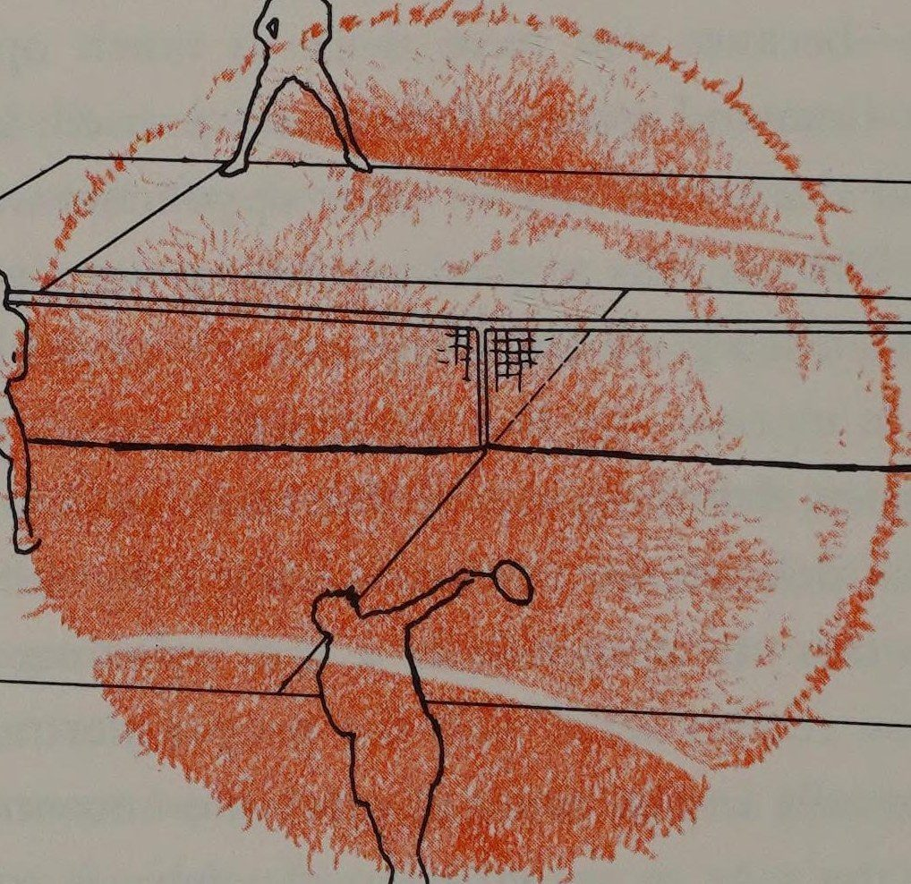
Bạn cũng phải đặt bóng một cách quyết đoán. Tính toán xem mình sẽ đưa bóng đi đâu về phía đối diện cũng là một phần của việc đánh vào bóng. Khi giao bóng, điều đó nghĩa là chủ động hướng bóng về bên yếu của người nhận bóng. Khi trả giao, điều đó nghĩa là đặt bóng ngoài tầm với của người đứng lưới và ngay dưới chân người giao bóng. Khi vô-lê ở gần lưới, điều đó nghĩa là đẩy bóng trả lại theo một góc hoặc xuyên thẳng qua người đứng lưới bên đối phương. Vậy nên hãy nhắm mục tiêu cho mọi cú đánh của bạn — điều đó sẽ mài sắc mọi cú đánh của bạn.
You also must place your shots aggressively. Calculating where you are going to put the ball on the opposite side is also part of playing the ball. In serving, it means consciously directing the ball to the receiver’s weak side. In returning, it means placing the ball out of reach of the net man and at the feet of the server. In volleying close in, it means punching the ball back either at an angle or right through the opposing net man. So aim everything you hit—it will sharpen all your strokes.
Có lẽ hiển nhiên rằng chơi quả bóng hàm ý trước hết phải nhìn theo quả bóng, nhưng những người đánh đôi nên tự nhắc mình về điều cơ bản này đôi khi — đặc biệt nếu họ đang đánh trúng không đúng tâm vợt ở một số cú và không hiểu vì sao. Trong đánh đôi có nhiều thứ gây xao nhãng hơn so với đánh đơn, và việc để mắt rời khỏi quả bóng đơn giản là dễ hơn nhiều. Những động tác bất ngờ của đối phương hoặc của chính bạn đánh cặp có thể kéo sự chú ý của bạn đi. Việc lo lắng quá nhiều về nơi bạn muốn đặt bóng ngay từ đầu, hay mong muốn nhanh chóng theo cú đánh của mình vào một vị trí tốt hơn trên sân, cũng có thể gây xao nhãng tương tự.
Maybe it should be obvious that playing the ball implies keeping your eye on the ball in the first place, but it’s wise for doubles players to remind themselves of this basic from time to time—especially if they’re mis-hitting certain shots and can’t figure out why. In doubles there are more distractions than in singles, and it is simply much easier to take your eye off the ball. Sudden moves by your opponents or your own partner can draw your attention. So can too much worry about where you want to put the ball in the first place, or your desire to quickly follow your shot into a better position on the court.
Vậy nên hãy đánh quả bóng trước ở cú giao bóng, cú đỡ giao bóng, cú vô-lê và cú đập bóng trên đầu — rồi sau đó mới kết thúc động tác.
So hit the ball first on serve, return, volley, and overhead—then follow through.
KIỂM SOÁT LƯỚICONTROL THE NET
Ở đánh đơn, khi bạn tiến lên lưới, mối nguy chính mà bạn đối mặt là cú đánh xuyên qua người. Khi bạn tiến lên lưới trong đánh đôi, cú đánh xuyên qua người không còn là mối đe dọa đáng kể, đơn giản vì đối thủ có ít không gian hơn nhiều để đánh xuyên qua bạn. Vậy nên bạn thật sự không có lý do gì để chần chừ ở phía sau. Ở đánh đơn, có thể chơi một lối tennis thắng trận từ vạch cuối sân — và điều đó khá phổ biến, trừ nhóm nam chuyên nghiệp hàng đầu và một vài tay nữ chuyên nghiệp. Nếu bạn có những cú đánh bóng ở vạch cuối sân, sức bền và sự kiên nhẫn, bạn có thể làm được. Nhưng trong đánh đôi, bạn buộc phải kiểm soát lưới.
In singles, when you come to net, the chief danger you face is the passing shot. When you come to net in doubles, the passing shot is not much of a threat, simply because the opponent has much less space to pass you in. So you really have no excuse to hang back. In singles, it is possible—and quite common, except among the top men pros and a few of the women pros—to play a winning brand of tennis from the baseline. If you have the ground strokes, the endurance, and the patience, you can do it. But in doubles you must control the net.
NGUYÊN TẮC ĐÁNH ĐÔI 2DOUBLES PRINCIPLE 2 — CONTROL THE NET
Ở đánh đơn, những cú đánh bóng vững chắc từ vạch cuối sân tạo nền tảng cho việc bạn kiểm soát các động tác của đối thủ và cục diện trận đấu. Ở đánh đôi, sự kiểm soát chỉ đến khi bạn và bạn đánh cặp của bạn ở vào vị trí có thể đánh bổng xuống phía đối phương, và điều đó nghĩa là di chuyển vào một vị trí gần lưới.
In singles, solid ground strokes from the base line form the basis for your control of your opponent’s moves and the course of the match. In doubles, control comes only when you and your partner are in a position to hit down on the opponents, and that means moving into a close position at net.
Rất khó để ăn điểm từ vạch cuối sân trong đánh đôi, chủ yếu là do sự hiện diện của người lưới bên đối phương, người có thể phòng thủ hiệu quả trước những cú đánh vào một nửa phần sân, và đe dọa những cú đánh vào nửa còn lại. Có thể lốp bóng qua đầu anh ta hoặc đánh xuyên qua anh ta từ vạch cuối sân, nhưng khi đó bạn đang phụ thuộc vào một cú đánh đặc biệt tốt của bạn, hoặc một sai lầm của anh ta, để kéo dài điểm (pha bóng) nếu không muốn nói là để thắng nó, và về lâu dài bạn sẽ không ghi được nhiều điểm từ anh ta bằng số điểm anh ta ghi được từ bạn.
It is hard to win a point from the baseline in doubles mainly because of the presence of the opposing net man, who can effectively defend against shots hit to one half of the court, and threaten shots hit to the other half. It is possible to lob him or hit through him from the baseline, but then you are depending on an exceptionally good shot by you, or an error by him, to prolong the point if not to win it, and in the long run you would not score as much off him as he would off you.
Khi chơi từ khu vực cuối sân, bạn sẽ phải đánh một cú khá tốt trong mọi lần đối đầu với một cặp giỏi, nếu không bạn sẽ gặp rắc rối. Nhưng khi bạn di chuyển vào lưới, đôi khi bạn không cần làm gì hơn là chỉ đưa bóng trở lại để ăn điểm. Đó là vì bạn ở gần đến mức đối phương thường không có thời gian chạy đuổi theo cú đánh của bạn hay chuẩn bị đầy đủ trước những cú đánh bắn thẳng vào họ.
Playing from the backcourt, you will have to hit a fairly good shot every time against a good team, or you'll be in trouble. But when you move into net, you sometimes have to do no more than simply get the ball back in order to win points. That’s because you are so close that the opponents often won’t have time to run down your shot or prepare adequately on shots hit at them.
Cách tốt nhất để phá bỏ thế có lợi của người đứng lưới bên đối phương là lên lưới và đánh những cú bóng hạ gục anh ta, hoặc nhờ vào góc đánh mà có thể phớt lờ anh ta — nói cách khác, là giành quyền kiểm soát lưới từ tay anh ta. Đội nào kiểm soát được lưới thì thắng điểm, trong 90 phần trăm trường hợp.
The best way to undo the opposing net man’s advantageous position is to come to net and hit shots that destroy him or, thanks to the angle, can afford to ignore him—in other words, to take control of the net from him. Whichever team controls the net wins the point, in go percent of the cases.
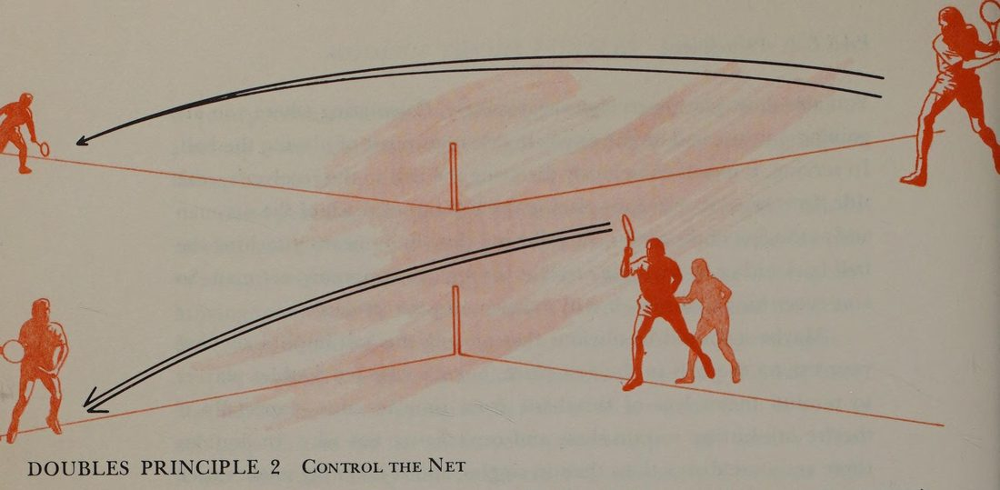
Kiểm soát lưới không chỉ đơn thuần có nghĩa là đang ở trên lưới. Nó có nghĩa là đang ở tư thế sẵn sàng trên lưới — cả bạn lẫn bạn đánh cặp — và còn là việc sở hữu một cú vô-lê hiệu quả và, để dùng chống lại quả bóng bổng, một cú đập bóng trên đầu hiệu quả.
Control of the net does not simply mean being up at net. It means being in a ready position at the net—both you and your partner—and also being in possession of an effective volley stroke and, for use against the lob, an effective overhead.
Nếu những cú vô-lê và đập bóng trên đầu của bạn còn yếu, bạn vẫn nên cố gắng tiến lên lưới thường xuyên nhất có thể sau khi giao bóng hoặc sau một cú đỡ giao bóng tốt. Vì sao? Đó là cách duy nhất để tích lũy kinh nghiệm về những cú đánh này trong điều kiện thực chiến. Và, ngay cả khi bạn chỉ là một con hổ giấy trên lưới trong lúc còn đang học cú vô-lê của mình, sự hiện diện của bạn cũng có thể gây chút khiếp sợ cho đối phương và có lẽ buộc họ mắc lỗi.
If your volley and overhead strokes are weak, you should still try to come to net as frequently as you can following your serve or a good return of serve. Why? It’s the only way to build up experience of these strokes under combat conditions. And, even if you are a paper tiger at net while still learning your volley, your presence may intimidate opponents a bit and perhaps force an error.
Cho đến khi bạn học được cách hỗ trợ cho cú giao bóng của mình bằng việc tiến lên và thực hiện một cú vô-lê đầu tiên tốt, bạn sẽ không có lợi thế đặc biệt nào khi giao bóng — đối phương sẽ có thể giành thế tấn công bằng một cú đỡ giao bóng tốt.
Until you learn to back up your serve by moving in and making a good first volley, you will not hold any particular advantage in serving —your opponents will be able to take the offensive with a good return.
Ý tưởng di chuyển lên lưới thực ra củng cố nguyên lý chơi quả bóng — tiến lên càng nhiều càng tốt để đón mọi cú đánh — và nó cũng giúp xây dựng cách tạo cú đánh vững chắc. Nếu bạn đang nghĩ đến việc tiến lên lưới sau khi giao bóng, bạn sẽ có nhiều khả năng vung vợt xuyên qua quả bóng đúng cách — chứ không phải đánh vào quả bóng như thường xảy ra ở những người chơi mới và trung cấp — khi bạn xoay chân sau của mình lại và bước vào trong sân. Ở những cú đỡ giao bóng, bạn sẽ có nhiều khả năng dồn trọng lượng cơ thể vào mỗi cú đánh hơn nếu bạn sẵn sàng di chuyển về phía trước sau khi hoàn tất cú đánh.
The idea of moving to net actually reinforces the principle of playing the ball—moving in as much as possible to meet every shot— and it also helps build sound stroke-making. If you are thinking of going to net following your serve, you will be more likely to swing through the ball properly—and not hit at the ball as so often happens among beginning and intermediate players—as you bring your back foot around and into the court. On your returns, you will be more likely to put your weight into each shot if you are predisposed to move forward after completing the stroke.
Rõ ràng người ta bị cản trở khi cố áp dụng nguyên tắc tiến lên lưới trong thực chiến nếu họ sợ ở gần lưới. Nỗi sợ như vậy không chỉ thường khiến nhiều người chơi không dám tiến vào những vị trí tấn công tốt trên sân ở nội dung đánh đôi, mà còn khiến họ trở nên vô dụng nếu họ có tới được đó. Lá chắn tốt nhất của bạn trước những lo lắng bị bóng đập trúng là một cú vô-lê vững vàng, chắc chắn. Nhưng bạn cũng có thể dễ dàng tự chứng minh rằng quả bóng khó có thể làm bạn đau, kể cả khi nó có đập trúng bạn — ít nhất là không đau ở tốc độ bóng bay tại trình độ chơi ở câu lạc bộ. Vào một lúc nào đó khi tập, hãy thử bắt những quả bóng được đánh mạnh trên lưới bằng tay không. Nếu bạn bắt được bóng, điều đó cũng có nghĩa là bạn có thể né bóng kịp lúc để tránh bị đập trúng — và quan trọng hơn, là bạn có thể vô-lê nó.
One is obviously handicapped in trying to apply the principle of moving to net in actual play if there is fear of being near the net. Such fear not only often keeps many players from moving into good offensive positions on the court in doubles, but renders them useless if and when they do get there. Your best shield from anxieties about being hit by the ball is a good solid volley stroke. But you can also easily prove to yourself that the ball isn’t likely to hurt you, even if it does hit you— at least not at the speeds it travels at the club level of play. During practice sometime, try catching hard-hit balls at net with your bare hand. If you can catch the ball, it also means you can get out of its way in time to avoid being hit—and, more important, that you can volley it.
Cần có chút thời gian, lòng kiên nhẫn và một chút tinh thần ưa mạo hiểm để chơi trên lưới trong những giai đoạn đầu của quá trình phát triển tennis của một người. Nhưng một khi bạn đã thoải mái về mặt tâm lý ở đó, và tự tin vào cú vô-lê của mình, bạn sẽ bắt đầu yêu thích việc chơi ở phía trước, vì đó là nơi phần lớn các điểm (pha bóng) được định đoạt, và những diễn biến ở đó có một sự tự nhiên và nhanh nhẹn có thể khiến người ta phấn khích.
It takes some time and patience, and a bit of adventurousness, to play at net in the early stages of one’s development in tennis. But once you are comfortable there psychologically, and are confident in your volley, you will begin to relish playing forward, because that’s where most of the points are decided, and the action there has a spontaneity and quickness that can be exhilarating.
Có một số lợi thế cụ thể khi ở trên lưới. Bản thân lưới không còn là một rào cản đáng kể mà bạn phải cân nhắc khi đưa bóng trở lại. Bạn có thể nhìn đối phương và phần sân bên họ rõ hơn. Bạn ở vào vị trí khai thác được tỷ lệ diện tích lớn hơn ở bên kia sân, và với nhiều lựa chọn góc hơn. Cuối cùng, khi ở trên lưới bạn có thể đón bóng sớm hơn sau khi đối phương đánh nó, và vì vậy trả bóng lại trước khi anh ta chuẩn bị đầy đủ để làm bất cứ điều gì với nó.
There are several specific advantages to being at net. The net itself is no longer a significant hurdle for you to consider in sending the ball back. You are able to see the opponents and their side of the court better. You are in a position to exploit a greater percentage of area on the other side, and at a wider choice of angles. Finally, when at net you can meet the ball sooner after an opponent has hit it, and so return it before he is fully prepared to do anything about it.
Đương nhiên, những đối thủ giỏi hơn của bạn cũng sẽ cố giành quyền kiểm soát lưới theo cách tương tự và thường là vào những thời điểm tương tự. Sau một số màn đấu kiếm dạo đầu từ các vạch cuối sân đối diện, những cặp đánh đôi giỏi lao vào những cuộc chạm trán ở lưới, với những cú vô-lê của họ tương đương với những con dao găm. Trong những cuộc cận chiến như vậy, thường chính sự nhanh nhạy của phản xạ và độ sắc bén của khả năng vô-lê quyết định ai cuối cùng thắng điểm (pha bóng).
Naturally, your better opponents will be trying to get control of the net in the same way and often at the same times. From some preliminary swordplay from opposing baselines, good doubles teams plunge into skirmishes at net, with their volley strokes being the equivalent of daggers. In such in-fighting it is usually the quickness of reflexes and the sharpness of the volleying that determines who finally wins the point.
PHỐI HỢP NHƯ MỘT ĐỘIWORK AS A TEAM
Về sau chúng tôi sẽ dành hẳn một chương cho những cách cụ thể khác nhau để bạn và bạn đánh cặp của bạn cải thiện sự giao tiếp và hiệu quả thi đấu với tư cách một đội. Còn bây giờ, hãy ghi nhớ rằng khi chơi đôi, bạn là một cặp hai người trên sân, đang chơi đối đầu với một cặp hai người khác, và trên hết, không phải đối đầu với nhau. Một cộng một sẽ bằng ít hơn hai trong một sự phối hợp cặp đôi tồi. Nhưng một sự phối hợp thực sự hiệu quả thì thực ra còn hơn cả tổng các phần của nó.
Later we’ll devote a chapter to various specific ways in which you and your doubles partner can improve communication and performance as a team. For now, bear in mind that when playing doubles you are a twosome on the court, playing against another twosome, and above all, not against each other. One plus one equals less than two in a poor doubles combination. But a really effective combination is actually more than the sum of its parts.
Trong đánh đôi, bạn phải suy nghĩ, cảm nhận, hành động và phản ứng như một đội. Hai lĩnh vực mà tinh thần đồng đội thể hiện rõ rệt là những di chuyển của bạn trên sân và những cú đánh bạn chọn thực hiện.
In doubles you must think, feel, act, and react as a team. The two areas in which teamwork shows up dramatically are your movements in the court and the shots you select to make.
Những người bạn đánh cặp giỏi chơi trên sân như một đội, cùng nhau di chuyển lên lưới và lùi trở lại khi cần, và dịch chuyển từ bên này sang bên kia mỗi khi những cú đánh rộng đưa một người chơi ra khỏi sân phần nào, để người bạn đánh cặp còn lại, chỉ bằng cách di chuyển một hai bước, giữ được tuyến tấn công nguyên vẹn.
Good partners play the court as a team, moving together up to net and back again as necessary, and shifting from side to side whenever wide shots take one player somewhat off the court, so that the other partner, in moving a step or two, keeps the line of attack intact.
Để hai người chơi phối hợp tốt với nhau như một đội trong việc bao quát sân, mỗi người chơi phải liên tục dịch chuyển hoặc điều chỉnh vị trí, theo sau mỗi cú đánh của phía mình, để ở vào vị trí tốt nhất có thể cho việc xử lý toàn bộ các kiểu trả bóng khả dĩ của đối phương. Tay giao bóng phải giao bóng, rồi di chuyển vào trong sân đến vị trí trung tâm của những cú trả bóng khả dĩ của người đỡ giao bóng. Người đỡ giao bóng phải trả bóng, rồi nhảy trở lại giữa phần sân của người trả bóng. Người đứng lưới phải vô-lê, rồi bước lên phía trước hoặc sang bên với vợt giơ cao và sẵn sàng vô-lê lần nữa. Người lốp bóng phải di chuyển đến vị trí mà từ đó việc đối phó với cú đập bóng trên đầu không thể tránh khỏi sẽ dễ dàng nhất.
For two players to work together well as a team in covering the court, each player must continually shift or adjust position, following every shot by his or her side, in order to be in the best possible spot for handling the range of likely returns by the opponent. The server must serve, and then move into the court to the center of possible returns by the receiver. The receiver must return, and then hop back into the middle of the returner’s half of the court. The net player must volley, and then step forward or to the side with racket high and ready to volley again. The player who lobs must move to the spot from which fielding the inevitable overhead will be easiest.
Việc lấy lại vị trí đúng trên sân của bạn sau mỗi cú đánh theo cách này là điều cơ bản ở đánh đơn cũng như ở đánh đôi. Sự khác biệt trong đánh đôi là bạn phải luôn hồi vị dựa trên cả những cú đánh của đồng đội lẫn những cú đánh của chính mình.
Recevering your proper court position following each shot in this manner is a fundamental in singles as well as doubles. The difference in doubles is that you must always recover in relation to your partner’s shots, as well as to your own.
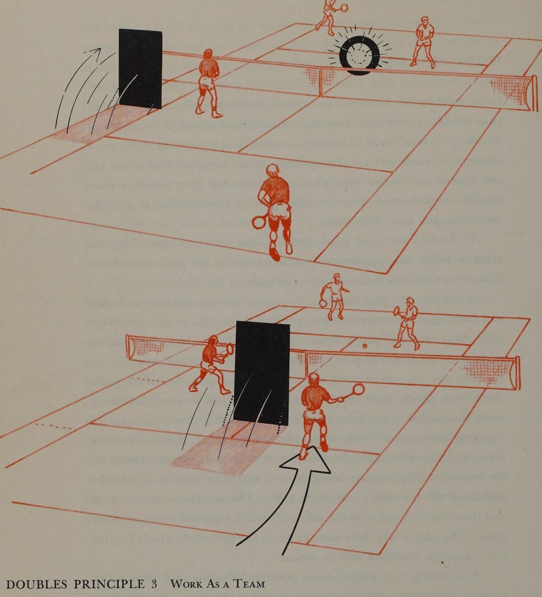
Nếu một người chơi không tiến lên sau khi giao bóng, bạn đánh cặp của anh ta thực chất bị mắc kẹt trên lưới. Anh ta phải liên tục nhìn lại phía sau để xem chuyện gì đang diễn ra. Đối phương có một khoảng trống lớn để khai thác bằng nhiều loại cú đánh chéo góc khác nhau.
If a player does not come in following his serve, his partner is effectively stranded up at net. He has to keep looking back to see what's going on. The opponents have a big gap to exploit with a variety of angled shots.
Nếu một người chơi không lùi về sau khi đối phương thực hiện một quả bóng bổng tốt, tình thế dễ bị tổn thương tương tự cũng xuất hiện: một người ở trên lưới, một người ở phía sau.
If a player does not retreat, following a good lob by the opponents, the same vulnerable one-up, one-back situation develops.
Làm thế nào để bạn đánh bóng “như một đội”? Có vô số cách mà những người đánh đôi giỏi tạo ra những cú đánh của mình với sự cân nhắc dành cho bạn đánh cặp.
How do you make shots ‘as a team’’? There are numerous ways in which good doubles players produce their strokes in consideration of their partners.
Chẳng hạn, khi bạn giao bóng vào bên trái tay, hay bên yếu hơn, của một đối thủ, bạn thực chất đang giao bóng “như một đội”, vì bạn đang giảm khả năng bạn đánh cặp ở lưới bị ăn một cú trả bóng thuận tay mạnh. Khi bạn giao bóng một vào liên tục, bạn đang gia tăng đáng kể biên độ an toàn cho bạn đánh cặp của bạn ở lưới — và cũng gia tăng giá trị tiềm năng của anh ta đối với đội. Anh ta có nhiều cơ hội hơn để băng ngang và cướp bóng trước những cú trả bóng yếu ớt, và nhờ đó giúp bạn đi qua game giao bóng của mình với ít áp lực hơn.
For instance, when you serve to an opponent’s backhand, or weaker side, you are, in effect, serving “as a team,” because you are reducing the chances of your partner at net getting drilled by a strong forehand return. When you get your first serve in consistently, you are greatly increasing your partner’s margin of safety at net—and also increasing his potential value to the team. He has more chances to cross and poach on weak returns, and so to help get you through your service game with less pressure.
Một phép thử lớn đối với tinh thần đồng đội đến ở những cú đánh bóng xuống giữa sân, hoặc những quả bóng bổng mà rõ ràng cả hai người đều có thể xử lý. Trong những tình huống như vậy, gần như luôn có một người chơi có lợi thế nhỏ nhưng thực sự so với người kia trong khả năng xử lý cú đánh trước mắt. Có thể bạn ở gần hơn vài inch, hoặc quả bóng đang tới bên vô-lê mạnh hơn của bạn, hoặc bạn có thể có sự nhanh nhẹn hay đà di chuyển để bứt lên trước trên quả bóng bổng. Những cặp giỏi với kinh nghiệm đã từng chơi các trận đấu cùng nhau trước đó thường biết theo bản năng người chơi nào sẽ đón quả bóng. Những bạn đánh cặp trong đánh đôi kém cỏi hoặc ít kinh nghiệm hơn thì hoặc cả hai đều rút lui, để mặc không ai cố kéo dài điểm (pha bóng), hoặc cả hai cùng lao vào quả bóng, để lộ những khoảng trống ở một hoặc cả hai bên mà đối phương có thể tận dụng
A big test of teamwork comes on shots hit down the middle, or lobs that apparently could be fielded by either partner. In such situations one player almost always has a slight but real edge over the other in his ability to handle the shot at hand. You may be inches closer, or the ball may be coming to your stronger volleying side, or you may have the quickness or the momentum to get a jump on the lob. Good teams with the experience of having played matches together before instinctively know which player will take the ball. Poor or less experienced doubles partners will either both withdraw, leaving no one to try to prolong the point, or both go after the ball, leaving openings to one or both sides that the opponents will be able to take advantage of if the ball is retrieved.
Những động tác và những cú đánh bạn thực hiện trên sân đôi phần lớn phản ánh cách tiếp cận chiến lược của bạn đối với trận đấu, nhưng cũng cần lưu ý trong mục “tinh thần đồng đội” rằng cả hai người bạn đánh cặp phải nhất trí về phương cách tấn công và phòng thủ tốt nhất, có cân nhắc đến điểm mạnh và điểm yếu của chính họ cũng như của đối phương. Ví dụ, nếu một trong hai bạn quyết định liên tục tấn công cú giao bóng của một đối thủ, trong khi người kia lại hành động dựa trên giả định rằng cố bẻ game giao bóng của đối thủ còn lại là phương án tốt hơn, thì hai bạn có thể triệt tiêu nỗ lực của nhau.
The moves and shots you make on a doubles court largely reflect your strategic approach to the match, but it should also be noted under “teamwork” that both partners must agree on the best means of attack and defense, in consideration of their own strengths and weaknesses and those of their opponents. For example, should one of you decide to consistently attack the serve of one of the opponents, while the other proceeds on the assumption that trying to break the other opponent’s serve is the better course of action, then you may cancel out each other’s efforts.
HÃY LÀM CHO NÓ XẢY RAMAKE IT HAPPEN
Bạn không thể chờ đợi một điều gì đó tốt đẹp xảy ra ở đánh đơn cũng như ở đánh đôi, nhưng một cách tiếp cận thụ động, thiếu kế hoạch sẽ nhanh chóng trở thành thảm họa hơn ở đánh đôi bởi vì những cú giao bóng, đỡ giao bóng và vô-lê được đặt bóng thiếu suy nghĩ có thể bị tấn công ngay lập tức. Trong đánh đôi, bạn phải liên tục tạo ra cơ hội cho chính mình thông qua một cách tiếp cận chiến lược được cùng nhau hoạch định, tổ chức và thực hiện.
You can’t wait for something good to happen in singles any more than in doubles, but a passive, unplanned approach is more quickly a disaster in doubles because thoughtlessly placed serves, returns, and volleys can be immediately attacked. In doubles you must constantly create your own opportunities through a strategic approach that is jointly conceived, organized, and executed.
Trong kinh nghiệm của chính chúng tôi trên đấu trường nhà nghề, đôi khi chúng tôi bước vào một trận đấu với “sự tự tin kiểu đánh đơn” — với tư cách cá nhân, có lẽ chúng tôi từng có thành tích thắng những cá nhân hợp thành đội kia — để rồi nhận ra mình đang thua trước một ván rưỡi mà không kịp hay biết. Chúng tôi sớm khám phá ra rằng bạn không bao giờ có thể thắng trong đánh đôi nhờ vào danh tiếng đánh đơn của mình, hay với bất kỳ thái độ dửng dưng hay tự mãn nào. Ngay từ đầu, bạn phải cảm thấy mình đang chấp nhận một số mạo hiểm đã tính toán trong việc cố buộc đối phương mắc sai lầm, bẻ game giao bóng của họ và giành thế chủ động.
In our own experience on the circuit we have sometimes gone into a match with “singles confidence’’—as individuals we perhaps had a record of victories against the individuals comprising the other team— only to find ourselves a set and a half down before we knew it. We soon discovered that you can never win in doubles on the strength of your singles reputation, or with any kind of a casual or smug attitude. From the start, you must feel you are taking a certain number of calculated risks in trying to force mistakes by the opponents, break their service, and gain the momentum.
Ở đánh đơn, bạn có xu hướng nhắm đến những cú ăn điểm sớm hơn, nhưng ở đánh đôi bạn phải đánh vào những vị trí an toàn trên sân cho đến khi bạn có cơ hội cho một cú ăn điểm. Chỉ khi đó bạn mới có thể chấp nhận mạo hiểm và cố dứt điểm để thắng điểm (pha bóng).
In singles you tend to go for winners sooner, but in doubles you must play to safe spots on the court until you get the opportunity for a winning shot. Only then can you take a chance and try to put it away and win the point.
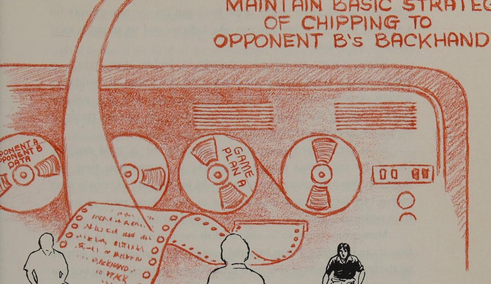
Trong đánh đôi có chỗ cho sự tính trước nhiều hơn so với ở đánh đơn. Nếu bạn đang giao bóng hoặc đỡ giao bóng, bạn đang cố thiết lập một khuôn mẫu lối chơi mà sau vài lần trao đổi bóng sẽ cho bạn cơ hội nhắm đến cú ăn điểm. Nếu bạn đang đứng lưới, bạn đang cố hỗ trợ hoặc phá vỡ khuôn mẫu nào đang bắt đầu hình thành.
There is room for more forethought in doubles than there is in singles. If you are serving or receiving, you are trying to establish a pattern of play that, after a couple of exchanges, will give you the chance to go for the winner. If you are playing net, you are trying to support or disrupt whichever pattern is beginning to emerge.
Ngay cả cú đánh ít khả năng thành công cũng được tính trước trong lối đánh đôi hay. Bạn nhắm đến cú ăn điểm vào thời điểm có vẻ không thích hợp, không phải chỉ để “giữ cho đối phương phải trung thực” — bằng cách buộc anh ta phải luôn cảnh giác trước một dải lối chơi rộng hơn — mà là để cố ngăn đối thủ nhận ra chiến lược cơ bản của bạn và do đó nhận ra khuôn mẫu lối chơi chính của bạn.
Even the low-percentage shot is premeditated in good doubles. You go for the winner at what seems like an inopportune time, not simply to “keep the other guy honest’”—by forcing him to remain alert over a broader spectrum of play—but to try to keep your opponent from perceiving your basic strategy and thus your main pattern of play.
Đà hưng phấn (thế chủ động) dường như có thể đổi chiều thậm chí còn dễ dàng hơn trong đánh đôi so với ở đánh đơn. Nếu bạn đang có đà hưng phấn, bạn phải tập trung vào vài điểm (pha bóng) đầu tiên trong game giao bóng của chính mình. Bạn muốn chơi thoải mái nhưng không lơi lỏng — bạn không thể để mất ý thức — để tiếp tục hút lấy những nguồn năng lượng đang phục vụ bạn rất tốt cho đến lúc đó. Nếu bạn không có đà hưng phấn, bạn phải siết chặt lối chơi của mình — mà không siết chặt cơ bắp — và tập trung vào việc bẻ game giao bóng của đối phương, điều này đòi hỏi phải chấp nhận nhiều mạo hiểm hơn, không phải bằng cách mắc những sai lầm ngớ ngẩn mà bằng cách đa dạng hóa các cú trả bóng của bạn hơn.
Momentum seems to be able to shift even more easily in doubles than it can in singles. If you have the momentum, you must concentrate on the first few points of your own serve. You want to play loose but not lax—you can’t go unconscious—in order to continue to draw off the energies that have been serving you so well so far. If you don’t have the momentum, you must tighten up your play—without tightening your muscles—and focus on breaking the opponent’s serve, which requires taking more chances, not by making silly mistakes but by mixing up your returns more.
Giữa những cặp có trình độ và kinh nghiệm khá tương đương, đà hưng phấn có thể không phát huy tác dụng trong nhiều game mà cả hai bên đều giữ được game giao bóng. Khi đó bạn phải kiên nhẫn bám theo chiến lược cơ bản của mình — hoặc chuyển sang chiến lược dự phòng nếu chiến lược cơ bản đang thất bại — cho đến khi xuất hiện điểm lợi (ad) làm xoay chuyển cục diện về phía bạn. Nhưng bẻ được game giao bóng không mang lại cho bạn đà hưng phấn vĩnh viễn. Thực tế, đôi khi nó còn truyền cảm hứng cho đội kia đến mức họ ngay lập tức bẻ lại được game và giành đà hưng phấn khỏi tay bạn.
Between teams of fairly equal ability and experience, momentum may not come into play for many of those games during which both sides hold serve. You must then patiently adhere to your basic strategy —or change to your alternate strategy if the basic strategy is failing— until the ad point comes up that swings things around to your side. But breaking serve does not give you the momentum for keeps. In fact, it sometimes inspires the other team so much that they immediately break back and gain the momentum on you.
Nếu bạn vẽ biểu đồ một trận đánh đôi cân sức theo những tiêu chí này, bạn có thể sẽ vẽ một đường dài, nhích lên dần để biểu thị cuộc chiến gian nan nhằm nắm được thế thượng phong, rồi một đường bằng phẳng để biểu thị một kiểu bình nguyên khi thế thượng phong chưa nghiêng hẳn về bên nào, và cuối cùng là một đường đổ dốc đột ngột để cho thấy trận đấu kết thúc chóng vánh một khi thế thượng phong chuyển hẳn. Chính khoảng thời gian tương đối ngắn trên vùng bình nguyên đó là lúc câu hỏi ai sẽ giành được thế thượng phong quyết định dường như đã được giải quyết trọn vẹn. Nó có thể tương ứng với một chuỗi chỉ vài ván — có thể xuất hiện ở bất cứ đâu trong trận — mà trong đó cả hai đội đánh đôi đều đang tranh giành quyền làm chủ một cách rõ ràng. Đây là lúc bạn nhất thiết phải tiếp tục đợt tấn công đã định của mình, không đổi sang chiến thuật khác khi không có lý do chính đáng, cũng không thu bớt tính hung hãn với hy vọng đối thủ sẽ mắc lỗi giúp bạn thắng.
If you were to diagram a closely contested doubles match in these terms, you might draw a long, gradually ascending line to indicate the uphill battle to get hold of the momentum, then a level line to indicate a plateau of sorts when the momentum is not firmly on either side, and finally an abruptly descending line to show the swift end of the match which comes once the momentum shifts decisively. It is that relatively short time in the plateau area when the issue of who gets the winning momentum seems to be fully resolved. It may correspond to a sequence of only a few games—which may come anywhere in the match—during which both doubles teams are clearly fighting for mastery. This is the time when it is critical to continue your planned attack, neither switching without good reason to another strategy, nor withdrawing in your aggressiveness in the hope that your opponents will make the errors that will help you win.
Bề ngoài có thể đánh lừa. Một đội có thể đang thắng game giao bóng dễ dàng, trong khi đội kia phải vật lộn mỗi game, và do đó có vẻ như đang giữ đà hưng phấn. Nhưng điều này có thể thay đổi đột ngột nếu, chẳng hạn, đội thứ hai đó tình cờ bẻ được game giao bóng nhờ một vài điểm (pha bóng) ăn may.
Appearances can be deceiving. One team may be winning serve easily, while the other must struggle each game, and thus seemingly have the momentum. But this could shift suddenly if, for example, that second team happens to break serve on a couple of fluke points.
Hoặc hãy lấy hai cặp thường xuyên đấu với nhau, với một bên thắng phần lớn các trận. Nhìn bề ngoài có thể thấy hai cặp này có thực lực ngang nhau. Nhưng nếu một cặp có lịch sử áp đảo, cặp đó sẽ nắm giữ một lợi thế tâm lý lớn, và sẽ rất khó để cặp kia giành được đà hưng phấn. Một cú đánh may mắn của cặp vốn thường vượt trội hơn có thể khẳng định thêm đánh giá thấp của cặp yếu hơn về cơ hội của mình và kết thúc trận đấu ngay tại đó một cách hiệu quả. Chỉ một thái độ tích cực vững vàng mới có thể ngăn điều này xảy ra.
Or take two teams who have played each other frequently, with one side winning the vast majority of matches. On the surface it may appear that the teams are evenly matched. But if one has a history of dominance, that team will possess a big psychological edge, and it will be very hard for the other team to acquire the momentum. One lucky shot by the historically superior team may confirm the inferior team’s low opinion of its chances and effectively end the match right there. Only a solid positive attitude can prevent this from happening.
Những cặp đánh đôi giỏi học được cách khởi đầu nhanh — với sự tập trung cao độ — và không bao giờ chơi hời hợt. Ngoài lời khuyên đó ra, thật sự không có một mẹo duy nhất nào để giành thế thượng phong, để giữ nó sau khi đã giành được, hay để lấy lại nó sau khi đã đánh mất. Nhưng bạn phải luôn ý thức được sự tồn tại của nó trong mọi trận đấu, và cũng phải ý thức rằng nó chỉ đậu lại bên phía lưới của bạn nếu bạn làm cho nó xảy ra. Nó là một thứ gió lấp đầy cánh buồm của đội bạn và đưa bạn đến chiến thắng. Đó là thứ bạn chiến đấu từ ngay đầu, trước hết bằng một cú đánh, rồi bằng một điểm, rồi bằng một ván, rồi bằng một set, và cuối cùng bằng cả trận đấu. Và đôi khi phải đến điểm cuối cùng của trận đấu, bạn mới có thể yên tâm nói rằng thành tố bí ẩn mang tên thế thượng phong thật sự đang đứng về phía bạn.
Good doubles teams learn to start fast—with super concentration— and never play casually. Other than that advice, there really is no single tip for getting the momentum, or for keeping it after you’ve got it, or for getting it back after you’ve lost it. But you should always be aware of its existence in every match and be aware also that it will settle on your side of the net only if you make it happen. It’s a kind of wind that fills your team’s sails and brings you to victory. That is what you are fighting for from the start, first with a shot, then with a point, then with a game, then with a set, and finally with the match. And sometimes it is not until the last point of the match that you can safely say that the mysterious ingredient called momentum is truly on your side.
CHƯƠNG 3 — Các vai trò luân chuyển trong đánh đôi và cách đảm nhận
Giờ hãy xem xét cách các nguyên lý của lối đánh đôi hiện đại ảnh hưởng đến những trách nhiệm thay đổi của bạn trong suốt một trận đấu.
Now LET’s LOOK at how the principles of modern doubles affect your varying responsibilities in the course of a match.
Đánh đôi có thể được ví như một vở kịch mà trong đó bạn luân phiên đảm nhận bốn vai trò hoàn toàn khác biệt. Đó là các vai trò người giao bóng, bạn đánh cặp của người giao bóng, người đỡ giao bóng, và bạn đánh cặp của người đỡ giao bóng. Những tay vợt đánh đôi giỏi thuộc nằm lòng từng vai trò—họ biết rõ những việc phải làm và những nỗi lo đặc biệt trong mỗi vị trí—và chuyển đổi dễ dàng giữa cả bốn vai trò trong một trận đấu. Mỗi vai trò đi kèm với những trách nhiệm riêng . . . và tiềm năng cho những hành động kịch tính.
Playing doubles may be compared to a drama in which you rotate among four distinctly different roles. These are the roles of server, server’s partner, receiver, and receiver's partner. Good doubles players learn each role by heart—they know the special chores and worries they have in each slot—and move effortlessly among all four roles in a match. Each role comes with its own unique responsibilities . . . and potential for dramatic action.
Trong những phần mô tả đặc điểm này, chúng tôi sẽ giới hạn ở lối đánh đôi tấn công vừa phải — lối chơi mà những cặp đánh đôi hay nhất hiện nay đang thể hiện — với niềm tin rằng lối đánh đôi như vậy, toàn phần hay phần nào, cũng nằm trong tầm tay của phần lớn người chơi đánh đôi ở trình độ câu lạc bộ. Vì vậy, chúng tôi xây dựng những khuyến nghị cho từng vai trò trên giả định rằng trong hầu hết các trường hợp, cả hai đội đều sẽ cố gắng chiếm quyền kiểm soát lưới sau khi giao bóng. Về sau chúng tôi sẽ bàn đến những cách xử lý đặc biệt do những người giao bóng đứng lùi ở vạch cuối sân, do những người nhận bóng lấy cú lốp làm vũ khí trả bóng chính, và do những chiến thuật đánh đôi vốn dĩ dễ bị tổn thương khác quyết định. Chúng tôi cũng sẽ gợi ý những cách đối phó với những trở ngại khác thường do các tay thuận trái, những người mê xoáy lên, và những đối thủ đánh đôi lạ lùng khác gây ra. Ở thời điểm này, mong muốn chính của chúng tôi là truyền cho bạn cảm nhận tổng thể về những vai trò và trách nhiệm chính khi chơi đánh đôi hết sức mình.
In these characterizations, we’ll confine ourselves to the moderately aggressive brand of doubles that is exemplified by the best doubles teams today, in the belief that such doubles, in whole or in part, is within reach of the majority of doubles players at the club level, too. Thus we are predicating our recommendations for each of the roles on the assumption that, in most cases, both teams will be attempting to gain control of net following serves. Later we'll deal with the special approaches dictated by servers who hang back at the baseline, by receivers who depend on the lob as their main weapon of return, and by other inherently vulnerable doubles tactics. We'll also suggest ways in which to deal with the unusual obstacles posed by left-handers, topspin fanatics, and other off-the-beaten-track doubles opponents. At this point, our main wish is to impart to you an overall sense of the principal roles and responsibilities in playing maximum-effort doubles.
Chúng ta cũng nên nói rõ, để ghi nhận, rằng triết lý đánh đôi của chúng ta áp dụng như nhau cho đôi nam, đôi nữ và đôi nam nữ, nên chúng ta sẽ hiếm khi, nếu có bao giờ, dành lời bàn riêng cho chỉ một loại hình nào. Đúng là chúng ta thường cổ vũ những chiến thuật tấn công như di chuyển lên theo sau giao bóng và đỡ giao bóng, cướp bóng, và thỉnh thoảng nhắm vào những người đứng lưới khi đỡ giao bóng, vô-lê và đập bóng trên đầu. Những chiến thuật này có thật sự áp dụng cho mọi lối đánh đôi không? Chẳng hạn trong đôi nam nữ, việc các tay vợt nam bắn những quả bóng như đạn đại bác vào các tay vợt nữ đang đứng ở lưới thường bị phản đối.
We should also mention, for the record, that our doubles philosophy applies equally to men’s doubles, women’s doubles, and mixed doubles, so we will seldom if ever make asides on behalf of one type only. It is true that we are usually advocating such aggressive tactics as moving in following serve and return, poaching, and occasional targeting on players at net on returns, volleys, and overheads. Do these tactics really apply to all of doubles? In mixed doubles, for instance, men’s firing cannonballs at women players positioned at net has been generally frowned upon.
Thật ra, chúng ta tin rằng những vấn đề như vậy phải được giải quyết tùy theo trình độ thi đấu, chứ không phải loại hình thi đấu. Thật sự không có lý do chính đáng nào để không đánh vào một tay vợt nữ trong một trận đấu nghiêm túc giữa những đội ở trình độ cao hơn với khả năng và kinh nghiệm khá tương đương. Mặt khác, sẽ là hành xử thể thao tồi tệ rõ ràng nếu một tay vợt vượt trội đánh những quả bóng mạnh thẳng vào một người đứng lưới, dù nam hay nữ, vốn còn tương đối ít được huấn luyện trong môn này, bởi vì rất có thể tay vợt vượt trội đó có thể thắng điểm bằng một trong nhiều cách khác nhau. Nhưng nếu tay vợt nữ ngang tài với tay vợt nam, việc nhắm vào cô ấy đôi khi có thể là chính đáng—và ngày nay nhiều tay vợt nữ sẽ không muốn điều nào khác. (Nhân đây, vùng nhắm tốt nhất có thể của bạn, khi đánh vào một đối thủ, là nách của tay vợt đó ở bên mà người ấy cầm vợt. Điều đó
Actually, we believe such problems must be resolved according to the level of play, not the type of play. There really is no good reason not to hit at a woman player in a serious match between more advanced teams of fairly equal abilities and experience. On the other hand, however, it would be blatantly poor sportsmanship for a superior player to hit hard balls directly at a net player, whether male or female, who is still relatively unschooled in the game, because the chances are that the superior player could win the point in one of several different ways. But if the woman is the equal of the man, targeting on her may be justified at times—and many women today would not have it otherwise. (Incidentally, your best possible target area, when hitting at an opponent, 1s the player’s armpit on the side he or she holds the racket. ‘That jams the player’s response but good.)
Rõ ràng, sự thận trọng, lẽ thường và tinh thần chơi đẹp phải được vận dụng đôi khi trong đánh đôi cũng như trong bất kỳ môn thể thao nào. Mong muốn của chúng ta không phải là khuyến khích sự hỗn loạn hay ác ý trên sân, mà là những thỏa mãn lâu dài của lối đánh đôi ở trình độ hay nhất.
Obviously, discretion, common sense, and a sense of fair play must be invoked at times in doubles as in any sport. Our wish is not to encourage mayhem or maliciousness on the court, but the lasting satisfactions of doubles at its best.
NGƯỜI GIAO BÓNG — DẪN DẮT ĐIỂM SỐ... HOẶC LÀ ĐÁNH MẤT NÓSERVER—LEAD THE POINT ...OR LOSE IT
Với tư cách người giao bóng, bạn nắm vận mệnh của game trong tay chắc chắn như bạn nắm quả bóng tennis mà bạn sắp tung lên. Nhiệm vụ của bạn là tận dụng vị thế có sức đòn bẩy lớn này bằng cách giao bóng khôn khéo và điêu luyện, rồi tiến lên vạch giao bóng để hỗ trợ quả giao bóng của mình bằng một quả vô-lê đầu tiên chính xác.
As the server, you hold the fate of the game in hand as surely as you hold the tennis ball you are about to toss. Your job is to take advantage of this position of great leverage by serving with shrewdness and skill, and then moving up to the service line to back up your serve with an accurate first volley.
Trước hết, bạn phải phát triển được sự ổn định trong giao bóng để có thể đưa quả giao bóng một vào sân trong phần lớn thời gian. Bạn sẽ tin chắc vào tính đúng đắn của câu châm ngôn quen thuộc trong đánh đôi này ngay lần đầu tiên chính bạn đối mặt với một người giao bóng không bao giờ hoặc gần như không bao giờ mắc lỗi giao bóng. Áp lực và sự bực bội mà đội bạn sẽ trải qua khi cố bẻ game giao bóng sẽ rất lớn.
Before all else, you must develop the consistency in your serving that permits you to get the first serve in most of the time. You will be convinced of the validity of this familiar doubles dictum the first time you yourself face a server who never or almost never commits a fault. The pressure and frustration your team will experience in trying to break service will be great.
Lý do để xây dựng sự ổn định thay vì sự rực rỡ, hay tỷ lệ giao bóng ăn điểm trực tiếp cao, trong quả giao bóng một của bạn ở nội dung đánh đôi rất đơn giản: Nó buộc người đỡ giao bóng phải đứng ở vị trí sâu và trung tính, không chắc bạn sẽ đặt quả giao bóng ở đâu và bạn đánh cặp của bạn có ý đồ gì với quả đỡ bóng. Tham vọng của người đỡ giao bóng chỉ giới hạn ở việc đưa bóng trở lại chéo sân và thấp. Điều đó cho bạn đánh cặp của bạn cơ hội cướp bóng.
The reason for building consistency rather than brilliance, or a high percentage of aces, into your first serve in doubles is simple: It forces the receiver to stand in a deep and neutral position, unsure of where you are going to place the serve and of what designs your partner may have on the return. The receiver’s ambition is limited to getting the ball back crosscourt and low. That gives your partner a chance to poach.
Tuy nhiên, nếu bạn mắc lỗi ở quả giao bóng một, tình thế thay đổi mạnh mẽ. Lúc này người đỡ giao bóng có thể tiến lên phía trong sân với hiểu biết rằng, ở quả giao bóng hai của bạn, bạn sẽ buộc phải giao bóng không chỉ với ít lực hơn nhưng cũng kém đa dạng hơn. Rất có thể đối thủ sẽ đoán chính xác loại bóng bạn đánh, và do đó có thể bước vào trả bóng nhanh và mạnh. Đồng đội của bạn, cũng ý thức đầy đủ rằng bạn sẽ phải giao bóng với ít lực và ít biến hóa hơn, sẽ phải từ bỏ mọi ý định cắt bóng và lùi lại một hai bước để đề phòng cú trả bóng mạnh dọc biên. Điều đó lại mở ra nhiều khoảng sân bên phía bạn hơn cho đối phương tấn công, khiến người nhận bóng có thể thoải mái đánh vượt qua bạn xuống giữa sân.
If you fault on the first serve, however, the situation changes drastically. The receiver now can move up inside the court with the knowledge that, on your second serve, you will be forced to serve not only with less pace but with less variety. Chances are the opponent will be able to anticipate exactly the type of ball you hit, and thus will be able to step into the return quickly and aggressively. Your partner, also fully aware you are going to have to serve with less pace and variety, will have had to give up on any poaching ideas and retreat a step or two to protect against a possible hard return down the line. That, in turn, opens up more of your side of the court for attack, so that the receiver may be free to hit past you down the middle.
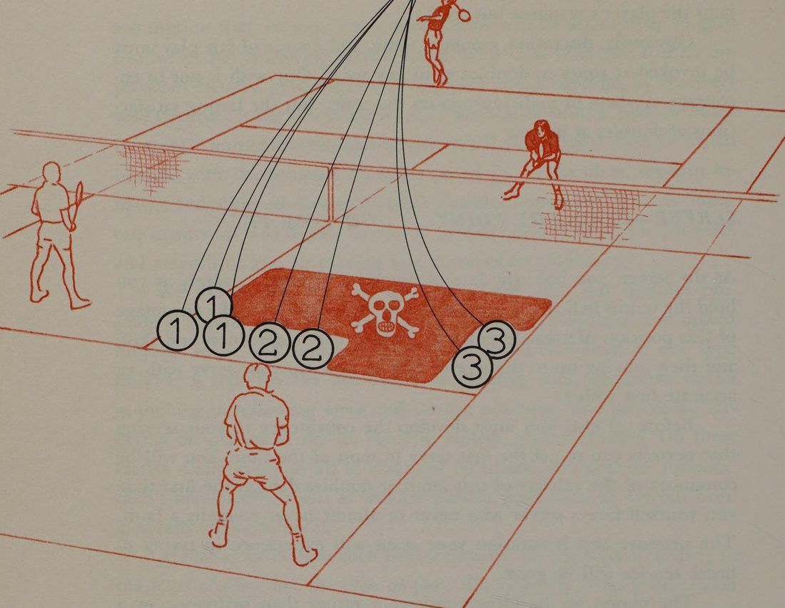
Những bất lợi chiến thuật rõ rệt xuất phát từ việc thường xuyên phải dùng đến quả giao bóng hai cũng tạo ra những thay đổi tâm lý rõ rệt. Sự tự tin của bạn bị tổn thương, và bạn đánh cặp của bạn cảm thấy mình đang chơi dưới áp lực lớn hơn. Tệ hơn nữa, đối thủ trở nên phấn chấn một cách không xứng đáng và mang tâm thế tấn công.
The distinct strategic disadvantages that come out of having to resort often to a second serve also work definite psychological changes. Your confidence is bruised, and your partner feels he or she is playing under extra duress. Even worse, the opponents become undeservedly buoyed up and in an offensive frame of mind.
Một quả giao bóng một luôn “tốt”—tốt theo nghĩa là nó qua được lưới và rơi vào ô giao bóng—cũng phải có độ sâu và sự biến hóa trong điểm rơi trước khi trở thành tốt theo nghĩa hiệu quả trong đánh đôi.
A consistently “good” first serve—good in the sense that it gets over the net and hits in the service box—must also have depth and variety in its placement before it’s good in the sense of being effective in doubles.
Để ngăn người đỡ giao bóng cướp thế tấn công, bạn phải giao bóng sâu—ít nhất là trong vòng một yard tính từ vạch giao bóng và, trước những người đỡ giao bóng hạng nhất, trong vòng một foot tính từ vạch. Một quả giao bóng sâu, dù thiếu tốc độ, nói chung vẫn giữ được bất kỳ người đỡ giao bóng nào ở lại phía sau sau khi đỡ bóng. Hãy nhớ rằng tốc độ quá nhiều ở quả giao bóng thật ra có thể gây bất lợi cho bạn, vì nó cho bạn ít thời gian hơn để di chuyển lên phía sau quả bóng.
To prevent the receiver from stealing the offensive, you must get your serve in deep—at the least within a yard of the service line and, against first-rate returners, within a foot of the line. A deep serve, even if it lacks speed, will generally keep any receiver back after hitting the return. Bear in mind that an excess of speed on the serve can actually hurt you, in giving you less time to move in behind it.
Để ngăn người đỡ giao bóng sử dụng một cú đánh nền sở trường—thuận tay hay trái tay—bạn phải có khả năng liên tục hướng quả giao bóng của mình không chỉ sâu mà còn về phía yếu hơn của tay vợt đó. Rồi sau đó, để ngăn bất kỳ ai trở nên quá quen và ngày càng hiệu quả ở phía yếu đó, bạn phải thỉnh thoảng xen vào những quả giao bóng rộng về phía mạnh của tay vợt đó, hoặc thỉnh thoảng giao bóng sâu ngay vào người tay vợt đó, để thay đổi nhịp độ và, với những quả đánh vào thân người, để làm tê liệt cú đánh.
To prevent the receiver from using a favored ground stroke—forehand or backhand—you must be able to consistently direct your serve not only deep but to the player’s weaker side as well. ‘Then, to prevent anyone’s becoming grooved and increasingly effective on that weaker side, you must slip in occasional serves wide to the player’s strong side, or occasional deep serves right at the player, to change the pace and, with the shots into the body, to jam the stroke.
NGƯỜI GIAO BÓNG — CÚ VÔ-LÊ ĐẦU TIÊNSERVER—FIRST VOLLEY
Sau một quả giao bóng tốt, người giao bóng phải tiến vào một vị trí thăng bằng gần vạch giao bóng để chờ cú trả bóng của người nhận. Cú vô-lê đầu tiên nên được đánh an toàn trở lại theo hướng bóng đến, sâu nếu người nhận bóng đã ở lại phía sau, ngắn hơn nếu anh ta đã lao lên. Mục tiêu của bạn là đặt bóng quanh chân anh ta để buộc anh ta phải trả lại một cú vô-lê hay bán vô-lê yếu và thấp.
Following a good serve, the server must move in to a balanced position near the service line to await the receiver's return. The first volley should be played safely back into the direction from which it came, deep if the receiver has stayed. back, more shallow if he has rushed in. Your goal is to place the ball around his feet to force him to hit a weak, low volley or half-volley back.
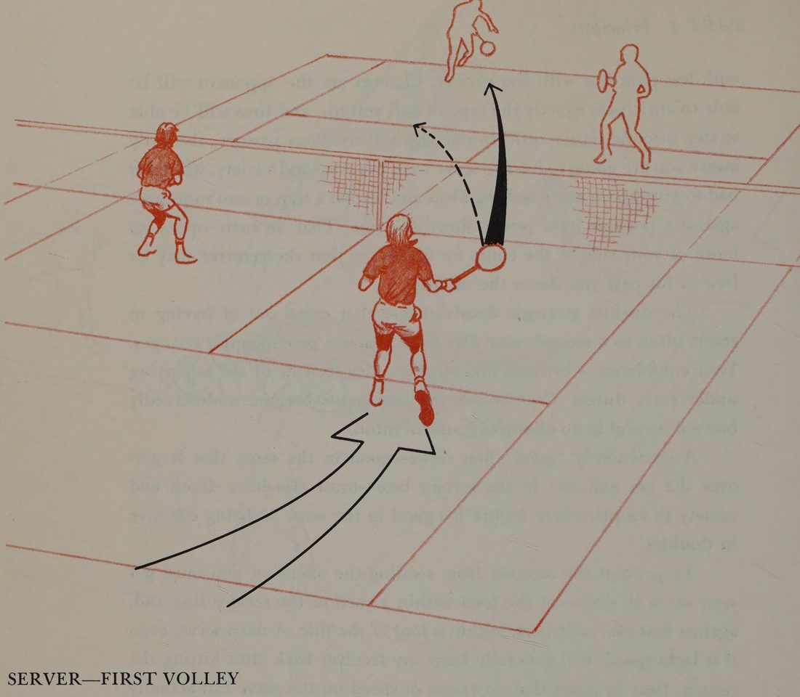
Việc thử nghiệm để giữ đối thủ trung thực là thiết yếu, nhưng đừng thử nghiệm một cách dại dột. Chẳng hạn, thời điểm tốt nhất để giao bóng về phía mạnh của đối thủ là khi bạn đang dẫn 40—0 hay 40—15, chứ không phải khi bạn đang bị dẫn 15—30 hay 30—40.
It is vital to experiment in keeping your opponent honest, but don’t experiment foolishly. The best time to serve to the opponent’s strong side, for instance, is when you are ahead 40—o or 40—15, and not when you are behind 15—30 or 30—40.
Một lần nữa, lý do chúng ta nhấn mạnh độ sâu và độ chính xác trong giao bóng của bạn là để cho người đỡ giao bóng thời gian chuẩn bị tối thiểu, một phạm vi hẹp các loại cú đánh có thể thực hiện khi đỡ bóng, và một vùng nhỏ để đánh trả an toàn. Nếu bạn có thể liên tục tạo ra những điều kiện này, một đối thủ hiếm khi gây cho bạn nhiều rắc rối. Nếu không, bạn—và đặc biệt là bạn đánh cặp của bạn—sẽ phải trả giá.
Again, the reason we are emphasizing depth and accuracy in your serving is to give the receiver a minimum of preparation time, a narrow range of possible types of shots to hit on the return, and a small area to hit back to with safety. If you can consistently create these conditions, an opponent will rarely give you much trouble. If not, you—and especially your partner—will pay the price.
Với tư cách người giao bóng, bạn nên đứng ở vạch cuối sân tại một điểm xấp xỉ giữa vạch giữa sân và biên dọc sân đôi. Vị trí đó xa hơn khá nhiều so với vị trí giao bóng thông thường trong đánh đơn, vốn ở ngay cạnh vạch giữa sân. Vị trí giao bóng rộng hơn giúp việc di chuyển vào sân theo sau quả giao bóng của bạn trở nên dễ dàng, tới một điểm cho phép bạn bao quát phạm vi những quả đỡ bóng có thể có của người đỡ giao bóng. Đặc biệt, nó bảo vệ trước quả đỡ bóng chéo sân rộng, vốn dù sao cũng là quả đỡ bóng dễ xảy ra nhất của người đỡ giao bóng. Trên thực tế, bạn giao bóng rồi di chuyển đến điểm giữa của vùng sân có khả năng được dùng đến nhiều nhất khi đỡ bóng. Giao bóng từ vị trí đánh đơn, bạn sẽ phải thực hiện thêm vài bước nữa để đến cùng một chỗ, và đến lúc đó thì bất kỳ quả đỡ bóng chéo sân đủ tốt nào cũng đã vượt qua bạn.
As the server, you should stand at the baseline at a point approximately midway between the center line and the doubles sideline. ‘That is quite a bit farther over from the usual serving position in singles, which is right next to the center line. The wider serving position facilitates moving into the court following your serve, to a point that will allow you to cover the range of possible returns by the receiver. In particular, it protects against the wide crosscourt return which is the receiver’s most likely return anyway. In effect, you serve and then move to the center point of the court area which is most likely to come into play on the return. Serving from the singles position, you would have to take several additional steps to get to the same place, by which time any reasonably good crosscourt return would be past you.
Vị trí giao bóng này có thể thay đổi tùy theo ô sân bạn đang đánh tới, những điểm yếu của một số người đỡ giao bóng nhất định, loại giao bóng bạn đang thực hiện, và những điều kiện đặc biệt khác đôi khi buộc phải dùng những chiến thuật giao bóng khác thường. Chúng ta sẽ giải thích cách thức và lý do những biến thể như vậy phát sinh về sau.
This serving position may vary according to the court you are hitting to, the weaknesses of certain receivers, the type of serve you are hitting, and other special conditions that sometimes dictate unusual serving tactics. We'll explain how and why such variations come into play later on.
Bởi vì với tư cách một người giao bóng giỏi trong đánh đôi, bạn phải tự cam kết không chỉ giao bóng tốt, mà còn phải cố gắng vô-lê quả đỡ bóng của đối thủ, nên bây giờ chúng ta hãy tạm bám vào tầm quan trọng của việc người giao bóng di chuyển từ vị trí đó tiến vào trong sân sau khi giao bóng.
Because as a good server in doubles, you must commit yourself not just to serving the ball well, but to trying to volley the opponent’s return, let’s for the moment stick to the importance of the server’s moving from that position forward into the court following serve.
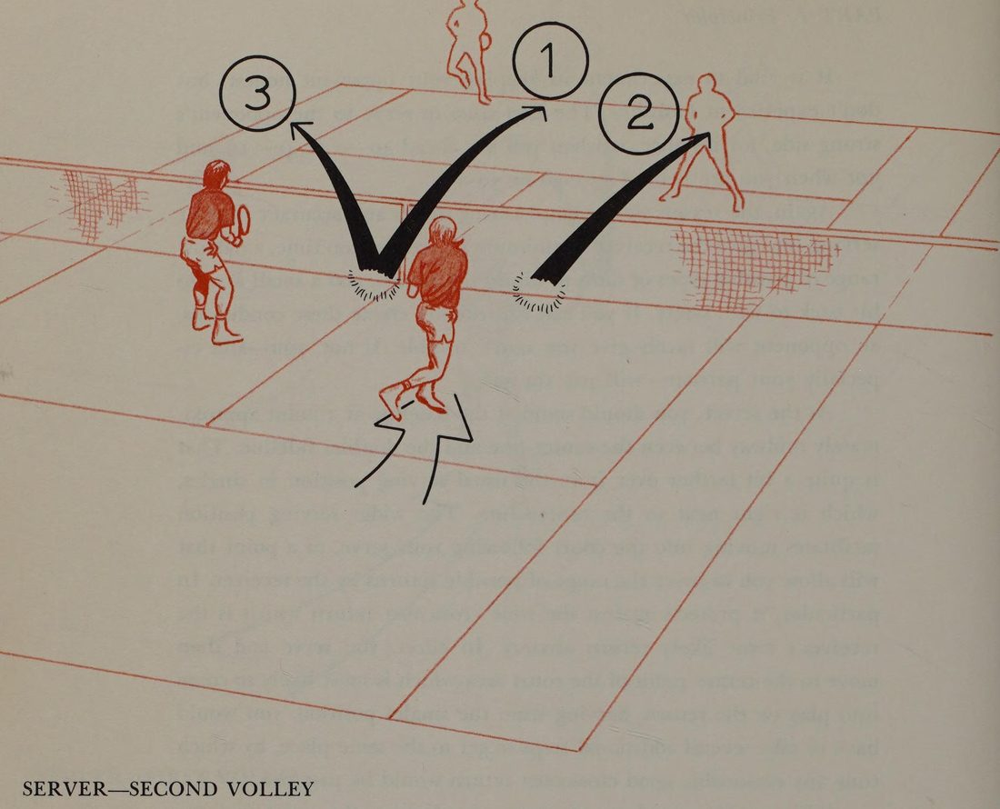
Bạn sẽ nhận ra rằng, nếu bạn có độ nhanh nhẹn ở mức trung bình, bạn sẽ có thể vượt qua vùng đất không người—khoảng sân giữa vạch cuối sân và vạch giao bóng—kịp lúc để vào tư thế vô-lê phần lớn các quả đỡ bóng. Khoảng cách là mười tám feet, nhưng nếu bạn đã giao bóng đúng cách, bạn sẽ đã bước vào sân theo đà vung vợt và tự cho mình một khởi đầu thuận lợi hướng tới mục tiêu.
You will find, if you are of average quickness, that you will be able to get through no man’s land—the area between baseline and service line—in time to set up to volley most returns. The distance is eighteen feet, but if you have served properly you will have stepped into the court on your follow-through and given yourself a head start toward your objective.
Thật ra, bạn có thể lên tới trước vạch giao bóng hai bước và vẫn ở vị trí vô-lê hiệu quả, tùy thuộc vào quả đỡ bóng. Chúng tôi thật ra chỉ yêu cầu bạn chạy ngang qua một quãng tương đương một sàn bếp cỡ trung bình, rồi dừng lại và vào tư thế cho quả vô-lê của mình.
Actually, you can come up short of the service line by a couple of steps and still be in position to volley effectively, depending on the return. We’re really only asking you to scamper across the equivalent of a kitchen floor of average size, and then stop and set up for your volley.
Di chuyển lên theo sau giao bóng không phải là cuộc thi điền kinh lớn lao như nhiều tay vợt câu lạc bộ tưởng. Với những tay vợt này, “lao lên lưới” nghĩa là chạy cắm đầu về phía lưới và không dừng lại cho tới khi tới đó. Bạn thật sự có thể chạy đâm vào quả đỡ bóng của đối thủ nếu bạn cố tiến quá sâu vào sân, và bị buộc phải vô-lê trong tư thế bị chèn ép hay lúng túng. Hoặc bạn có thể bị đánh vượt qua hoàn toàn, bằng một quả đỡ bóng nhẹ đặt tốt xuống giữa sân hoặc vào hành lang của bạn, hoặc bằng một quả bóng bổng bất ngờ.
Moving in following serve is not the major track event that many club players take it to be. To these players, “rushing net” means running headlong for the net and not stopping until they get there. You can literally run into an opponent’s return if you try to get too far into the court, and be forced to volley in a jammed or awkward position. Or you can be passed completely, by a well-placed soft return down the middle or in your alley, or by a surprise lob.
Từ một tư thế sẵn sàng vững chãi ở hoặc gần vạch giao bóng, quả vô-lê đầu tiên của bạn nên được đánh sâu trở lại phía người đỡ giao bóng nếu quả đỡ bóng thấp, hoặc vào hoặc vượt qua người đứng lưới đối phương nếu quả đỡ bóng yếu và cao—nếu đó là một quả bóng nhẹ bay lơ lửng. Trước quả đỡ bóng thấp phổ biến hơn đã được cắt trả về phía bạn, bạn phải tập trung giữ bóng trong cuộc chơi, tránh xa tầm với của người đứng lưới đối phương, và sâu xuống chân người đỡ giao bóng. Rồi bạn phải tiến thêm một hai bước nữa để thiết lập vững chắc quyền kiểm soát lưới của mình, và chờ đợi trong dự đoán về một quả vô-lê thứ hai đánh góc hung hãn hơn, quả bóng mà, ít nhất trong một pha bóng giáo khoa, sẽ thắng điểm cho bạn một cách dứt khoát.
From a stable ready position at or near the service line, your first volley should be made deep back to the receiver if the return is low, or at or past the opposing net player if the return is weak and high— if it’s a floater. Against the more common low return that has been chipped back to you, you must concentrate on keeping the ball in play, away from the reach of the opposing net player, and deep to the receiver’s feet. Then you must move in another step or two to firmly establish your control of the net, and to wait in anticipation of making a more aggressively angled second volley that, at least in a textbook exchange, will win the point for you outright.
Là người giao bóng trong đánh đôi, đừng quên rằng nhiệm vụ của bạn vừa là giao bóng vừa là vô-lê. Sau khi đã đưa được một quả giao bóng đầu tiên hiệu quả vào bên yếu của người nhận bóng, để tiếp tục kiểm soát điểm, bạn phải di chuyển vào vị trí để đánh một cú vô-lê đầu tiên an toàn trả về phía người nhận bóng, rồi sau đó, nếu cần, tiến vào gần hơn nữa để đánh cú vô-lê thứ hai mạnh mẽ hơn.
Don’t forget, as the server in doubles, that your job is both to serve and to volley. Having got an effective first serve in to the receiver's weak side, to continue to control the point you must move into position to play a safe first volley back to the receiver, and then, if necessary, move in even closer to play a more aggressive second volley.
Mỗi khi đến lượt bạn giao bóng trong đánh đôi, hãy cố cảm nhận rằng bạn đang điều khiển mọi việc. Chúng tôi không gợi ý bạn bước lên vạch giao bóng với sự tự tin quá hăng hái hay không thực tế về khả năng của mình. Nhưng hãy thể hiện chút nhiệt huyết với cuộc tấn công. Đây là cốt lõi của trách nhiệm giao bóng trong đánh đôi. Quá thường xuyên, các tay vợt bước lên giao bóng với thái độ ngập ngừng hay thụ động, thay vì đảm nhận những phẩm chất lãnh đạo mà vai trò này đương nhiên đòi hỏi.
Whenever it’s your turn to serve in doubles, try to feel that you are running the show. We’re not suggesting you walk up to the line with a too jaunty or unrealistic confidence in your abilities. But do show some enthusiasm for the attack. This is at the core of the serving responsibility in doubles. Too often players go up to serve in a tentative or passive manner, instead of assuming the leadership qualities the role naturally requires.
ĐỒNG ĐỘI CỦA NGƯỜI GIAO BÓNG — CHÚ HỀ BẬT KHỎI HỘP Ở LƯỚISERVER’S PARTNER—JACK-IN-THE-BOX AT NET
Với tư cách bạn đánh cặp của người giao bóng, nhiệm vụ chính của bạn là hỗ trợ lối chơi của người giao bóng, bằng cách tấn công mọi quả đỡ bóng yếu và bảo vệ phía sân của bạn trước mọi quả đỡ bóng mạnh, hay quả bóng bổng.
As the server’s partner, your main job is to support the pattern of play of the server, by attacking all weak returns and protecting your side of the court against any strong returns, or the lob.
Chúng tôi không thể nhấn mạnh quá mức nhu cầu phải luôn nhón chân trong vai trò này ở lưới. Không có gì kém hiệu quả hơn trong quần vợt bằng một người đứng lưới có đôi chân như đổ bê tông, hoặc quá nhút nhát để bước vào tấn công hay bảo vệ hành lang của mình với nhiệt huyết. Bạn đánh cặp của người giao bóng phải là một con lật đật thì mới làm tốt việc này.
We cannot stress too much the need to be on your toes in this role at net. There is nothing more ineffectual in tennis than the net player whose feet are set in concrete, or who is too timid to step into the attack or to defend his or her alley with enthusiasm. The server’s partner must be a jack-in-the-box to do this job well.
Hãy giữ mắt hướng về phía trước—vào người đỡ giao bóng—để bạn có thể phản ứng ngay lập tức với điều người ấy làm với quả đỡ bóng. Đừng bận tâm nhìn bạn đánh cặp của mình—chẳng có gì thu được khi nghiên cứu tư thế giao bóng của người ấy; thật ra bạn sẽ mất một tích tắc dự đoán mỗi lần như vậy. Và dù bạn đang nhìn chằm chằm bạn đánh cặp với vẻ chế giễu hay ngưỡng mộ, bạn đều có nguy cơ ảnh hưởng đến sự tập trung của người ấy vào một thời điểm then chốt.
Keep your eyes forward—on the receiver—so that you can react immediately to what he or she does with the return. Never mind watching your own partner—there’s nothing to be gained by studying his serving form; in fact you would lose a split second of anticipation each time. And whether you are staring at your partner in derision or admiration, you risk affecting his concentration at a crucial moment.
Thay vì nhìn người giao bóng, hãy nhìn quả giao bóng. Xem bóng đang rơi ở đâu và bước theo hướng quả đỡ bóng có khả năng xảy ra.
Instead of watching the server, watch the serve. See where the ball is landing and step in the direction of the likely return.
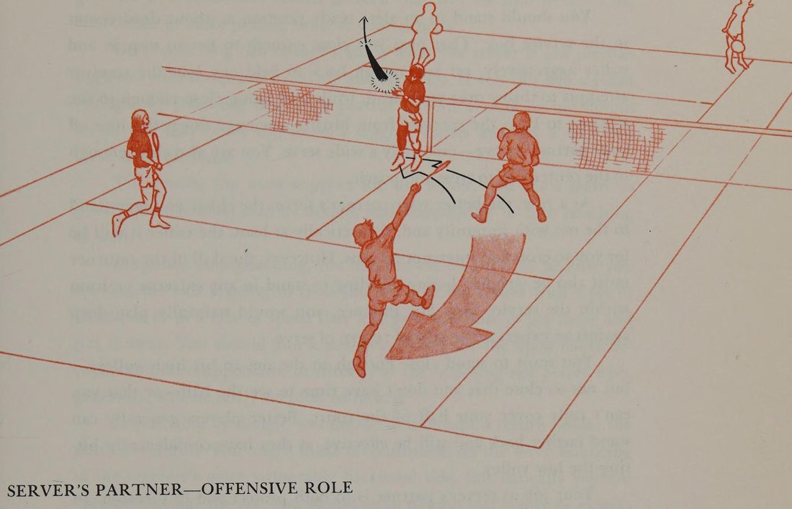
Bạn nên đứng ở tư thế sẵn sàng cảnh giác tại khoảng chính giữa ô giao bóng. Điều đó đặt bạn đủ gần lưới để bước vào và vô-lê hung hãn, nhưng đủ xa phía sau để đón mọi quả bóng bổng mà người đỡ giao bóng cố đưa qua đầu bạn, đồng thời vẫn đủ gần biên dọc để ngăn người đỡ giao bóng đánh một quả ăn điểm dọc biên từ quả giao bóng của bạn đánh cặp—đặc biệt là một quả giao bóng rộng. Bạn cũng đủ gần vạch giữa sân để băng ngang và cướp bóng.
You should stand in an alert ready position at about dead center in the service box. That puts you close enough to net to step in and volley aggressively, yet far enough back to field any lobs the receiver attempts to throw over your head, while still being close enough to the sideline to keep the receiver from hitting a winner down the line off your partner’s serve—especially a wide serve. You are also close enough to the center line to cross and poach.
Theo quy tắc chung, quả giao bóng của bạn đánh cặp càng tốt bao nhiêu, bạn càng có thể đứng gần lưới mà không sợ hãi bấy nhiêu và, ít nhất trên lý thuyết, bạn càng dễ băng ngang và chặn những quả đỡ bóng bấy nhiêu. Tuy nhiên, kỹ năng của người đỡ bóng cũng phải được cân nhắc trước khi quyết định đứng ở bất kỳ vị trí cực đoan nào trong ô giao bóng. Chẳng hạn, bạn đương nhiên sẽ chơi sâu trước một chuyên gia đỡ giao bóng bằng bóng bổng.
As arule, the better your partner’s serve, the closer you may stand to the net with impunity and, theoretically at least, the easier it will be for you to cross and intercept returns. However, the skill of the returner must also be weighed before deciding to stand in any extreme position within the service box. For instance, you would naturally play deep against an expert at the lobbed return of serve.
Bạn muốn đứng đủ gần lưới để đánh những quả vô-lê cao—nhưng không quá gần đến mức bạn không có thời gian nhìn thấy bóng—hoặc đến mức bạn không thể bao quát hoàn toàn nửa sân của mình. Những tay vợt giỏi hơn nói chung có thể đứng xa hơn phía sau mà vẫn hiệu quả, vì họ tự tin vào khả năng đánh quả vô-lê thấp.
You want to stand close enough to the net to hit high volleys— but not so close that you don’t have time to see the ball—or that you can’t fully cover your half of the court. Better players generally can stand farther back and still be effective, as they have confidence in hitting the low volley.
Nhiệm vụ của bạn với tư cách bạn đánh cặp của người giao bóng là vừa bảo vệ vừa đe dọa. Ở vị trí này nói riêng, vai trò thứ hai thường hiệu quả hơn. Một lối tấn công dựa trên việc cướp bóng hiệu quả có thể nhanh chóng phát triển thành một hàng phòng thủ bất khả xâm phạm.
Your job as server’s partner is to both protect and to threaten. In this position in particular, the latter role is often the more effective. An offense based on effective poaching can quickly develop into an impregnable defense.
Không quan trọng bạn cắt bóng bao nhiêu lần, hay thậm chí mỗi lần thử cắt bóng bạn đều thành công. Điều quan trọng là luôn ở thế sẵn sàng cắt bóng ở mọi cơ hội, để buộc người trả bóng vừa phải lo về bạn vừa phải nghĩ đến việc nhận giao bóng. Thường thì sức ép cộng thêm như vậy sẽ mang về cho bên bạn những điểm dễ dàng, khi người nhận bóng mất tập trung và mất sự an toàn, đánh trả bóng vào lưới hoặc ra ngoài dọc biên. Nhưng nếu bạn ít khi hoặc không bao giờ cắt bóng, người nhận bóng sẽ nhanh chóng quen tay với kiểu trả bóng chéo sân, cho phép anh ta xây dựng sự tự tin để đánh những cú bóng qua người khiến bạn phải trả giá.
It does not matter how often you poach, or even if you poach successfully every time you try it. The important thing is to be on the verge of poaching at every opportunity, in order to force the returner to worry about you as well as think about receiving serve. Often, such added pressure will win your side easy points, as the receiver, losing concentration and security, hits returns into the net or wide down the line. But if you seldom or never poach, the receiver will quickly become grooved in a crosscourt return pattern that will let him develop the confidence to make passing shots at your expense.
Cướp bóng giỏi có thể cứu một game khi người giao bóng không tạo ra những quả bóng với sức mạnh và độ chính xác thường ngày. Nếu bạn có thể thắng một điểm dứt khoát bằng cách cướp bóng sau khi bạn đánh cặp của bạn đã giao một quả bóng yếu hay hời hợt, bạn có thể nâng tinh thần đang sa sút của người giao bóng và đưa một quả giao bóng lạc hướng trở lại đúng đường.
Good poaching can salvage a game when the server is not producing shots with his or her usual zip and accuracy. If you can win a point outright by poaching after your partner has hit a weak or indifferent serve, you may boost the server’s sagging spirits and get a wayward serve back on track.
Để hỗ trợ người giao bóng tối đa, bạn phải học cách cướp bóng tự phát và theo chủ ý, và đôi khi cả giả vờ cướp bóng.
To provide the most support for the server, you must learn to poach spontaneously and by design, and occasionally to fake poaching as well.
Trong việc cướp bóng tự phát, bạn di chuyển để cắt một quả đỡ bóng vì bạn thấy rằng quả bóng sẽ qua lưới gần giữa sân với độ vượt lưới lớn hoặc ở tốc độ sẽ cho bạn thời gian tới đó và dứt điểm. Bạn nên nhắm quả vô-lê dứt điểm vào khoảng sân trống giữa hai đối thủ, hoặc đánh thẳng vào người đứng lưới đối phương, người nói chung sẽ khá bất lực trong việc đánh trả.
In spontaneous poaching, you move to cut off a return because you see that the ball is going to cross the net near the center with a lot of clearance or at a rate of speed that will give you time to get there and put it away. You should aim a put-away volley for the open court between your two opponents, or directly at the opposing net player who, generally, will be fairly helpless to return.
Trong việc cướp bóng theo chủ ý, bạn quyết định chặn một quả đỡ bóng trước khi điểm bắt đầu. Bạn có thể đặt điều kiện là quả giao bóng nảy về phía trái tay dễ tổn thương hơn của người đỡ giao bóng, nhưng về cơ bản bạn đang “mưu tính trước” hành động đó. Bạn nên đang di chuyển ngay trước hoặc đúng vào lúc người đỡ giao bóng tiếp xúc với bóng.
In poaching by design, you decide to intercept a return before the point has begun. You might make it conditional on the serve bouncing to the receiver’s more vulnerable backhand side, but basically you are “premeditating”’ the act. You should be in motion just before or exactly at the moment the receiver makes contact with the ball.
Thời điểm của bạn phải chính xác khi bạn cướp bóng theo chủ ý. Nếu bạn di chuyển quá sớm, người đỡ giao bóng có thời gian thay đổi cú đánh của mình và đưa quả đỡ bóng xuống hành lang không được bảo vệ của bạn. Nếu bạn di chuyển quá muộn, bạn đánh cặp của bạn sẽ phải đánh quả bóng với cả hai người cùng ở một nửa sân của phía bạn.
Your timing must be precise when you are poaching by design. If you move too early, the receiver has time to alter his or her stroke and drill the return down your unprotected alley. If you move too late, your partner will have to play the shot with both of you in the same half of your court.
Bạn cũng phải sẵn sàng đối phó với quả đỡ bóng yếu bất ngờ mà bạn thật ra vượt qua quá xa. Bạn thấy mình buộc phải cố đánh bóng bằng quả vô-lê trái tay thay vì quả vô-lê thuận tay mà bạn đã kỹ lưỡng chuẩn bị cho dịp này. Đôi khi quả đỡ bóng sẽ quá hay và đơn giản là bạn sẽ không thể với tới nó. Trong trường hợp đó, chỉ cần cố tránh đường cho đồng đội của bạn khi người ấy đánh cú bóng qua người.
You must also be prepared to cope with the unexpectedly weak return that you actually overrun. You find yourself forced to try to hit the ball with your backhand volley rather than the forehand volley you had carefully groomed for the occasion. Sometimes the return will be too good and you simply won’t be able to reach it. In that case, just try to get out of the way of your partner as he or she makes a pass at it.
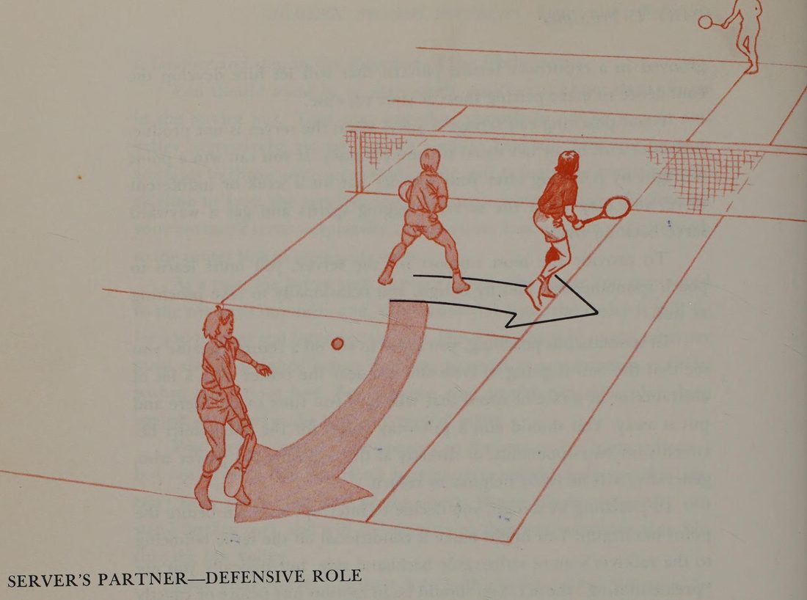
Bạn sẽ kéo dài hiệu quả cắt bóng của mình, và làm tăng sự rối trí và hoang mang nơi người nhận bóng, nếu thỉnh thoảng bạn cũng giả vờ cắt bóng, bằng cách khởi đầu bước ngang hoặc bước về phía lưới một hai bước, hay chỉ đơn giản là giả động tác bằng đầu và vai, rồi nhanh chóng trở lại tư thế sẵn sàng. Những động tác bất ngờ như vậy sẽ làm người nhận bóng mất tập trung, và đôi khi chúng thật sự lừa được đối thủ trả bóng về phía bạn, tạo ra những quả bóng mà bạn có thể vô-lê dứt khoát để ăn điểm.
You'll stretch your poaching effectiveness, and increase confusion and uncertainty in the receiver, if you also pretend to poach from time to time, by starting across or toward the net a step or two or merely by faking with head and shoulders, and then quickly resuming your ready position. Such sudden moves will distract the receiver, and occasionally they will actually fool the opponent into returning to your side, productive of balls which you should be able to volley away smartly.
Mỗi khi bạn cướp bóng, hãy làm điều đó với sự nhiệt tình. Bạn đang di chuyển vì một lý do: để tấn công và kết thúc điểm, dù thắng hay thua. Cướp bóng nửa vời đưa được bóng qua lưới, nhưng với hàng phòng thủ của chính đội bạn rối loạn.
Whenever you poach, do it with gusto. You are in motion for one reason: to attack and end the point, win or lose. Half-hearted poaching gets the ball back over the net, but with your own team’s defenses in shambles.
Nếu người giao bóng không đưa được quả giao bóng một vào sân, bạn sẽ phải tập trung bảo vệ bản thân và hành lang của mình, nhưng đừng quên việc cướp bóng như nhiều tay vợt câu lạc bộ vẫn làm ở thời điểm này. Nếu người đỡ giao bóng biết chắc rằng bạn sẽ không cướp bóng, người ấy sẽ có thể đánh quả đỡ bóng với sự tự tin cao hơn. Ở quả giao bóng hai, bạn nên đứng lùi lại một hai bước cho tới khi thấy bạn đánh cặp của bạn giao quả bóng kiểu gì, và quả đỡ bóng ra sao. Mối quan tâm đầu tiên của bạn là khả năng một quả đỡ bóng mạnh—một quả trái tay lớn hoặc một quả thuận tay băng vòng—dọc biên hoặc thẳng vào bạn. Nếu quả đỡ bóng đi chéo sân, mối quan tâm của bạn trở thành khả năng người đứng lưới đối phương cướp bóng, người sẽ tìm cách chặn bất kỳ quả bóng yếu nào của bạn đánh cặp, và vô-lê nó vượt qua bạn hoặc thấp xuống chân bạn. Trong cả hai tình huống, bạn chắc chắn đang ở thế khó và phải tập trung hoàn toàn vào việc giữ bình tĩnh, thả lỏng, và sẵn sàng tin vào phản xạ của mình để giữ phía của bạn trong điểm.
If the server fails to get the first serve in, you will have to concentrate on protecting yourself and your alley, but don’t forget about poaching as so many club players do at this point. If the receiver knows for sure you will not poach, he or she will be able to play the return with increased confidence. On the second serve, you should stand back a step or two until you see what kind of serve your partner hits, and what the return is like. Your first concern is the possibility of a strong return—a big backhand or a runaround forehand—down the line or right at you. If the return goes crosscourt, your concern becomes a possible poach by the opposing net player, who will be looking to intercept any weak shot by your partner, and to volley it past you or low at your feet. In either circumstance, you are definitely in the hot seat and must concentrate solely on staying alert, relaxed, and ready to trust your reflexes to keep your side in the point.
Dù có bao nhiêu hiểm nguy, cú cắt bóng lạnh lùng vẫn là phần cốt lõi trong công việc của đồng đội người giao bóng ở lưới. Nếu trong đầu đối thủ luôn thường trực mối nguy cắt bóng, hiệu quả trả bóng chắc chắn sẽ giảm sút. Nếu bạn không làm cho người nhận bóng ý thức được sự hiện diện của bạn — như một người sẵn sàng, muốn và có khả năng cắt bóng — thì bạn cũng có thể ngồi xuống, ít nhất là ở giai đoạn đầu của điểm, bởi vì sự hữu ích ban đầu của bạn cho đội sẽ bằng không.
For all its perils, the cold-blooded poach is the guts of the job of server's partner at net. If in the opponent’s mind there is the everpresent danger of poaching, the efficiency on returns is certain to diminish. If you don’t make the receiver aware of your presence—as someone who is ready, willing, and able to poach—then you might as well sit down, at least early in the point, because your initial usefulness to the team will be nil.
NGƯỜI NHẬN BÓNG — CHIẾN ĐẤU THOÁT KHỎI GÓC SÂNRECEIVER—FIGHTING OUT OF THE CORNER
Phần lớn các trận đánh đôi được thắng, không phải nhờ những quả giao bóng huy hoàng như trong đánh đơn, mà nhờ những quả đỡ giao bóng khéo léo và bền bỉ.
Most doubles matches are won, not on the basis of glorious serves, as in singles, but on crafty, dogged service returns.
Việc đỡ giao bóng đòi hỏi mức tập trung lớn nhất trong cả bốn vai trò cơ bản của đánh đôi, bởi vì bạn phải phản ứng tự phát trước một cuộc tấn công đã được chuẩn bị trong những điều kiện rất thuận lợi cho phía bên kia. Cho đến khi quả đỡ bóng hoàn tất, bạn đánh cặp của bạn không thể nhấc nổi một ngón tay để giúp bạn theo bất kỳ cách nào. Vậy nên, trong vài giây cần để bạn đỡ và đánh trả, bạn thật ra đang chơi một mình trước hai người. Những đối thủ lành nghề sẽ làm bạn cảm nhận áp lực đó một cách trọn vẹn.
Receiving serve demands the greatest amount of concentration of all four basic doubles roles, because you must react spontaneously to a prepared attack in conditions that strongly favor the other side. Not until the return is completed can your partner so much as lift a finger to help you in any way. So, in the few seconds it takes for you to receive and return, you are actually playing alone against two. Skilled opponents will make you feel that pressure thoroughly.
Tâm thế của bạn khi đỡ giao bóng phải tập trung cao độ như khi giao bóng. Việc này đòi hỏi nhiều nỗ lực hơn, bởi vì bạn không phải là người khởi xướng hành động. Còn có hiểm họa từ người đứng lưới đối phương, người di chuyển rất nhiều, thỉnh thoảng giả động tác và phóng tới lui, cướp bóng hoặc đe dọa cướp bóng. Thật dễ để rời mắt khỏi quả bóng và rời tâm trí khỏi điểm đấu giữa những diễn biến như vậy.
Your frame of mind for the return of serve must be as highly concentrated as it is for the serve. This takes more of an effort, because you are not initiating the action. ‘There is also the hazard of the opposing net player who moves around a lot, feinting and darting around, poaching or threatening to poach. It is easy to take your eye off the ball and your mind off the point amid such goings-on.
Việc hoạch định trước xem bạn sẽ cố làm gì với quả đỡ bóng, ngay cả trước khi bóng được giao, là một cách tốt để tập trung tâm trí vào pha bóng. Hãy để bản năng của bạn đối phó với những diễn biến bất ngờ—như một quả giao bóng cắt bóng bất ngờ về phía thuận tay của bạn, hay người lưới thật sự băng ngang tìm cách cướp bóng—và cố vạch ra phản ứng của mình dựa theo quả giao bóng có khả năng xảy ra.
Planning what you are going to try to do with the return, even before the ball is served, is a good way to focus your mind on the play. Leave your instincts to cope with unexpected developments—such as a surprise slice serve to your forehand, or the net man actually crossing in looking for a poach—and try to plot your response according to the likely serve.
Ngay cả vị trí bạn chọn để đỡ giao bóng cũng đương nhiên là một vị trí một vị trí bấp bênh, bởi vì trước những người giao bóng đa dạng, bạn không bao giờ chắc bóng sẽ rơi ở đâu. Một số tay vợt đứng cách vạch cuối sân vài feet, số khác đứng ngay vạch, số khác nữa đứng phía trong. Độ sâu mà bạn đứng để đỡ giao bóng chủ yếu phụ thuộc vào việc người giao bóng thường đánh với bao nhiêu lực. Điểm trên vạch cuối sân nơi bạn đứng thay đổi tùy theo dự đoán của bạn về loại giao bóng mà đối thủ sẽ thử tiếp theo, hoặc cảm nhận về loại đỡ bóng mà chính bạn muốn thử. Nhiều tay vợt cũng thích di chuyển ngang, tiến lên hoặc lùi lại vào lúc quả giao bóng được đánh đi để tối đa hóa khả năng dự đoán của mình.
Even the position you assume for receiving must of necessity be an insecure one because, against versatile servers, you are never sure where the ball is going to land. Some players stand a couple of feet behind the baseline, others at the line, still others inside. The depth at which you stand to receive serve depends mainly on how much pace the server usually hits with. The point along the baseline at which you stand varies according to your anticipation of the type of serve the Opponent is going to try next, or a feeling about what kind of return you yourself want to try. Many players also like to move sideways, forward, or backward at the moment the serve is struck in order to maximize their anticipation.
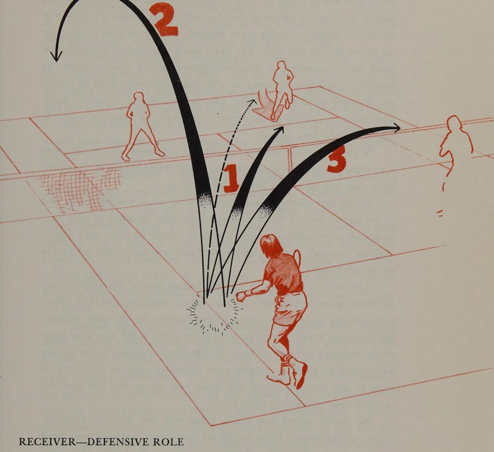
Một vị trí đỡ giao bóng tốt trước đối thủ giao bóng từ vị trí tiêu chuẩn nằm ở vùng lân cận góc trong của sân, với đôi chân của bạn trên hoặc ngay sau vạch cuối sân.
A good receiving position against the opponent who serves from a standard position lies in the vicinity of the inside corner of the court, with your feet on or just behind the baseline.
Ở ô sân thứ nhất bạn có thể đứng hơi lệch về phía giữa sân và ở ô sân thứ hai hơi lệch về phía biên, để cho quả thuận tay của bạn, vốn được cho là mạnh hơn, có cơ hội được dùng đến nhiều hơn—tuy nhiên, không đứng lệch xa đến mức bạn có nguy cơ bị giao bóng ăn điểm trực tiếp rộng về phía thuận tay.
In the first court you might stand a bit more toward center and in the second court a bit more toward the side, in order to give your forehand, presumably stronger, a greater chance to come into play— without, however, standing so far over that you risk being aced wide to the forehand.
Sự đa dạng về phong cách giao bóng, phát sinh từ những vị trí giao bóng, độ xoáy và tốc độ khác nhau, đòi hỏi bạn phải thiết lập một vị trí đỡ bóng hơi khác biệt cho mỗi người giao bóng khác nhau. Tuy nhiên, trong mọi trường hợp, ý tưởng cơ bản vẫn đúng: Hãy ở vị trí mà từ đó bạn có thể bật đi tốt nhất khi bóng qua lưới. Hãy quan sát những kết quả bạn thu được và luôn sẵn sàng điều chỉnh vị trí đỡ bóng của mình một bước hay vài bước theo bất kỳ hướng nào, cho tới khi bạn biết mình đang ở chỗ tốt nhất để đối phó với cú đánh thường ngày của đối thủ.
The variety of styles in serving, arising out of differing serving positions, spins, and speeds, require that you establish a slightly different receiving position for each different server. In all cases, though, the basic idea holds: Be in a position from which to get your best jump on the ball once it comes over the net. Observe the results you’re getting and always be ready to modify your receiving position by a step or steps in any direction, until you know you are in the best spot for meeting your opponent’s usual effort.
Dù bạn đứng ở đâu, hãy chắc chắn rằng bạn vào một tư thế thăng bằng, năng động, nhẹ nhàng như mèo. Giữ trọng lượng không dồn lên gót chân, hướng đầu và vợt về phía trước, và dán mắt vào quả bóng khi người giao bóng tung nó lên. Từng động tác sẵn sàng nhỏ nhất đều làm tăng sự tập trung của bạn và giúp bạn phản ứng nhanh hơn.
No matter where you stand, make sure you adopt a balanced, active, catlike stance. Keep weight off your heels, position, your head and your racket forward, and glue your eyes to the ball as the server lifts it in the toss. Each individual act of readiness intensifies your concentration and contributes to quicker reactions.
Giờ hãy xem xét quả đỡ bóng thật sự. Với tư cách người đỡ giao bóng, nhiệm vụ chính của bạn là giảm thiểu những lợi thế sẵn có của phía giao bóng, và ở cơ hội đầu tiên nắm lấy thế tấn công và tiến lên lưới.
Now let’s consider the actual return. As receiver, your main job is to minimize the built-in advantages of the serving side, and at your first opportunity to seize the offensive and move into net.
Nửa đầu của nhiệm vụ này phụ thuộc hoàn toàn vào quả đỡ bóng của bạn. Để ngăn đối thủ chạy xa với điểm đấu, bạn phải đưa quả giao bóng trở lại sao cho (1) người đứng lưới đối phương không thể băng ngang, cướp bóng và đánh xuyên qua bạn đánh cặp của bạn, và (2) người giao bóng, đang lao lên, không thể vô-lê đè xuống quả đỡ bóng của bạn, hoặc sâu về phía bạn, điều sẽ đẩy bạn lùi vào tư thế càng phòng thủ hơn, hoặc mạnh vào hoặc vượt qua bạn đánh cặp của bạn.
The first half of this job depends entirely on your return. To keep the opponents from running away with the point, you must get the serve back so that (1) the opposing net player is unable to cross, poach and crack the ball through your partner, and (g) the server, rushing in, is unable to volley down on your return, either deep to you, which would push you back into an even more defensive posture, or hard at or past your partner.
Cách tiếp cận tốt nhất để giữ người đứng lưới đối phương ra khỏi cuộc chơi là đánh những quả đỡ giao bóng chéo sân đủ thấp và đủ góc để ngăn người đứng lưới với tới chúng—trừ khi tay vợt đó chọn băng ngang. Để phòng ngừa hậu quả của việc băng ngang như vậy, bạn với tư cách người đỡ giao bóng cũng phải có khả năng đánh những quả bóng bổng bất ngờ từ quả đỡ bóng, cùng những quả dọc biên, nếu không người đứng lưới có thể bắt đầu băng ngang và cướp bóng theo ý muốn. Bằng cách tạo ra sự đa dạng trong các quả đỡ bóng, bạn có thể làm cho người đứng lưới trở nên bồn chồn, do dự và ít giúp ích được cho người giao bóng.
The best approach to keeping the opposing net player out of the picture is to hit crosscourt returns of serve that are sufficiently low and angled to prevent the net player from reaching them—unless that player chooses to cross. To defend against the consequences of such crossing, you as receiver must also be able to hit surprise lobs off the return, plus shots down the line, otherwise the net player might begin to cross and poach at will. By producing a variety of returns, you can make the net player become edgy and indecisive and of little help to the server.
Cách tiếp cận tốt nhất để ngăn một người giao bóng hung hãn tiến lên và vô-lê những quả ăn điểm từ những quả đỡ bóng của bạn là đánh phần lớn các quả đỡ bóng của bạn sao cho bóng lướt sát lưới theo một quỹ đạo thấp và rơi gần chân người giao bóng. Quả đỡ bóng cắt này—được gọi là “cắt” bởi vì cú đánh là một phiên bản thu gọn của cú đánh nền thông thường—là cú đánh trụ cột của một người đỡ giao bóng giỏi. Khi được thực hiện tốt, nó buộc người giao bóng đang lao lên phải đánh một quả vô-lê thấp hoặc một quả bán vô-lê (một quả bóng vừa mới nảy) và do đó ngăn người ấy gửi bóng trở lại thấp và mạnh. Thay vào đó, người ấy có thể phải chạy lui về đánh một quả bóng cao mà chính bạn sẽ có thể tiến lên đón.
The best approach for keeping an aggressive server from moving in and hitting point-winning volleys off your returns is to hit the bulk of your returns so that the ball skims the net on a low trajectory and lands near the server’s feet. This chipped return—‘“chipped” because the stroke is a sawed-off version of the normal ground stroke—is the mainstay stroke for the good receiver. When engineered well, it forces the onrushing server to hit a low volley or a half-volley (a ball that has just bounced) and so prevent that player from sending the ball back low and hard. Rather, the player may have to scramble back a high ball that you will be able to move in on yourself.
NGƯỜI NHẬN BÓNG — VAI TẤN CÔNGRECEIVER—OFFENSIVE ROLE
Bất kỳ cú giao bóng yếu nào có thể tấn công được, đặc biệt ở bên thuận tay, đều mở rộng các lựa chọn cho người nhận bóng, bao gồm những cú trả bóng mạnh vào người đứng lưới hoặc dọc biên (Lựa chọn số 4 và số 5). Lựa chọn số 1 ở đây là một phiên bản mạnh mẽ hơn của cú trả trái tay chéo sân cơ bản, đánh phẳng hoặc thậm chí xoáy lên nếu bạn có khả năng đó.
Any weak serve that can be attacked, especially on the forehand side, expands the receiver's options to include hard returns at the net player or down the line, (Options No. 4 and No. 5). Option No. 1 here is a more aggressive version of the basic crosscourt backhand return, hit flat or even with topspin if that is within your capability.
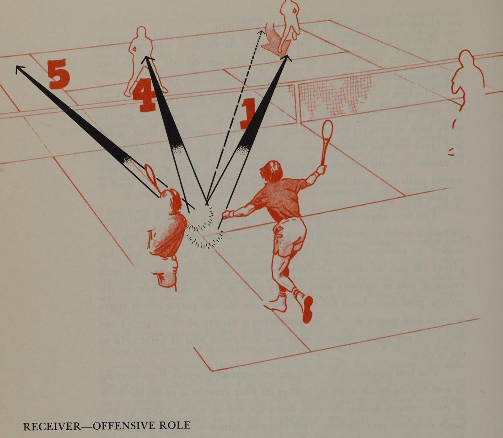
Chính nhờ đỡ bóng lành nghề trước một người giao bóng hung hãn mà bạn có nhiều khả năng giành được thế tấn công nhất khi xuất phát từ vị trí đỡ giao bóng. Những quả đỡ bóng một sâu vốn phổ biến trong đánh đơn thường sẽ chẳng đưa bạn tới đâu trong đánh đôi, bởi vì bóng sẽ qua lưới ở độ cao bốn hoặc năm feet—đủ cao để có lẽ một trong hai đối thủ vô-lê đè xuống. Bạn không thể ngăn một người giao bóng tiến lên theo sau quả giao bóng của người ấy, nhưng bạn có thể làm cho vị trí vô-lê đầu tiên đó trở nên khó xử cho tay vợt ấy, và đó phải là mục tiêu có giới hạn của bạn. Vậy nên hãy cắt bóng chính xác cho tới khi bạn đã gọt bớt được lợi thế mà đội đối phương có khi bắt đầu điểm. Rồi tiến lên lưới ở quả bóng ngắn hoặc cao đầu tiên, hoặc khi đối thủ đã lùi lại, và tạo thế bằng những cú đánh tấn công hơn cùng một chút vô-lê nhanh ở gần lưới.
It is by returning skillfully back to an aggressive server that you are most likely to obtain the offensive when starting from a receiving position. The deep returns of first serve that are common in singles will usually get you nowhere in doubles, because the ball will be crossing the net at a height of four or five feet—high enough for perhaps either opponent to volley down on. You can’t prevent a server from moving in following his or her serve, but you can make that first volley position awkward for the player, and that must be your limited objective. So chip accurately until you ‘have whittled down the advantage with which the opposing team began the point. Then move into net on the first short or high ball, or when the opponents have retreated, and force the issue with more offensive shots and some fast volley action in close.
Người đỡ giao bóng có bổn phận khai thác tàn nhẫn những quả giao bóng hai yếu. Nhưng để làm điều đó, bạn phải nhanh chóng điều chỉnh suy nghĩ của mình từ giao bóng một sang giao bóng hai. Thay vì cắt bóng an toàn, bạn phải tiến lên để kết liễu, hoặc bằng cách băng vòng qua trái tay của mình và đánh một quả thuận tay vào người giao bóng hoặc người đứng lưới, hoặc bằng cách đánh xoáy lên một quả trái tay đầy đủ để giữ người giao bóng ở lại phía sau. Cách tiếp cận hung hãn này trước những quả giao bóng hai không chỉ mang về cho bạn một số điểm “dễ dàng” mà còn làm rung chuyển sự tự tin của cả hai đối thủ.
The receiver has a duty to ruthlessly exploit weak second serves. But to do this, you must quickly adjust your thinking from first serve to second serve. Instead of chipping safely, you must move in for the kill, either by running around your backhand and drilling a forehand at the server or the net player, or by coming over the ball in a full backhand that keeps the server back. Not only will this aggressive approach on second serves win you some “easy” points but it will shake up the confidence of both opponents.
Quả giao bóng hai yếu là một điểm yếu nghiêm trọng ở người giao bóng. Không tận dụng nó là một sai lầm còn nghiêm trọng hơn đối với người đỡ giao bóng.
The weak second serve is a serious weakness in the server. Not taking advantage of it is an even more serious mistake for the receiver.
ĐỒNG ĐỘI CỦA NGƯỜI NHẬN BÓNG — CHÚ CHÓ GIỮ NHÀ ĐANG CHỜRECEIVER’S PARTNER—WATCHDOG IN WAITING
Đây là vai trò ít năng động nhất trong bốn vai trò của đánh đôi và theo một số cách là vai trò dễ tổn thương nhất trên sân, ít nhất là ở những giai đoạn đầu của bất kỳ điểm nào. Nhiệm vụ của bạn với tư cách bạn đánh cặp của người đỡ giao bóng là hỗ trợ lối chơi ...được tạo ra bởi đồng đội của bạn khi trả bóng, nhưng điều đó chẳng hề dễ dàng chút nào. Vì cú trả bóng điển hình sẽ mang tính phòng thủ hơn là tấn công, mối nguy đầu tiên bạn phải đối mặt là người đứng lưới đối phương, và cụ thể là việc người đó cắt bóng (poach) khi đồng đội bạn trả giao bóng và cố gắng vô-lê xuyên qua bạn hoặc vào khoảng giữa bạn và đồng đội của bạn.
This is the least active of the four roles in doubles and in some ways the most vulnerable role on the court, at least in the early stages of any point. Your job as receiver’s partner is to support the pattern of play created by your partner in making the return, but that is no cinch. Since the typical return will be defensive rather than offensive, the first danger you face is the opposing net player, and specifically that player’s poaching on your partner’s return and attempting to volley through you or between you and your partner.
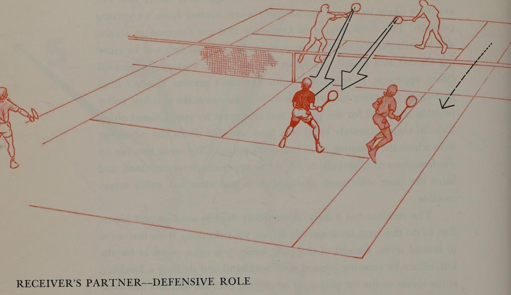
Mối nguy này vẫn tồn tại ngay cả khi người đứng lưới đối phương không cướp bóng ở quả đỡ bóng, bởi vì, nếu quả giao bóng sau đó gặp một quả vô-lê đầu tiên sâu tốt, bạn đánh cặp của bạn sẽ phải đỡ bóng phòng thủ lần nữa, có lẽ còn yếu hơn nữa, và do đó chắc chắn mời gọi việc cướp bóng, hoặc có thể là một quả vô-lê thứ hai hung hãn của người giao bóng nhắm vào bạn hay vượt qua bạn.
This danger remains even when the opposing net player fails to poach on the return, for, if the serve then hits a good deep first volley, your partner will have to return defensively again, perhaps even more weakly, and thus invite poaching for sure, or maybe an aggressive second volley by the server at you or past you.
Vị trí bạn đứng trên sân phản ánh bản chất phòng thủ trong vai trò bạn đánh cặp của người đỡ giao bóng của bạn. Để phòng ngừa việc cướp bóng tốt nhất có thể, bạn phải đứng xa hơn về phía sau sân so với người đứng lưới đối phương, ít nhất là trong vài pha trao đổi bóng đầu tiên của điểm. Một vị trí trên vạch giao bóng gần giữa sân sẽ xấp xỉ điểm giữa trong phạm vi những quả bóng có thể bị cướp từ quả đỡ bóng của bạn đánh cặp bởi người đứng lưới đối phương. Bạn sẽ ở đủ xa phía sau để có khoảnh khắc dự đoán thêm mà bạn cần để đưa vợt vào một quả bóng như vậy. Ở đây bạn cũng sẽ ở vị trí tốt để gọi bóng trong/ngoài, một chức năng cần thiết của bạn đánh cặp người đỡ giao bóng khi chơi ở câu lạc bộ. Nhưng đừng làm trọng tài biên đến mức gây hại cho công việc thật của bạn. Hãy chuyển sự tập trung của mình càng sớm càng tốt sang người giao bóng và bạn đánh cặp của người giao bóng, và phản ứng của bạn sẽ nhanh hơn.
Where you stand in the court reflects the defensive nature of your role as receiver's partner. To protect as well as possible against poaching, you must stand farther back in the court than the opposing net player, at least during the first couple of exchanges on the point. A position on the service line near the center of the court will approximate the middle point in the range of possible poached shots off your partner’s return by the opposing net player. You’ll be back far enough to have the moment's extra anticipation you will need to get your racket on such a shot. Here you will also be in good position for calling the serve, a necessary function of the receiver’s partner in club play. But don’t play linesman to the detriment of your real job. Switch your focus as soon as you can to the server and the server’s partner, and your reactions will be quicker.
Ở quả giao bóng hai, bạn có thể tiến lại gần lưới vài bước nếu bạn trông đợi bạn đánh cặp của bạn đỡ giao bóng bằng một cú đánh hung hãn. Trong trường hợp này, bạn có thể có cơ hội cướp bóng ở cú đáp trả của người giao bóng, đặc biệt nếu người giao bóng đã không tiến lên từ vạch cuối sân theo sau giao bóng.
On second serve, you may move a couple of steps closer to net if you expect your partner to return serve with an aggressive shot. In this case, you may have the opportunity to poach on the server’s riposte, particularly if the server has not moved in from the baseline following serve.
Bạn phải nỗ lực đặc biệt hơn nữa để luôn cảnh giác trong vai trò bạn đánh cặp của người đỡ giao bóng. Như một con chó canh gác giỏi, bạn không bao giờ biết khi nào bạn có thể phải bật lên hành động, nhưng bạn phải sẵn sàng phản ứng trong tích tắc thì mới làm được điều gì có ích. Một cách hay để rèn sự tập trung tối đa ở vị trí này là ghi nhớ kiểu trả bóng mà đồng đội của bạn đã thực hiện, và những phản ứng của đối phương.
You must make an extra special effort to stay alert in the role of receiver’s partner. Like the good watchdog, you never know when you may have to spring into action, but you must be ready to react at a moment's notice to do any good at all. One good way to develop maximum attentiveness in this spot is to make note of the type of return your partner has made, and the reactions of the opponents.
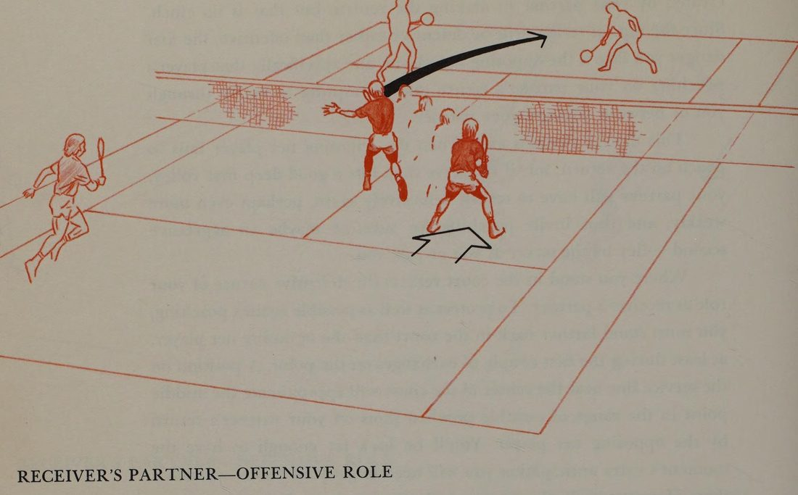
Bạn thường có thể xác định được điều gì sẽ xảy ra trong một điểm bằng cách quan sát độ cao mà bạn đánh cặp của bạn đã đỡ quả giao bóng. Nếu quả đỡ bóng cao, hãy tính rằng cú đánh tiếp theo sẽ được đánh đè xuống bạn, hoặc bởi người giao bóng đang lao lên hoặc bởi bạn đánh cặp của người giao bóng băng ngang và cướp bóng, và hãy sẵn sàng lùi lại một hai bước và cố đưa vợt vào bóng bằng phản xạ cùng chút may mắn. Nếu quả đỡ bóng thấp, hãy tính rằng cú đánh tiếp theo sẽ trở lại phía bạn đánh cặp của bạn, và hãy sẵn sàng bước tới và chính bạn cướp bóng nếu cú đánh bay lơ lửng cao hoặc chậm. Nếu quả đỡ bóng là một quả bóng bổng, hãy lập tức lùi về nhập với bạn đánh cặp của bạn ở vạch cuối sân, để chuẩn bị cho quả đập bóng trên đầu.
You can often determine what to expect on a point by observing the height at which your partner has returned the serve. If the return is high, count on the next shot being hit down at you, either by the server rushing in or by the server’s partner crossing and poaching, and be ready to back up a step or two and try to get your racket on the ball with your reflexes and a bit of luck. If the return is low, count on the next shot going back to your partner, and be ready to step forward and poach yourself if the shot floats high or slow. If the return is a lob, immediately retreat to join your partner at the baseline, in anticipation of the overhead.
Những động thái của đối thủ để đáp lại quả đỡ bóng cũng sẽ báo trước cho bạn điều gì sắp đến và cho bạn thêm một phần giây để chuẩn bị vô-lê hoặc cải thiện vị trí của mình. Hãy nhớ, bạn ở đủ gần lưới để gửi bóng trở lại đủ nhanh để làm đối thủ bối rối, nếu bạn có đủ may mắn và phản xạ để làm được điều đó. Bạn cũng là một mục tiêu hấp dẫn cho đối thủ ở vị trí bạn đánh cặp người đỡ giao bóng của mình, nhưng hiểu biết đó chỉ nên làm tăng thêm sự thỏa mãn của bạn khi bạn thật sự trụ lại và góp được một phần vào cuộc chơi.
The moves of your opponents in response to the return also will tip you off to what’s coming and provide you with that extra fraction of a second for preparing to volley or otherwise improving your position. Remember, you are close enough to the net to send the ball back quickly enough to befuddle the opponents, if you have the luck and the reflexes to carry it off. You’re also a prime target for the opponents in your position as receiver’s partner, but that knowledge should only add to your satisfaction when you do hang in there and get a piece of the action.
Ở LẠI PHÍA SAU SAU KHI GIAO BÓNG HOẶC TRẢ GIAO BÓNGSTAYING BACK FOLLOWING SERVE OR RETURN
Sẽ là phi thực tế nếu chúng tôi mong bạn có thể lao lên lưới ở mọi điểm, dù bạn có sung sức, tham vọng và khéo léo đến đâu. Thực ra, cách tiếp cận như vậy thậm chí còn không phải là chiến thuật hay, bởi lối chơi của bạn sẽ nhanh chóng trở nên dễ đoán. Vậy nên trước khi đi xa hơn, hãy cùng xem xét những biến thể chính trong lối chơi xuất hiện khi bạn không tiến lên sau khi giao bóng hoặc trả giao bóng, và bạn phải chịu trách nhiệm gì trong những tình huống đó.
It would be unrealistic for us to expect you to be able to rush net on every point, no matter how energetic, ambitious, and skilled you may be. In fact, such an approach is not even good strategy, in that your pattern of play would quickly become predictable. So before we go any further, let’s examine the principal variations in play which emerge when you do not move in following serve or return, and what your responsibilities become under these conditions.
Nếu bạn ở lại phía sau với tư cách người giao bóng hoặc người đỡ giao bóng, nhiệm vụ chính của bạn là vào tư thế sẵn sàng tại một điểm trong phần sân sau của bạn mà bạn đánh giá là khoảng giữa phạm vi những quả bóng chéo sân có thể đánh trả về phía bạn. Do đó, nếu bạn đã giao bóng hoặc đỡ bóng rộng, bạn sẽ di chuyển một hai bước lại gần biên dọc của mình để dự đoán quả bóng rộng đánh trả về. Nếu bạn đã giao bóng hoặc đỡ bóng ngắn và đối thủ đang tiến lên đón bóng, bạn sẽ lùi một hai bước ra sau vạch cuối sân để đón quả bóng sâu mà đối thủ sẽ cố đánh xuống chân bạn. Nếu bạn đã thực hiện một quả đỡ bóng chéo sân sâu nhưng chọn ở lại phía sau, bạn nên di chuyển ra sau vạch cuối sân nếu bạn thấy đối thủ tiến lên để vô-lê quả bóng, hoặc bước vào sân vài feet nếu bạn thấy đối thủ cũng đang ở lại phía sau.
If you stay back as server or receiver, your main job is to assume a ready position at a point in your part of the backcourt which you judge to be at about the center of the range of possible crosscourt shots hit back at you. Thus, if you have served or returned wide, you would move a step or two nearer your sideline in anticipation of the wide shot back. If you have served or returned short and your opponent is moving in on the ball, you would take a step or two behind the baseline in order to field the deep shot the opponent will be trying to hit at your feet. If you have made a deep crosscourt return yet elect to stay back, you should move behind the baseline if you see the opponent moving in to volley the shot, or step a few feet into the court if you see that the opponent also is staying back.
Việc nhanh chóng vào một vị trí đánh bóng tốt là thiết yếu khi bạn ở lại phía sau, để sẵn sàng chuyển sang tấn công nếu cơ hội xuất hiện. Dù bạn chưa nắm thế chủ động trong điểm bằng cách ở lại phía sau, bạn cũng không nhất thiết đã đầu hàng nó, bởi vì nếu đối thủ đánh một quả đỡ bóng chéo sân ngắn hoặc một quả vô-lê yếu, bạn có thể tiến lên đón nó một cách hung hãn. Nếu không, ít nhất bạn có thể thực hiện một quả đỡ bóng chéo sân phòng thủ vững chắc, hoặc có thể tung một quả bóng bổng qua đầu người đứng lưới đối phương.
It is vital to quickly get into a good hitting position when you stay back, in order to be ready to go on the attack should the opportunity present itself. While you have not seized the initiative on the point by staying back, neither have you necessarily surrendered it, in that, should the opponent hit a short crosscourt return or a weak volley, you can move in on it aggressively. Otherwise, you can at least make a solidly defensive crosscourt return, or possibly throw up a lob over the head of the opposing net player.
Quá nhiều tay vợt trở nên thụ động khi họ ở lại vạch cuối sân sau giao bóng hoặc đỡ bóng, không nhận ra rằng một kiểu đánh chéo sân đều đặn hoặc một quả bóng bổng bất ngờ có thể đưa một trong hai đối thủ ra khỏi vị trí hoặc buộc phải đánh một quả bóng bất cẩn. Bạn phải cảnh giác để khai thác những diễn biến như vậy trước khi đối thủ hồi phục. Và đừng quên rằng bạn có thể tiến lên lưới theo sau cú đánh của mình trong những tình huống này cũng như bạn
Too many players turn passive when they remain at the baseline following serve or return, not realizing that a steady crosscourt pattern of shots or a surprise lob can maneuver one of the opponents out of position or force a careless shot. You must be alert to exploit such developments before the opponents recover. And don’t forget that you can move up to net behind your shot in these circumstances just as you would do following an aggressive first serve.
Khi một điểm tiếp tục phát triển vượt qua vài pha trao đổi bóng đầu tiên, bốn vai trò cơ bản của đánh đôi mờ nhạt đi phần nào. Tùy thuộc vào điều gì đã xảy ra trong pha bóng, đội bạn thấy mình hoặc ở trên lưới hoặc ở dưới vạch cuối sân. Trách nhiệm chung của các tay vợt trong những tình huống này là gì?
When a point continues to develop beyond the first few exchanges, the four basic doubles roles blur somewhat. Depending on what has happened in the rally, your team finds itself either up at net or back at the baseline. What are the general responsibilities of the players in these situations?
CHƠI LƯỚI TRONG KHI ĐIỂM ĐANG DIỄN RANET PLAY DURING POINT IN PROGRESS
Vai trò chung của bạn ở lưới trong một loạt bóng qua lại là cố tạo ra rồi tận dụng cơ hội để đánh xuống một quả bóng và quét nó tới một góc trống, hoặc xuống giữa sân, hoặc thẳng vào người một trong hai đối thủ để ghi điểm thắng. Để làm được điều đó, bạn phải luôn ý thức giữ mắt nhìn bóng và cảnh giác với nguy cơ chùng xuống dù chỉ một chút ở bất kỳ cú đánh nào mình thực hiện. Bạn đang ở một vị trí thuận lợi, nhưng một đội kiên cường sẽ cứ giữ bóng trong sân trừ khi bạn nắm quyền kiểm soát một cách triệt để và dứt khoát. Hãy giữ vợt cao, chân nhanh nhẹn, mắt chăm chú theo dõi diễn biến của điểm và đường bay của bóng. Sẵn sàng bước lùi để xử lý mọi cú lốp và bước tới cho từng cú vô-lê, và luôn nhún trở lại tư thế sẵn sàng uyển chuyển.
Your general role at nét during a rally is to try to create and then exploit an opportunity to hit down ona ball and sweep it to an open corner, or down the middle, or directly into the body of one of the opponents for the winner. To do that you must remain very conscious of keeping your eye on the ball and alert to the danger of letting up even slightly on any shot that you execute. You are in a favorable position, but a tenacious team will keep the ball in play unless you thoroughly and decisively take command. Keep your racket up, feet lively, eyes intently following the action of the point and the flight of the ball. Be ready to step back to handle any lob and to step forward into each volley, and always hop back into a lithe, ready stance.
CHƠI CUỐI SÂN TRONG KHI ĐIỂM ĐANG DIỄN RABACKCOURT PLAY DURING POINT IN PROGRESS
Khi bạn và đồng đội của bạn bị đẩy về vạch cuối sân, nhiệm vụ chính của bạn là cố trụ lại trong điểm — là sống sót. Bạn nên đánh những cú lốp phòng thủ để duy trì thế cầm cự; hoặc đánh những cú lốp mà sau đó bạn có thể tiến lên lưới và giành lại thế chủ động; hoặc cố đánh những cú cuối sân vào khoảng giữa hai đối thủ, tốt nhất là kèm thật nhiều xoáy lên, nhằm gây do dự và sai sót cho họ. Nếu bạn khiến cả hai người họ đều lao vào quả bóng, bạn có thể buộc họ mắc lỗi vợt — và ít nhất bạn sẽ mở ra các đường biên cho cú đánh tiếp theo của mình.
When you and your partner have been forced to the baseline, your main job is to try to stay in the point—to survive. You should hit defensive lobs to maintain a holding pattern; or lobs behind which you may be able to come to net and regain the initiative; or try to drill ground strokes in between your opponents, preferably with lots of topspin, in an effort to provoke indecision and error on their parts. If you can get them both to commit themselves to going for the ball, you may force a racket error—and at the least you will open up the sidelines for your next shot.
PHẦN II — Điều chỉnh các cú đánh cho đánh đôi
CHƯƠNG 4 — Giao bóng xoáy ở nhịp ba phần tư
CHÚNG TA ĐÃ PHÁC RA những nguyên tắc cơ bản của lối đánh đôi hiện đại, cùng những vai trò khác nhau mà người chơi đôi phải học cách đảm nhiệm trong suốt một trận đấu. Giờ đây chúng ta phải xem xét những cú đánh và kỹ năng tạo ra cú đánh vốn là một phần không thể tách rời của lối đánh đôi hay.
WE HAVE OUTLINED the basic principles of modern doubles, and the varying roles that doubles players must learn to perform in the course of a match. Now we must examine the strokes and shot-making skills that are part and parcel of good doubles play.
Suy cho cùng, chỉ có một cách tiếp cận chiến thuật đúng đắn với lối đánh đôi là chưa đủ. Theo ý chúng tôi, bàn luận về lối đánh đôi thường bị giới hạn quá nhiều trong phạm vi này, trong khi rõ ràng điều thiết yếu không kém là phải có những công cụ để đưa hiểu biết và chiến thuật của bạn vào thực tế thi đấu.
After all, it is not enough just to have a sound strategic approach to doubles. In our opinion, discussion about doubles is too often limited to this area when clearly it is also vital to have the tools with which to put your knowledge and strategy to work.
Ví dụ, việc theo bóng lên lưới sau khi giao bóng — để thực hiện một trong những chiến thuật cốt lõi của lối đánh đôi — chẳng ích gì nếu bạn không có kiến thức kỹ thuật để thực hiện một cú vô-lê đầu tiên vững vàng. Như chúng tôi đã gợi ý trước đó, đó có thể là một cách tốt để tôi luyện bản lĩnh trong trận mạc, nhưng tốt hơn hết vẫn là bạn chuẩn bị sẵn vũ khí trước khi trận chiến bắt đầu.
For example, it does little good to come into net following your serve—in implementing one of the cardinal strategies of doubles—if you don’t have the technical know-how to execute a sound first volley. It may be a good way to get battle-hardened, as we suggested earlier, but it would be far better for you to have your weapons ready before the battle is joined.
Vậy giờ hãy rời bảng đen lý thuyết đánh đôi và ra sân tập. Ở đây chúng ta sẽ điểm qua từng cú đánh chính trong quần vợt và cố xác định giá trị cùng mục đích riêng của nó trong đánh đôi. Đồng thời, chúng tôi sẽ gợi ý vài cách tắt để điều chỉnh những cú đánh cơ bản của bạn, sao cho bạn có thể thực hiện được những cú bóng — phương tiện để triển khai các chiến thuật đánh đôi giành chiến thắng.
So let’s now leave the chalkboard of doubles theory and get out onto the practice court. Here we will glance at each major stroke in tennis and try to pinpoint its particular value and purpose for doubles. At the same time, we'll suggest some shortcuts to tailoring your own basic tennis strokes so that you will be able to make the shots that are the means for implementing winning doubles tactics.
Cú giao bóng có kiểm soát và ổn định, thứ không thể thiếu trong đánh đôi, nằm trong tầm với của mọi tay vợt. Phải có một mức kiên nhẫn và luyện tập nhất định mới phát triển được cú giao bóng đến mức bạn có thể tin cậy nó chín lần trong mười lần — như bạn buộc phải làm để gây ấn tượng và rồi áp đảo đối thủ bằng cú giao bóng một không ngừng hoàn hảo của mình. Nhưng một khi đã thuần thục cú giao bóng, nó sẽ là một phần cố định trong lối chơi của bạn và hiếm khi lệch nhịp. Cú giao bóng lý tưởng cho đánh đôi đòi hỏi thời điểm ít chính xác hơn so với cú giao bóng phẳng, nhanh, hết sức — thứ vũ khí đặc trưng của một số tay vợt chuyên nghiệp hàng đầu — bởi vợt tiếp xúc với bóng lâu hơn, nhờ đó tạo ra xoáy và kiểm soát tốt hơn. Đó là lý do nó có thể trở nên đáng tin cậy đến vậy.
The controlled and consistent serve that is indispensable to doubles is within range of all tennis players. It takes a certain amount of patience and practice to develop the serve to the point where you can rely on it nine times out of ten—as you must in order to impress and eventually oppress your opponents with your relentlessly good first serve. But, once you have grooved the serve, it will be a permanent part of your game that rarely goes out of whack. The ideal doubles serve requires less precise timing than the all-out, flat, fast serve that is the calling card of some of the top pros, because the racket is in contact with the ball for a longer interval, thus providing greater spin and control. That is why it can become so reliable.
Nền tảng của cú giao bóng trong đánh đôi là một cánh tay thả lỏng và động tác vợt tạo cho bóng một mức xoáy cao khi tiếp xúc.
The basis of the doubles serve is a relaxed arm and a racket action that imparts a high degree of spin to the ball when it is hit.
Quá nhiều người chơi lao người vào bóng khi giao bóng, giống như một cầu thủ ném bóng chày ngả người ra sau để tung ra một cú ném nhanh như lửa, thay vì vung tay ở nhịp độ uyển chuyển 70-80 phần trăm khả năng, theo cách của một cầu thủ ném bóng kiểm soát, người tìm đến một góc của bàn thờ bằng cú ném cong của mình. Thật sự không cần phải gắng sức quá mức trong cú giao bóng, dù là đánh đơn hay đánh đôi. Cách làm này không chỉ khiến bạn nhanh mệt mà còn có xu hướng sinh ra những chỗ gập ghềnh và vặn vẹo trong động tác giao bóng của bạn, những thứ chẳng hề làm tăng tốc độ hay sức mạnh của cú giao bóng cho dù bạn có tưởng chúng đang tăng thêm điều gì đi nữa. Nếu bạn muốn chứng minh điều này cho chính mình, hãy thử giao bóng mà không có bất kỳ chuyển động cơ thể nào vào một lúc nào đó — chỉ dựa vào cánh tay và cổ tay bật vợt vào bóng — và bạn sẽ thấy rằng chính động tác ở phút cuối đó mới tạo ra phần lớn sức mạnh trong cú giao bóng, chứ không phải điệu Van-xơ của những người đấu bò mà dường như quá nhiều người chơi vẫn trình diễn mỗi lần giao bóng.
Too many players hurl themselves at the ball when serving, similar to a baseball pitcher rearing back to deliver a scorching fast ball, instead of swinging the arm at a smooth 70-80 percent of capacity rate, in the manner of the control pitcher who catches a corner of the plate with his curve. There really is no need to exert yourself excessively on the serve, either in singles or in doubles. Not only will this practice fatigue you rapidly, but it will tend to breed kinks and contortions in your service motion, none of which add to the speed or power of the serve no matter what you may think they are adding. If you want to prove this to your- self, try serving with no body motion whatsoever sometime—relying solely on your arm and wrist snapping the racket into the ball—and you will see that last-minute action is what generates the bulk of the power in serving, and not the Waltz of the Toreadors that so many players seem to go through every time.
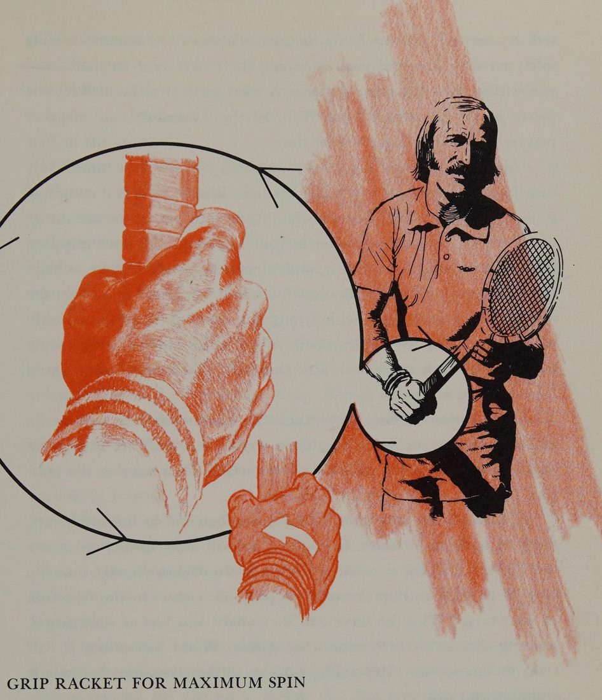
Hãy tiếp cận cú giao bóng một cách thư thái, và bạn sẽ dễ vung vợt ở nhịp độ uyển chuyển, ba phần tư hơn. Hãy hít thở sâu vài lần khi bước tới vạch giao bóng, đặc biệt nếu bản tính bạn là người hay hấp tấp hoặc hay hồi hộp. Hãy cầm vợt bằng tay không cầm vợt, chứ không phải tay đang cầm, cho đến khi bạn tới vạch giao bóng, và khi cuối cùng bạn thật sự nắm lấy vợt, hãy cầm nhẹ. Hãy tung bóng nảy vài lần để duy trì vẻ thư thái. Tung bóng bằng động tác nâng cánh tay dài và đều để tạo nhịp điệu cho cánh tay kia noi theo. Và hãy nhìn bóng cho đến khi bạn cảm thấy vợt mình tiếp xúc bóng — điều đó sẽ ngăn bạn lao người vào cú giao bóng ở giây cuối.
Approach the serve in a relaxed manner, and you'll be more likely to swing at a smooth, three-quarters tempo. Breathe deeply a couple of times as you go to the line, especially if it’s in your nature to rush things or be nervous. Hold your racket in your free hand, not your gripping hand, until you get to the line, and when you finally do take hold of the racket, grip it lightly. Bounce the ball a few times to sustain the relaxed air. Toss the ball with a long, smooth arm-lift to set a rhythmical pattern for the other arm to follow. And watch the ball until you feel your racket make contact—that will prevent you from lunging into the serve at the last second.
Làm thế nào để bạn phát triển động tác vợt tạo xoáy cho bóng, thứ mà chúng tôi đã nói là rất đáng mong muốn trong cú giao bóng ở lối đánh đôi? Cách đơn giản nhất để cảm nhận những động tác vợt khác nhau là thay đổi vị trí mà bạn tung bóng ban đầu.
How do you develop the racket action that imparts the spin to the ball that we have said is so desirable in serving in doubles? The simplest way to learn the feel of different racket actions is by varying the position to which you toss the ball initially.
Hãy giả sử bạn đứng ở vạch cuối sân trong ô giao bóng thứ nhất, sẵn sàng giao bóng cho lối đánh đôi. Nếu bạn tung bóng ra xa mình về phía lưới, bạn sẽ đánh bóng bằng cách đưa vợt thẳng vào phía sau bóng và đưa lên xuyên qua điểm tiếp xúc theo hướng mục tiêu của bạn. Cú giao bóng phẳng này sẽ bay thẳng và thấp tới mục tiêu, vượt qua lưới chỉ hơn một feet. Khi nảy, bóng sẽ có xu hướng nảy thấp, tùy theo mặt sân, bởi vì bóng xoáy theo trục dọc lăn đầu.
Let us assume you are standing at the baseline in the first court, ready to serve for doubles. If you toss the ball away from you toward the net, you will hit the ball by bringing the racket directly into the back of the ball and up through the point of contact in the direction of your target. This flat serve will fly straight and low at your target, clearing the net by little more than a foot. When it bounces, it will tend to bounce low, depending on the surface, because the ball is spinning end over end.
Nếu bạn tung bóng ra xa mình về phía đường biên dọc, bạn sẽ đánh nó bằng cách đưa vợt vòng quanh bên hông quả bóng và đi qua điểm tiếp xúc hơi lệch sang phải mục tiêu. Cú giao bóng cắt tạo thành sẽ bay theo một đường chéo khá gắt về phía mục tiêu, với tốc độ chậm hơn cú giao bóng phẳng, vượt qua lưới khoảng hai đến ba feet. Khi chạm sân, bóng có xu hướng nảy thấp và theo hướng xoáy ngang đã được truyền vào bóng. Nó có thể được hướng tới bất kỳ phần nào của sân.
If you toss the ball away from you toward the sideline, you will hit it by bringing the racket around the side of the ball and through the point of contact somewhat to the right of your target. The resulting | slice serve will fly in a fairly sharp diagonal toward your target, at a slower rate of speed than the flat serve, clearing the net by two or three feet. When it hits, it will tend to bounce low and in thé direction of the sidespin that has been imparted to the ball. It can be directed to any part of the court.
Nếu bạn tung bóng thẳng phía trên đầu mình, bạn sẽ đánh bóng bằng cách đưa vợt xuống dưới bóng, rồi quét ngang qua phía sau bóng từ dưới lên trên theo một góc hướng lên và hơi ra xa bạn. Vợt sẽ đưa lên xuyên qua điểm tiếp xúc, và hơi lệch về bên phải mục tiêu. Cú giao bóng xoáy xoắn hay xoáy bật này sẽ bay thẳng, cũng với tốc độ chậm hơn cú giao bóng phẳng, vượt qua lưới vài feet rồi rơi xuống đột ngột theo quỹ đạo nhờ xoáy trên đã được truyền cho bóng. Khi chạm sân, bóng sẽ có xu hướng nảy lên và “bật” gắt sang bên phải (đối với người thuận tay phải), cùng hướng với xoáy ngang đã được truyền cho nó.
If you toss the ball directly above your head, you will hit it by bringing the racket under the ball, then across the back of the ball from bottom to top at an angle up and slightly away from you. The racket will carry up through the point of contact, and somewhat to the right of target. This kick or twist serve will fly straight, also at a slower rate of speed than the flat serve, clearing the net by several feet and then dropping sharply in trajectory due to the topspin that has been imparted to the ball. When it hits, it will tend to bounce up and “kick”’ sharply to the right (for right-handers), in the same direction as the sidespin that has been imparted to it.
Xét về lối đánh đôi, hai sự thật quan trọng trong phép so sánh ba kiểu giao bóng cơ bản này của quần vợt là mức độ vượt qua lưới mà mỗi kiểu giao bóng mang lại, và tốc độ tương đối mà mỗi kiểu giao bóng bay đi.
So far as doubles is concerned, the two significant facts in this comparison of the three basic serves in tennis are the amount of clearance over the net that each serve provides, and the relative speed at which each serve travels.
Cú giao bóng cắt và cú giao bóng xoắn vượt qua lưới với khoảng cách dư hai tới bốn feet — một biên độ cho sai số lớn hơn đáng kể so với cú giao bóng phẳng. Những cú giao bóng này, một khi đã thuần thục, do đó hoàn thành trách nhiệm hàng đầu của người giao bóng đã được đề cập trước đó, là mang lại tỷ lệ cao những cú giao bóng một tốt.
The slice and twist serves clear the net with two to four feet to spare—a considerably greater margin for error than the flat serve. These serves, once grooved, thus fulfill that prime responsibility of the server mentioned earlier of providing a high percentage of good first serves.
Hai cú giao bóng này cũng mất nhiều thời gian hơn để tới đích bởi vì phần xoáy thêm vào bóng kéo dài đường bay của chúng. Khoảng thời gian thêm đó cho bạn cơ hội theo bóng lên lưới — trách nhiệm thứ hai của bạn với tư cách người giao bóng — và cũng để vào đúng tư thế sẵn sàng cho cú vô-lê đầu tiên của mình. Ngược lại, một cú giao bóng phẳng dốc toàn lực trước một người đỡ giao bóng giỏi có thể bật trở lại phía bạn nhanh đến mức bạn vẫn còn đang chuyển động, buộc bạn đánh cú vô-lê trong tư thế mất thăng bằng, nếu bạn có đánh được nó đi nữa.
These two serves also take longer to reach their destination because the added spin on the ball elongates their flight pattern. ‘That extra time gives you the chance to follow the shot into net—your second responsibility as server—and also to set yourself up properly for making your first volley. By contrast, an all-out flat serve against a good receiver may come back to you so fast that you are still in motion, forcing you to hit the volley off balance if you hit it at all.
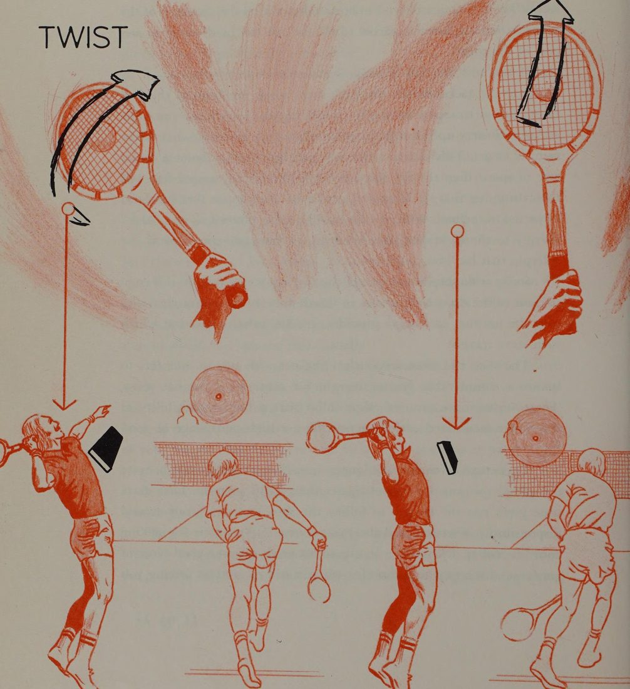
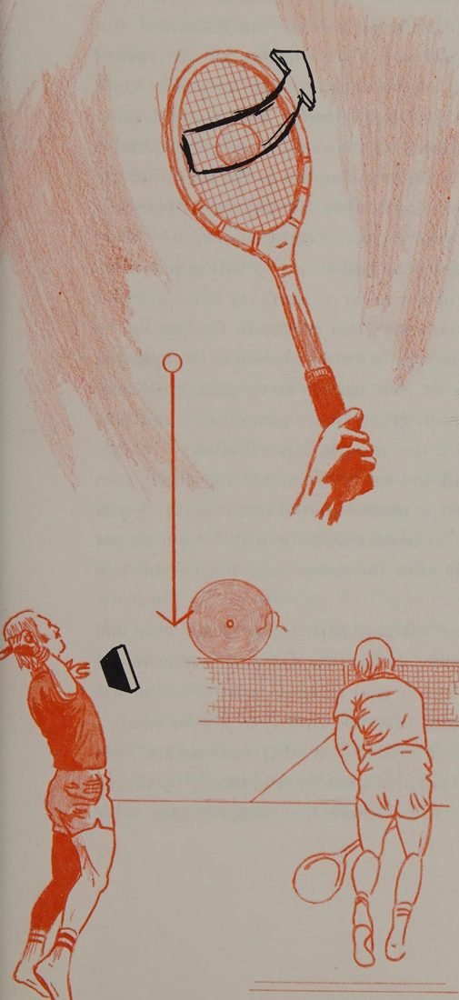
Ba thái cực trong cú giao bóng có thể được người chơi giỏi đạt tới với ít biến thiên hơn nhiều ở vị trí tung bóng, điều này sẽ giúp giữ cho người đỡ giao bóng không biết gì về ý đồ của bạn. Nhưng tung bóng tới những thái cực này là một cách tốt để cảm nhận những kiểu hành vi của vợt lên bóng vốn có thể xảy ra về mặt cơ học trong quần vợt. Một khi đã quen với phạm vi các cú giao bóng, bạn nên phát triển một điểm tung bóng không thay đổi đáng kể, không chỉ để đảm bảo mức đánh lừa tối đa trong cú giao bóng của bạn về lâu dài, mà còn để về lâu dài bạn có thể phát triển một động tác giao bóng thuần thục. Tung bóng khắp mọi nơi sẽ tạo ra sự hỗn loạn trong cú giao bóng của bạn, chứ không phải sự ổn định.
The three extremes in serve can be achieved by the better player with much less variety in the position to which the ball is tossed, which would help to keep the receiver in the dark about your intentions. But tossing to these extremes is a good way to get a feeling for the types of racket-on-ball behavior that are mechanically possible in tennis. Once you have become familiar with the range of serves, you should develop a ball toss that does not vary substantially, not only to insure maximum deceptiveness in your serving, in the long run, but to enable you in the long run to develop a grooved serving motion. Tossing the ball all over the place will develop chaos in your serve, not consistency.
Một khi bạn đã chuẩn hóa điểm tung bóng, bạn sẽ có xu hướng phát triển theo hướng cú giao bóng cắt hoặc cú giao bóng xoắn. Đừng cố cản trở sự phát triển tự nhiên này bằng cách đưa trở lại sự biến thiên lớn trong điểm tung bóng, hay bằng cách tìm kiếm một phiên bản cực đoan của kiểu giao bóng mà bạn dường như lặp lại thường xuyên nhất. Điều thiết yếu là bạn phải để cho cú giao bóng tự nhiên của mình xuất hiện, bởi vì đó là cú giao bóng bạn sẽ có thể thuần thục một cách thoải mái hơn và chơi dưới áp lực trận đấu với độ tin cậy cao nhất.
Once you have standardized your ball toss, you will gravitate towards developing either a slice or a twist serve. Don’t try to impede this natural development by reintroducing great variety in the toss, or by seeking an extreme version of the type of serve you seem to be repeating most often. It is vital that you let your natural serve emerge, because that is the one you will be able to groove more comfortably and play with under match pressure with the greatest dependability.
Hãy coi chừng việc tung bóng quá gần người bạn đối với cả hai biến thể xoáy. Hãy nhớ rằng động tác giao bóng của bạn đương nhiên phải đưa bạn vào trong sân khi vợt tiếp xúc với bóng. Nếu bạn không tự động bước tới trong cú giao bóng, hãy bắt đầu tung bóng xa hơn vào trong sân.
Beware of tossing the ball too near to yourself for either spin variation. Remember, your serving motion should naturally bring you into the court as the racket makes contact with the ball. If you are not stepping forward automatically with the serve, start tossing the ball farther inside the court.
Cũng hãy ghi nhớ rằng một cú giao bóng xoắn cực đoan sẽ gây hao mòn cho tất cả mọi lưng, trừ những lưng khỏe nhất. Thực ra, tên gọi của nó bắt nguồn từ cách bạn phải vặn xoắn cột sống mình để đánh lên và xuyên qua một quả bóng đã được tung tới một điểm ngay trên đầu bạn.
Also, bear in mind that an extreme twist serve causes wear and tear on all but the strongest backs. In fact, its name derives from the manner in which you must corkscrew your spine in order to hit up and through a ball that has been tossed to a spot directly over your head.
Ở một mức độ nào đó, bạn sẽ có thể điều chỉnh xoáy tự nhiên của mình theo hướng xoáy kia, khi tình huống đòi hỏi, chỉ đơn giản bằng cách nhắm vào điểm trên sân đối phương nơi cú giao bóng đổi nhịp thường rơi vào. Việc bạn hình dung mục tiêu sẽ tự động quyết định những thay đổi nhỏ trong cách tung bóng, chuyển động của cơ thể vào bóng, và động tác cổ tay cùng vợt để tạo ra cú giao bóng mong muốn.
To a certain extent you will be able to modify your natural spin in favor of the other spin, when circumstances dictate, simply by aiming at the spot in the opponent’s court where the change-of-pace serve would tend to hit. Your target projection will automatically dictate slight changes in your toss, body movement into the ball, and wristand-racket action to produce the desired serve.
Ví dụ, nếu bạn giao bóng từ ô thứ nhất tới một người thuận tay phải và bạn muốn tấn công trái tay của người đó bằng cách giao bóng xuống giữa, bạn sẽ tự động đánh xoáy bật bóng vào góc đó bằng cách đánh lên trên bóng nhiều hơn. Nếu tình cờ đối thủ của bạn có thuận tay yếu, hoặc nếu bạn quyết tâm đánh vào thuận tay của người đó để thay đổi lối đánh của mình, bạn sẽ tự động đánh vòng quanh bóng nhiều hơn và cắt bóng xéo ra biên vào góc thuận tay. Như vậy chúng tôi nhắc lại rằng không cần phải thay đổi cực đoan trong điểm tung bóng hay động tác vung tay để tạo ra biến thiên trong cú giao bóng, một khi bạn đã có một động tác giao bóng thuần thục và nhịp nhàng để làm nền tảng.
For example, if you are serving from the first court to a righthander and you wish to attack the player’s backhand by serving down the middle, you will automatically kick it into that corner, by hitting more up on the shot. If it happens that your opponent has a vulnerable forehand, or if you are determined to hit to the player’s forehand to change your pattern, you will automatically hit around the ball more and slice it wide into the forehand corner. We thus repeat that extreme changes in ball toss or arm swing are not required to produce variation in your serve, once you have a grooved and rhythmic service motion to work with.
Tuy nhiên, có hai điểm tưởng như nhỏ nhặt mà nhiều người chơi đánh đôi vẫn có xu hướng bỏ qua khi giao bóng. Sẽ không dễ phát triển bất kỳ kiểu giao bóng xoáy nào nếu bạn cầm vợt quá thiên về cách cầm thuận tay khi giao bóng, hoặc nếu vợt của bạn được căng quá chặt so với trình độ chơi của bạn.
There are, however, two seemingly minor points that many doubles players nevertheless tend to ignore in serving. It will not be easy to develop any type of spin serve if you are holding your racket in too much of a forehand grip when serving, or if your racket is strung too tightly for your level of play.
Mặt vợt sẽ tiếp xúc bóng theo góc xiên hơn, và do đó tạo ra xoáy cắt hoặc xoáy xoắn lớn hơn, nếu bạn cầm cán vợt theo kiểu gần giống cách cầm trái tay kiểu Eastern hoặc cách cầm Continental. Nói cách khác, hãy chắc chắn rằng bạn xoay tay mình thật rõ sang bên trái trên cán vợt khi giao bóng trong lối đánh đôi. Cố tạo xoáy cho cú giao bóng bằng cách cầm thuận tay không chỉ kém hiệu quả mà còn làm căng cùi chỏ nếu bạn đang cố cắt bóng, và làm căng cả cùi chỏ lẫn lưng nếu bạn đang cố xoắn bóng.
The racket face will come into the ball more obliquely, and thus impart greater slice or twist spin, if you are gripping the handle in something akin to an Eastern backhand or Continental grip. In other words, make sure you turn your hand well over to the left on the handle when serving for doubles. ‘Trying to produce spin on your serves with the forehand grip is not only ineffective, but it strains the elbow, if you're trying to slice the ball, and strains both elbow and back if you’re trying to twist it.
Lực căng dây vợt quá lớn — với hầu hết người chơi phong trào, đó là bất cứ mức nào trong khoảng 56 đến 60 pound, tùy theo máy đan dây — sẽ chỉ làm giảm khả năng kiểm soát chứ không hề tăng lực như nhiều người vẫn tưởng. Dây vợt căng càng chặt, bạn càng phải có nhiều sức tay để giữ cho dây vợt bám vào bóng suốt lúc tiếp xúc và nhờ đó tạo ra khả năng điều khiển xoáy. Với bất kỳ người chơi phong trào nào, dùng một cây vợt căng ở lực 60 pound, mức chuẩn của các tay vợt nhà nghề, cũng giống như cố vung một tấm ván cứng. Nó còn dội những đợt sóng chấn động xuống cẳng tay bạn, lâu dần sẽ mang đến cho bạn một ca đau khuỷu tay (tennis elbow) khó chịu.
Too much racket tension—for most club players that would be anything in the fifty-six-to-sixty-pound range, depending on the stringing machine—will simply diminish control rather than, as many players think, increase power. The more tightly a racket is strung, the more arm strength you must have to make the racket strings stay on the ball through impact and so provide spin control. Using a racket strung at sixty pounds’ tension, which is standard for the pros, is like trying to swing with a stiff board for any club player. It will also send shock waves down your forearm that in time will give you a nasty case of tennis elbow.
Việc có thể tạo xoáy cho bóng trong lối đánh đôi là đặc biệt quan trọng, không chỉ trong cú giao bóng mà còn trong những cú đánh khác, chẳng hạn như vô-lê. Một trong những tay vợt đánh đôi vĩ đại nhất mọi thời đại, John Bromwich người Úc, nổi tiếng là chơi với cây vợt căng lỏng, nhờ đó ông có thêm khả năng kiểm soát. Frew McMillan, người cùng Bob Hewitt tạo thành một trong những cặp đánh đôi hay nhất trên hệ thống giải đấu hiện nay, cũng tin tuyệt đối vào mức căng dây thấp vì nó giúp ông có được “cảm giác” tối đa.
It is especially important to be able to put spin on the ball in doubles, not just on the serve but in other shots, such as volleys. One of the all-time great doubles players, John Bromwich of Australia, was noted for playing with a loosely strung racket, so that he had that extra control. Frew McMillan, who with Bob Hewitt constitutes one of the best doubles teams on the circuit today, also swears by low string tension for helping him get maximum “feel.”
CHƯƠNG 5 — Cắt bóng trái tay khi trả giao bóng
TRONG LỐI ĐÁNH ĐÔI, luật cho bạn đứng trên phần sân rộng hơn nhưng lại cho bạn ít mục tiêu để đánh tới hơn. Điều đó đặc biệt rõ trong cú đỡ giao bóng, thứ mà xét nhiều mặt là cú đánh tinh tế của lối đánh đôi, đòi hỏi độ chính xác và cảm giác bóng nhiều hơn hẳn so với tư thế đỡ giao bóng trong đánh đơn.
IN DOUBLES, the rules give you more court to stand on but less target to hit to. That is especially evident on the return of serve, which in many ways is the finesse stroke of doubles, demanding accuracy and touch far more than the receiving position in singles demands.
Với tư cách người đỡ giao bóng, ngay từ đầu bạn đã đánh bóng từ một vị trí bất lợi — bởi nếu đối thủ của bạn đúng là người có thực lực, người đó sẽ giao bóng về phía trái tay hay bên yếu hơn của bạn hầu hết thời gian. Bạn chỉ có một nửa sân để đỡ bóng trả về, bởi bạn đánh cặp của đối thủ, nếu đúng là người có thực lực, luôn sẵn sàng đập bất kỳ cú đỡ bóng dè dặt nào lọt vào tầm với của anh ta. Và cuối cùng, bạn thường phải chống chọi với áp lực từ việc người giao bóng di chuyển lên phía sau cú đánh của mình, chờ sẵn để vô-lê cú đỡ bóng của bạn bật trở lại phía bạn trước khi bạn kịp thở.
As receiver, you are hitting out of a disadvantageous spot to start with—for, if your opponent is worth his salt, he will be serving to your backhand or weaker side most of the time. You have only half the court to return into, for your opponent’s partner, if he is worth his salt, stands ready to crack any tentative return that strays within his reach. And, finally, you must often contend with the pressure of the server’s moving in behind his shot, waiting to volley your return back at you before you have had time to breathe.
Trong những hoàn cảnh đó, làm thế nào bạn có thể đưa bóng trở lại một cách hiệu quả? Nói chung, cách duy nhất để xử lý những cú giao bóng một tốt về phía trái tay của bạn là thông qua những cú đỡ bóng phòng ngự được đặt bóng có suy tính. Một cú đánh uyển chuyển, bị cắt ngắn lại, giống một cú vô-lê hơn là một cú đánh đường dài, sẽ đỡ …hóa giải hầu hết những cú giao bóng tốt một cách hiệu quả, miễn là cơ thể bạn đang tiến vào cú trả bóng phía sau một động tác vung tay nhịp nhàng và có chừng mực. Đây chính là tinh túy của cú trả giao bóng trái tay cắt bóng.
Under these circumstances, how can you get the ball back effectively? Generally, the only way to handle good first serves to your backhand is through thoughtfully placed defensive returns. A smooth, sawed-off stroke, more akin to a volley than to a ground stroke, will re- turn most good serves effectively, provided your body is moving into the return behind a smooth and measured arm-swing. This is the essence of the chipped backhand return.
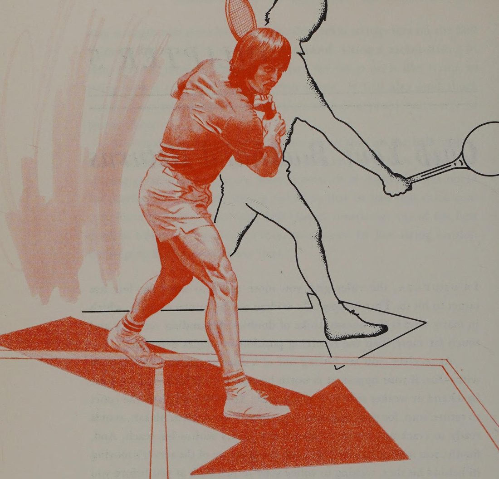
Sự khác biệt giữa chặn bóng và bạt xoáy nhẹ một cú đỡ bóng chỉ là vấn đề mức độ, được quy định chủ yếu bởi tốc độ của cú giao bóng.
The difference between blocking and chipping a return is a matter of degree, dictated in the main by the speed of the serve.
“Chặn” bóng trở lại chỉ là một cách nói hoa mỹ cho việc đặt vợt của bạn vào đường bay của bóng. Đó là cách phòng ngự duy nhất của bạn trước một cú giao bóng rất nhanh — và là cách phòng ngự tốt hơn hẳn so với việc lấy lửa đối đầu với lửa bằng cách cố đánh mạnh hơn người giao bóng. Nhiều người chơi phản ứng theo bản năng một cách sai lầm trước những cú bóng như vậy, vung vợt thật mạnh trước một cú giao bóng nhanh thay vì thu ngắn động tác vung để đón bóng ở phía trước mình. Cú giao bóng càng nhanh thì động tác đưa vợt ra sau của bạn càng phải ngắn, đến mức trước những cú giao bóng cực nhanh, bạn chỉ đơn thuần đấm bóng trở lại, hơi giống một cú vô-lê không có động tác đưa vợt ra sau chút nào, cố đánh cắp tốc độ của người giao bóng và gửi nó trở lại theo đúng hướng nó đến.
“Blocking” the ball back is just a fancy word for sticking your racket in the line of flight. It’s your only defense against a very fast serve—and a far better defense than fighting fire with fire by trying to outhit the server. Many players instinctively react in the wrong manner on such shots, taking a big swing against a fast serve instead of trimming the swing in order to meet the ball in front of themselves. The faster the serve, the shorter your backswing should be, to the point that, against extremely fast serves, you are merely punching the serve back, rather like the volley stroke with no backswing at all, attempting to steal the server’s speed and send it back in the direction it came.
Cú đỡ bóng bạt xoáy nhẹ bao gồm một động tác đầy đủ hơn cú đỡ bóng chặn lại và được dùng trước một cú giao bóng có nhịp độ vừa phải. Điều thiết yếu là phải bước vào cú đánh để thật sự bạt xoáy nhẹ cú đỡ bóng, nếu không bạn có nguy cơ đánh lên trên bóng và đưa bóng trở lại cao lơ lửng. Khi cơ thể bạn di chuyển về phía trước, vợt dễ dàng di chuyển xuyên qua bóng theo một mặt phẳng hướng xuống, cắt xuống dưới bóng và gửi bóng trở lại với xoáy dưới.
The chipped return involves a fuller stroke than the blocked return and is used against a serve of moderate pace. It is vital to step into the shot in order to really chip the return, otherwise you risk hitting up on the ball and floating it back high. With your body moving forward, the racket more easily moves through the ball on a downward plane, cutting under the ball and sending it back with underspin.
Nhiều người chơi tạo cho mình thói quen đỡ bóng yếu ớt bởi vì họ không bước vào cú đánh theo con đường ngắn nhất có thể. Người chơi phong trào có xu hướng đánh ngang, trôi ra khỏi sân để đuổi theo một cú giao bóng xéo ra biên thay vì di chuyển theo đường chéo để chặn nó lại.
Many players get into the habit of returning weakly because they fail to step into the shot along the shortest possible path. Club players tend to play sidewise, floating off the court in pursuit of a wide serve rather than moving diagonally to cut it off.
Bước vào cú đánh với cơ thể trên cú đỡ giao bóng trái tay tương đương với việc bước vào trong sân trong quá trình động tác giao bóng của bạn, theo nghĩa mỗi chuyển động đều không thể tách rời khỏi sự vững chãi khi đánh bóng và sự chủ động về chiến thuật. Khi bạn bạt xoáy nhẹ với trọng lượng cơ thể di chuyển về phía trước, bạn được chuẩn bị tốt hơn để bắt đầu một đợt tiến công về phía …lưới nếu bạn thấy cú trả bóng của mình đang kết thúc gần lưới bên đối phương.
Stepping into the shot with your body on the backhand return is equivalent to stepping into the court in the course of your service motion, in the sense that each movement is integral both to firmness in stroking and to aggressiveness in tactics. When you chip with your weight moving forward, you’re better prepared to begin a thrust toward net if you see your return is finishing near the opponent’s net.
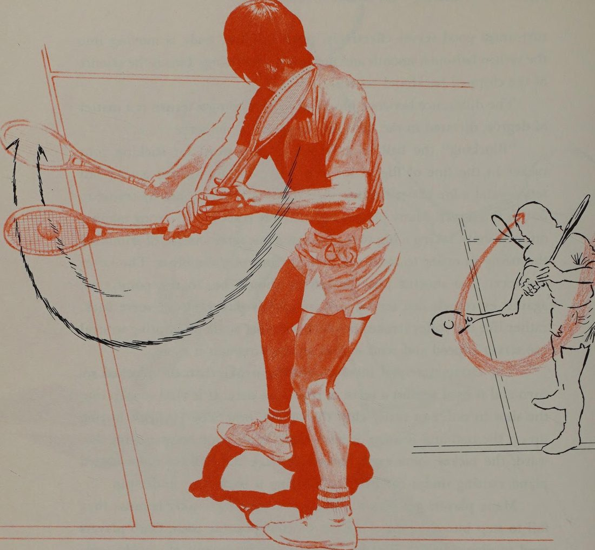
Có lẽ việc chủ động nhắm bóng trong cú đỡ giao bóng của bạn là quan trọng hơn so với bất kỳ cú đánh đơn lẻ nào khác trong lối đánh đôi, bởi vì khoảng sân trống bạn có để làm việc quá nhỏ hẹp. Việc nhắm bóng cũng sẽ giúp bạn phát triển động tác đánh bị cắt ngắn mà bạn cần để đỡ trả những quả bóng được đánh tới trái tay mình một cách chính xác.
It is probably more important to consciously aim on your return of serve than on any other single shot in doubles, because the open space you have to work with is so slight. Aiming will also help you to develop the sawed-off stroke you need to return with precision balls hit to your backhand.
Điểm nhắm của bạn cho cú đỡ bóng phụ thuộc vào hành động mà người giao bóng thường làm sau khi đánh bóng. Nếu anh ta là một người chơi tấn công, người theo mọi cú giao bóng của mình lên lưới, điểm nhắm của bạn nên là khoảng giữa vạch giao bóng, hoặc ngay bên trong vạch giao bóng. Điều đó sẽ tự động làm ngắn động tác đánh của bạn và giúp bạn tạo ra cú đỡ bóng nông, mà lý tưởng nhất là chỉ sượt qua lưới và nảy thấp ngay dưới chân người giao bóng. Hãy lưu ý rằng một quả bóng ngắn như vậy có thể mời gọi người chơi lên lưới trong lối đánh đơn. Nhưng trong đánh đôi, ít nhất là trong cú đỡ giao bóng, đó là một cú đánh hay, và thường là cú đánh có tỷ lệ thành công tốt nhất của bạn.
Your aiming point for the return depends on what action the server normally takes after hitting the ball. If he is an aggressive player who follows all his serves into net, your aiming point should be about midway on the service line, or just inside the service line. That will automatically shorten your stroke and help you to produce the shallow return that, ideally, will just skim the net and bounce low at the server’s feet. Note that such a short ball could invite the player to net in singles play. But in doubles, on the service return at least, it is a fine shot, and usually your best percentage shot.
Nếu đối thủ của bạn ở lại phía sau sau khi giao bóng, điểm nhắm của bạn trở thành khu vực ngay phía trước vạch cuối sân, để giữ người đó ở phía sau, và để bạn có thể tiến lên. Trong trường hợp này, bạn có lẽ sẽ đánh một cú đầy đủ, hệt như cú trái tay chéo sân đỡ bóng của bạn trong đánh đơn. Bóng không nhất thiết phải rơi thấp ngay dưới chân đối thủ, bởi điều đó sẽ đòi hỏi một cú đánh mạnh như búa bổ chỉ vừa sượt qua lưới — quá mạo hiểm để dùng thường xuyên. Cú đỡ bóng ngắn bạt xoáy nhẹ sẽ không đem lại kết quả tốt vì nó buộc đối thủ phải tiến lên để đón bóng. Một cách vô tình, bạn sẽ trao quyền kiểm soát khu vực lưới cho đối thủ.
If your opponent stays back following serve, your aiming point becomes the area just in front of the baseline, to keep him back, and to enable you to come in. In this instance you would probably hit a full stroke, exactly like your crosscourt backhand return in singles. The ball would not necessarily land low at the opponent’s feet, since that would require a hard driving shot that just skims the net—too risky for regular use. The chipped short return would not pay off because it would force the opponent to move in to field it. Inadvertently, you would hand over control of the net to the opponent.
Kỹ thuật bạt xoáy nhẹ những cú đỡ bóng trái tay đòi hỏi phải nhắm bóng với sự tập trung và đánh bóng với sự chừng mực. Nó dựa trên một tư thế sẵn sàng nhanh nhạy mà từ đó bạn có thể di chuyển theo đường chéo để đón bóng, thay vì di chuyển sang bên, để cơ thể bạn ở phía sau cú đánh và đảm bảo sự tiếp xúc vững chắc. Hãy nhớ rằng, với tư cách người đỡ giao bóng, luôn tốt hơn là đứng lùi phía sau rồi tiến vào, hơn là đứng gần vào trong rồi lùi ra.
The technique of chipping backhand returns requires aiming with concentration and stroking with moderation. It is based on an alert ready position from which you can move diagonally to meet the ball, rather than to the side, so that your body gets behind the stroke and insures solid contact. Remember, as receiver it is always better to stand back and move in, rather than stand in and move back.
Nhiều người chơi mắc lỗi chặt xuống bóng trong những cú đỡ giao bóng của mình mà không có động tác đưa vợt ra sau hay động tác đưa vợt theo bóng. Hãy lưu ý động tác đánh xuống uyển chuyển tạo xoáy dưới cho bóng, đồng thời đủ dài để tạo độ sâu giữ đối thủ ở xa.
Many players make the mistake of chopping down on their service returns without backswing or follow-through. Note the smooth downward stroke that imparts backspin to the ball and at the same time is sufficiently long to provide the depth that keeps opponents at bay.
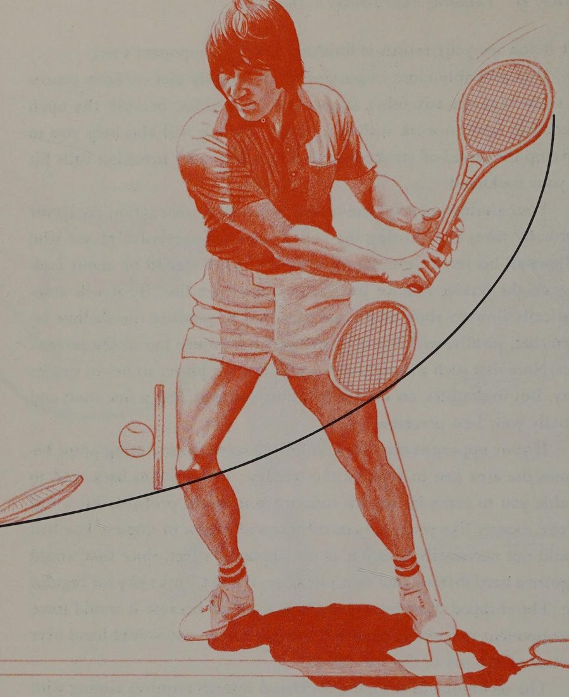
Một tư thế sẵn sàng tốt cũng bao gồm cách cầm vợt đúng. Nếu bạn không thay đổi cách cầm vợt (như Lutz không đổi), thì không có gì phải lựa chọn. Nếu bạn có thay đổi cách cầm vợt (như Smith có đổi), thì trước hết bạn nên quyết định sẽ cầm vợt theo cách nào trong lúc chờ đỡ giao bóng. Khi đỡ giao bóng ở ô thứ nhất, bạn có thể đứng với cách cầm thuận tay, vì bạn phải có nhiều cơ hội dùng thuận tay hơn. Ở ô thứ hai, bạn có thể thích chờ với cách cầm trái tay hơn, vì bạn sẽ có khả năng đánh nhiều cú trái tay hơn.
A good ready position also includes the proper grip. If you don’t change your grip (as Lutz does not), there is no choice to make. If you do change grips (as Smith does), you should first of all decide what grip to hold the racket with while awaiting the serve. Receiving in the first court, you might stand with the forehand grip, since you should have more opportunities to use the forehand. In the second court you might prefer to wait with your backhand grip, since you will be likely to hit more backhands.
Tuy nhiên, cách tiếp cận tốt nhất có thể là chờ đợi, ở cả hai bên, với cách cầm vợt của cú đánh nào yếu hơn trong hai cú của bạn. Bằng cách đó, bạn sẽ đang giúp cú đánh yếu hơn càng nhiều càng tốt, ở chỗ bạn sẽ làm cho việc chuẩn bị đúng đắn để thực hiện cú đánh ở bên đó trở nên dễ dàng hơn.
The best approach, however, might be to wait, on either side, with the grip of the stroke that is the weaker of the two for you. That way, you will be helping the weaker stroke as much as possible, in that you will be making it easier to be properly prepared for making the stroke on that side.
Trong khi cú đỡ giao bóng trái tay bạt xoáy nhẹ là cú đánh cơ bản để dùng khi đỡ giao bóng trước một người giao bóng giỏi, nó có thể có lợi khi được điều chỉnh nếu đối thủ giao bóng yếu, theo những cách mà chúng ta sẽ bàn sau khi xử lý các cặp đấu có đặc điểm khác nhau. Nhưng khi bàn về cú đỡ giao bóng ở đây, chúng ta không nên bỏ qua việc đề cập tới hai biến thể quan trọng của cú đỡ giao bóng trái tay bạt xoáy nhẹ, những biến thể cần xuất hiện vào những thời điểm thích hợp trong cách phòng ngự của bạn trước các cặp đấu có cú giao bóng ở bất kỳ mức độ uy lực nào. Những biến thể đó là cú thuận tay vòng người và cú bóng bổng bất ngờ. Khi được pha trộn với một cú đỡ giao bóng trái tay bạt xoáy nhẹ ổn định, lối chơi của một người đỡ giao bóng quả thật rất mạnh.
While the chipped backhand return is the basic stroke to use when receiving against a good server, it may profitably be modified if the opponents are weak in serving, in ways that we will discuss later in dealing with teams of varying characteristics. But, in discussing service return now, we should not omit mention of two important variations to the chipped backhand return that should figure at appropriate times in your defense against teams with serves of any degree of merit. These variations are the runaround forehand and the surprise lob. When blended with a steady chipped backhand return, a receiver’s game is strong indeed.
ĐÁNH VÒNG QUA THUẬN TAY VÀ CÚ LỐPRUNAROUND FOREHAND AND LOB
Với tư cách một người thuận tay phải chơi ở ô thứ nhất, bạn sẽ thấy mình có nhiều cơ hội hơn để vòng người quanh những quả bóng nhắm vào bên trái tay của mình và đỡ chúng một cách tấn công bằng thuận tay. Đó là bởi vì góc vào trái tay của bạn kém rộng rãi đối với người giao bóng hơn so với ở ô thứ hai.
As a right-hander playing the first court, you should find you have more opportunity to run around balls intended for your backhand side and return them aggressively with your forehand. ‘That is because the angle into your backhand is less generous for the server than it is on the second court.
Vì hầu hết người chơi có thể tạo ra nhiều sức mạnh hơn ở bên thuận tay, đây là một chiến thuật tuyệt vời để dùng trước một cú giao bóng chậm hoặc đặt bóng sai chỗ. Nó đòi hỏi sự nhanh nhẹn của đôi chân và một cú thuận tay tấn công, đánh vào chân người giao bóng đang tiến lên, đánh dọc biên, hoặc đánh vào người đứng lưới. Nếu cú đánh không mang tính tấn công, người đứng lưới của đối phương có thể băng ngang và vô-lê bóng vào khu vực sân mà bạn đã bỏ trống khi vòng người.
Since most players can generate more power on the forehand side, this is a great tactic to use against a slow or misplaced serve. It requires quickness afoot and an aggressive forehand, hit at the feet of the server moving in, down the line, or at the net player. If the shot is not aggressive, the opposing net player may cross and volley it into the area of the court you have left vacant by running around.
Việc vòng người quanh một cú trái tay yếu ở ô thứ hai không được khuyến khích như một cách làm thường quy, đơn giản bởi vì ở bên đó bạn sẽ tự đưa mình ra rất xa ngoài sân để thực hiện cú đánh. Dù sao đi nữa, sẽ có ít cú giao bóng hơn rơi vào tầm thuận tay của bạn ở ô đó.
Running around a weak backhand in the second court is not advisable as standard practice, simply because on that side you would bring yourself well off the court to make the shot. In any case, fewer serves will be hit within range of your forehand in that court.
Ở trình độ chuyên nghiệp, cú bóng bổng bất ngờ hiếm khi được dùng trước một cú giao bóng một bởi vì đơn giản là không có thời gian để vào tư thế và thực hiện cú đánh cảm giác tinh tế này. Cú bóng bổng phòng ngự có thể và phải được dùng trước một cú giao bóng thật sự xuất sắc.
At the pro level, the surprise lob is seldom employed against a first serve because there just isn’t time to set up and execute this delicate touch shot. The defensive lob can and must be used against a really great serve.
Ở trình độ phong trào, có thể có nhiều cơ hội hơn để lốp bóng trả lại trong cú giao bóng một. Dù sao đi nữa, đó là một lựa chọn rõ ràng hữu ích khi đỡ một cú giao bóng hai, và như một vũ khí bất ngờ, nó có thể quấy rối đối thủ của bạn một cách hiệu quả. Nghệ thuật nằm ở việc lốp bóng sâu vượt qua người đứng lưới trong cú đỡ bóng.
At the club level, there may be more opportunities to lob back on first serve. In any case, it is a decidedly useful alternative in returning a second serve, and as a surprise weapon can disrupt your opponents nicely. The art lies in lobbing deep over the net player on the return.
Cú trả bóng bằng lốp sâu là một cách xử lý phổ biến hơn ở bên trái tay, bởi vì (1) nếu cú giao bóng thứ hai hướng vào vùng thuận tay của bạn, có lẽ bạn sẽ chọn đánh một cú thuận tay tấn công thay vì lốp bóng, và (2) với nhiều người, có lẽ dễ đánh cú lốp với cảm giác bóng tốt ở bên trái tay hơn, như chúng tôi sẽ giải thích chi tiết hơn ở phần sau.
The deep lob return is a more common device on the backhand because (1) if the second serve is directed in range of your forehand, you would probably choose to hit an aggressive forehand instead of lobbing, and (2) it is probably easier for more people to hit the lob with good touch on the backhand side, as we will explain in more detail later on.
CHƯƠNG 6 — Bước vào nhiều cú vô-lê hơn
CÚ VÔ-LÊ — thực ra nó giống một cú đánh hơn là một động tác — là trái tim của lối đánh đôi đa dạng. Không có nó, hoặc chỉ có một phiên bản yếu ớt hay ngập ngừng của nó, bạn sẽ không thể chơi đôi hết tiềm năng của môn đánh đôi, cũng như của chính bạn. Nó là vũ khí của cả tấn công lẫn phòng ngự, của sự bất ngờ lẫn sự tính toán, và nó mang lại chiều rộng, tốc độ cùng sự hấp dẫn cho trận đấu.
THE VOLLEY STROKE—actually it is more of a shot than a stroke— is at the heart of a versatile game of doubles. Without it, or with some weak or tentative version of it, you will not be able to play doubles to the game’s full potential, or to yours. It is a weapon both of attack and defense, surprise and design, and it adds breadth, speed, and excitement to the play.
Nó cũng có thể bù đắp cho bất kỳ hạn chế nào bạn có thể có trong cú giao bóng. Tay vợt vĩ đại người Úc Ken Rosewall có cú giao bóng tương đối yếu, nhưng khả năng vô-lê của ông bù đắp cho điều đó. Đặc biệt trong lối đánh đôi, điểm yếu trong cú giao bóng của ông chẳng có ý nghĩa gì cả, bởi ông có cảm giác bóng và khả năng kiểm soát phi thường trong cú vô-lê đầu tiên. Cú vô-lê đầu tiên của ông, trên thực tế, thêm sức mạnh cho cú giao bóng của ông.
It also can compensate for whatever limitations you may have in your serve. The great Australian player Ken Rosewall has a relatively weak serve, but his volleying makes up for it. In doubles especially the weakness on his serve means nothing at all, for he has tremendous touch and control on his first volley. His first volley, in effect, adds clout to his serve.
Trong tất cả các cú đánh của quần vợt, cú vô-lê thật sự là cú ít phức tạp nhất, bởi vì nó rất gọn gàng và cũng bởi vì nó được thực hiện trong một khoảng thời gian và không gian quá ngắn. Trong nhiều tình huống, bạn hầu như không có thời gian để thực hiện cú vô-lê, chứ chưa nói tới chuyện suy ngẫm về nó. Thế nhưng nhiều người chơi vẫn gặp khó khăn …tiếp thu một cú vô-lê tạm ổn. Những đứa trẻ được làm quen với lối đánh lưới ngay từ khi bắt đầu chơi thì tiếp thu cú vô-lê một cách dễ dàng, bởi chúng thấy thoải mái trong những tình huống mà cú vô-lê là cú đánh lý tưởng. Nhưng những đứa trẻ được phát triển thuần túy như tay vợt cuối sân, hay những người bắt đầu chơi ở độ tuổi lớn hơn, thì dễ lo lắng khi ở gần lưới, và chính điều đó cản trở quá trình học.
Of all the strokes in tennis the volley is really the least complex, because it is so compact and also because it is executed over such a short interval of time and space. In many situations, you barely have time to make the volley, let alone reflect on it. Yet many players have trouble acquiring a passable volley stroke. Youngsters exposed to net play from their beginning in the game acquire the volley with ease, because they are comfortable in the situations in which the volley is the ideal shot. But kids who are developed strictly as baseliners, or those who start in the game at more advanced ages, are prone to anxiety near net, and that in itself interferes with the learning process.
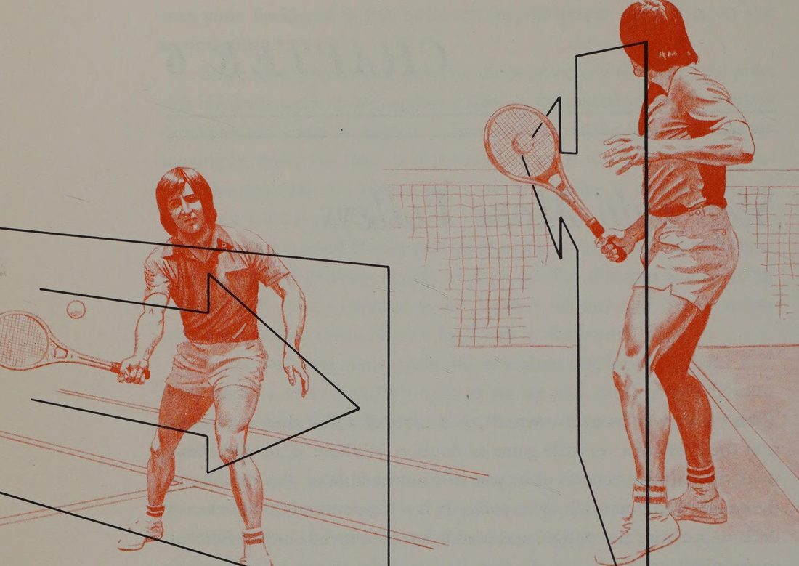
Cách duy nhất để phá bỏ rào cản giữa bạn và cú vô-lê là lao mình vào trải nghiệm đứng ở lưới và cố đỡ những quả bóng đánh thẳng vào bạn hoặc ở gần bạn.
The only way to break down the barrier between you and the volley is to plunge into the experience of standing at net and trying to return balls hit at you or near you.
một chút sự quyết đoán, cộng với việc rốt cuộc khám phá ra rằng bạn có thể tồn tại trong những điều kiện nhanh và có phần đáng sợ tồn tại ở khu vực lưới, sẽ góp phần rất lớn giúp bạn về mặt tinh thần và cảm xúc để có được một cú vô-lê vững vàng.
little assertiveness, plus making the eventual discovery that you can survive in the fast and somewhat threatening conditions that exist in the net area, will go a long way toward helping you mentally and emotionally to acquire a sound volley.
Giờ hãy xem xét những điểm kỹ thuật cần ghi nhớ để làm cho cú đánh quan trọng này phát huy hiệu quả trong lối đánh đôi.
Let’s examine the technical points to keep in mind in making this important shot work in doubles.
Cú vô-lê phải được thực hiện với độ chính xác cao hơn trong đánh đôi so với đánh đơn, đơn giản bởi vì với hai đối thủ thay vì một ở bên kia lưới, khu vực mục tiêu của bạn bị giới hạn rất nhiều. Những cú vô-lê “dội bóng” lơ đễnh có thể bị đội bên kia giữ bóng trong cuộc hoặc kết liễu.
The volley must be made with more accuracy in doubles than in singles simply because, with two opponents instead of one on the other side of the net, your target area is greatly restricted. Lackadaisical “rebound” volleys can be kept in play or put away by the other team.
Để vô-lê chính xác, bạn phải thực hiện cú đánh không chỉ bằng cánh tay và bàn tay, mà còn bằng vai và thậm chí cả đôi chân. Nói cách khác, để nhắm cú đánh, và nhờ đó phát triển độ chính xác, bạn phải dịch chuyển cơ thể mình vào đúng tư thế, sao cho toàn bộ lực đẩy của bạn diễn ra theo hướng mục tiêu. Khi đánh những cú đường dài, bạn có thể thay đổi hướng bằng những thay đổi nhỏ trong động tác cổ tay ở giây cuối, nhưng không có thời gian hay độ dài cú đánh đủ để làm điều đó trong cú vô-lê. Độ chính xác trong cú vô-lê không chỉ bắt nguồn từ sự căn thẳng cơ thể này, mà ở một mức độ nào đó cả sức mạnh bạn tạo ra cũng vậy. Bản thân cú vô-lê quá ngắn và quá nhanh nên nó chỉ có thể dùng tốc độ đã có sẵn trên bóng. Tuy nhiên, nó có thể dùng tốc độ đó với nhiều uy lực hơn nếu trọng lượng cơ thể bạn đang di chuyển vào cú đánh khi bạn thực hiện cú đánh.
In order to volley with accuracy, you must execute the shot not just with your arm and hand, but with your shoulders and even your feet. In other words, in order to aim the shot, and so develop accuracy, you must shift your body into position, so that your full thrust takes place in the direction of your target. In making ground strokes you can alter direction by slight changes in wrist action at the last moment, but there isn’t time or sufficient length of stroke to do that on the volley. Not only does the accuracy on a volley derive from this body alignment, but so to a certain extent does the power that you generate. The volley stroke itself is so short and quick that it can only use the speed that is on the ball already. However, it can use that speed with more authority if your weight is moving into the shot as you make the stroke.
Vậy thì trớ trêu thay, trong cú đánh mà bạn có ít thời gian nhất để làm điều đó, việc di chuyển đôi chân vào đúng tư thế lại là hành động có ảnh hưởng lớn nhất tới hiệu quả của cú đánh. Đánh vô-lê với vai mở và hướng về phía lưới — với mức kiểm soát tối thiểu đối với việc bóng đang đi tới đâu — gần như luôn là kết quả của đôi chân lười biếng hoặc chỉ đơn giản là mệt mỏi. Đúng là trong một số pha đổi bóng cực nhanh ở lưới, bạn có thể “phản xạ” vô-lê trả bóng mà thậm chí không kịp đưa cả lông mày vào cú đánh. Nhưng nếu không có nỗ lực di chuyển vào cú đánh, thì ngay cả những cú vô-lê đó cũng sẽ không sắc bén và được hướng đúng như chúng có thể đã đạt được. Thông thường, vẫn có thời gian để ít nhất xoay được vai mình trước khi đánh bóng.
Ironically, then, on the shot on which you have the least amount of time to do so, moving your feet into position is an action with the greatest impact on the stroke’s effectiveness. Hitting volleys with shoulders open and facing the net—with minimal control over where the ball is going—is almost always the result of lazy or just plain tired feet. It’s true that in some extremely fast exchanges at net you might “reflex” back volleys without even getting your eyebrows into the shot. But if the effort to move into the shot is not there, even those volleys will not be as sharp and well-directed as they might have been. Usually, there is time to get at least your shoulders around prior to hitting the shot.
Một khi bạn đã ý thức được giá trị của việc dịch chuyển chân và vai vào đúng tư thế để hướng những cú vô-lê của mình, thì bản thân cú đánh sẽ có cảm giác tự nhiên hơn với bạn. Đó là một động tác đấm ngắn của bàn tay, cổ tay và cẳng tay — hơi hướng xuống với bóng nhưng không xuyên qua bóng đáng kể (khác với tất cả các cú đánh khác) — một động tác mà lý tưởng nhất là tạo xoáy dưới cho bóng, cắt bớt nhịp độ, và giữ bóng đi trở lại ở tầm thấp.
Once you are conscious of the value of shifting feet and shoulders into position to direct your volleys, the stroke itself will feel more natural to you. It’s a short, punching motion of hand, wrist, and forearm—slightly downward to the ball but not significantly through it (as on all other strokes)—a motion that ideally puts underspin on the ball, cuts the pace, and keeps it low going back.
Bạn sẽ có thể đấm những cú vô-lê của mình bằng chân và vai trong cú đánh tốt hơn nếu bạn tập trung cố gắng đón bóng ở phía trước chân trước của mình. Một khi bạn để bóng lọt ra phía sau, bạn sẽ không thể đưa trọng lượng cơ thể vào cú đánh nữa.
You'll be better able to punch your volleys with your feet and shoulders in the stroke if you concentrate on trying to meet the ball off your front leg. Once you let a ball get behind you, you will not be able to get your weight into the shot.
Điều này làm nổi bật một khía cạnh thiết yếu thứ hai của việc vô-lê hiệu quả, đó là sự phán đoán trước. Bạn có nhiều thời gian hơn để chuẩn bị thực hiện bất kỳ cú đánh nào khác trong quần vợt, nên bạn thường có thể lộn xộn đưa bóng trở lại nếu bị bắt gặp đang ngủ quên. Với cú vô-lê, bạn phải bắt đầu vào tư thế cho cú đánh ngay khi bạn thấy bóng rời khỏi vợt đối thủ. Bạn phải cố nhìn thấy bóng sớm hơn trong cú vô-lê đơn giản bởi vì bạn ở quá gần lưới và có ít thời gian phản ứng hơn để làm việc.
This points up a second vital aspect of effective volleying, and that is anticipation. You have more time to prepare to execute any other stroke in tennis, so you can often scramble the ball back if you’ve been caught napping. For the volley, you must begin to set up for the shot as soon as you see the ball leave the opponent’s racket. You have to try to see the ball sooner on the volley simply because you are so close to the net and have less reaction time to work with.
Cú vô-lê đầu tiên của người giao bóng là minh chứng rõ nhất cho tầm quan trọng của độ chính xác ở cú đánh này. Nó phải được hướng sâu đến chân người trả bóng để giữ người đó ở lại cuối sân. Với nhiều người chơi, hãy đánh mọi cú vô-lê bằng chân trước. Điều đó bảo đảm tiếp xúc chắc chắn và đặt bóng sớm; cú vô-lê đầu tiên của họ, đáng tiếc thay, lại là cú vô-lê cuối cùng, đơn giản vì họ không đặt bóng đủ khéo léo. Họ hoặc là cứng tay đẩy bóng lên cho người đứng lưới bên đối phương, người này biến nó thành cú ăn điểm, hoặc để bóng nảy ngắn cho người trả bóng, người này tha hồ tiến vào và đánh một cú thuận tay tấn công từ đó, thậm chí vô-lê trả lại. Nhưng nếu cú vô-lê đầu tiên của bạn chính xác, bạn sẽ có thể tiến thêm vài bước nữa và làm chủ thế trận.
The server’s first volley is the prime illustration of the importance of accuracy on this stroke. It has to be directed deep to the returner’s feet in order to keep that player in the backcourt. For many players the Play all volleys off your front leg. That assures solid contact and early placement first volley is, unfortunately, the last volley, simply because they don’t place it skillfully enough. They either stiffarm it up to the opposing net player, who takes it for a winner, or bounce it short to the returner, who is free to move in and play an aggressive forehand off it, or even volley back. But if your first volley is accurate, you will be able to move in a few more steps and dominate the play.
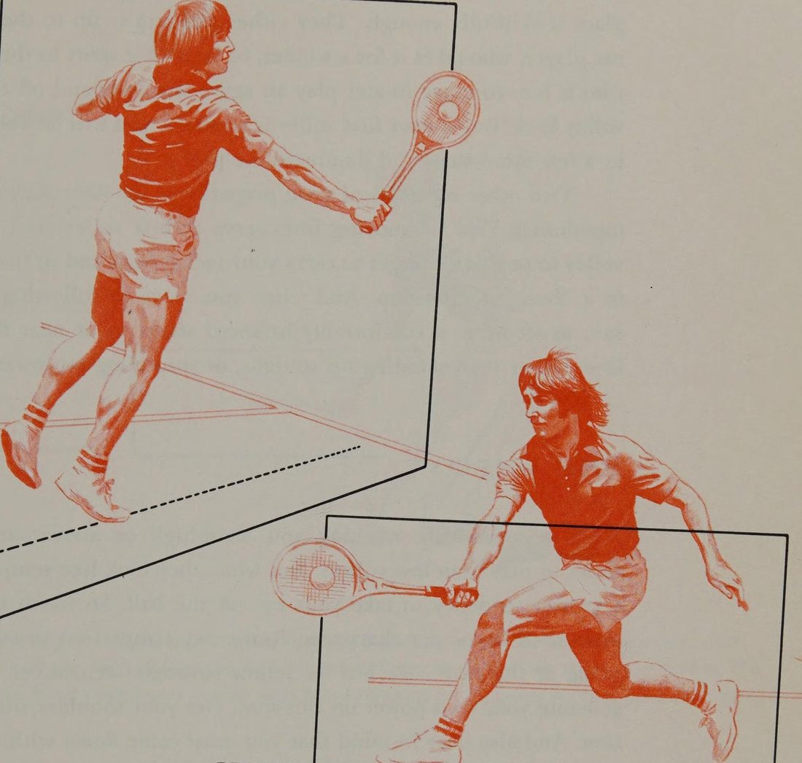
Cần đề cập tới hai yếu tố khác của sự chuẩn bị tốt cho cú vô-lê. Thứ nhất, khi di chuyển từ cú giao bóng lên cú vô-lê đầu tiên, và từ cú vô-lê đầu tiên lên lưới, đừng quên mang vợt cao và ở phía trước mình, trong một tư thế “sẵn sàng làm việc”. Và khi bạn tiến lên theo sau cú giao bóng, hãy chắc chắn vào đúng tư thế đứng thăng bằng thoải mái ở hoặc gần vạch giao bóng, thay vì đứng thẳng người, hoặc vấp ngã về phía lưới.
Two other elements of good preparation for the volley should be mentioned. First, in moving from serve to first volley, and from first volley to net, don’t forget to carry your racket high and in front of you, in a “business” position. And when you move in following serve, be sure to set up in a comfortably balanced stance at or near the service line, rather than standing up straight, or stumbling on toward net.
CÚ VÔ-LÊ CAOHIGH VOLLEYS
Vô-lê bóng cao — những quả bóng tới bạn ở tầm ngang hông hoặc cao hơn — thường dễ đánh hơn vô-lê bóng thấp. Nhưng khi chúng trông như những quả bóng dọn sẵn, thì có xu hướng lớn hơn là bạn rời mắt khỏi bóng. Vậy hãy quan sát những cú đánh “dễ” với sự sắc sảo đặc biệt. Hãy cưỡng lại mọi cám dỗ vung vợt cuồng loạn vào quả bóng dễ đó, nhưng hãy đưa vợt theo bóng — hãy nhớ rằng bạn phải tự tạo ra sức mạnh của mình trong cú đánh này. Hãy đưa vai vào chuyển động. Và cũng hãy ghi nhớ rằng bạn phải đánh xuống với cú đánh nhanh hơn so với một cú vô-lê ở tầm ngang hông.
High volleys—balls reaching you waist-high or above—are usually easier to play than low volleys. But when they look like setups, there is a greater tendency to take your eye off the ball. So watch the “easy” shots with particular sharpness. Resist any temptation to take a wild swing at the easy ball, but do follow through—remember you must generate your own power on this shot. Get your shoulder into the motion. And also bear in mind that you must come down with the stroke faster than you would with a volley at waist-level.
Một cú vô-lê bóng cao về phía trái tay của bạn là cực kỳ khó xử và có thể là cú đánh khó đánh mạnh nhất, nên điều quan trọng là đón bóng vuông góc ở phía trước cơ thể mình thay vì nghĩ đến việc đánh quá mạnh và theo đuổi quá nhiều.
A high volley to your backhand side is extremely awkward and may well be the most difficult shot to hit powerfully, so it is important to meet the ball squarely in front of your body rather than think of overhitting and going for too much.
Vô-lê bóng cao và bóng thấp đòi hỏi những điều chỉnh nhỏ trong kỹ thuật cơ bản của bạn khi xử lý một quả bóng tới bạn trong không trung. Ở vô-lê bóng cao, hãy chắc chắn đưa vợt theo bóng nhiều hơn. Ở vô-lê bóng thấp, hãy chắc chắn khuỵu đầu gối xuống để bàn tay bạn vẫn giữ cùng độ cao với đầu vợt.
High and low volleys require slight adaptations of your basic technique in handling a ball that comes to you in the air. On high volleys, make sure you follow through more with your racket. On low volleys, be sure to bend your knees so that your hand remains on the same level as your racket head.
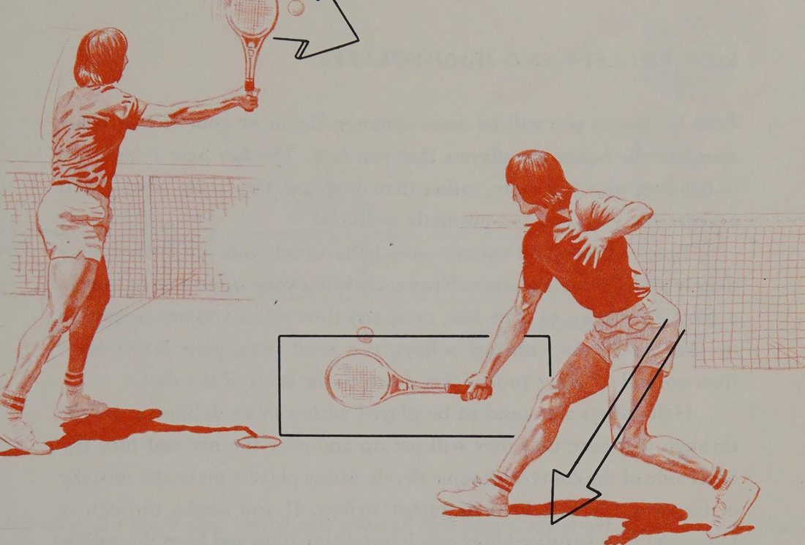
CÚ VÔ-LÊ THẤP VÀ CÚ BÁN VÔ-LÊLOW VOLLEYS AND HALF-VOLLEYS
Những quả bóng đánh thấp đến chỗ bạn sẽ càng phổ biến khi trình độ của bạn càng cao và đối thủ bạn gặp càng giỏi. Mấu chốt ở đây là nghĩ đến việc khuỵu chân nhiều hơn, thay vì hạ đầu vợt xuống. Sau đó thực hiện cú vô-lê như bình thường.
Balls hit low to you will be more common the more your level of play rises and the better the players that you face. The key here is to think of bending your legs more, rather than dropping the racket head. Then execute the volley as you normally would.
Bạn sẽ gặp những cú bán vô-lê — những quả bóng thấp mà bạn phải đánh ngay sau khi bóng nảy — thường xuyên nhất khi đối thủ của bạn đã thực hiện một cú đỡ bóng thấp tốt ngay dưới chân bạn, hoặc bất cứ lúc nào bạn bị kẹt ở vùng đất không người. Cũng như với vô-lê bóng thấp, bạn phải khuỵu đầu gối nhiều hơn bình thường để đưa vợt xuống ngang tầm cú đánh.
You will face half-volleys—low balls which you must hit immediately after bouncing—most frequently when your opponent has made a good low return to your feet, or at any time when you are caught in no man’s land. As with low volleys, you must bend your knees more than normal to bring your racket down to the level of the shot.
Bán vô-lê cũng cần được đánh với động tác đưa vợt theo bóng dứt khoát hơn để đảm bảo bóng sẽ lên và vượt qua lưới rồi vào bên kia sân với chút độ sâu. Nhiều người chơi mắc lỗi giữ bóng lại trong dây vợt của mình. Nếu bạn đánh xuyên qua bóng nhiều hơn, bạn sẽ ngạc nhiên thấy việc đưa bóng lên và giữ bóng trong cuộc dễ dàng đến mức nào. Nhưng đừng cố đánh cú bóng này một cách tấn công — hãy nhận ra rằng đối thủ đã đẩy bạn vào thế khó và hãy bằng lòng với việc gửi bóng trở lại khá thấp và theo hướng nó đến.
Half-volleys also need to be played with a more deliberate follow through to insure that they will get up and over the net and into the other side of the court with some depth. Many players make the mistake of trapping the ball in their racket strings. If you stroke through it more, you'll be surprised how easy it is to bring it up and keep the ball in play. But don’t attempt to play the shot offensively—realize that your opponent has got you in a fix and content yourself with sending the ball back fairly low and in the direction it came from.
Kỹ thuật cơ bản cho mọi cú vô-lê vẫn áp dụng — nhìn bóng, khuỵu đầu gối, và bước vào cú đánh.
The basic technique for all volleys still applies—see the ball, bend your knees, and step into the shot.
CÚ VÔ-LÊ LỐPLOB VOLLEY
Vô-lê lốp bóng thật ra đúng là một cú lốp bóng hơn là một cú vô-lê, nhưng vì nó được thực hiện khi bạn đang ở lưới, ít nhất chúng ta cũng nên đề cập tới nó ở đây. Nó phát huy tác dụng khi cả bốn người chơi đều đang ở lưới với ý định giữ bóng thấp.
The lob volley is more properly a lob than a volley but, since it is made when you are at net, we should at least mention it here. It comes into play when all four players are at net intent on keeping the ball low.
Cú vô-lê lốp là một cú đánh cảm giác, chỉ được thực hiện khi cả bốn người đều ở trên lưới. Nó có thể rất hiệu quả như một miếng đánh bất ngờ, nhưng nếu nó hỏng chỉ một inch thì cũng hỏng cả dặm.
he lob-volley is a touch shot, played only when all four players are at net. It can be very effective IS a surprise maneuver, but if it fails by an inch, it fails by a mile.
Bóng đến chỗ bạn và bạn quyết định gây bất ngờ cho mọi người (thường là cả đồng đội của bạn) bằng cách ngửa mặt vợt ra — sao cho nó hướng lên trời nhiều hơn — rồi hất bóng lên qua đầu đối phương. Bạn không nhắm đến một cú lốp ăn điểm, mà chỉ cố đẩy đội bên kia rời khỏi lưới. Vấn đề là, nếu bạn không đánh đúng, nó có thể tạo ra một cơ hội kết thúc tức thì cho đối phương. Cú này đòi hỏi rất nhiều cảm giác bóng vì bạn phải triệt tiêu hoàn toàn tốc độ của đối thủ khỏi cú đánh. Nhưng khi được dùng một cách thận trọng — có lẽ một lần trong ba trận — và vào một thời điểm then chốt của thế trận, một cú vô-lê lốp thành công là nguồn cảm giác sung sướng lớn.
The ball comes to you and you decide to surprise everyone (usually including your partner) by laying back the face of your racket—so that it faces more skyward—and flipping the ball up and over the heads of the opponents. You’re not going for a winning lob, but merely trying to force the other team away from the net. Trouble is, if you don’t hit the shot just right, it may produce an instant putaway for the opponents. It requires a great deal of touch because you have to take the opponent’s speed completely off the shot. But when used judiciously—maybe once every three matches—and at a critical point in the play, a successful lob volley is a source of great satisfaction.
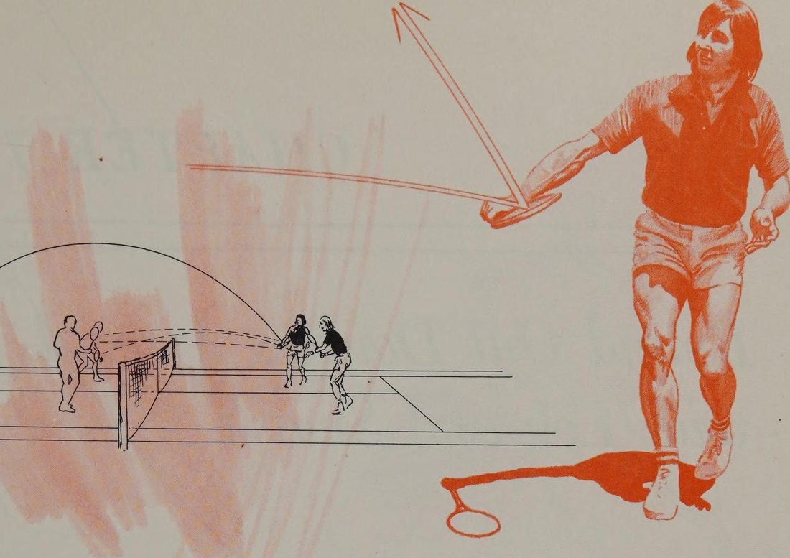
CHƯƠNG 7 — Hoàn thiện vũ khí đánh đôi với cú lốp và cú đập
BÓNG BỔNG VÀ ĐẬP TRÊN ĐẦU, hay đập mạnh, đòi hỏi cách tiếp cận kỹ thuật về cơ bản giống hệt nhau để thực hiện đúng trong đánh đôi cũng như trong đánh đơn. Nhưng hai cú đánh này được dùng với tần suất lớn hơn trong đánh đôi, và chỉ riêng vì lý do đó thôi chúng tôi cũng phải nhấn mạnh tầm quan trọng của việc đạt được một mức độ thành thạo nào đó ở chúng, nếu bạn thật sự muốn học cách đánh đôi cho giỏi.
THELOB AND OVERHEAD, or smash, require substantially the same technical approach for proper execution for doubles as they require for singles. But the two strokes are used with greater frequency in doubles, and for that reason alone we must emphasize the importance of reaching some degree of competence in them, if you really want to learn to play doubles well.
Bạn có thể chơi một trận đánh đơn đáng khen mà không cần đến bóng bổng hay đập trên đầu, hoặc không gặt hái được bao nhiêu thành công khi bạn thử chúng. Nhưng trong đánh đôi, nếu bạn yếu ở cả hai cú đánh này thì bạn sẽ ở vào thế bất lợi rõ rệt — đúng vào tình thế như khi bạn bước vào một ván cờ mà không có xe và mất một nửa số tốt. Bạn đương nhiên yếu hơn về mặt tấn công, và do đó dễ bị tổn thương hơn về mặt phòng ngự.
You can play a creditable game of singles without recourse to the lob or overhead, or without much success when you do try them. But in doubles, if you are weak in both strokes you will be at distinct disadvantage—in the same position you would be entering a chess game without your rooks and half your pawns. You are automatically weaker offensively, and thus more vulnerable defensively.
Chúng ta hãy xem xét cả hai cú đánh này từ góc độ ứng dụng chúng trong đánh đôi, và để mắt tới những vấn đề kỹ thuật khi thực hiện.
Let’s examine both strokes from the point of view of their application in doubles, and with an eye on the technical problems of execution.
Hầu hết người chơi, dù đánh đơn hay đánh đôi, đều mắc sai lầm khi lốp bóng là rút ngắn động tác của mình một cách không cần thiết. Hãy cố đưa vợt theo hết đà khi lốp bóng giống như với bất kỳ cú đánh nào và bạn sẽ khám phá ra rằng mình kiểm soát bóng tốt hơn nhiều và có tầm đặt bóng rộng hơn hẳn.
Most players, in singles or in doubles, make the mistake, when lobbing, of shortening their stroke unnecessarily. Try to follow through on the lob as on any shot and you'll discover that you have much more control and greater range of placement.
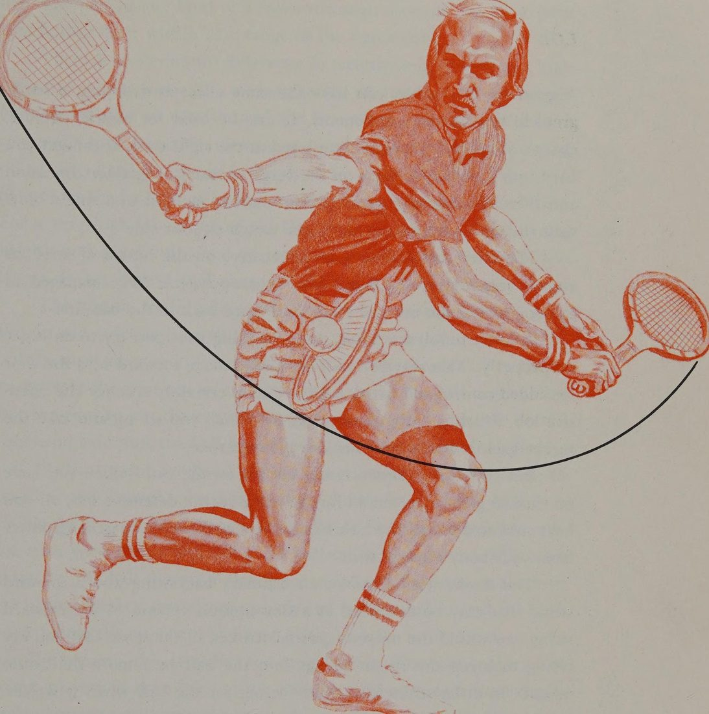
CÚ LỐPLOB
Một cú lốp tốt trong đánh đôi có thể gây hiệu ứng như thả một quả lựu đạn về phía sau đối phương. Nó có thể được dùng để tấn công, phòng ngự, thay đổi nhịp độ, hoặc gây bất ngờ. Được sử dụng đúng thời điểm, nó có thể kéo bạn trở lại trong một điểm mà bạn đang trên bờ thua, gieo rắc sự rối loạn và vì thế phá vỡ tinh thần của đội đối phương, hoặc thậm chí chỉ bằng một đòn mà chuyển đà thắng của trận đấu về phía bạn.
A good lob in doubles can have the same effect as dropping a handgrenade behind your opponents. It can be used for attack, defense, change of pace, or surprise. Employed at the right time, it can get you back into a point you were on the verge of losing, engender confusion and therefore disrupt opposing team morale, or even in a single blow shift the winning momentum in the match to your side.
Bóng bổng là vô giá như một phương án thay thế khi đỡ giao bóng, như đã nói ở trên, và cả khi đối thủ đã giành được quyền kiểm soát lưới và buộc đội bạn phải lùi về vạch cuối sân.
The lob is invaluable as an alternative on the return of serve, as already mentioned, and also when your opponents have managed to gain control of the net and force your team back to the baseline.
Để lốp bóng chính xác, điều đầu tiên bạn phải cố làm là vào tư thế đúng. Như vậy bạn sẽ có thể bước tới đón bóng để kiểm soát tốt hơn và có độ sâu tốt hơn. Điều này chắc chắn đúng với cú lốp bóng tấn công, một cú đánh được ngụy trang mà bạn vào tư thế và đưa vợt ra sau y như với bất kỳ cú đánh nền nào.
In order to lob accurately, the first thing you must try to do is get set properly. That way you will be able to move forward into the shot for added control and better depth. This is certainly true for the offensive lob, which is a disguised stroke for which you set up and take the racket back as you would for any groundstroke.
Nhưng bạn thường xuyên phải lốp bóng khi đang di chuyển — khi bạn không có thời gian vào tư thế. Trong lúc chới với thực hiện một cú lốp bóng phòng ngự như thế, tất cả những gì bạn kịp làm chỉ là đưa vợt ra sau. Bạn không thể trông chờ lấy sức mạnh từ việc chuyển trọng lượng của cơ thể.
But you must frequently use the lob on the run—when you have no time to get set. In scrambling to make such a defensive lob, all you have time to do is get the racket back. You can’t count on getting power from your body’s weight-shift.
Bản thân cú đánh bao gồm một động tác đưa vợt ra sau bình thường và một động tác đưa vợt về trước mà có thể được mô tả như phiên bản quay chậm của động tác đưa vợt về trước bạn dùng ở các cú đánh nền, theo nghĩa là bạn đang cố đưa mặt lưới vợt vào bóng một cách chủ tâm hơn để gia tăng cảm giác về bóng khi nó chạm vợt. Hẳn nhiên bạn phải có cảm giác là mình đang "vuốt nắn" quả bóng chứ không phải là đánh nó.
The stroke itself involves an ordinary backswing and a forward swing that may be described as a slow-motion version of the forward swing you would use on your ground strokes, in the sense that you are trying to bring the racket strings into the ball in a more deliberate manner in order to increase your feeling for the ball when it strikes. You should definitely have the sensation of “‘working”’ the ball rather than hitting it.
Quan trọng nhất là động tác kết thúc (follow-through) của bạn. Vợt của bạn phải di chuyển lên trên và xuyên qua sau khi tiếp xúc, theo hướng mà bạn đang nhắm tới. Việc thiếu hẳn một động tác kết thúc là nguyên nhân khiến hầu hết những cú lốp tồi rơi ngắn trong tầm với thoải mái của đối phương.
Most important is your follow-through. Your racket should move up and through after contact and in the direction in which you are aiming. The lack of any kind of a follow-through accounts for most poor lobs falling short within easy range of the opponents.
Không có khác biệt đáng kể nào về kỹ thuật khi thực hiện một cú lốp bóng phòng ngự cao, như khi bạn bị đưa ra khỏi vị trí và chỉ đơn thuần đang tranh thủ thời gian để hồi vị, so với cú lốp bóng tấn công bay thấp hơn, thường được dùng khi đỡ giao bóng như một cú bất ngờ vượt qua đầu người đứng lưới bên đối phương. Nếu bạn chỉ muốn đánh một cú lốp bóng phòng ngự thấp, hãy nghĩ đến việc vuốt bóng theo cách gần giống như khi bạn vô-lê. Với một cú lốp bóng rất cao, hãy nghĩ đến việc vuốt bóng dài hơn. Độ cao và độ sâu khác nhau có được ở các cú lốp bóng hoàn toàn là một hàm số của độ dài động tác, khả năng kiểm soát vợt, và cảm giác của bạn về bóng trên mặt lưới vợt.
There is no significant difference in technique in executing a high defensive lob, as when you are caught out of position and are simply fighting for time to recover, and the lower-flying offensive lob, more commonly used on return of serve as a surprise shot over the opposing net-player’s head. If you want simply to hit a low defensive lob, think of stroking the ball in much the same manner as you would for a volley. For a very high lob, think of stroking the ball longer. The differing heights and depths obtained on lobs are entirely a function of stroke length, racket control, and your feel of the ball on the strings.
Cú lốp bóng xoáy trên là một câu chuyện khác. Thực tế, nó đòi hỏi thời điểm đánh bóng chuẩn và động tác cổ tay nhanh đến mức chúng tôi không khuyên bất kỳ ai ngoài những người chơi trình độ cao nhất thử phát triển cú đánh này. Nó gần như độc quyền thuộc về bên thuận tay, vì bóng phải được đánh muộn để tạo xoáy trên cần thiết, và đánh muộn ở bên trái tay sẽ đẩy bóng ra sau lưng bạn tới mức không thể thực hiện được.
The topspin lob is a different story. In fact, it requires such good timing and quick wrist action that we would not recommend that any but the most advanced players attempt to develop the shot. It is almost exclusively the province of the forehand side, as the ball must be hit late in order to put the requisite topspin on it, and to hit late on the backhand side puts the ball behind you to an impracticable degree.
Với cú lốp bóng xoáy trên thuận tay, vợt được giữ ở tư thế hơi ngửa lên và được đưa lên thật dứt khoát xuyên qua phía sau quả bóng bằng một động tác giật bật rõ rệt. Hãy cố đánh nó như cú thuận tay của bạn, chỉ khác là dùng nhiều động tác cổ tay hơn và hất bóng ở khoảnh khắc cuối cùng. Khi đánh đúng, bóng bay vượt qua đầu đối thủ, vừa ngoài tầm với của vợt người đó, rồi rơi xuống nhanh và nảy vọt về phía hàng rào cuối sân trước khi đối thủ kịp bắt đầu chạy đuổi theo.
For the topspin forehand lob, the racket is held in a slightly cupped position and brought up sharply through the back of the ball in a visible jerky snapping motion. Try to hit it like your forehand, only use more wrist action and flick at the ball at the last moment. When hit correctly, the ball flies over the opponent’s head, just out of reach of the player’s racket, then drops quickly and bounces off toward the back fence before the opponent can even begin to make a run for it.
Xin nhắc lại — đây là cú đánh chỉ dành cho những người lão luyện. Phần đông tuyệt đại đa số người chơi quần vợt, nếu học được cách lốp bóng thông thường với độ sâu và vị trí đặt bóng ổn định, sẽ chẳng bao giờ cần đến một cú lốp bóng xoáy trên để chơi đánh đôi ở phong độ tốt nhất của mình.
To repeat—this is a shot for experts only. The vast majority of tennis players, if they learn to hit ordinary lobs with consistent depth and placement, will never even need a topspin lob to play their best doubles.
Bóng bổng có tiềm năng đa dạng về tốc độ và vị trí đặt bóng chẳng kém bất kỳ cú đánh nào khác trong quần vợt. Hãy chắc rằng bạn dùng cú đánh này với sự linh hoạt khiến nó trở thành một vũ khí bất ngờ đặc biệt hiệu quả trong đánh đôi.
The lob has the potential for as much variety in speed and placement as any other stroke in tennis. Make sure you use this shot with the versatility that makes it an especially effective surprise weapon in doubles.
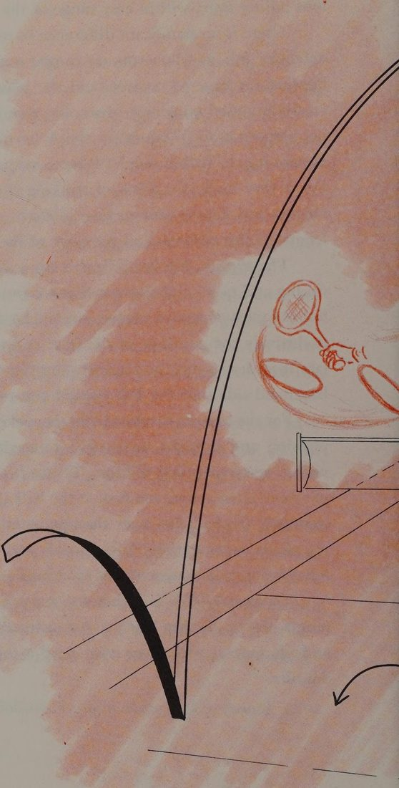
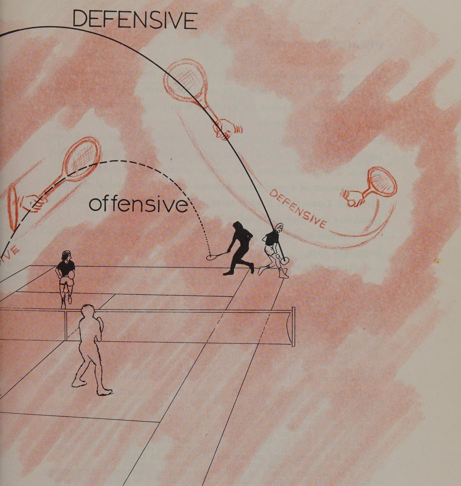
CÚ ĐẬP TRÊN ĐẦUOVERHEAD
Bạn càng chơi đôi đúng cách — nghĩa là càng tiến lên lưới và cố bám trụ ở đó — thì càng mời gọi đối phương sử dụng đủ kiểu lốp. Chống lại cú lốp chỉ có một cách phòng ngự vững chắc, đó là cú đập trên đầu.
The more you play doubles properly—that is, the more you come to net and attempt to stay there—the more you invite some variety of lob by the opponents. Against the lob there is only one sound defense, and that is the overhead stroke.
Cú đập trên đầu — hay cú đập mạnh, như người ta gọi khi đang ở tâm trạng hung hăng hơn — gây khó khăn cho nhiều người chơi quần vợt chủ yếu vì họ cố bắt chước động tác giao bóng của mình khi thực hiện nó.
The overhead—or the smash, as it is called when one is in a more belligerent frame of mind—gives many tennis players trouble mainly because they try to imitate their service motion in executing it.
Có một cú giao bóng tốt không bảo đảm rằng bạn sẽ phát triển được một cú đập trên đầu tốt. Ngược lại, nếu cú giao bóng của bạn tồi thì điều đó cũng không loại trừ khả năng cú đập trên đầu của bạn sẽ xuất sắc.
Possession of a good serve does not insure development of a good overhead. Conversely, if your serve is lousy, it does not exclude the possibility that your overhead will ‘be excellent.
Hai cú đánh này, tuy bề ngoài giống nhau, thực ra khác nhau ở hai điểm quan trọng.
The two strokes, though superficially alike, actually differ in two important ways.
Thứ nhất, trong cú giao bóng, vị trí của quả bóng mục tiêu phần lớn do người giao bóng kiểm soát. Chừng nào bạn còn chuẩn hóa được động tác tung bóng của mình, bạn còn giải phóng mình khỏi biến số vị trí bóng trong suốt cú giao bóng. Ở cú đập trên đầu thì không thể trông cậy vào sự ổn định như vậy, bởi bạn không kiểm soát đường bay của bóng. Vậy nên một nửa trận chiến là việc đưa mình vào đúng vị trí so với quả bóng.
First, in the serve the whereabouts of the target ball is largely controlled by the server. To the extent that you can standardize your toss, you free yourself from the variable of ball location in the course of the serve. In the overhead, no such consistency can be counted on, because you are not controlling the flight. Half the battle is thus getting yourself into the right place in relation to the ball.
Khác biệt lớn thứ hai giữa giao bóng và đập trên đầu nằm ở quy mô của cú đánh. Động tác lấy đà trong cú đập trên đầu ít hơn nhiều, bởi vì việc dựng bóng lên và bắt đầu cho cơ thể chuyển động theo nhịp không phải là một phần của quá trình này, như nó buộc phải có trong cú giao bóng để bảo đảm sự phối hợp tối đa giữa các bộ phận chuyển động khác nhau. Những người chơi cố đập một quả bóng bằng cách lấy đà toàn bộ đang không chỉ lãng phí động tác mà còn đang cố thực hiện một kỳ tích phi thường về thời điểm đánh bóng.
The second big difference beween serve and overhead lies in the size of the stroke. There is much less windup involved in the overhead stroke, because setting the ball up and starting your body moving in rhythm is not part of the process, as it must be in the serve to insure maximum coordination among the various moving parts. Players who try to smash a ball by taking a full-scale backswing are not only wasting motion but attempting an extraordinary feat in timing.
Cú đập trên đầu phải được rút gọn về những thành phần cơ bản nhất Cuối cùng, hãy chắc rằng bạn hoàn tất động tác đánh bóng trước khi nhìn sang phần sân bên kia. Nếu bạn đang đập mạnh trượt mà không có lý do rõ ràng nào, hãy tập trung giữ đầu ngửa ra sau và cằm hướng lên lâu thêm một tích tắc nữa trong lúc vung vợt. Điều đó sẽ bảo đảm rằng bạn không rời mắt khỏi bóng trước khi đánh nó, và sẽ giúp bạn canh thời điểm đánh bóng tốt hơn.
The overhead must be reduced to its most elemental components Finally, make sure you complete your hitting motion before you look into the other court. If you’re mis-hitting the smash for no apparent reason, concentrate on keeping your head back and your chin up for a split second longer on the swing. That will insure that you’re not taking your eye off the ball before you've hit it, and will help you to time your hits better.
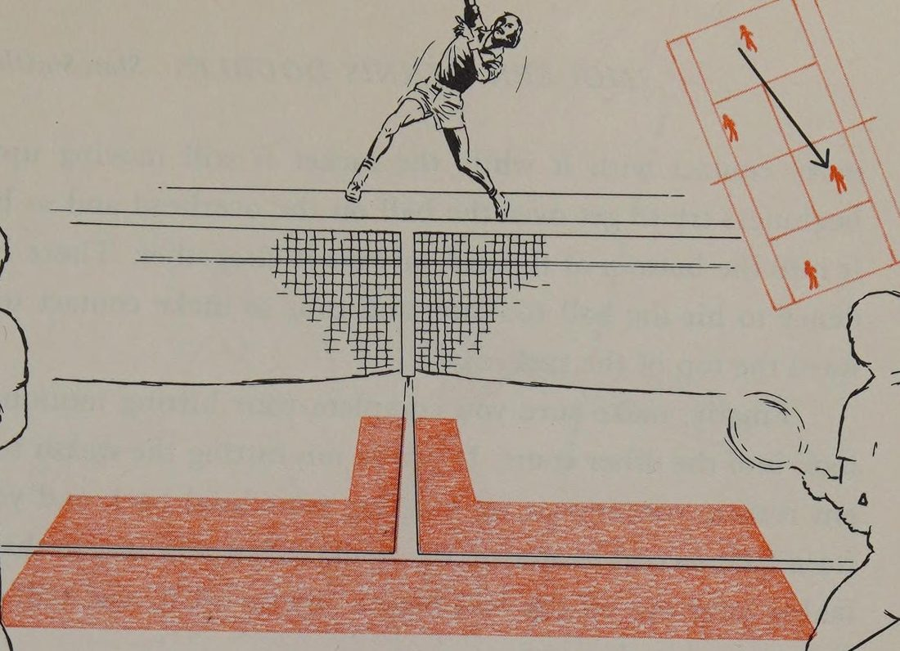
Nếu một trong hai đối thủ tình cờ vẫn đứng ở lưới trong khi bạn đang lấy đà cho cú đập trên đầu, hãy lấy người chơi đó làm mục tiêu. Việc đập cú đập trên đầu xuống ngay dưới chân người chơi đó sẽ giúp bạn tránh đánh quá mạnh ở cú này. Nó cũng sẽ làm nản lòng nạn nhân của bạn, và có thể gieo một chút bất hòa giữa nạn nhân với bạn đánh cặp của người đó — nhất là nếu chính người bạn đánh cặp ấy là người đã dựng nên quả bóng cho bạn đập trên đầu ngay từ đầu.
If one of the opponents happens to have remained at net while you are winding up for an overhead, use that player as your target. Drilling the overhead at the player’s feet will help you to keep from overhitting on the stroke. It will also demoralize your victim, and possibly sow a little discord between the victim and the victim’s partner— especially if the partner is the one who set up the overhead in the first place.
Nếu cả hai đối thủ đều đã lùi về, đây là động tác được khuyến nghị sau một cú lốp bóng, thì hãy nhắm cú đập trên đầu của bạn xuống giữa sân. Hãy lấy giao điểm hình chữ T giữa vạch giữa sân và vạch giao bóng làm mục tiêu, một lần nữa để tránh đánh quá mạnh.
If both opponents have retreated, which is the recommended maneuver following a lob, then aim your overhead down the middle. Use the T-shaped intersection of midcourt line and service line as your target, again to prevent overhitting.
Khi bạn đập mạnh xuống giữa sân, điều nhiều nhất mà bạn có thể trông đợi từ đối thủ là một cú bóng bổng đánh thẳng trở lại về phía bạn, bao giờ cũng ngắn hơn cú bạn vừa đập mạnh. Bạn hẳn sẽ có thể kết thúc quả bóng này bằng cách đánh chéo vào đường biên dọc trống thuận tiện hơn, hoặc lại đập mạnh bóng vào khoảng giữa hai đối thủ.
When you smash down the middle, the most you can expect from the opponents is a lob hit directly back at you, invariably shorter than the one you've just smashed. You should be able to put this one away by angling at the more convenient open sideline, or battering it between the opponents again.
Cú lốp bóng xoáy trên rơi xuống với tốc độ nhanh hơn đáng kể và trên một mặt phẳng dốc hơn nhiều so với cú lốp bóng thông thường, bởi vì bóng xoáy quay tít từ đầu này sang đầu kia; do đó, nó khó phán đoán hơn một cú lốp bóng phòng ngự.
The topspin lob drops at a considerably faster rate and on a much steeper plane than the conventional lob, because the ball is spinning rapidly end over end; thus, it is harder to judge than a defensive lob.
Một trong những vấn đề lớn mà những người chơi trình độ trung bình gặp phải với cú đập trên đầu là việc không vào được vị trí để đón bóng ở phía trước cơ thể mình. Hãy hình dung việc "bắt" quả bóng như thể bạn đang chơi ở vị trí ngoài sân trong bóng chày, và bạn sẽ lùi đủ xa để vung vợt lên và xuyên qua quả bóng ở cú đập trên đầu với đủ sức mạnh và khả năng kiểm soát.
One of the big problems that intermediate players have on the overhead is failure to get into position to meet the ball in front of their body. Imagine “catching” the ball as though you were playing the outfield in baseball, and you will be back far enough to swing up and through the overhead with sufficient power and control.
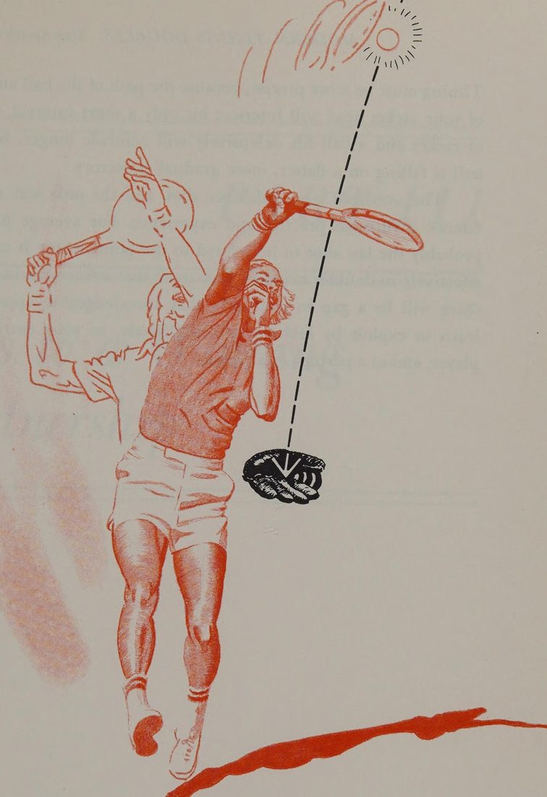
Thời điểm đánh bóng phải chính xác hơn, bởi đường đi của quả bóng và đường đi của đầu vợt bạn sẽ chỉ cắt nhau trong một khoảng thời gian ngắn. Đường đi của vợt và một quả bóng bị đánh phòng ngự sẽ trùng nhau lâu hơn, vì bóng đang rơi theo một quỹ đạo phẳng hơn, thoai thoải hơn.
Timing must be more precise, because the path of the ball and the path of your racket head will intersect for only a short interval. ‘The paths of racket and a ball hit defensively will coincide longer, because the ball is falling on a flatter, more gradual trajectory.
Cú đập trên đầu là một cú đánh của sự tự tin, và cách duy nhất để có được tự tin là qua luyện tập và kinh nghiệm. Với những người chơi trung bình, đây có lẽ là cú đánh cuối cùng được trau chuốt tới mức có thể dùng hiệu quả trong các trận đánh đôi. Nhưng cho tới khi sự trau chuốt đó diễn ra, sẽ có một lỗ hổng trong lối chơi của bạn mà những đối thủ am hiểu sẽ học cách khai thác bằng cách lốp bóng không thương tiếc qua đầu bạn, gây thiệt hại cho bạn với tư cách một người chơi, và với tư cách một thành viên trong một cặp đôi.
The overhead is a confidence shot, and the only way to get confidence is through practice and experience. For average players it is probably the last shot to be refined to the point where it can be used effectively in doubles matches. But, until that refinement has occurred, there will be a gap in your play that knowledgeable opponents will learn to exploit by lobbing you mercilessly, to your detriment as a player, and as a partner in a team.
PHẦN III — Chìa khóa của một cặp đôi chiến thắng
CHƯƠNG 8 — Tạo dựng một cặp đôi cân bằng
NHỮNG YẾU TỐ TẠO NÊN một sự phối hợp cặp đôi hiệu quả trong quần vợt rất nhiều và phức tạp. Các trận đấu, tính cách, và thậm chí cả xuất thân cùng những sở thích ngoài sân của hai người đánh cặp đều phải gặp nhau theo một cách hòa hợp nào đó thì mới có thể dẫn tới một mối quan hệ làm việc trôi chảy trên sân.
THE ELEMENTS OF an effective doubles partnership in tennis are many and complex. Games, personalities, and even the backgrounds and offcourt tastes of doubles partners must meet in some congenial manner in order for a smooth working relationship to result on the court.
Chúng tôi không hề gợi ý rằng bạn phải tìm cho ra một người sinh đôi giống hệt mình làm bạn đánh cặp thì mới hy vọng thành công trong đánh đôi. Thật vậy, hai người cùng một khuôn đúc sẽ làm nhau phật ý trên sân quần vợt cũng thường xuyên như hai người khác biệt nhau lại ăn ý với nhau. Chìa khóa thật sự cho sự hợp tác hiệu quả trong đánh đôi nằm ở việc đạt được sự cân bằng giữa các kỹ năng của hai người chơi, cùng một sự hòa hợp hợp lý trong mối quan hệ cảm xúc. Câu nói sáo cũ rằng các trận đánh đôi được thắng trong phòng thay đồ thật ra áp dụng đúng hơn cho tính hợp lý của sự kết cặp giữa hai bạn đánh cặp, chứ không phải cho việc đội đó chọn chiến thuật cụ thể nào cho trận đấu.
We are not suggesting that you must seek out an identical twin as partner before you can hope to succeed in doubles. Indeed, two persons in the same mold will rub each other the wrong way on the tennis court as often as two dissimilar persons will get along. The real key to effective teamwork in doubles lies in achieving a balance between the technical skills of the two players, and a reasonable harmony in the emotional relationship. The old cliché that doubles matches are won in the locker room really applies more to the logic of the matchup between partners than to the particular team’s choice of tactics for the match.
Hãy nhớ rằng bạn không bao giờ có thể thắng trong đánh đôi chỉ bằng một mình bạn. Ở một mức độ nào đó, bạn có thể gánh vác phần thiếu hụt nếu bạn đánh cặp của bạn lỡ sa vào những cách đánh sai lầm, và chắc chắn một người chơi giỏi hơn có thể bù đắp phần nào những điểm yếu của một người chơi yếu hơn ở bên cánh của mình. Nhưng trong đánh đôi, một đội gồm hai người chơi có kỹ năng trung bình sẽ luôn thắng một đội gồm một người chơi trên mức trung bình và một người chơi dưới mức trung bình. Vậy nên bạn cần bạn đánh cặp của mình để giành chiến thắng, và chi bằng bạn bắt đầu biết quý trọng người ấy cho đúng mực.
Remember that you can never win in doubles all by yourself. ‘To a certain extent you can take up the slack if your partner slips into erroneous ways, and certainly a superior player can compensate for some of the weaknesses of an inferior player on his side. But, in doubles, a team of two players of average skill will always beat a team consisting of one player of above-average and one of below-average skill. So you need your partner to win, and you might as well begin appreciating him properly.
Cần phải nói thêm rằng luôn luôn tồn tại những người chơi, kể cả trong số các tay vợt chuyên nghiệp, không phù hợp về mặt huấn luyện hay tính khí với lối chơi đánh đôi. Họ là những người cứ khăng khăng đánh những cú giao bóng một cực mạnh — kèm theo đó là số lượng cú giao bóng hai yếu hơn tăng lên tương ứng — và chôn những cú đỡ giao bóng của mình lên khán đài. Và họ có xu hướng coi bạn đánh cặp của mình như một sự hiện diện thấp kém nào đó trên sân, kẻ mà họ phải lảng tránh, coi nhẹ hoặc phớt lờ. Một số người chơi này thật ra có thể thiếu tốc độ hoặc sức bền cho đánh đơn — nhưng đó chính là lối chơi nên để họ theo vì lợi ích của tất cả mọi người. Dù một người chơi như vậy là bạn thân hay cộng sự ngoài sân của bạn, hãy để anh ta ra ngoài kế hoạch đánh đôi của bạn.
It should be mentioned that there have always been players, even among the pros, who are not suited by training or temperament for the game of doubles. They are the ones who insist on hitting booming first serves—and a corresponding increased number of weaker second serves —and burying their service returns in the stands. And they tend to regard their partner as some inferior presence on the court who must be circumvented, belittled, or ignored. Some of these players may actually lack the speed or endurance for singles—but that is the game to which to leave them for the good of all. Even if such a player is your close friend or associate off the court, leave him out of your doubles plans.
Nhưng chúng ta hãy giới hạn những nhận xét của mình vào phần đông tuyệt đại đa số người chơi quần vợt, những người sẵn lòng chia sẻ thử thách và niềm vui của nỗ lực chung mà đánh đôi đòi hỏi.
But let’s confine our remarks to the vast majority of tennis players, who are willing to share the challenge and the fun of the joint effort required by doubles.
Một số cân nhắc về kỹ thuật và cảm xúc khi hình thành một cặp đánh đôi tốt bắt nguồn từ câu hỏi cơ bản: ai nên đánh bên nào?
Some of the technical and emotional considerations in forming a good doubles team stem from the basic question, who should play which side?
Người ta thường lập luận rằng, xét về góc độ kỹ thuật, và giả sử cả hai người chơi đều thuận tay phải, thì người có cú thuận tay mạnh hơn nên chơi ở ô thứ nhất hay bên thuận tay, còn người có cú trái tay ổn định hơn nên chơi ở ô thứ hai hay bên trái tay. Về lý thuyết, cách sắp xếp như vậy đưa đội vào tư thế hiệu quả nhất để nhận giao bóng, điều vốn thường là yếu tố quyết định trong một trận đấu.
It is generally argued that, from a technical point of view, and assuming both players are right-handed, the player with a stronger forehand should play the first court or forehand side, and the player with the more consistent backhand should play the second court or backhand side. Such an arrangement theoretically sets up the team in its most effective posture for receiving serve, which is so often the deciding factor in a match.
Như chúng ta sẽ thấy, trong một số tổ hợp nhất định và khi đối đầu với một số đội nhất định, một cách sắp xếp hiệu quả hơn là đặt người chơi thuận tay mạnh hơn vào sân thứ hai. Nhưng trước mắt, hãy xem xét giá trị của quan điểm thông thường về sự kết cặp, tức là đặt cú thuận tay mạnh ở sân thứ nhất và cú trái tay ổn định ở sân thứ hai. Vậy khi đó cả hai người chơi thi đấu ra sao?
As we shall see, in certain combinations and against certain teams, a more effective arrangement puts the stronger forehand player in the second court. But for now, let’s examine the merits of the conventional wisdom on matchups, which plays the strong forehand in the first court and the steady backhand in the second court. How do both players then perform?
Trong cách sắp xếp này, người chơi ở sân thứ nhất tìm cơ hội đánh những cú tấn công, nhất là từ những cú giao bóng hai, bởi cú thuận tay của anh ta có thể phát huy dễ dàng hơn. Điều tối quan trọng là lựa chọn tấn công người đứng lưới bên đối phương, nếu cú giao bóng đủ yếu, bằng cách đánh bóng vượt qua người đó, hoặc đánh xuyên qua người đó. Xét về mặt tỷ số, anh ta ở vào vị thế được tất cả mà chẳng mất gì mấy. Nếu một nỗ lực chuyển sang tấn công ở đầu game bị thất bại, đội của anh ta chỉ bị dẫn 0—15.
In this arrangement the first-court player looks for the opportunity to hit offensive shots, especially off second serves, because his forehand can come into play more easily. Paramount is his option of attacking the Opposing net player, if the serve is weak enough, by passing him, or hitting through him. In terms of score, he is in the position of having everything to gain and little to lose. If an attempt to go on the offensive at the start of the game should fail, his team is down by only love—1p5.
Người chơi ở sân thứ hai có ít cơ hội dùng cú thuận tay hơn vì đối phương có thể giao bóng chéo vào góc trái tay của anh ta dễ dàng hơn. Người chơi ở sân thứ hai phải tập trung đỡ bóng chéo sân bằng một cú trái tay chắc chắn nhưng có lẽ không quá mạnh — nói chung là một cú cắt bóng chéo sân an toàn, được thiết kế để buộc người giao bóng phải thực hiện một cú vô-lê thấp hoặc bán vô-lê khi đang tiến vào. Thay vì nghĩ đến tấn công, người chơi ở sân thứ hai phải cảnh giác hơn bạn đánh cặp của mình trước khuynh hướng cướp bóng của người đứng lưới bên đối phương, đặc biệt là ở những cú giao bóng một. Và áp lực cố hữu trong chính tình thế tỷ số cũng lớn hơn. Nếu đội của anh ta đang bị dẫn 0—15, anh ta biết mình ít nhất phải giữ bóng trong sân nếu không đội anh ta sẽ bị dẫn 0—40. Những cân nhắc kỹ thuật này tạo ra những sắc thái cảm xúc nhất định đặc thù cho mỗi vị trí.
The second-court player has fewer opportunities to use his forehand because the opponent can angle his serve to the backhand corner more easily. The second-court player must concentrate on returning the ball crosscourt with a firm but perhaps not excessively hard backhand— generally a safe crosscourt chip designed to force the server to make a low volley or half-volley coming in. Rather than thinking attack, the second-court player must be warier than his partner of the opposing net player’s inclination to poach, particularly on first serves. And there is greater pressure inherent in the scoring situation itself. If his team 1s down love—1s, he knows he must at least keep the ball in play or his team will go down love—go. These technical considerations create certain emotional nuances special to each position.
BÙ ĐẮP CHO NHAUCOVER FOR ONE ANOTHER
Suy cho cùng thì sân là của cả hai người chơi, và nếu một người để hở quá nhiều khoảng trống, thì bạn đánh cặp của người đó có trách nhiệm bọc lót. Chẳng hạn, nếu Smith chạy vòng qua cú thuận tay của mình khi đỡ giao bóng, anh ta đương nhiên trôi dạt sang bên sân trái tay. Khi điều đó xảy ra, Lutz tự động di chuyển sang bọc bên thuận tay ở lưới.
The court belongs to both players in the final analysis, and if one player leaves too much open space, his or her partner has an obligation to cover. For instance, if Smith runs around his forehand on return of serve, he naturally drifts into the backhand court. Lutz automatically moves over to cover the forehand side at net when this happens.
Người chơi ở sân thứ nhất trở thành kẻ tấn công tự nhiên của đội. Người này cảm thấy quyết tâm hơn trong việc thực hiện cú đánh khó, và sẵn sàng liều mình đánh cú đó hơn, bất kể thắng hay thua. Nhưng khi chấp nhận rủi ro lớn hơn, người đó đặt bản thân mình ra trước mũi dư luận rõ ràng hơn. Khi người chơi ở sân thứ nhất thua một điểm, điều đó thường khá hiển nhiên. Dường như có nhiều thứ đặt lên các hành động của anh ta hơn, nên anh ta phản ứng cực đoan hơn bạn đánh cặp của mình — anh ta thấy phấn chấn khi góp phần thắng một điểm, và chán nản hơn khi thua nó.
The first-court player becomes the natural aggressor on the team. He or she feels more intent on making the difficult shot, and more willing to go for the shot, win or lose. But, in taking greater risks, he puts his identity on the line more clearly. When the first-court player loses a point, it is usually fairly obvious. More appears to be riding on his actions, and so he reacts more extremely than his partner—he feels high when he helps to win a point, and more dejected when he loses it.
Người chơi ở sân thứ hai thận trọng hơn trong các cú đỡ giao bóng và trong các phản ứng của mình. Anh ta buộc phải như vậy để giữ bóng trong sân. Nhưng khi anh ta làm không được điều đó, nó dường như không quan trọng cho lắm. Nếu bạn đánh cặp của anh ta đã thua điểm đầu tiên, anh ta chỉ đang tiếp diễn đà thua. Nếu bạn đánh cặp của anh ta đã thắng điểm đầu tiên, anh ta chỉ đơn thuần kéo hai người về lại thế hòa. Vậy nên người chơi ở sân thứ hai không liều lĩnh cái tôi của mình nhiều đến thế, và trở thành thế lực cảm xúc vững vàng hơn trong hai người.
The second-court player is more conservative in his returns and in his reactions. He must be, in order to keep the ball in play. But when he fails to do that, it does not seem quite so important. If his partner lost the first point, he is only continuing the losing trend. If his partner won the first point, he is merely dropping them back into a tie. So the second-court player does not risk his ego so much, and becomes the steadier emotional force of the two.
Sự thật đáng tỉnh ngộ nhất về vị trí của người chơi ở sân thứ hai là những điểm lợi thế luôn được chơi trên sân của anh ta. Bạn đánh cặp của anh ta ở sân thứ nhất có thể đã dựng nên điểm lợi thế bằng lối chơi ngoạn mục, nhưng anh ta phải ấn định chiến thắng bằng thứ quần vợt chắc chắn, có xác suất cao.
The most sobering fact about the second-court player’s position is that advantage points are always played in his court. His partner in the first court may have set up the ad with spectacular play, but he must seal the victory with solid, high-percentage tennis.
Giờ hãy thử giải quyết vấn đề ai nên đánh bên nào theo cách hoàn toàn ngược lại — bằng cách đặt người chơi thuận tay mạnh vào bên sân trái tay.
Now let’s try to solve the problem of who should play which side in just the opposite way—by putting the strong forehand player in the backhand court.
Trong cách sắp xếp này, người chơi ở sân thứ nhất tập trung vào lối chơi chắc chắn, cố giành điểm đầu tiên hoặc điểm deuce để gây áp lực lên đối thủ. Trong khi đó, người chơi ở sân thứ hai được phép tiếp cận việc đỡ giao bóng theo hướng bùng nổ hơn, điều có thể làm tăng thêm áp lực. Người chơi ở sân thứ hai tập trung phát huy cú thuận tay mạnh của mình bằng cách chạy vòng qua càng nhiều cú giao bóng càng tốt, đánh các cú đỡ bóng chéo sân, xuống giữa sân, hoặc dọc biên với quỹ đạo vòng xuống, buộc đối phương phải vô-lê thấp hoặc bán vô-lê. Người chơi đứng lệch ra ngoài hành lang để dùng trọn cú thuận tay, và nhớ hồi vị về phía giữa sân sau mỗi cú đỡ bóng. Động tác chân thêm và những khâu chuẩn bị cú đánh khác mà việc này đòi hỏi không thành vấn đề, bởi vì nếu thật sự bạn mạnh hơn ở bên thuận tay, bạn sẽ có thể di chuyển tới vị trí đó nhanh và tự tin hơn. Mối lo duy nhất của bạn sẽ là cú giao bóng ăn điểm trực tiếp xuống giữa sân — một rủi ro nhỏ — hoặc cú giao bóng xoáy kick vào người bạn — một mối đe dọa lớn hơn tùy vào người giao bóng bạn phải đối mặt.
In this arrangement, the first-court player concentrates on playing steady, striving to get the first point or the deuce point in order to put the pressure on the opponents. Meanwhile, the second court player is licensed to take a more explosive approach to receiving serve, which can add to the pressure. The second-court player concentrates on bringing his or her strong forehand into play by running around as many serves as possible, dipping his returns crosscourt, down the middle, or down the line, forcing low volleys or half-volleys. The player stands over in the alley in order to use the forehand fully, and remembers to recover toward the center of the court after each return. The extra footwork and other shot-preparation required is no problem because, if you are in fact stronger on the forehand side, you will be able to move to that position more quickly and confidently. Your only worry will be the ace served down the middle—a slight risk—or the kick serve into your body—a bigger threat depending on the server you face.
Cả hai kiểu đội đều có những ví dụ tiêu biểu, điều này làm nổi bật thông điệp thật sự về việc thành lập đội: Cân bằng là tất cả. Rõ ràng là cả hai người chơi trong một đội đều phải có khả năng đánh những cú tấn công hoặc phòng ngự trong những tình huống nhất định của một trận đấu. Tuy vậy, khi cả hai người chơi liên tục tấn công, hoặc cả hai liên tục chơi thăm dò hay phòng ngự, thì cơ hội của họ với tư cách một đội không tốt bằng. Nên xét về lâu dài, một người chơi phải có phần tấn công hơn một chút, cả trong cách tạo cú đánh lẫn trong thái độ, để cả hai người chơi cùng đưa ra thử thách lớn nhất và đa dạng nhất cho đối thủ. Ngay cả điều này cũng phải bị phản bác phần nào, xét tới hiệu quả của những đội như Bob Hewitt và Frew McMillan, những người có những cú đỡ giao bóng ổn định ngang nhau.
There are good examples of both types of teams which points up the real message about team composition: Balance is everything. Both players on a team must be capable of hitting offensive or defensive shots in given situations in a match, obviously. Yet when both players are constantly on the attack, or both are constantly playing a tentative or defensive game, their chances as a team are not as good. So one player must, over the long haul, be slightly more offensive both in his strokemaking and his attitude, in order for both players to present the greatest and most varied challenge to their opponents. Even this must be contradicted in part, in view of the effectiveness of such teams as Bob Hewitt and Frew McMillan, who are equally steady on their returns.
Nếu trong cặp có một người thuận tay trái, người đó thông thường sẽ ở sân thứ hai, bất kể ai phù hợp với vai trò kẻ tấn công hơn. Điều này thật ra có thể tạo nên một cặp đánh đôi mạnh, với ví dụ đỉnh cao trong thời hiện đại là tổ hợp đoạt vô số danh hiệu gồm John Newcombe thuận tay phải và Tony Roche thuận tay trái. Cả hai đều có những cú giao bóng một đáng tin cậy, di chuyển lên lưới nhanh, vô-lê cực kỳ tốt, và — với nền tảng chung là những người Úc đồng hương — còn có những mối gắn kết cảm xúc vững chắc. Thật vậy, trong tất cả các cặp đánh đôi của thập kỷ qua, cặp Newcombe–Roche đã liên tục gây cho chúng tôi nhiều khó khăn nhất.
If there is a left-hander in the pair, that player would normally be in the second court regardless of who better fits the aggressor role. This in fact can make for a strong doubles team, with the supreme example in modern times being the much-titled combination of right-handed John Newcombe and left-handed Tony Roche. Both have dependable first serves, move to net quickly, volley exceedingly well, and—with their common ground as fellow Aussies—have solid emotional ties to boot. In fact, of all the doubles teams of the past decade, the NewcombeRoche team have consistently given us the most trouble.
Khi một đội được cân bằng như chúng tôi đã đề xuất, người không tấn công sẽ có xu hướng có thái độ có phần tách biệt hơn với trận đấu, và kết quả là có góc nhìn tốt hơn về diễn biến của trận đấu. Do đó người chơi này có tiềm năng dẫn dắt đội, dĩ nhiên không phải với vai trò tạo nên lối chơi rõ ràng và liên tục như một tiền vệ chỉ huy trong bóng bầu dục Mỹ, mà theo một cách tinh tế hơn nhiều, cách này không hề làm giảm giá trị tiềm tàng của sự lãnh đạo như vậy. Ở vào thế hơi xa khỏi sức nóng của trận đấu hơn, và ít bị tổn thương hơn trước những lúc lên cao xuống thấp về cảm xúc, người chơi này có thể để mắt theo dõi xem chiến thuật cho trận đấu đang diễn tiến ra sao, và neo giữ đội về mặt tâm lý.
When a team is balanced as we’ve suggested, the nonaggressor will tend to have a somewhat more detached attitude toward the play, and as a result a better perspective on the evolution of the match. ‘This player therefore has the potential to lead the team, certainly not with the obvious and sustained play-making role of a football quarterback, say, but ina much more subtle way that in no manner reduces the possible value of such leadership. Slightly more removed from the heat of the action, and less vulnerable to emotional highs and lows, this player can keep tabs on how the strategy for the match is working out, and anchor the team psychologically.
Vai trò đội trưởng, hay lãnh đạo đội, như vậy trong thực tế thường là một vai trò luân chuyển. Chẳng hạn, ngoài chuyện ai đánh sân nào, hay cách tiếp cận tinh thần của ai khách quan hơn một cách tự nhiên, còn có câu hỏi ai tình cờ đang vào phong độ tốt hơn một chút vào ngày diễn ra trận đấu. Rõ ràng, một người chơi đang gặp trục trặc kỹ thuật, hoặc thiếu tự tin, hoặc bị mất tinh thần hay bị phân tâm bởi những chuyện khác, thì không ở vào vị thế để dẫn dắt đội, và khi đó nhiệm vụ đảm nhận vai trò ấy thuộc về người chơi kia, cho dù người chơi đó cũng đang gánh mọi rủi ro ở sân thứ nhất. Có một điều chắc chắn: Nếu cả hai người chơi đều thiếu tự tin hay sự tinh tế hay tính tách biệt để điều hành trận đấu, thì lối chơi của đội sẽ ngày càng thiếu tập trung và thiếu tổ chức.
Such captaincy, or team leadership, is in actual fact usually a floating role. For example, aside from who is playing which court, or whose mental approach is naturally more objective, there is the question of who happens to be on their game a bit more on the day of a match. Obviously, a player having technical problems, or low on confidence, or demoralized or distracted by other matters, is in no position to lead the team, and it then becomes the duty of the other player to assume that role, even if that player is also taking all the risks in the first court. One thing is for sure: If both players lack the confidence or flair or detachment to direct the match, the play of the team will become increasingly unfocused and disorganized.
Khi hình thành cặp đôi của riêng bạn — dù chỉ cho một ngày hay cho cả mùa giải — bạn sẽ luôn phải thỏa hiệp đôi chút trong việc tìm kiếm một cặp đôi thật cân bằng. Nhưng hiệu quả của đội chắc chắn sẽ được cải thiện nếu bạn chủ động chọn những đồng đội bổ sung — bổ sung chứ không phải trùng lặp — cho kỹ năng đánh bóng, cá tính và kinh nghiệm của chính bạn, và nếu bạn khuyến khích ở đồng đội cũng như ở bản thân những phẩm chất giúp hai người ăn khớp với nhau trên sân. Chẳng hạn, nếu bạn đang chơi với một người am hiểu lối đánh đôi hơn, và bạn đặt những câu hỏi cho thấy bạn mong người đó nắm vai trò chỉ huy, thì bạn thường sẽ thấy rằng người chơi đó có nhiều khả năng dẫn dắt nỗ lực của cả đội hơn, để cả hai người cùng hưởng lợi.
In forming your own doubles partnerships—whether they be intended for the day or the season—you will always have to compromise a bit in your search for the well-balanced duo. But your team effectiveness will definitely improve if you consciously select partners who complement—complement, not duplicate—your own stroke-making skills, personality, and experience, and if you encourage those traits in your partner and yourself which help you mesh gears on court. For example, if you are playing with someone who is wiser in the ways of doubles, and you ask him questions that show you expect him or her to be in charge, you will generally find that that player will be more likely to lead the team effort so that both of you benefit.
Ngoài ra, hãy nhớ rằng hoàn cảnh trong một trận đấu thật sự có thể buộc bạn đổi vai từ kẻ tấn công sang đội trưởng và có lẽ lại đổi ngược trở lại. Bạn phải đủ linh hoạt để nhận ra và chấp nhận những thay đổi đó cũng như để tận dụng tối đa mọi thứ trong vai trò được trao hay do mình chọn. Chẳng hạn, nếu bạn đánh cặp vốn hiền lành của bạn bỗng một lúc nào đó hừng hực khí thế và bắt đầu đánh những cú Superman hết ga mà bạn vẫn thường chuyên trị, đừng cố phớt lờ hay ngăn cản sự chuyển biến đó — nhất là nếu những cú đánh ấy đang vào sân. Hãy để người đồng đội của bạn đảm nhận vai trò hung hăng trong khi bạn dành nhiều sự chú ý hơn cho tiến trình trận đấu từ vị thế thuận lợi của một nhà phân tích và đội trưởng của đội.
Also, remember that circumstances in an actual match may force you to change your role from aggressor to captain and perhaps back again. You must be sufficiently flexible to note and accept the changes and to make the most of things in your given or chosen role. For example, if your normally mild-mannered partner becomes fired up all at once and starts hitting the all-out Superman shots you have been specializing in, don’t try to ignore or discourage the development—especially if the shots are going in. Let your teammate fulfill the ageressive role while you pay more attention to the progress of your match from the vantage point of analyst and team captain.
Bạn cũng có lợi nếu chọn một bạn đánh cặp cân bằng với bạn ở những phương diện tạo cú đánh khác nữa, không chỉ cú đỡ giao bóng. Cả hai bạn đều phải có khả năng giao bóng ổn định, nhưng nếu một người có xu hướng cắt bóng khi giao và người kia có xu hướng xoáy hoặc kick bóng, thì sự phối hợp cặp đôi của bạn sẽ mạnh hơn bấy nhiêu nhờ sự đa dạng trong đòn tấn công chung của hai người.
It’s also to your advantage to pick a doubles partner who balances you in other stroke-making departments besides the return of serve. Both of you must be able to serve consistently, but if one player tends to slice his serves and the other tends to twist or kick them, your partnership will be that much stronger for the variety of your joint attack.
Cả hai bạn đều phải biết vô-lê và sẵn lòng cướp bóng. Nhưng thật ra không thiết yếu rằng cả hai người chơi đều có những cú đập trên đầu hạng nhất, ít nhất là không cần trong các trận đấu ở cấp câu lạc bộ. Miễn là một trong hai bạn có thể dứt điểm những quả bóng cao với sự tự tin, đội bạn sẽ an toàn trước phần lớn những cú lốp bóng do đối thủ đánh. Tương tự, nếu chỉ một trong hai bạn thuộc tuýp người chạy nhanh như chớp, thì thế cũng có thể cung cấp đủ khả năng di chuyển trên sân mà đội bạn cần ở trình độ chơi câu lạc bộ.
Both of you must know how to volley and be willing to poach. But it 1s really not essential that both players have first-rate overheads, at least not in club play. As long as one of you can put away high balls with confidence, your team will be safe from the majority of lobs hit by your opponents. Similarly, if only one of you is of the speed-demon variety, that may provide enough of the court mobility your team requires at the club level of play.
CHƯƠNG 9 — Di chuyển như một tập thể
CHÚNG TA ĐÃ NÓI về việc hình thành một cặp đánh đôi tốt theo lý thuyết của chúng tôi về những khả năng tạo cú đánh cân bằng nhau, được hỗ trợ bởi tư thế cảm xúc phù hợp và các vai trò lãnh đạo. Giờ hãy xem xét một đội phải vận hành như thế nào một khi nó đã được hình thành.
WE HAVE TALKED about the formation of a good doubles team according to our theory of balanced stroke-making abilities, supported by the appropriate emotional stance and leadership roles. Now let’s examine how a team should function, once it is formed.
Những bạn đánh cặp giỏi bộc lộ phẩm chất hợp tác của mình qua cách họ phản ứng với những chuyển động của nhau trên sân, và với những cú lốp bóng cùng những cú đánh xuống giữa sân của đối phương. Chúng tôi đã gợi ý rằng di chuyển như một đội là một trong những nguyên lý cơ bản của đánh đôi hiện đại, và là điều thiết yếu để bảo đảm việc bọc lót đúng mức phần sân của đội bạn. Và chúng tôi đã phác thảo những vai trò hỗ trợ lẫn nhau của người giao bóng cùng bạn đánh cặp của người giao bóng, và của người đỡ giao bóng cùng bạn đánh cặp của người đỡ giao bóng, xét theo các chiến thuật đánh đôi tấn công.
Good doubles partners reveal the quality of their teamwork in the manner in which they respond to each other’s movements on the court, and to lobs and shots down the middle by the opponents. We’ve already suggested that moving as a team is one of the basic principles of modern doubles, and instrumental in insuring proper coverage of your team’s side of the court. And we have outlined the mutually supportive roles of server and server’s partner, and receiver and receiver’s partner, in terms of aggressive doubles tactics.
Nhưng chúng ta vẫn chưa thực sự xem xét hết mọi tình huống nảy sinh tự nhiên trong đánh đôi, nơi phối hợp đồng đội — ai đi đâu và làm gì — thực sự được thử thách. Khả năng di chuyển như một đội của bạn có thể được đo lường khá chính xác qua việc bạn bịt những lỗ hổng trong hàng phòng thủ do các cú đánh của đối phương tạo ra tốt đến đâu. Khi đã quen với những tình huống này và học được các bước di chuyển đúng cho từng tình huống, thì chỉ còn là vấn đề thời gian và kinh nghiệm trước khi bạn di chuyển và phối hợp như một đội một cách bản năng.
But we haven't really looked at all the situations that spontaneously arise in doubles in which teamwork—who goes where and does what— is really tested. Your ability to move as a team can be measured quite accurately by how well you plug the holes put in your defenses by the Opposing team’s shots. By familiarizing yourself with these situations and learning the correct moves to make in each, it becomes only a matter of time and experience before you are instinctively moving and performing as a team.
Hãy nhớ rằng những động tác như vậy sẽ đến dễ dàng hơn nếu bạn hiểu rằng, dù bạn có thể không tham gia vào một pha trao đổi bóng, bạn luôn luôn tham gia vào điểm bóng đó. Đôi khi người chơi trôi vào những tâm trạng trì trệ nếu họ đã lâu không đánh quả bóng nào — họ trở thành khán giả thay vì người tham gia. Đó thường là lúc nguy cơ xuất hiện một lỗ hổng bên phần sân của họ là lớn nhất.
Remember that such moves will come more readily if you understand that, even though you may not be involved in an exchange, you are always involved in the point. Sometimes players drift into stagnant moods if they haven’t hit a ball for a while—they become spectators rather than participants. That’s usually when the risk of a gap opening up on their side of the court is greatest.
THUẬN THEO CON NƯỚCRIDE WITH THE TIDE
Động tác đánh đôi chủ yếu của bạn là cùng tiến cùng lùi để ít nhiều đứng ngang hàng với nhau — để nhập cùng bạn đánh cặp và tạo thành một hàng tấn công vững chắc. Đó cũng là lý do bạn phải lùi khỏi lưới khi bạn đánh cặp của bạn bị buộc phải lùi về vạch cuối sân. Ngay khi bạn đánh cặp tung lên một cú lốp bóng phòng ngự, hãy lập tức chạy lùi về vạch cuối sân.
Your principal doubles move is to get more or less side by side whether or return—to join your partner and form a solid line of attack. That’s also why you must retreat from net when your partner is forced back to the baseline. As soon as the partner tosses up a defensive lob, scoot back to the baseline.
Khi bạn và bạn đánh cặp cùng ở trên lưới hoặc cùng ở vạch cuối sân, và một trong hai người bị một cú đánh của đối phương kéo ra thật xa về một bên, thì người kia nên dịch chuyển theo hướng đó vài bước để bịt khoảng trống giữa hai người. Nhưng đừng dịch chuyển xa đến mức tạo ra một khoảng trống ở phía bên bạn. Giữ đúng khoảng cách giữa hai người là một trò giữ thăng bằng tinh tế, chẳng khác nào giữ cho một chiếc thuyền con khỏi chìm khi một hành khách ngả người ra quá xa về một bên.
When you and your partner are together at net or at the baseline, and one of you is pulled wide by an opponent’s shot, the other should slide over a couple of steps in that direction, in order to close the gap between you. But don’t move over so far that a gap is created on your side. Preserving the right space between you is a delicate balancing act, akin to keeping a rowboat afloat when one passenger leans out too far on one side.
CHE CHẮN PHẦN SÂN CỦA NGƯỜI CẮT BÓNGCOVER THE POACHER’S COURT
Khi bạn thấy đồng đội đang ở lưới băng ngang cắt bóng (poach) một cú đánh, bạn nên lập tức dịch chuyển sang nửa sân mà đồng đội vừa để trống. Nếu bạn vẫn ở phía sau sau khi giao bóng hoặc trả giao bóng, động tác này sẽ tương đối dễ với bạn. Nhưng nếu bạn đã bắt đầu tiến lên lưới, bạn sẽ phải ngắt nhịp bước chân để vào được vị trí bảo vệ vùng sân mà đồng đội vừa mới bỏ trống. Điều này rất quan trọng, phòng khi đối phương đỡ được cú cắt bóng của đồng đội bạn.
When you see your partner at net cross and poach on a shot, you should immediately shift into the half of the court your teammate has left vacant. If you have stayed back following your serve or return, this move should be relatively easy for you. If you have begun moving toward net, however, you will have to break stride in order to get into a position to protect your partner’s newly vacated territory. It’s vital, just in case the opponents get your partner’s poach back.
Thường trong đánh đôi, lùi lại một phần trên nửa sân của bạn là một ý hay nếu bạn đánh cặp của bạn đã di chuyển cực kỳ sát lưới, chẳng hạn ở một cú vô-lê thứ hai sau cú giao bóng. Với việc bạn đã ở trên lưới trong vai bạn đánh cặp của người giao bóng, đội bạn lập tức rất dễ bị tổn thương trước một cú lốp bóng hoặc một cú lốp bóng kiêm vô-lê. Bằng việc lùi lại về vạch giao bóng ở phía bên bạn, bạn đưa mình vào vị trí để xử lý hiệu quả bất kỳ cú lốp bóng nào, mà vẫn ở đủ phía trước để bước vào và vô-lê một cú đánh, hoặc bằng cách khác giữ vững thế tấn công tiến lên của đội bạn.
Often in doubles it is a good idea to beat a partial retreat on your half of the court if your partner has moved extremely close to the net, say on a second volley following serve. With you already at net as the server’s partner, your team is immediately highly vulnerable to a lob or lob-volley. By stepping back to the service line on your side, you put yourself into position to effectively field any lob, yet remain sufficiently forward to step in and volley a shot, or otherwise preserve your team’s forward attacking posture.
NGƯỜI ĐỨNG LƯỚI ĐÓN PHẦN LỚN CÁC CÚ LOB TRẢ GIAO BÓNGNET PLAYER FIELDS MOST LOB RETURNS OF SERVE
Nếu cú giao bóng của bạn bị đỡ trả bằng một cú lốp bóng nông vượt qua đầu bạn đánh cặp của bạn, thì bạn đánh cặp của bạn nên ở vào vị trí để lùi nghiêng người ra sau và kết thúc quả bóng bằng một cú đập trên đầu. Người đứng lưới thật ra phải có khả năng bọc lót mọi cú lốp bóng qua đầu mình, trừ khi người đó đang cướp bóng hoặc vì lý do nào đó đang chơi cực kỳ sát lưới. Tuy nhiên, nếu cú lốp bóng đó sâu, thì bạn, với tư cách người giao bóng, có thể phải chịu trách nhiệm đuổi theo nó, cho dù bạn đã tiến lên vài bước để chờ vô-lê cú đỡ giao bóng. Cơ hội
If your serve is returned by way of a shallow lob over your partner’s head, your partner should be in a position to sidestep back and put the ball away with an overhead smash. The net player really should be able to cover all lobs over his head unless he is poaching or playing extremely close to the net for some reason. If, however, the lob is deep, you as server may have to take responsibility for chasing it down, even if you have moved in a few steps in anticipation of volleying a return. Chances
Trong mọi tình huống không chắc chắn do cú lốp bóng tạo ra, hãy nhớ thông báo những động tác của bạn cho bạn đánh cặp nếu người ấy không ở vị trí để nhìn thấy chúng.
In all uncertain situations created by the lob, remember to communicate your moves to your partner if he or she is not in a position to see them.
NGƯỜI ĐANG TIẾN LÊN LƯỚI XỬ LÝ BÓNG XUỐNG GIỮA SÂNPLAYER MOVING TO NET TAKES BALL DOWN THE MIDDLE
Những cú đánh xuống giữa sân có thể thử thách gay gắt khả năng phối hợp của một cặp đôi. Theo nguyên tắc, nếu một người đang tiến lên lưới còn người kia đã ở lưới, thì người đang di chuyển phải chịu trách nhiệm với mọi quả bóng đi xuống giữa sân. Vậy nên, nếu bạn đang theo cú giao bóng hoặc cú trả giao bóng tiến vào lưới, đừng trông chờ đồng đội vô-lê quả bóng đi giữa hai người. Vì bạn đang di chuyển, bạn sẽ có lợi thế hơn đồng đội một chút trong việc phán đoán và đánh tấn công mạnh mẽ.
Shots hit down the middle can severely test a team’s ability to work together. As a rule, if one player is moving to net and the other player is already at net, the player in motion should take responsibility for any ball hit down the middle. So, if you re following a serve or a return into net, don’t depend on your partner to volley away a shot hit between you. Because you are in motion, you should have a slight edge over your partner in anticipation and in stroking aggressively.
KHI CẢ HAI ĐỀU Ở LƯỚI, NGƯỜI ĐÁNH CUỐI CÙNG XỬ LÝ BÓNG XUỐNG GIỮA SÂNWITH BOTH PLAYERS AT NET, LAST PLAYER TO HIT TAKES BALL DOWN MIDDLE
Nếu cả hai người chơi đã ở trên lưới và một quả bóng được đánh vào khoảng giữa hai người, thì người chơi ở bên đang vô-lê mà đã đánh quả bóng sau cùng nên đánh nó lần nữa, bởi người đó sẽ được chuẩn bị tốt hơn một chút để thực hiện cú đánh. Đã nói vậy thì chúng tôi phải thêm ngay rằng, nếu người chơi kia cảm thấy mình có thể tạo ra một cú vô-lê mạnh hơn từ bên đó so với bạn đánh cặp của mình, thì người đó nên bước vào và nhận bóng.
If both players are already at net and a ball is hit between them, the player on the volleying side who last hit the ball should hit it again, because he or she will be marginally better prepared for making the shot. That said, we should immediately add that, if the other player feels he can make a stronger volley from that side than his partner, he should step in and take the ball.
DÙNG THUẬN TAY ĐỂ ĐẬP CÚ LOB NÔNGUSE FOREHAND TO SMASH SHALLOW LOB
Nếu một cú lốp (lob) nông bay vào giữa sân, người có thể đập trên đầu (smash) bằng mặt thuận tay luôn nên đánh quả đó. Rất ít tay vợt, kể cả trong giới chuyên nghiệp, có thể đập dứt khoát bằng trái tay. Vì lý do đó, bạn đừng ngần ngại bước hẳn sang phần sân của đồng đội, nếu cần, để giải thoát đồng đội khỏi cú đánh khó xử này và kết thúc điểm bằng cú đập thuận tay của mình.
If a shallow lob is hit to the middle, the player who can make the overhead with the forehand side should always make the shot. Few players, even among the pros, can smash decisively with their backhand. For that reason you should not hesitate to step well into your partner’s side, if necessary, to relieve your partner of this awkward shot and to put the ball away with your forehand smash.
LẶP LẠI NHỮNG MIẾNG ĐÁNH HIỆU QUẢREPEAT THE PLAYS THAT WORK
Nếu một chuỗi hành động của bạn và bạn đánh cặp có vẻ hiệu quả trong một điểm nhất định hoặc khi đối đầu với một đội nhất định, thì đừng ngần ngại lặp lại chuỗi hành động đó mỗi khi bạn có thể. Một miếng đánh như vậy mà chúng tôi đã xây dựng qua nhiều năm đánh đôi cùng nhau đã có lúc cực kỳ hiệu quả. Trong miếng đánh này, Smith chạy vòng qua và đánh một cú thuận tay đỡ giao bóng, rồi di chuyển vào sân thứ hai trong khi Lutz, ở lưới, vượt ngang sang sân thứ nhất. Miếng đánh này làm đối thủ bối rối và thường buộc họ phải đánh những cú yếu. Khi nó hiệu quả, đó là một ví dụ tuyệt vời về tinh thần đồng đội trong chuyển động.
If a sequence of actions by you and your partner seems to work well on a certain point or against a certain team, don’t hesitate to repeat the sequence whenever you can. One such play that we have evolved in our years of doubles together has been extremely effective at times. In this play, Smith runs around and hits a forehand return of serve, then moves into the second court while Lutz, at net, crosses into the first court. The play confuses opponents and often forces weak shots. When it works, it’s a great example of teamwork in motion.
CHƯƠNG 10 — Cách giúp đồng đội giúp bạn
MỘT MỨC ĐỘ TRAO ĐỔI đáng kể giữa hai người đánh cặp — ngay cả khi không nói ra thành lời — làm tăng đáng kể hiệu quả của bất kỳ cặp đánh đôi nào. Trong tất cả những ý tưởng liên quan đến lối đánh đôi, ý tưởng về sự trao đổi giữa hai người đánh cặp có lẽ là ý tưởng được rao giảng nhiều nhất mà lại được thực hành ít nhất — hoặc ít ra là không được thực hành theo bất kỳ cách nào có ý nghĩa — trong số tất cả những ý tưởng thường gặp trong các cuộc tranh luận về đánh đôi. Có nhiều cách trao đổi hời hợt chẳng giúp ích gì cho ai, không chỉ trong quần vợt mà còn trong quảng cáo và ngoại giao, để kể ra hai lĩnh vực khác mà như mọi người đều biết, ở đó thường có rất nhiều trao đổi ban đầu nhưng hầu như chẳng có mấy tiếp xúc thực chất.
A SUBSTANTIAL DEGREE of communication between partners —even when unspoken—greatly increases the effectiveness of any doubles team. Of all ideas related to doubles play, this idea of communication between partners is perhaps the most overpreached and underpracticed—or, at least, not practiced in any meaningful fashion—of all the ideas common in doubles debates. There are many superficial means of communication that don’t help anyone, not just in tennis but in advertising and diplomacy, to name two other fields where, as everyone knows, there is often a lot of up-front communication but hardly any contact of substance.
Sự tiếp xúc thực chất giữa hai người đánh cặp phải diễn ra xoay quanh chủ đề chiến thuật cho trận đấu, và ở mọi thời điểm gay cấn cao cũng như thấp trong suốt trận đấu.
Contact of substance between doubles partners must take place on the subject of strategy for the match, and at all critical high and low points during the match.
Kiểu trao đổi thứ nhất diễn ra, một phần, ngay cả trước trận đấu bắt đầu. Bạn và bạn đánh cặp nên sẵn lòng nói chuyện cởi mở về một hướng tiếp cận chiến thuật để đối đầu với những đối thủ cụ thể của mình, dựa trên điểm mạnh của các bạn và điểm yếu của họ, và đi đến một sự đồng thuận nào đó về chủ đề ấy trước khi trận đấu bắt đầu. Trong chương tiếp theo chúng ta sẽ xem xét các kiểu cặp đánh đôi khác nhau mà bạn phải đối mặt và những chiến thuật tốt nhất để dùng với từng kiểu đó. Còn bây giờ, hãy chắc chắn rằng cả hai bạn đều “biết rõ địch thủ”, hoặc ít nhất là cả hai đều cố gắng làm điều đó. Nếu bạn đã chơi chung với cùng những cặp đánh đôi ấy trong một thời gian dài, rất có thể tất cả các bạn đều biết quá rõ những điểm yếu của nhau. Dù vậy, cũng chẳng hại gì khi nhắc bạn đánh cặp nhớ rằng Roger có một cú đập bóng trên đầu tệ kinh khủng, hay rằng Fifi là kiểu người trở nên nguy hiểm hơn khi đội của cô ấy bị dẫn trước. Cũng là một ý hay khi bàn trước với bạn đánh cặp về việc thử những thế đứng thay thế, nếu có khả năng đối thủ của bạn ngày hôm đó buộc hai người phải dùng đến một trong hai khả năng ấy.
The first type of communication takes place, in part, even before the match begins. You and your partner should be willing to talk openly about a strategic approach to playing your particular opponents, based on your strengths and their weaknesses, and come to some agreement on the subject before the match starts. In the next chapter we'll examine the variety of doubles teams one faces and the best tactics to use against each of them. For now, make sure you both ‘“‘know the enemy,” or at least that you both try to. If you’ve played among the same doubles teams for a long time, chances are you all know each other’s weak points all too well. Even so, it doesn’t hurt to remind your partner of the moment that Roger has an execrable overhead, or that Fifi is the type who gets more dangerous when her team falls behind. It is also a good idea to touch base with your partner beforehand about trying alternate formations, if it is at all likely that your opposition may force either possibility that day.
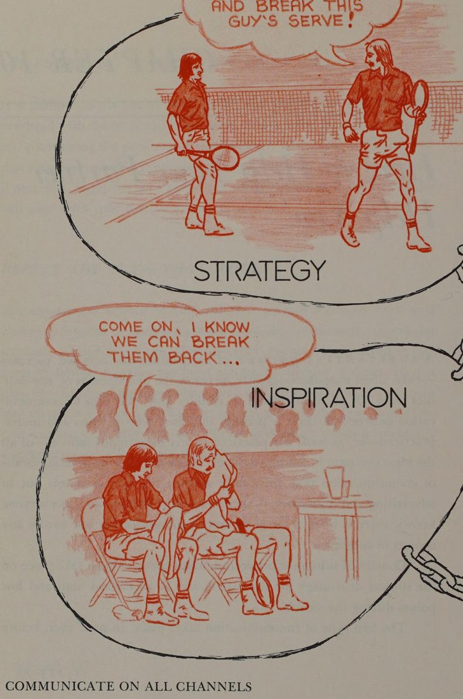
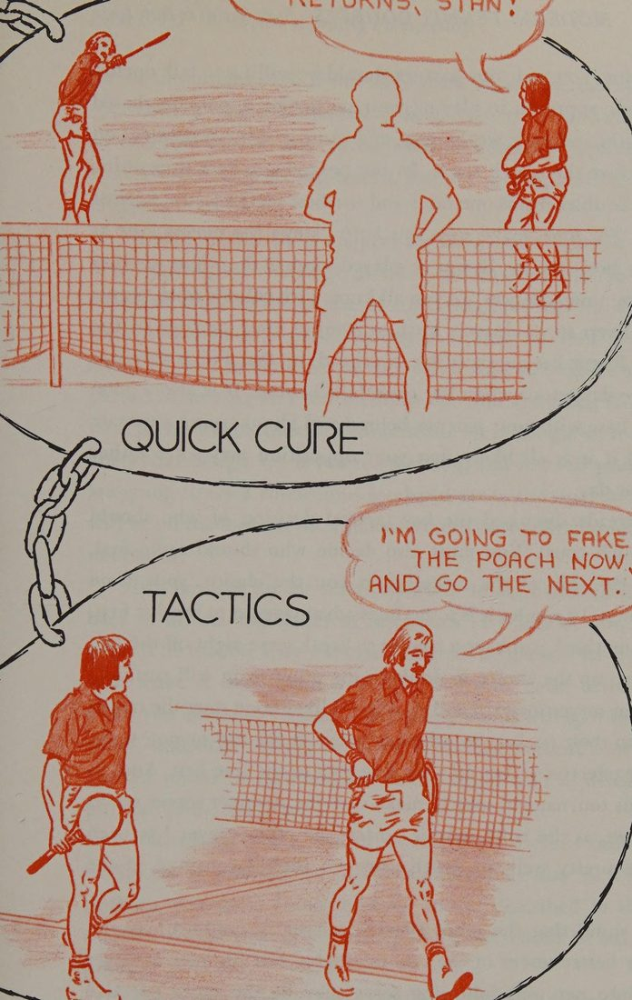
Chúng ta đã bàn về quyết định chiến thuật then chốt là ai nên đỡ giao bóng ở bên sân nào. Bạn cũng phải quyết định ai nên giao bóng trước. Chắc chắn rằng, nếu việc xoay vợt cho bạn quyền chọn, đội của bạn nên giao bóng trước. Trong đánh đơn, đôi khi có lợi hơn khi đỡ giao bóng trước, đặc biệt nếu bạn nghĩ mình có cơ hội bẻ game giao bóng ngay lập tức. Nhưng nếu bạn nhường quyền chọn ấy trong đánh đôi, đội kia chắc chắn sẽ đưa người giao bóng tốt hơn của họ ra trước và do đó rất có thể sẽ bắt đầu trận đấu với một game đã nằm trong túi. Vậy nên, dù bạn có thắng hay thua lần tung đồng xu, hãy chắc chắn rằng người giao bóng hiệu quả hơn bên phía bạn ra vạch giao bóng trước. Và trong một trận đấu giải thật sự nghiêm túc, hãy chắc chắn rằng người giao bóng mạnh hơn giao bóng trước trong mỗi ván, như luật cho phép, trừ khi người kia đang giữ game giao bóng khá tốt, trong trường hợp đó bạn nên tiếp tục theo đúng thứ tự cũ.
We've already discussed the key tactical decision of who should receive in which court. You must also decide who should serve first. Certainly, if the spin of the racket gives you the choice, your team should serve first. In singles it is sometimes advantageous to receive first, especially if you think you have a chance to break serve right off the bat. But if you give up the choice in doubles, the other team will certainly put their better server forward and thus in all likelihood start the match with a game in their pocket. So, whether you win the toss or not, make sure the more effective server on your side goes to the line first. And, in a really serious tournament match, make sure the stronger server serves first in each set, as the rules permit, unless the other player has been holding serve pretty well, in which case you should continue in the same order.
Hãy nhớ rằng người giao bóng hiệu quả hơn trong đánh đôi không phải lúc nào cũng là người giao bóng tốt hơn trong hai người ở nội dung đánh đơn. Ví dụ, một tay vợt tiến vào lưới tốt sau khi giao bóng có thể là người giao bóng hiệu quả hơn trong đánh đôi, cho dù cú giao bóng ấy chẳng có gì đặc biệt.
Bear in mind that the more effective server in doubles may not always be the better server of the two in singles. For instance a player who moves into net well following serve may be the more effective server in doubles even if the serve itself is nothing special.
Một khi trận đấu đã diễn ra, hãy giữ các đường dây liên lạc của bạn luôn rộng mở để xem xét lại và điều chỉnh — và nếu cần thì thay thế — chiến thuật cơ bản của bạn tùy theo kết quả bạn đang đạt được và phong độ thi đấu của hai đội.
Once a match is underway, keep your communication lines open in order to review and revise—and if necessary replace—your basic strategy according to the results you are getting and the level of play of the two teams.
Có rất nhiều cơ hội để trò chuyện ngắn giữa hai người đánh cặp — chẳng hạn trong mỗi lần đổi sân, và ở trình độ câu lạc bộ, vào những lúc thường xuyên trong quá trình nhặt bóng cho người giao bóng. Hãy dùng những khoảnh khắc này để đề xuất thay đổi chiến thuật, nếu chiến thuật hiện tại của bạn đang thất bại, và để báo trước cho bạn đánh cặp biết những dự định tức thời của bạn. Nếu bạn đánh cặp của bạn đang giao bóng và bạn nói rằng bạn sẽ cướp bóng ở điểm tiếp theo, người ấy sẽ tập trung đặt cú giao bóng sao cho hỗ trợ và tiếp sức cho ý đồ của bạn. Hoặc nếu bạn đang đỡ giao bóng, và bạn nói với bạn đánh cặp rằng bạn sẽ thử một cú thuận tay vòng qua dọc biên, thì người kia sẽ cảnh giác chờ một cú vô-lê chéo sân theo phản xạ từ người lưới bên đối phương.
There are plenty of chances for short chats between doubles partners—during every change of sides, for instance and, in club play, at frequent times in the course of collecting the balls for the server. Use these moments to propose changes in strategy, if your present strategy is failing, and to tip your partner off to your immediate plans. If your partner is serving and you mention that you are going to poach on the next point, the partner will concentrate on placing a serve that aids and abets your design. Or if you’re receiving, and you tell your partner you are going to try a runaround forehand down the line, the other player will be on the lookout for a reflexed crosscourt volley from the opposing net player.
Người đánh cặp của người giao bóng có thể dùng những tín hiệu tay sau lưng để báo cho người giao bóng biết ý định cướp bóng hay không cướp bóng, trước mỗi cú giao bóng. Rắc rối của một hệ thống tín hiệu là bạn phải liên tục dùng nó thì nó mới hiệu quả — bạn không thể chỉ đưa tay ra sau lưng mỗi khi định cướp bóng, vì như thế đối phương sẽ nhận ra tín hiệu ngay lập tức — và điều đó trở nên mệt mỏi. Nó cũng có thể trở nên rối rắm nếu bạn đánh cặp của bạn bỏ lỡ hoặc hiểu nhầm tín hiệu, và như thế là phá hỏng toàn bộ mục đích của việc làm này.
It is possible for the server’s partner to use hand signals behind the back to inform the server of intentions to poach or not, before every serve. The trouble with a system of signals is that you have to keep using it to make it work—you can’t just put your hand behind your back when you are going to poach, or the opponents will spot the signal right away—and that becomes tiresome. It can also become confusing if your partner misses or misunderstands the signal, and so defeats the whole purpose of the exercise.
Đôi khi, trong lúc cuộc đôi công đang nóng, có thời gian để hét lên những chỉ dẫn hay thông tin cho nhau, điều có thể giúp hành trình của bạn với tư cách một đội trôi chảy hơn hẳn. Trong một số động tác được mô tả ở chương trước, những lời mách nước bằng lời nói tới hoặc từ bạn đánh cặp của bạn có thể cực kỳ quan trọng.
Sometimes, in the heat of an exchange, there is time to shout instructions or information to one another that may well smooth your progress as a team. In some of the moves described in the preceding chapter, verbal tips to or from your partner could be exceedingly important.
Thường thì không có thời gian để gọi những cú đánh mạnh xuống giữa sân, nhưng việc gọi bóng giúp ích trong nhiều tình huống mơ hồ khác. Chẳng hạn, hãy luôn hô "Của tôi!" hoặc "Tôi lấy được!" nếu bạn đang lùi về đón một cú lốp mà cả hai người đều có thể với tới. Hãy hô "Về!" khi chính bạn tung một cú lốp từ vạch cuối sân, để thúc đồng đội ở lưới sớm lùi về cùng bạn và nhờ đó giữ vững tuyến phòng thủ. Và hô "Đổi bên!" khi bạn đang đổi bên phía sau đồng đội và muốn chắc chắn rằng người ấy cũng đổi theo.
There isn’t usually time to call hard shots hit down the middle, but calling shots helps in many other ambiguous spots. For instance, always call “Mine!” or “I’ve got it!” if you are in the process of going back for a lob that either of you could reach. Call ““Back!’”’ when you yourself throw up a lob from the backcourt, to prod your partner at net into an early start back to join you and so preserve your line of defense. And call “Cross!” when you are changing sides behind your partner and want to make sure he or she changes as well.
Hình thức trao đổi bằng lời nói quan trọng còn lại trong đánh đôi diễn ra ở những thời điểm gay cấn cao cũng như thấp trong suốt trận đấu. Mục đích của nó là củng cố một thái độ chiến thắng, hoặc sửa chữa những sai sót kỹ thuật đơn giản trong lối chơi của bạn đánh cặp.
The other major form of verbal communication in doubles comes at critical high and low points during a match. Its purpose is to bolster a winning attitude, or to correct simple technical lapses in your partner’s game.
Tinh thần của một tay vợt có thể tụt giảm mạnh sau khi đánh một cú bóng tồi ở một điểm quan trọng trong đánh đôi. Không chỉ lương tâm của chính tay vợt ấy bào mòn tinh thần — mà còn là cảm giác của tay vợt về sự phản đối và thất vọng, dù thật hay chỉ do tưởng tượng, của bạn đánh cặp mình. Vì thế, nếu bạn tình cờ là người đánh cặp trong tình huống như vậy, việc của bạn rất đơn giản và vui vẻ: hãy thốt ra điều gì đó, hoặc ra hiệu bằng cách nào đó, để kéo tâm trí bạn đánh cặp ra khỏi điểm bóng ấy và hướng vào điểm bóng tiếp theo. Một bài diễn văn truyền cảm hứng dài dòng chắc chắn là không cần thiết, nhưng một vài lời lẽ được chọn lựa khéo léo có thể làm nên chuyện — miễn là chúng nghe chân thành. Nếu bạn có thể truyền đi rằng bạn vẫn tin vào khả năng của bạn đánh cặp, và tin tưởng vào chính hai bạn như một đội, bạn có thể khiến cả hai cùng chơi với sinh lực mới. Ít nhất, bạn sẽ giảm thiểu những ảnh hưởng tâm lý từ sự sa sút trong lối chơi của bạn đánh cặp — lên bạn và lên chính người ấy — và ngăn đối phương bỗng dưng vùng lên giành lấy trận đấu.
A player’s morale can drop sharply after hitting a poor shot on an important point in doubles. It is not simply the player’s own conscience that erodes the morale—it is the player’s sense of the real or imagined disapproval and disappointment of his or her partner. So, if you happen to be the partner in such a situation, your job is simply and cheerfully to utter something, or signal in some way, to get your partner’s mind off that point and onto the next point. A long inspirational speech certainly isn’t called for, but a few aptly chosen words may do the trick— if they sound sincere. If you can communicate that you still have faith in your partner’s ability, and confidence in yourselves as a team, you may get both of you playing with renewed vigor. At the least, you’ll minimize the psychological effects of your partner’s lapse in play—on you and on your partner—and keep the opponents from suddenly running away with the match.
Với một số đồng đội, một lời nhận xét hài hước có thể là cách tiếp cận đúng. Raul Ramirez và Brian Gottfried, những người hợp thành một trong những cặp đánh đôi trẻ hàng đầu trên hệ thống giải đấu hiện nay, đôi khi cười vào lỗi lầm của nhau để xả căng thẳng và giúp tay vợt đang tuột phong độ thư giãn rồi đánh hết sức trở lại.
With some partners, a humorous remark may be the right approach. Raul Ramirez and Brian Gottfried, who comprise one of the top young doubles teams on the circuit today, sometimes laugh at each other’s mistakes to relieve the tension and to get the slumping player relaxed and hitting all out again.
Điều tồi tệ nhất bạn có thể làm trong một tình huống thua cuộc là chỉ trích hay hạ thấp bạn đánh cặp bằng lời nói, bằng suy nghĩ, hay bằng hành động. Bằng lời nói, chúng tôi muốn nói tới việc nói thẳng ra lời chỉ trích của bạn: “Alice, cậu luôn bỏ rơi tớ ở những điểm lớn,” hay “Pat, cú trái tay của cậu đáng được đặt vào Phòng Kinh dị của bảo tàng Mme Tussaud.”
The worst thing you can do in a losing situation is to criticize or belittle your partner in word, thought, or deed. By word, we mean explicitly stating your criticism: “Alice, you always let us down on the big ones,” or “Pat, that backhand of yours belongs in Mme Tussaud’s Chamber of Horrors.”
Bằng hành động, chúng tôi muốn nói tới việc nhíu mày, cau có, hay thở dài đủ to để nghe thấy, sau khi bạn đánh cặp của bạn giao bóng hai lần hỏng hoặc mắc lỗi theo cách nào khác trong mắt bạn.
By deed, we mean frowning, scowling, or sighing audibly, after your partner has double-faulted or otherwise erred in your eyes.
Và bằng suy nghĩ, chúng tôi muốn nói tới việc đơn giản là bạn đánh mất lòng tin vào bạn đánh cặp của mình. Bạn có thể nghĩ rằng mình đang giữ kín quan điểm bi quan ấy, nhưng bạn đánh cặp sẽ cảm nhận được nó gần như ngay lập tức, và thế là các bạn hết đường với tư cách một đội.
And by thought, we mean the simple abandonment of confidence in your partner. You may think you are keeping your pessimistic view to yourself, but your partner will sense it almost immediately, and then you are finished as a team.
Phải thừa nhận rằng đôi khi thật khó mà không bỏ mặc bạn đánh cặp nếu phong độ của người ấy đặc biệt thê thảm. Mặt khác, đừng bao giờ đánh giá thấp sức mạnh của một thái độ lạc quan ngoan cường trong việc xoay chuyển một trận đấu. Bạn có thể cần đến sự kiên nhẫn phi thường, và thêm vài game nữa vật lộn, nhưng nếu thái độ của bạn chân thành thì nó hoàn toàn có thể xuyên qua được và cuối cùng truyền cảm hứng cho bạn đánh cặp của bạn và, với một cú đánh may mắn đó đây, kết hợp lại để mang cho các bạn đà thắng. Đúng những cú xoay chuyển như vậy đã xảy ra nhiều lần đến thế trong các trận đánh đôi giữa các tay vợt chuyên nghiệp, đến nỗi chúng tôi cho rằng chúng cũng xảy ra với tần suất tương đương trong lối chơi nghiệp dư.
Admittedly it is sometimes hard to avoid giving up on a partner if the other player’s showing has been particularly dismal. On the other hand, never underestimate the power of a stubborn optimism in ‘turning a match around. It may take extraordinary patience on your part, and a few more games of struggling, but if your attitude is sincere it just might break through and inspire your partner at last and, with a lucky shot here and there, combine to give you the winning momentum. Exactly such shifts have occurred so many times in doubles matches among the pros that we assume they occur with equal frequency in the amateur game.
Các đồng đội đánh đôi cũng nên chắc chắn giao tiếp với nhau khi thấy mình đang dẫn trước khá xa trong trận đấu. Nguy cơ đánh mất đà hưng phấn trong đánh đôi là có thật đến mức bạn phải luôn đề phòng sự tự mãn ở phía mình. Nếu bạn cảm thấy đồng đội đang bị ru ngủ vào một lối chơi kém hơn, hãy thúc người ấy "giúp tôi bẻ giao bóng của họ thêm một lần nữa", hay "hãy tập trung siết chặt họ trong mấy ván cuối này" — bất cứ điều gì để đồng đội chơi hung hăng trở lại. Sự tự mãn và cái nhìn lạc quan phi thực tế về trận đấu sẽ thể hiện qua số lần thử những cú đánh có tỷ lệ thành công thấp tăng lên, thái độ nói chung là lơ đễnh với những việc như đưa giao bóng một hay giao bóng hai vào sân, hoặc trả giao bóng cho tử tế.
Doubles partners should alsc be sure to communicate when they find themselves well ahead in a match. The danger of losing the momentum in doubles is so real that you should always be on the lookout for complacency on your side. If you sense that your partner is being lulled into a lower standard of play, urge him or her to “help me break their serve one more time,” or “‘let’s bear down on them these last few games’ —anything to get the partner playing more aggressively again. Complacency and an unrealistically favorable view of the match will show up in an increased number of attempts at low-percentage shots, generally lackadaisical attitude toward such things as getting first or ina serves 1n, or returning well.
Nếu bạn đã thiết lập được một mối quan hệ thi đấu cởi mở và hiệu quả với bạn đánh cặp của mình, bạn sẽ có thể trao đổi những lời mách nước kỹ thuật hay chiến thuật ngắn gọn trong suốt trận đấu mà không bên nào bị tổn thương tình cảm. Sự tự do và linh hoạt như vậy đại diện cho mức độ khoan dung và thấu hiểu lẫn nhau cao nhất trong lối đánh đôi. Nó cũng làm tăng hiệu quả của bạn với tư cách một đội. Trên thực tế, sự sắp đặt ấy trang bị cho đội của bạn một cơ chế tự điều chỉnh để giữ cho lối chơi quần vợt của bạn luôn hòa nhịp dưới áp lực.
If you have established an open and effective playing relationship with your doubles partner, you should be able to exchange brief technical or strategic tips in the course of a match without injured feelings on either side. Such freedom and flexibility represents the highest level of mutual tolerance and understanding in doubles play. It also adds to your effectiveness as a team. In effect, the arrangement equips your team with a self-regulating device for keeping your tennis game in tune under pressure.
Một số tay vợt đơn giản là sẽ không chấp nhận lời khuyên từ bạn đánh cặp của họ, và thật ra có thể thấy rằng bất kỳ lời lải nhải mang tính chỉ dẫn nào cũng có xu hướng phá hủy sự tập trung của họ. Những tay vợt khác có thể phản ứng tiêu cực nếu lời khuyên được đưa ra với quá nhiều quyền uy, hoặc nếu nó có vẻ khá ngây ngô so với trình độ thi đấu của họ. Ví dụ, bảo một bạn đánh cặp đang gặp trục trặc với cú giao bóng rằng “Hãy giao bóng một vào sân,” có thể chỉ làm xát thêm muối vào vết thương mà không truyền đạt được chút nhận thức nào về vấn đề thật sự. Lời khuyên được dùng đi dùng lại “Hãy giữ mắt nhìn vào bóng” là một câu nữa có giá trị đáng ngờ trong một trận đấu. “Cậu tưởng tớ đang làm cái quái gì chứ?” — một bạn đánh cặp dễ tự ái có thể đáp lại như vậy.
Some players simply will not accept advice from their partners and, indeed, may find that instructional prattle of any kind tends to destroy their concentration. Other players may react adversely if the advice is delivered with too much authority, or if it appears to be rather simpleminded for their level of play. For example, telling a partner who is having trouble with the serve to “Get your first serve in,’ may merely rub salt in the wound without conveying any perception about the real problem. The oft-used bit of advice, “Keep your eye on the ball,” is another phrase of doubtful value in a match. “What the hell do you think I’m doing?” a thin-skinned partner may reply.
Một phút thiếu thận trọng của một tay vợt có thể khiến sự phối hợp cặp đó tan tành.
A moment’s indiscretion on one player’s part could leave the partnership in shambles.
Tuy nhiên, giữa những người đánh cặp có thể chấp nhận và tiếp nhận những lời chỉ trích trung thực và mang tính xây dựng, thì có rất nhiều điều có thể được truyền đạt, miễn là nó được giữ ngắn gọn và cụ thể.
Between partners who can take and receive honest and constructive criticism, however, there is much that can be communicated, provided it is kept short and specific.
Nếu đồng đội của bạn gặp khó khăn khi giao bóng, có thể bạn sẽ khó đưa ra lời khuyên thiết thực về chính động tác đó, vì bạn đang đứng ở tư thế sẵn sàng trên lưới và không thực sự quan sát được động tác giao bóng. Nhưng bạn có thể suy ra một lỗi kỹ thuật từ chỗ bóng rơi xuống. Nếu cú giao bóng liên tục kết thúc trong lưới, có lẽ đồng đội bạn tung bóng quá thấp; nếu bóng rơi quá dài, có thể người ấy tung bóng quá cao. Khi nảy bóng trả lại trước cú giao bóng kế tiếp, hãy gợi ý: "Cứ tung bóng cao hơn một chút." Hoặc đồng đội bạn có thể đang hướng cú giao bóng vào bên mạnh của người nhận mà không nhận ra, trong trường hợp đó chỉ một lời từ bạn cũng đủ để người giao bóng thay đổi điểm rơi một cách khôn ngoan.
If your partner is having trouble serving, it may be hard for you to offer practical advice on the stroke itself, for you are standing at the ready at net and not actually observing the service motion. But you may be able to deduce a technical flaw from where the ball is landing. If the serve consistently finishes in the net, your partner is probably tossing the ball too low; if it is landing too long, he or she may be tossing too high. In bouncing a ball back before the next serve, suggest, “Just toss a bit higher.” Or your partner may be directing the serve into the receiver’s strong side without realizing it, in which case a mere word from you can get the server to alter the placement intelligently.
Bạn có thể quan sát cú đỡ giao bóng của bạn đánh cặp dễ dàng hơn là quan sát cú giao bóng. Nếu tay vợt ấy đỡ bóng với thế đứng quá mở, hoặc đứng bẹp chân, hoặc ngã người lùi lại khỏi cú giao bóng, bạn có thể gợi ý: “Xoay người vào bóng,” hoặc “Bước vào bóng.”
You can observe your partner’s service return more easily than the serve. If the player is returning with too open a stance, or standing flatfooted, or falling back from the serve, you might suggest, ‘““Turn on the ball,” or.““Move into it.”
Ở những cú vô-lê, bạn có thể nhận thấy rằng bạn đánh cặp của bạn đang đánh quá dè dặt, không đưa được thân người vào cú đánh. Hãy gợi ý: “Đón bóng sớm hơn.”
On volleys you may notice that your partner is hitting too tentatively, without getting his or her body into the stroke. Suggest, “Meet the ball earlier.”
Nếu bạn đánh cặp của bạn đang lốp bóng ngắn, chỉ cần nói: “Lần sau đánh tới vạch cuối sân.” Khi bạn đánh cặp của bạn đánh hỏng một cú đập bóng trên đầu, bạn có thể chắc chắn rằng đối phương sẽ dành quả bóng bổng cao tiếp theo của họ cho đúng tay vợt đó, nên rất đáng công khi bạn cố củng cố sự tự tin cho bạn đánh cặp bằng cách nói, chẳng hạn: “Hãy giữ đầu cao lên thêm một chút, chỉ thế thôi.” Nếu bạn cho tay vợt ấy một ý nghĩ tích cực để tập trung vào cho cú đập bóng trên đầu tiếp theo, điều đó có thể ngăn được việc lặp lại sai lầm ấy.
If your partner is lobbing short, simply say, “Hit the baseline next time.” When your partner misses an overhead, you can be sure your opponents will reserve their next high lob for the same player, so it is well worth your time to try to bolster your partner’s confidence by saying, for instance, ‘‘Keep your head up a bit longer, that’s all.” If you give the player one positive thought to focus on for the next overhead, it may prevent a repeat of the mistake.
LƯU Ý: đừng biến trận đánh đôi của bạn thành một buổi học đánh bóng cho bạn đánh cặp của mình, người mà tính cách đơn giản là có thể không chấp nhận nổi đủ thứ cảm nhận của bạn về lối chơi của họ. Những gợi ý của chúng tôi ở đây chỉ nhằm mục đích làm một mẫu ví dụ về kiểu tiếp cận có thể hiệu quả với một số tay vợt nhất định, miễn là nhận xét đúng đích và giọng điệu phù hợp.
CAUTION: don’t turn your doubles match into a playing lesson for your partner, whose personality simply may not tolerate your various perceptions about his or her game. Our suggestions here are merely intended as a sample of the kind of approach that can work with certain players, provided the observation is on target and the tone is right.
Hình thức trao đổi duy nhất mà chúng tôi không khuyên dùng giữa hai người đánh cặp là xin lỗi quá nhiều. Nếu bạn có một mối quan hệ đồng đội tốt, bạn đánh cặp của bạn biết rằng bạn cảm thấy tệ vì đã bỏ lỡ một cú cướp bóng dễ dàng, hay vì đã dựng bóng lên cho đối thủ thực hiện một cú đập mạnh ăn điểm. Bạn đánh cặp của bạn hiểu rằng bạn không cố ý mắc sai lầm, và do đó bạn không cần được tha thứ.
The one form of communication we don’t recommend between doubles partners is a lot of apologizing. If you have a good team relationship, your partner knows you feel bad for having missed an easy poach, or for setting up the opponent for a winning smash. Your partner assumes you did not make the mistake on purpose, and therefore do not require forgiveness.
Quần vợt là môn thể thao của những sai lầm, và nếu bạn xin lỗi vì mọi cú đánh hỏng của mình, thì cái điệp khúc "Tôi xin lỗi" rốt cuộc sẽ khiến đồng đội bạn phát ngán. Chẳng bao lâu người ấy cũng sẽ thấy tiếc — tiếc vì bạn có mặt trong đội. Nếu bạn liên tục lôi sự dễ sai của mình ra làm tâm điểm, dù là thật hay tưởng tượng, thì điều đó thực sự sẽ làm tăng sự dễ sai của bạn trong mắt đồng đội. Vậy nên, vì chính bạn và vì cả đội, hãy nhớ rằng đánh đôi giỏi là không bao giờ phải nói lời xin lỗi.
Tennis is a game of mistakes, and if you apologize for all your mishits, then the chorus of “I’m sorrys” will eventually get to your partner. Pretty soon he or she will be sorry, too—sorry you’re out there on the team. If you constantly call attention to your fallibility as a player, imagined or real, it will genuinely increase your fallibility in the eyes of your partner. So, for your own sake and that of your team, remember that good doubles is never having to say you're sorry.
CHƯƠNG 11 — Cách đánh bại các cặp đôi khác
NẾU ĐÁNH ĐƠN LÀ một cuộc chiến của những ý chí cá nhân, thì đánh đôi là một cuộc đấu trí — với một chiến lược tập thể đối đầu với một chiến lược tập thể khác và phe thông minh hơn trong hai phe thường là phe giành phần thắng.
IF SINGLEs 1s a battle of individual wills, then doubles is a battle of wits—with one collective strategy pitted against another and the smarter of the two usually coming out on top.
Khả năng phân tích điểm mạnh và điểm yếu của một cặp đối phương, và khai thác thông tin ấy trong khi thi đấu, ít nhất cũng quan trọng đối với thành công trong đánh đôi như việc thực hiện đúng các cú đánh cơ bản của đánh đôi, hay chơi với sự phối hợp đồng đội đánh đôi tốt.
The ability to analyze an opposing team’s strengths and weaknesses, and to exploit this information during play, is at least as important to success in doubles as in executing the basic doubles strokes, or playing with good doubles teamwork.
Cách tốt nhất để tìm hiểu về đội kia là ghi chú trong đầu về cách họ thi đấu khi bạn chơi với họ, rồi sau đó có ý thức đánh giá những điểm mạnh và điểm yếu của họ với tư cách một đội.
The best way to find out about the other team is to make mental notes on how they perform as you play, then later consciously to take stock of their assets and liabilities as a team.
Hãy quan sát tìm những chỗ yếu hay sở thích riêng của từng người trong các cú đánh cuối sân, vô-lê, bóng bổng và đập bóng trên đầu của họ. Hãy phân tích cú giao bóng số giao bóng một và giao bóng hai. Hãy chú ý xem người đứng lưới đứng ở đâu so với lưới và hành lang dọc sân. Hãy để ý kiểu trả giao bóng mà mỗi người ưa thích. Quan sát cách hai người di chuyển như một đội, cách họ bọc lót cho nhau tốt đến đâu, và cách thức cũng như thời điểm họ giao tiếp. Hãy xác định xem họ chơi ở vạch cuối sân hay ở lưới tốt hơn — ít tay vợt giỏi đều cả hai phần sân như nhau.
Watch for individual soft spots or preferences in their groundstrokes, volleys, lobs, and overheads. Analyze the server’s No. 1 and No. 2 serves. Note where the net player stands in relation to the net and the alley. Note the style of return of serve each player favors. Observe how the two players move as a team, how well they cover for each other, and how and when they communicate. Determine whether they're better baseliners or net players—few players are equally good in both parts of the court.
Bạn cũng có thể học hỏi nhiều điều bằng cách xem một cặp đấu một trận khác, miễn là bạn nghiên cứu diễn biến trận đấu ấy với chút tập trung — thật dễ trôi vào vai một khán giả lười biếng khi bạn ngồi bên lề và do đó chẳng thu được tin tức gì dùng được.
You can also learn much by watching a team play in another match, provided you study the course of the play with some concentration— it’s easy to drift into a lazy spectator’s role when you're on the sidelines and thereby gain no usable intelligence.
Bạn cũng có thể tự trang bị hiểu biết về một cặp đối phương, ít nhất là ở một mức độ nào đó, trong suốt buổi khởi động trước trận và trong phần đầu trận đấu của bạn. Ngay cả khi đây là lần đầu bạn gặp họ, bạn cũng có thể phát hiện ra điều gì đó có thể đem dùng ngay lập tức.
You can also inform yourself about an opposing team, at least to a certain extent, in the course of your prematch warmup and during the early part of your match. Even if it’s your first encounter with them, you may be able to spot something that you can put to use right away.
CHIA ĐỂ TRỊDIVIDE AND CONQUER
Cách tiếp cận lâu đời này áp dụng cho đủ mọi thứ cũng hiệu quả trong đánh đôi.
This time-honored approach to all sort of things works in doubles, too.
Một cặp ít kinh nghiệm chơi cùng nhau sẽ dễ bị tổn thương trước những chiến thuật gây chia rẽ. Khi đối đầu với một cặp như vậy, hãy luôn đánh nhiều cú hơn xuống giữa sân mỗi khi bạn có quyền chọn. Sự lúng túng của họ trong việc nhận vô-lê hay đón bóng bổng có thể nhanh chóng dẫn tới việc mất đi cảm giác về mục tiêu chung với tư cách một đội. Họ thậm chí có thể bắt đầu cãi nhau, đặc biệt nếu những cú ăn điểm được ghi qua giữa sân nhiều hơn một hai lần, và ít nhất là cảm thấy bất mãn về hiệu quả của mình với tư cách một đội.
A team with little experience of playing together will be vulnerable to divisive tactics. Against such a pairing, always hit more shots down the middle whenever you have the choice. Confusion on their part on taking volleys or fielding lobs can quickly lead to a loss of a sense of purpose as a team. ‘They may even begin to argue, especially if winners are scored through the middle more than once or twice, and at the least feel disgruntled about their effectiveness as a team.
Cũng là chiến thuật hay khi cố chia để trị mỗi lúc có sự chênh lệch lớn về tài năng thi đấu giữa các đối thủ của bạn. Thực tế là các cặp đánh đôi hiếm khi cân bằng hoàn hảo về năng lực và kinh nghiệm của từng người. Trong những trường hợp này, hãy biến người yếu hơn thành mục tiêu cho những cú đánh hung hăng hơn của đội bạn. Khi bạn liên tục thắng điểm đều đặn trước người yếu hơn, đồng đội của người ấy sẽ ngày càng bực bội. Để mọi chuyện thêm nóng, hãy tấn công người yếu hơn cho đến khi người đó trả ra một quả bóng cao dễ đánh cho phía bạn, rồi giáng quả đó vượt qua người giỏi hơn, khiến người ấy trông và cảm thấy khá ngốc nghếch.
It is also good strategy to try to divide and conquer any time when there is a wide disparity of playing talent between your opponents. The fact is that doubles teams are seldom perfectly balanced in terms of the ability and experience of the individual players. In these cases, make the weaker player the target of your team’s more aggressive shots. As you run off points with increasing regularity against the weaker player, his or her partner will become more and more frustrated. To make matters hotter, attack the weaker player until the player yields an easy high ball for your side, then drill that one past the better player, who will look and feel quite foolish as a result.
Đừng lẫn lộn những chiến thuật như vậy với trò tiểu xảo. Việc tận dụng lợi thế trước một tay vợt đối phương yếu hơn là một cách tấn công hợp lệ trong đánh đôi. Nếu nó làm giảm tình thân ái ở bên kia lưới, điều đó sẽ khiến nhiệm vụ của bạn càng dễ dàng hơn, nhưng trách nhiệm về sự sa sút trong tinh thần đồng đội của họ nằm thẳng thắn ở phía bên kia. Tất cả những gì bạn đã làm là đánh những cú bóng thông minh.
Don’t confuse such tactics with gamesmanship. ‘Taking advantage of a weaker opposing player is a legitimate doubles attack. If it reduces the camaraderie on the other side of the net, that will make your task even easier, but the blame for their dechine in teamwork lies squarely on the other side. All you have done is play the smart shots.
Một biến thể của cách tấn công này cũng trở nên hữu ích khi một đối thủ thường mạnh đang có một ngày thi đấu kém cỏi. Tay vợt ấy có thể đang gặp trục trặc với một cú đánh cụ thể, hoặc đang chơi dưới phong độ chung. Đừng để tay vợt ấy cứ giữ bóng trong cuộc chỉ nhờ vào danh tiếng của mình. Hãy tấn công tay vợt ấy như bạn tấn công kẻ yếu, và bạn đánh cặp của người ấy sẽ bắt đầu mất niềm tin vào cơ hội của họ trong trận đấu.
A version of this attack also comes in handy when a usually strong opponent is having an off-day. The player may be having trouble with a particular stroke, or playing below par generally. Don’t let the player keep the ball in play just on the basis of his or her reputation. Attack the player as you would the weakling, and his or her partner will begin to lose confidence in their chances in the match.
ĐẤU VỚI HỌ, CHỨ KHÔNG PHẢI ĐẤU CÙNG HỌPLAY AGAINST THEM, NOT WITH THEM
Có một xu hướng nơi những tay vợt đánh đôi ít kinh nghiệm hơn và có lẽ cũng ít tính ganh đua hơn là rơi vào một lối chơi phù hợp với cặp đối phương hơn là với chính đội mình.
There’s a tendency among less experienced and perhaps less competitive doubles players to get into a pattern of play that suits the opposing team rather than its own.
Khi đối đầu với một người lưới mà bạn biết là kẻ cướp bóng chính hiệu, đừng đưa những cú đỡ giao bóng bổng lơ lửng chéo sân, cho dù cú trái tay của bạn ngày hôm đó cảm thấy tốt đến đâu. Hãy đánh dọc biên bằng cú trái tay hoặc một cú thuận tay vòng qua, để cho kẻ cướp bóng ấy biết là đã bị để mắt tới — và hãy làm điều đó sớm trong trận đấu trước khi người lưới ghi điểm và gây dựng sự tự tin.
Against a net player you know to be a confirmed poacher, don’t float crosscourt returns, no matter how good your backhand feels that day. Hit down-the-line with the backhand or a runaround forehand to put the poacher on notice—and do it early in the match before the net player scores and builds up confidence.
Chẳng hạn, khi đối đầu với một cặp cực nhanh nhẹn, luôn băng người cứu bóng với lối đánh lưới khá tốt, thì thật là tự sát nếu dấn vào những pha đôi công dài chỉ vì thích thú với việc đôi công. Trước những cặp như vậy, bạn phải liên tục nhắm tới những cú ăn điểm có tỷ lệ thành công tốt, không bao giờ để bóng nằm trong cuộc lâu hơn mức cần thiết. Bạn phải cố áp đảo họ — và phải làm điều đó ngay từ đầu.
Against a scrambling, hustling team with a fairly good net game, for example, it is suicidal to embark on extended rallies for the pure (eras) joy of rallying. Against such teams, you must go for percentage winners time and again, never permitting the ball to stay in play any longer than necessary. You have to try to overpower them—and to do it right from the start.
Khi đối đầu với một cặp mạnh với những cú giao bóng và đập bóng trên đầu lớn cùng lối đánh lưới hung hăng, bạn phải cố chơi với độ ổn định cao hơn. Nếu bạn bị cuốn vào một chiến dịch giành phần áp đảo họ, bạn có thể thấy rằng chính bạn đang mắc đủ mọi sai lầm. Hãy cố phá nhịp chơi nhanh và mạnh của cặp đó bằng cách giữ bóng thấp và đánh thật nhiều bóng bổng cùng những cú đặt bóng nhẹ. Hãy liên tục giảm tốc độ khỏi những cú đánh của họ thay vì cố cộng thêm tốc độ của riêng bạn. Hãy dồn sức vào việc đỡ giao bóng — cố đỡ bóng sớm nhất có thể, và nhắm vào chân người giao bóng đang lao vào lưới. Hãy mở rộng lối chơi ra khắp mọi phần trên nửa sân của họ và buộc họ phải thực hiện thật nhiều cú đập bóng trên đầu để làm họ mệt lả và có lẽ khêu ra đúng một cú đập bóng trên đầu bị đưa vào lưới sẽ khiến họ hoang mang.
Against a power team with big serves and overheads and an aggressive net game, you have to try to play with more consistency. If you get caught up in a campaign to outgun them, you may find that you're making all the mistakes. Try to break the speed-and-power team’s pace of play by keeping the ball low and hitting a lot of lobs and dinks. Keep taking the speed off their shots rather than trying to add some of your own. Bear down on returning serve—try to return as early as you can, and aim for the onrushing server’s feet. Extend the play to every part of their side of the court and force a lot of overheads to tire them out and perhaps provoke that one overhead into the net that will unnerve them.
Khi đối đầu với một cặp thích chơi từ vạch cuối sân, hãy thử những cú vô-lê thả bóng và đánh chéo tất cả các cú vô-lê của bạn xa hơn về phía hai biên dọc. Đừng dấn vào những pha đôi công dài với những người đánh cuối sân ổn định — trừ khi bạn ổn định hơn họ.
Against a team that likes to play from the baseline, try drop-volleys and angle all your volleys more sharply to the sidelines. Don’t get into long exchanges of ground strokes with steady baseliners—unless you're steadier than they are.
Chính sách chơi theo lối của riêng bạn này cũng mở rộng ra từng cú đánh riêng lẻ. Đừng quá khâm phục sự điêu luyện của một trong các đối thủ, chẳng hạn ở những cú đỡ bóng dọc biên, hay những cú vô-lê thả bóng, đến mức bạn bắt đầu cố bắt chước tay vợt ấy. Hãy bám chắc vào những cú đánh mà bạn biết cách thực hiện để giữ cho lối chơi của bạn ổn định và sự tự tin của bạn đi lên.
This policy of playing your own game extends to individual shots. Don’t be so impressed by one of your opponent’s skill at down-the-line returns, say, or drop-volleys, that you start trying to emulate that player. Stick to the shots you know how to execute in order to keep your play steady and your confidence on the rise.
TRÁNH SỞ TRƯỜNG CỦA HỌAVOID THEIR STRENGTHS
Thách thức đối thủ ở đúng những cú đánh họ chơi giỏi nhất là một chiến thuật tồi, trừ khi dùng như một cách đổi nhịp. Đừng trở nên ám ảnh với sự điêu luyện của một tay vợt ở một cú đánh đến mức bạn bắt đầu mớm bóng vào đúng cú đánh ấy.
Challenging opponents in the strokes they play best is poor strategy, except as change of pace. Don’t become so obsessed with a player’s skill at one stroke that you start feeding balls to that stroke.
Nếu bạn đang đối đầu với một đối thủ đánh bóng với độ xoáy trên cực lớn, có thể bạn không tránh khỏi việc phải đương đầu với nó. Đơn giản là hãy sẵn sàng phòng thủ trước những cú đánh của người ấy với một con mắt tinh tường. Một quả bóng với độ xoáy trên nặng sẽ chúc xuống trong không trung. Đặc biệt dễ đánh trúng cạnh vợt ở những cú vô-lê hay đập bóng trên đầu vì thời điểm tiếp xúc phải thật chính xác. Nếu bạn không đón bóng vào chính giữa mặt dây vợt của mình, nó sẽ vọt lên trên đầu bạn.
If you’re playing an opponent who hits with extreme topspin, you may not be able to avoid dealing with it. Simply be prepared to defend against his or her shots with an eagle eye. A ball with heavy topspin dips through the air. It’s especially easy to mis-hit on volleys or overheads because the timing must be precise. If you don’t meet the ball in the center of your racket strings, it will fly up on you.
Khi giao bóng, hãy chắc chắn rằng bạn đưa phần lớn bóng tới bên trái tay của người đỡ giao bóng, nếu đó là bên yếu hơn. Sẽ dễ tấn công cú trái tay từ ô giao bóng thứ nhất hơn nếu bạn có thể học cách đánh ra một mức độ xoáy xoáy ngang nào đó. Bạn sẽ phải tập tung bóng cao hơn qua đầu mình, và giao bóng với hai vai nghiêng về phía lưới trong một khoảng thời gian dài hơn, để bắt đầu đánh vòng lên trên quả bóng và tạo cho nó độ xoáy xoáy ngang.
In serving, make sure you get the vast majority of balls to the receiver’s backhand, if that is the weaker side. It is easier to attack the backhand from the first court if you can learn to hit some degree of kick or twist serve. You'll have to practice tossing the ball more over your head, and serving with your shoulders sidewise to the net for a longer interval, in order to start hitting up and over the ball and putting the kick spin on it.
Khi giao bóng vào ô giao bóng thứ hai, sẽ dễ đánh vào góc trái tay hơn nếu bạn đứng hướng nhiều hơn về phía biên dọc. Bạn càng đứng gần biên dọc bao nhiêu, bạn càng mở ra phần giữa sân nhiều bấy nhiêu để tấn công khi đỡ giao bóng. Nhưng nếu chính cú thuận tay của đối phương mới là điều đáng lo ngại đến thế, thì sự thay đổi nhỏ này trong vị trí đứng của bạn ở vạch cuối sân sẽ chẳng làm hại gì bạn cả.
In serving to the second court, it is easier to hit into the backhand corner if you stand more toward the sideline. The closer you get to the sideline, the more you open up the middle of the court to attack on the return. But if it is the opponent’s forehand that is so worrisome, then. this slight change in your position at the baseline won’t hurt you at all.
Nếu bạn có thể thành công trong việc liên tục tránh giao bóng vào bên mà đối thủ của bạn trội hơn hẳn, bạn sẽ có thể xây dựng được một lối di chuyển lên lưới đánh vô-lê đều đặn. Và đối thủ sẽ trở nên bực bội và mất tinh thần vì không thể đánh từ bên sở trường của mình.
If you can succeed in consistently avoiding serving to the side that your opponent excels in, you will be able to build up a pattern of coming in to volley. And the opponent will become frustrated and dispirited for not being able to hit from the favored side.
Khi đối đầu với một người đỡ giao bóng cực giỏi, bạn sẽ không chỉ phải thay đổi các kiểu giao bóng mình đánh và vị trí mà mình hướng tới, mà bạn còn phải bắt đầu thay đổi cả lối di chuyển theo sau cú giao bóng của mình nữa. Hãy thỉnh thoảng đứng lại phía sau, để buộc đối thủ phải tập trung vào một điểm nhắm khác trên cú đỡ giao bóng. Việc thay đổi những gì bạn làm sau khi giao bóng có thể giữ cho người đỡ giao bóng không bị vào nếp cố định ở cú đỡ giao bóng.
Against a first-rate receiver, you will not only have to vary the types of serves you hit and the position to which you hit them, but you must begin to vary your pattern of following serve as well. Stay back from time to time, to force the opponent to focus on a different aiming-point on the return. Mixing up what you do after serve may keep the receiver from getting grooved on the return.
Khi trả giao bóng, đừng dùng đến cú lốp trước những cặp có cú đập trên đầu đặc biệt tốt, trừ trường hợp bất khả kháng. Và đừng tấn công người đứng lưới bằng quá nhiều cú trả giao bóng mạnh nếu người đó vô-lê giỏi.
In returning serve, don’t resort to the lob against teams with exceptionally good overheads, except in an emergency. And don’t attack the net player with too many hard returns if that player is a strong volleyer.
Bạn có thể thỉnh thoảng gây bối rối cho một người giao bóng giỏi bằng cách thay đổi độ sâu thông thường ở chỗ bạn đứng để đỡ giao bóng. Đứng lùi thêm một thước về phía sau vạch cuối sân và góc nhìn của đối phương có thể bị ảnh hưởng tới mức người ấy giao bóng quá dài. Đứng hẳn vào trong và bạn có thể khêu ra một cú giao bóng vào lưới.
You may be able to confuse a good server from time to time by varying the normal depth at which you stand to receive. Stand a yard more behind the baseline and the opponent’s perspective may be affected to the point where he or she serves long. Stand well in and you may elicit a serve into the net.
Một đối thủ có cú giao bóng cắt xoáy cực đoan có thể đặc biệt hiệu quả trước bạn ở ô giao bóng thứ nhất, vì cú giao bóng xa về phía thuận tay của bạn sẽ kéo bạn ra khỏi sân. Nếu cú giao bóng cắt xoáy cực đoan là món ruột của đối thủ bạn, hãy đỡ bóng ở vị trí gần biên dọc hơn một bước trong ô thứ nhất, để bạn có thể di chuyển theo đường chéo mà đánh nó sớm ngay khi bóng nảy. Nếu bạn đợi bóng nảy lên ngang hông, bạn sẽ bị đẩy ra khỏi sân.
An opponent with an extreme slice serve can be especially effective against you in the first court, for the serve wide to your forehand will pull you off the court. If the extreme slice serve is your opponent’s stock in trade, receive the ball a step closer to the sideline in the first court, so that you can move diagonally to hit it early on the bounce. If you wait for the ball to bounce to waist level, you'll be off the court.
Một cú giao bóng với độ xoáy xoáy ngang cực đoan — một cú xoáy kiểu Mỹ — sẽ không bao giờ được phép làm bạn bất ngờ, vì bạn có thể đọc được nó qua động tác tung bóng trước khi giao. Nếu đối thủ nâng bóng lên tới tư thế tung bóng cao hẳn qua đầu, hãy sẵn sàng đón quả bóng nảy về bên trái bạn nhiều hơn bình thường một chút. Nếu bạn không sẵn sàng đón nó, cú nảy kỳ quặc của quả bóng có thể làm bạn bất ngờ và buộc bạn đánh trúng cạnh vợt hoặc đỡ bóng yếu. Điểm then chốt là di chuyển đôi chân ngay khoảnh khắc bạn thấy bóng sẽ nảy ở đâu — tới mức bạn có thể cảm thấy như mình đang di chuyển trong lúc đánh bóng.
A serve with extreme kick—an American twist—should never take you by surprise, because you can read it in the ball toss prior to the serve. If the opponent lifts the ball to the extreme over-the-head toss position, be ready for the ball to bounce to your left a bit more than usual. If you are not ready for it, the ball’s quirky bounce may surprise you and force a mis-hit or weak return. The key is to move your feet the moment you see where the ball will bounce—to the extent that you may feel you are moving as you hit the ball.
Bạn sẽ gặp cú giao bóng xoáy xoáy ngang cực đoan nhiều hơn ở ô giao bóng thứ hai, vì quả bóng nảy về phía biên dọc và có thể kéo bạn ra khỏi sân. Ở ô thứ nhất, nó sẽ được dùng nhiều hơn như một cú giao bóng đổi nhịp, và nó cũng có thể gây cho bạn rắc rối ở đó, vì quả bóng có xu hướng nảy lên vào vợt của bạn.
You’ll encounter the extreme twist serve more in the second court, since the ball bounces towards the sideline and can drag you off the court. It will be used in the first court more as a change-of-pace serve, and it can give you trouble there, too, since the ball tends to bounce up into your racket.
THAY ĐỔI ĐỘI HÌNHCHANGE YOUR FORMATION
Có hai thế đứng đánh đôi ít thông dụng, một dùng khi giao bóng và một dùng khi đỡ giao bóng, dễ học và, khi được dùng trong đúng tình huống chiến thuật, có hiệu quả cao. Các tay vợt chuyên nghiệp viện đến những thế đứng này suốt ngày, nhưng những người chơi ở câu lạc bộ lại né tránh việc sử dụng chúng, hoặc đưa chúng vào sử dụng vào sai thời điểm. Vậy mà những người chơi câu lạc bộ có thể nhanh chóng vô hiệu hóa một số thế mạnh nhất định của các cặp đối phương nếu họ chịu thử những thế đứng này.
There are two offbeat doubles formations, one for serving and the other for receiving, that are easy to learn and, when used in the correct tactical situation, highly effective. Pros resort to these formations all the time, but club players shy away from using them, or bring them into play at the wrong time. Yet club players could swiftly neutralize certain strengths of opposing teams if they would try these formations.
Thế đứng giao bóng lạ lùng ấy được gọi bằng nhiều tên khác nhau là thế đứng Úc hay thế đứng chữ I. Chúng tôi thích cái tên thứ hai hơn vì nó mô tả chính xác cách sắp xếp của hai tay vợt. Cả bạn và bạn đánh cặp đều đứng về cùng một phía so với đường giữa sân và gần nó, với bạn chuẩn bị giao bóng và bạn đánh cặp của bạn ở lưới đối diện theo đường chéo về phía người đỡ giao bóng. Thế đứng này đáng thử trước bất kỳ người đỡ giao bóng nào đã vào nếp quá tốt trong việc đỡ giao bóng chéo sân đến mức người ấy đang đánh ra những cú tấn công, hay thậm chí những cú ăn điểm, từ cú giao bóng. Thế đứng đã thay đổi buộc tay vợt ấy phải đánh dọc biên thay vì chéo sân — người lưới đang chặn con đường chéo sân. Người giao bóng di chuyển vào phần sân trống sau khi giao bóng để xử lý cú đỡ giao bóng.
The odd serving formation is variously called the Australian or I-formation. We prefer the latter name because that precisely describes the alignment of the two players. Both you and your partner stand on the same side of the center and close to it, with you preparing to serve and your partner at net facing diagonally towards the receiver. This formation is worth trying against any receiver who has become so well grooved in making crosscourt returns of serve that he or she is hitting offensive shots or even winners off the serve. The changed formation forces the player to hit down the line instead of crosscourt—the net player is blocking the crosscourt path. The server moves into the open court following serve to handle the return.
Thế đứng chữ I cũng có thể hiệu quả trước một người đỡ giao bóng hầu như luôn lốp bóng qua đầu người lưới khi đỡ giao bóng. Thế đứng đã thay đổi buộc người đỡ giao bóng phải lốp bóng chéo sân thay vì dọc biên theo lối thường lệ. Nếu tay vợt ấy cứ khăng khăng lốp bóng dọc biên, thì người giao bóng đang ở vị trí tốt để xử lý cú đánh ấy.
The I-formation also can be effective against a receiver who almost always lobs the net player on return. The altered formation forces the receiver to lob crosscourt instead of down the line in the usual pattern. If the player sticks to lobbing down the line, the server is in good position to handle the shot.
Thế đứng đỡ giao bóng lạ lùng ấy đơn giản là đặt cả hai tay vợt ở vạch cuối sân khi đối đầu với một cú giao bóng một mạnh. Rất đáng thử nếu bạn đối mặt với một tay vợt giao bóng rồi lên lưới mạnh, người đã liên tục đánh ra những cú ăn điểm từ cú vô-lê thứ nhất hoặc thứ hai, hoặc có bạn đánh cặp đã có thể đổi bên và cắt bóng (poach) vào những cú trả bóng yếu của bạn một cách vô tội vạ.
The odd receiving formation simply positions both players at the baseline against a strong first serve. It is well worth trying if you face a strong serve-and-volley player who has been hitting winners off first or second volleys with consistency, or whose partner has been able to cross eect rt and poach on your weak returns with impunity.
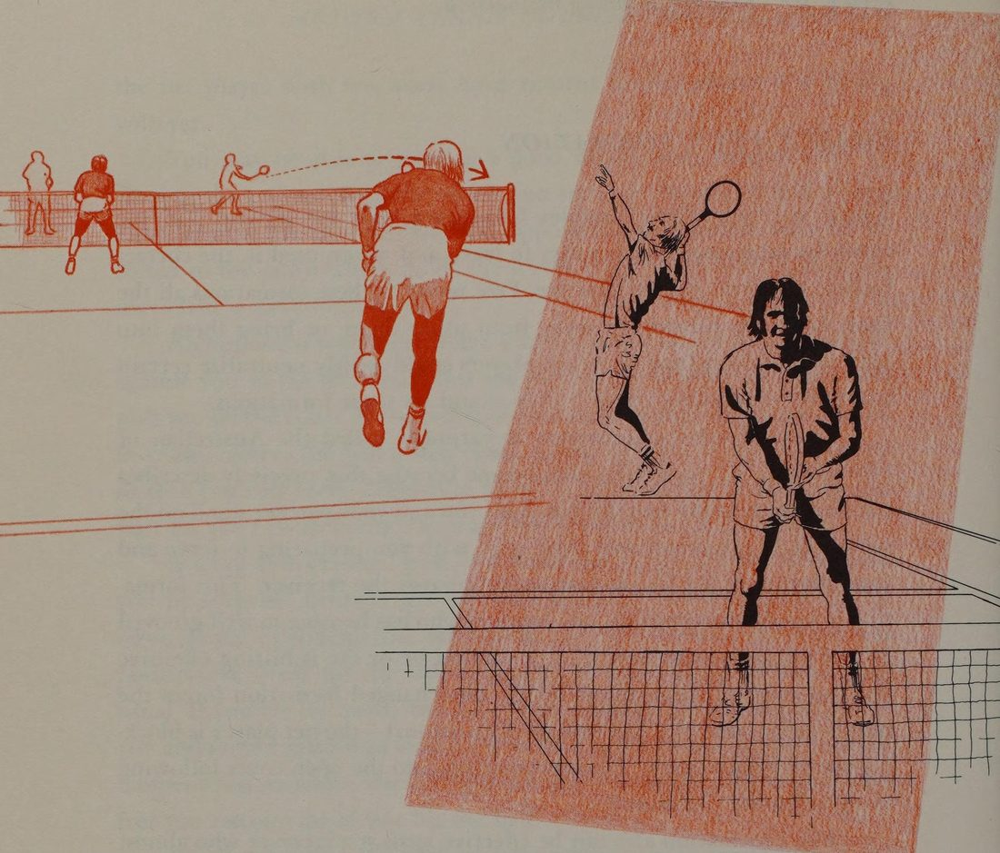
Bằng cách đứng ở vạch cuối sân, bạn buộc đối phương phải đánh vô-lê ở những độ sâu và góc độ khác nhau để ghi điểm, qua đó thay đổi lối đánh đã vào nếp của họ và có lẽ buộc họ mắc lỗi. Nếu họ cứ giữ bóng trong cuộc, bạn phải đánh những cú bóng cuối sân mạnh, một lần nữa để cố buộc họ mắc lỗi ở cú vô-lê, và phải lốp bóng, nhắm tới việc tiến lên lưới theo sau quả bóng bổng sâu hiệu quả đầu tiên của bạn.
By standing at the baseline, you force the opponents to volley at different depths and angles for their winners, thus changing their grooved pattern and perhaps forcing errors. Should they keep the ball in play, you must hit hard ground strokes, again to try to force volleying errors, and make lobs, looking to move up to net behind your first effectively deep lob.
ĐÁNH MÃI VÀO NHỮNG ĐIỂM YẾUHAMMER AWAY AT WEAKNESSES
Bằng cách tránh những điểm mạnh của một cặp đối phương, có lẽ bạn sẽ tự động khai thác được những điểm yếu của họ, nhưng có vài miếng đánh cụ thể đáng được nhấn mạnh.
By avoiding an opposing team’s strengths, you will probably be automatically exploiting their weaknesses, but there are several specific plays worth emphasizing.
Chẳng hạn, cú giao bóng hai dễ ăn là một trong những cú đánh dễ bị tổn thương nhất trong quần vợt, vậy mà vô số tay vợt ở trình độ câu lạc bộ vẫn thoát được với nó, bởi vì đối thủ của họ xử lý nó không đúng cách.
For instance, the patsy second serve is one of the most vulnerable shots in tennis, yet countless players at the club level manage to get away with it, because their opponents handle it improperly.
Không gì khiến một đội đỡ giao bóng bực bội hơn là việc một thành viên của đội mình bắn một quả bóng dễ ăn hoặc vào lưới hoặc văng ra tận đâu đó ngoài sân. Nó giống như ném tiền qua cửa sổ.
Nothing is more frustrating to a receiving team than for one of its members to drill an easy setup either into the net or off into the bleachers somewhere. It’s like throwing money away.
Một lý do khiến nhiều cú đỡ bóng dễ bị bỏ lỡ là việc người đỡ giao bóng không di chuyển vào trong ít nhất một hai bước cho cú giao bóng hai. Nếu bạn biết cú giao bóng ấy sẽ ngắn, hãy tự cho mình một lợi thế xuất phát để đánh nó cho đúng và ở vào vị trí để bước vào cú đánh một cách hoạt bát. Sự vội vàng tạo ra công sức uổng phí. Khi quả bóng thật sự trôi tới, hãy bước vào và đánh nó trước khi nó bắt đầu chùng xuống.
One reason many easy returns are missed is the receiver’s failure to move in at least a couple of steps for the second serve. If you know the serve is going to be short, give yourself a head start on playing it correctly and be in position to move into the shot smartly. Haste makes wasted effort. When the ball does float in, move in and hit it before it has begun to sag downward.
Một lý do khác khiến những người chơi câu lạc bộ gặp rắc rối với cú giao bóng hai dễ ăn là quả bóng tới chậm đến mức họ quên di chuyển chân, ngay cả khi họ đã di chuyển vào đúng vị trí sau cú giao bóng một. Cú đánh càng chậm, bạn càng phải có ý thức dồn trọng lượng ...lao hết mình vào đó, và để làm được điều đó bạn phải di chuyển bước chân.
Another reason club players have trouble with the patsy second serve is that the ball comes in so slowly they forget to move their feet even if they have moved into proper position following the first serve. The slower the shot, the more you have to consciously shift your weight into it, and to do that you must move your feet.
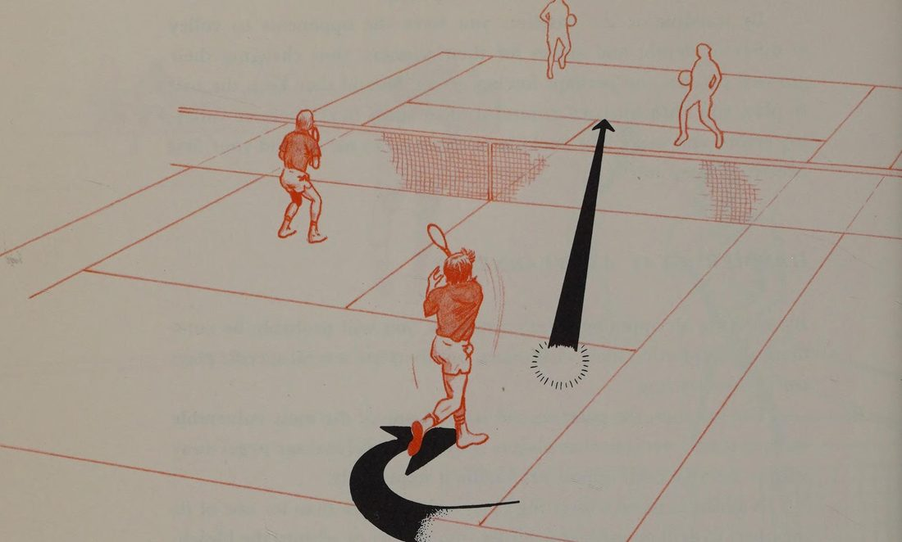
Cuối cùng, hãy luôn chọn một điểm để đánh bằng cú đỡ giao bóng của bạn trước một cú giao bóng hai ngon ăn. Nhiều tay vợt, nhận ra rằng mình đang có một quả bóng dễ ăn rõ ràng, đơn giản là nện bóng mạnh hết sức có thể và nghĩ rằng thế là xong việc. Quả bóng thường bay ra ngoài. Một điểm nhắm tốt là vạch giao bóng hoặc cách vạch giao bóng vài feet. Nhắm tốt vào bên trong sân theo cách này sẽ giữ bạn khỏi việc đánh quá mạnh mà vẫn cho phép bạn đỡ giao bóng một cách tấn công. Ngay cả khi cú đỡ bóng nảy sâu hẳn vào bên trong vạch cuối sân, nó cũng sẽ có tốc độ đến mức giữ được đối thủ trong thế phòng thủ.
Finally, always pick a spot to hit with your return of a duck second serve. Many players, realizing that they have an obvious setup, simply bash the ball as hard as they can and think that will do the job. The ball usually sails out. A good aiming-point is the service line or a few feet past the service line. Aiming well within the court in this manner will keep you from overhitting and still permit you to play the return aggressively. Even if the return bounces way inside the baseline, it will have such pace that it will keep the opponent on the defensive.
Nếu có một người giao bóng đặc biệt yếu trong đội đối phương, hãy chắc chắn rằng bạn và bạn đánh cặp của bạn dồn sức ép lên tay vợt ấy khi đỡ giao bóng. Hãy di chuyển vào lưới theo sau tất cả các cú đỡ bóng của bạn. Bẻ được game giao bóng ấy có thể là chìa khóa cho chiến thắng của bạn trong trận đấu, nên hãy nghiến răng xiết chặt. Và đừng quên đánh trúng bạn đánh cặp của người giao bóng đang ở lưới bằng vài cú đỡ bóng của bạn, nếu bạn có thể, để thêm dầu vào lửa và phá hủy tinh thần đồng đội của họ.
If there is a particularly weak server on the opposing team, make sure you and your partner put the heat on that player when receiving. Move in to net behind all your returns. Breaking that service may hold the key to your winning the match, so bear down. And don’t forget to nail the server’s partner at net with some of your returns, if you can, to add insult to injury and destroy their team morale.
Hãy theo dõi màn trình diễn giao bóng của chính bạn và quan sát xem kiểu giao bóng nào có vẻ gây cho đối phương nhiều rắc rối nhất. Đừng bám chặt vào những định kiến sẵn có của bạn về việc giao bóng nếu kết quả trong trận đấu dẫn tới những kết luận khác. Chẳng hạn, một số tay vợt đỡ bóng tốt hơn trước những cú giao bóng nhanh so với những cú giao bóng chậm hơn, cắt xoáy, hay xoáy xoáy ngang. Vậy nên, dù bạn có thể cảm thấy mình đang giao bóng tốt vì bóng vào sân và với tốc độ cao, nếu nó được trả lại một cách hiệu quả thì cảm giác tốt lành ấy của bạn cũng chẳng giúp được gì nhiều cho nỗ lực chung của đội. Do đó, hãy chuyển sang đánh với nhiều xoáy hơn — bạn có thể thắng một chuỗi điểm trước khi đối thủ của bạn điều chỉnh được bộ chân của họ cho phù hợp với cú giao bóng mới.
Keep track of your own serving performance and observe what types of serve appear to give opponents the most trouble. Don’t stick with your preconceived notions on serving if results in the match bear out different conclusions. For example, some players return better against fast serves than slower, sliced, or kick serves. So, although you may feel you are serving well because the ball is going in and at a good rate of speed, if it’s coming back effectively, that good feeling of yours isn’t going to help the team effort much. Therefore, switch to hitting with more spin—you may win a string of points before your opponent has adjusted his or her footwork to the new serve.
Trên hết, khi giao bóng trong đánh đôi, đừng bao giờ giao bóng hỏng hai lần (double-fault) trước người nhận bóng yếu hơn bên đối phương. Mỗi khi một đấu thủ đánh hỏng một cú đập trên đầu dễ dàng, bạn đang nắm thế tâm lý của người đó, và bạn cùng đồng đội phải tạo cơ hội để người đó đánh hỏng thêm một cú đập trên đầu nữa càng sớm càng tốt. Hãy nhớ, cú đập trên đầu — hơn bất kỳ cú đánh nào khác trong quần vợt — là một cú đánh của sự tự tin, và nếu thiếu tự tin thì rất dễ đánh hỏng ba bốn lần liên tiếp.
Above all, when serving in doubles, never double-fault against the weaker receiver on the other team. Any time a player misses an easy overhead, you have that player on the ropes emotionally, and you and your partner must give the player a chance to blow still another overhead as soon as you can. Remember, the overhead more than any other stroke in tennis, is a confidence shot—and without confidence it’s an easy shot to miss three or four times running.
Chiều cao, hay việc thiếu chiều cao, đôi khi là một điểm yếu mà bạn có thể khai thác trong quần vợt. Những tay vợt to lớn có thể khó bị vượt qua bằng bóng bổng hơn, nhưng phản xạ của họ thường chậm hơn một chút và do đó họ dễ bị tổn thương hơn trước những cú đánh nhắm thẳng vào họ ở lưới. Những tay vợt nhỏ con thường nhanh nhẹn hơn và bao quát sân tốt hơn, nhưng họ thường có thể bị tấn công bằng những quả bóng nảy cao, đặc biệt là về phía trái tay của họ.
Height, or lack of it, is sometimes a weakness you can exploit in tennis. Big players may be harder to pass with lobs, but their reflexes are usually a bit slower and they are therefore more vulnerable to shots hit right at them at net. Smaller players are usually quicker and cover the court better, but they often can be attacked with balls that bounce high, particularly to their backhand side.
Đôi khi một điểm yếu có thể được xây sẵn vào cách một cặp đánh đôi đảm nhận những thế đứng khác nhau trong suốt một game. Bất cứ khi nào đối phương lệch khỏi vị trí thông thường của họ, dù là khi giao bóng, đỡ giao bóng, hay chơi ở lưới, một hồi chuông nên reo lên trong đầu bạn để cảnh báo bạn về một sự sơ suất trong suy nghĩ hay một sự thay đổi chiến thuật từ phía họ, và về cách của bạn để thích nghi với hay khai thác sự thay đổi ấy.
Sometimes a weakness may be built into the way a doubles team assumes its various formations in the course of a game. Any time opponents deviate from their normal positions, in serving, receiving, or playing at net, a bell should go off in your head to alert you to a possible lapse in thinking or a change in strategy on their part, and to your means for adapting to or exploiting that change.
Nếu đối thủ đứng xê ra ngoài thêm một bước để giao bóng, bạn cũng xê ra ngoài thêm một bước để đỡ giao bóng. Nếu người lưới đã di chuyển vào sát lưới, hãy cân nhắc việc lốp bóng khi đỡ giao bóng. Nếu tay vợt ấy đã lùi ra xa hơn, hãy tạm gác phương án lốp bóng lại khi đỡ giao bóng. Nếu tay vợt ấy đã nhích thêm về phía giữa sân, hãy nghĩ tới việc đánh một cú vượt qua dọc biên — trừ khi bạn cảm thấy rằng đó chính là điều mà người lưới đang muốn bạn nghĩ tới.
If the opponent stands a step wider to serve, you move a step wider to receive. If the net player has moved in close to net, consider lobbing on the return. If the player has stepped farther back, shelve the lob alternative for the time being on the return. If the player has inched more toward center, think of hitting a passing shot down the line— unless you feel that that is what the net player is trying to get you to think.
CÁC BIẾN THỂ KHI ĐẤU VỚI NGƯỜI TAY TRÁIVARIATIONS FOR PLAYING LEFTIES
Dường như có một số lượng người thuận tay trái chơi quần vợt nhiều một cách bất cân xứng, nên hãy chắc chắn rằng bạn biết thử thách đặc biệt của việc đấu với người thuận tay trái, và rồi tích lũy chút kinh nghiệm trực tiếp đánh bóng với họ để người thuận tay trái không thể dùng sự mới lạ của mình mà gây bối rối và khai thác bạn.
There seem to be a disproportionate number of left-handers playing tennis, so make sure you know the special challenge of playing lefties and then get some direct experience of hitting with them so that lefties can’t use their novelty to confuse and exploit you.
Những chìa khóa để đấu với người thuận tay trái trong đánh đôi thì đơn giản rõ ràng.
The keys to playing lefties in doubles are straightforward.
Khi giao bóng cho một người thuận tay trái, bạn phải đảo ngược những vùng nhắm thông thường của mình, để có thể tấn công cú trái tay của tay vợt ấy. Nói cách khác, ở ô giao bóng thứ nhất, bạn phải hướng phần lớn các cú giao bóng của mình ra xa hai bên, chứ không phải vào giữa như bạn sẽ cố làm khi đối đầu với một người thuận tay phải. Và ở ô giao bóng thứ hai — nơi mà những người thuận tay trái thường chơi đánh đôi, để tận dụng được nhiều cú thuận tay hơn — bạn phải giao bóng vào giữa chứ không phải ra xa hai bên.
When serving to a left-hander, you must reverse your usual target areas, in order to attack the player’s backhand. In other words, in the first court you must direct the majority of your serves wide, and not down the center as you would attempt to do against a right-hander. And in the second court—which is where lefties will usually play doubles, to avail themselves of more forehands—you must serve down the center rather than wide.
Khi đỡ giao bóng, bạn phải sẵn sàng đón quả bóng cắt hoặc xoáy theo hướng ngược lại với điều bạn sẽ trông đợi ở cú giao bóng của một người thuận tay phải. Cú giao bóng cắt của một người thuận tay trái vào ô thứ hai đặc biệt hiệu quả, vì nó kéo người đỡ giao bóng ra khỏi sân. Vậy nên, khi đỡ một cú giao bóng thuận tay trái ở ô đó, hãy đứng gần biên dọc hơn một bước và sẵn sàng nhanh chóng hồi vị vào trong sân của bạn sau khi thực hiện cú đỡ bóng.
When receiving serve, you must be ready for the ball to slice or spin in the opposite direction from what you would expect on a righthander’s serve. A leftie’s slice serve to the second court is especially effective, because it pulls the receiver off the court. So, when returning a left-handed serve in that court, stand a step closer to the sideline and be prepared to quickly recover into your court after making the return.
Ở cả hai ô giao bóng, hãy sẵn sàng đánh những cú trái tay xa thân người hơn bình thường một chút. Và cho tới khi bạn khá quen với cú giao bóng đặc thù của người thuận tay trái, đừng cố di chuyển lên lưới theo sau cú đỡ bóng của bạn.
In both courts, be prepared to hit backhands that are somewhat farther from your body then usual. And until you’re quite used to the left-hander’s particular serve, don’t attempt to move into net following your return.
Khi người thuận tay trái ở lưới trong đánh đôi, hãy cố hết sức tránh cú vô-lê thuận tay của người ấy, vốn dễ tạo ra những cú đánh chéo góc rất nhọn. Hãy đánh vào giữa sân và bạn sẽ đánh vào bên trái tay của cả hai tay vợt, ngoại trừ một tình huống duy nhất trong đó người thuận tay trái chiếm ô giao bóng thứ nhất, khi giao bóng. Khi bạn đánh cặp của người thuận tay trái ấy giao bóng ở ô thứ hai, người thuận tay trái ấy dễ bị tổn thương trước cú vượt qua hoặc bóng bổng dọc biên.
When the left-hander is at net in doubles, do your best to avoid his or her forehand volley, which is likely to produce very sharply angled shots. Hit down the middle of the court and you will be hitting into the backhands of both players, with the exception of the one situation in which the leftie occupies the first court, for serving. When the leftie’s partner is serving in the second court, the leftie is vulnerable to the passing shot or lob down the line.
GIỮ KÍN CHIẾN THUẬT CỦA MÌNHKEEP YOUR GAME PLAN TO YOURSELVES
Trong quần vợt, mỗi thế tấn công đều có một thế phòng thủ tốt để đối phó, và vì thế, cho dù bạn và đồng đội có phát triển được bao nhiêu cú đánh và chiến thuật, sẽ luôn có một cặp đấu thủ có thể phản công — nhất là khi họ biết mình đang chống lại điều gì. Vì vậy đừng bao giờ cố ý tiết lộ chiến thuật của mình cho đối phương. Ở trình độ câu lạc bộ, những đối thủ thân thiện thường trao đổi với nhau những câu như "Hôm nay tôi sẽ thử thách cú đập trên đầu của anh đấy," hay "Coi chừng bên trái tay của anh nhé." Những lời như vậy thực ra lại chuẩn bị cho người chơi đánh những cú yếu của mình với sự tập trung cao hơn — và thường thành công hơn. Vậy nên đừng bàn chuyện cú đánh hay chiến thuật với đối thủ trong bất kỳ tình huống nào.
For every offense there is a good defense in tennis, and that’s why, no matter how many shots and tactics you and your partner are able to develop, there will always be a team that can fight back—especially if they know what they are fighting. So never deliberately reveal your game plan to opponents. Often at the club level friendly opponents will exchange remarks like, ‘I’m going to test your overhead today,’ or “Watch out on your backhand side.’’ Such remarks actually prepare players for hitting their weak shots with greater concentration—and often more success. So don’t talk strokes or strategy to opponents under any circumstances.
Trong lúc thi đấu thật sự, bạn tất yếu sẽ đưa vào hành động sự phân tích của mình về điểm mạnh và điểm yếu của đội đối phương. Nhưng bằng cách thỉnh thoảng đánh một cú đổi nhịp, đặc biệt ở cú giao bóng và cú đỡ giao bóng, bạn có thể che giấu kế hoạch tấn công/phòng thủ chính của mình ở một mức độ lớn hơn nhiều so với điều bạn có thể tưởng tượng. Và bạn sẽ ngạc nhiên khi thấy có bao nhiêu đội sẽ bị lúng túng bởi một miếng đánh có vẻ hiển nhiên như việc đứng giao bóng theo thế đứng chữ I.
In actual play, you will necessarily put into action your analysis of the opposing team’s strengths and weaknesses. But by playing the occasional change-of-pace shot, especially on serve and return of serve, you can obscure your main attack/defense plan to a far greater extent than you might expect. And you would be surprised at how many teams will be befuddled by a seemingly obvious ploy like standing to serve in the I-formation.
Hãy bám chắc vào kế hoạch thi đấu của bạn, nhưng rắc vào đó những động tác và cú đánh ngẫu nhiên đó đây, và đừng ngần ngại sáng tạo cũng như ứng biến, đặc biệt ở những điểm không then chốt. Sau tấm màn khói ấy, bạn sẽ kiên nhẫn tạc nên chiến thắng của mình.
Stick to your game plan, but sprinkle it with random moves and shots from time to time, and don’t hesitate to invent and improvise, especially on noncrucial points. Behind such a smokescreen you will be patiently carving out your victory.
CHƯƠNG 12 — Giành lợi thế chiến thắng
MỘT KHI BẠN ĐÃ HIỂU những cú đánh và miếng đánh cơ bản trong đánh đôi, và đã có trải nghiệm chơi với nhiều bạn đánh cặp khác nhau trước nhiều đội khác nhau, đến mức bạn chơi ở mức khá thành thạo và khá quen với một số điều có thể diễn ra không như ý — cùng những điều khác có thể diễn ra thuận lợi — thì có lẽ bạn sẽ trở thành một người mê đánh đôi cuồng nhiệt. Những giai đoạn đầu học đánh đôi thường đầy căng thẳng và bực bội, nhưng đến một lúc nào đó cánh cửa sẽ mở ra trước thử thách phong phú và đa dạng mà môn chơi này thực sự là như vậy. Đến lúc ấy, bạn sẽ không thể nào chơi đủ.
ONCE YOU UNDERSTAND the basic shots and ploys in doubles, and have had the experience of playing with a variety of partners against a variety of teams, so that you are reasonably competent in the game and reasonably familiar with some of the things that can go wrong —and others that can go right—you will probably become a doubles fanatic. The preliminary stages of learning doubles are often fraught with tension and frustration, but in time the doors will open to the rich and varying challenge that the game really is. By then you won’t be able to get enough of it.
Để tiếp tục tiến bộ trong môn chơi này sau cột mốc đó — nghĩa là thắng được nhiều trận hơn mức mà trình độ tự nhiên của bạn cho phép — bạn sẽ phải học cách thi đấu khôn ngoan và mãnh liệt hơn. Không nhằm đi sâu vào những bí ẩn của tinh thần cạnh tranh, chúng tôi muốn chỉ ra những kỹ thuật và hướng tiếp cận chính về thể lực và tinh thần mà theo chúng tôi có thể giúp mọi kiểu người chơi trở thành những đối thủ hiệu quả hơn trong đánh đôi.
To continue to make progress in the game after this point—that is, to win more matches than your natural level of play entitles you to— you will have to learn to compete more shrewdly and intensely. Without attempting to go into the mysteries of competitiveness, we would like to point out the main techniques and approaches to physical and mental fitness that we think can make all sorts of players more effective competitors in doubles.
MỔ XẺ SAU TRẬN ĐẤUPOSTMORTEMS ON MATCHES
Đừng để bất kỳ trận đánh đôi nào phai mờ trong ký ức cho đến khi bạn đã ít nhất có chút suy ngẫm về thành phần hai đội, những cú đánh và chiến thuật then chốt trong trận, và lý do vì sao một đội thắng còn đội kia thua. Hãy buộc mình rút ra ít nhất một kết luận từ những gì diễn ra trong trận.
Never let any doubles match fade in your memory until you have at least reflected somewhat on the composition of the two teams, the key shots and tactics during the match, and the reasons one team won and the other team lost. Force yourself to draw at least one conclusion from the events of the match.
Quá trình mổ xẻ sau trận này có thể đơn giản như việc ghi nhận rằng bạn không đưa được đủ nhiều cú giao bóng một vào sân, hoặc lẽ ra bạn phải tấn công một trong các đối thủ nhiều hơn ở cú đập bóng trên đầu, hoặc phe của bạn giữ vững nguyên tắc di chuyển như một đội tốt hơn phe đối phương. Bạn thậm chí có thể ghi lại các kết luận của mình vào một cuốn sổ sau mỗi trận, ít nhất cho đến khi lối quan sát có ý thức này trở thành một thói quen đã định hình. Bằng cách này, bạn sẽ dần dần xây dựng một danh mục thông tin về chính mình, về các kiểu đối thủ, và về bản chất của lối đánh đôi — những thứ sẽ trở nên vô cùng quý giá trong các trận đấu tương lai.
This postmortem process can be as simple as noting that you weren't getting enough of your first serves in, or one of your opponents should have been attacked more on the overhead, or your side upheld the principles of moving as a team better than the other side. You might even write down your conclusions in a notebook after every match, at least until this pattern of conscious observation is an established habit. In this manner, you will gradually build up a catalog of information about yourself, the types of opponents, and the nature of doubles itself that will prove invaluable in future matches.
Việc xem lại các cú đánh quần vợt của mình trên băng video đã được chứng minh là một kỹ thuật huấn luyện hiệu quả. Bạn cũng có thể thu lợi từ những “màn phát lại tức thì” các trận đánh đôi của mình, dưới nhiều hình thức khác nhau mà chúng tôi đã gợi ý.
Seeing one’s tennis strokes on videotape has proven to be an effective instructional technique. You can also profit by “instant replays” of your doubles matches, in the various forms we’ve suggested.
Hãy lôi cuốn bạn đánh cặp, hoặc thậm chí cả các đối thủ, vào một cuộc trò chuyện về trận đấu sau đó, nếu bạn có thể. Góc nhìn của người khác thường soi sáng những điều bạn đã bỏ qua hoặc hiểu sai. Nếu bạn có thể nhờ huấn luyện viên quần vợt chuyên nghiệp ở địa phương, hoặc một người chơi am hiểu nào khác, cho bạn một lời phê bình về trận đấu mà họ đã xem, hãy lắng tai nghe một cách chăm chú.
Involve your partner, or even your opponents, in a chat about the match afterward, if you can. Other views often shed light on matters you were ignoring or misunderstanding. If you can get your local tennis professional, or some other knowledgeable player, to give you a critique of a match he or she has watched, lend an attentive ear.
LUYỆN TẬPPRACTICE
Tập luyện tạo nên sự ổn định trong việc tạo cú đánh của bạn và giúp loại bỏ mọi điểm yếu trong lối chơi của bạn.
Practice builds consistency in your stroke-making and helps to eliminate any soft spots in your game.
Nó đưa lối chơi tổng thể của bạn lên một mức vững chắc và đáng tin cậy hơn. Năng khiếu bẩm sinh có thể đưa bạn qua bất kỳ bao nhiêu trận đấu. Nhưng trừ khi bạn chăm chỉ rèn luyện tất cả các cú đánh và cú bóng của mình, bạn có thể thấy rằng sự nghiệp quần vợt của mình rải rác những đỉnh cao ngoạn mục và những đáy sâu. Ngày này bạn có thể đánh mọi thứ hoàn hảo tuyệt đối. Ngày khác bạn lại xuống dốc không phanh. Và khi bạn bị ai đó đánh bại, ngay cả khi đó là người mà bạn từng liên tục thắng, điều đó làm lung lay sự tự tin của bạn.
It brings your overall play up to a level that is more solid and reliable. Natural ability may carry you through any number of matches. But, unless you studiously work on all your strokes and shots, you may find that your tennis career is dotted with spectacular highs and lows. One day you may hit everything absolutely perfectly. Another day you are at rock-bottom. And when you get killed by someone, even if it is someone you have consistently beaten before, it shakes your confidence.
Chỉ có tập luyện mới có thể phát triển lối chơi của bạn đến mức nó có ít đỉnh và ít vực hơn — và nhờ đó sự tự tin của bạn không còn lúc nào cũng lên xuống như yo-yo nữa.
Only practice can develop your game so that it has fewer peaks and valleys—and so that your confidence isn’t always on a yo-yo as a result.
Ở một mức độ nào đó, bạn có thể tập luyện các kỹ năng đánh đôi một mình, mặc dù với hầu hết người chơi thì đây là một công việc tẻ nhạt, khổ hạnh. Tuy vậy, vẫn có nhiều điều đáng nói về việc rèn luyện cú giao bóng của bạn một mình, miễn là bạn dồn toàn bộ sự tập trung cho việc đó, và giữ cho các buổi tập ngắn. Hãy tập trung vào động tác tung bóng, vào việc giữ cho động tác uyển chuyển, và vào việc đánh bóng tới những mục tiêu cụ thể.
You can practice doubles skills alone to a degree, though for most players this is a boring, monkish enterprise. Yet there is much to be said for working on your serve solitarily, provided you give your entire concentration to the matter, and keep the sessions short. Focus on the toss, on staying fluid, and on hitting to specific targets.
Bạn có thể luyện cú vô-lê của mình một chút bằng cách đập bóng vào tường. Hãy đứng đủ xa để mô phỏng khoảng cách bạn cần cho một cú vô-lê đầu tiên, và cố gắng đón bóng ở phía trước cơ thể mình.
You can work a bit on your volley by hitting against a wall. Stand far enough away so that you are simulating the range you would need for a first volley, and strive to meet the ball in front of yourself.
Cú vô-lê của bạn cũng sẽ trở nên cứng cáp hơn nếu bạn rèn luyện cổ tay mạnh lên bằng cách bóp một quả bóng, hoặc một dụng cụ tập tương tự, theo cách truyền đời của những tay vợt nghiện rèn luyện cứng đầu.
Your volley stroke will also firm up if you work on strengthening your wrists by squeezing a ball, or some similar exercise device, in the age-old manner of determined tennis jocks.
Một buổi tập ngắn với một người chơi khác — lý tưởng nhất là người đồng đội đánh đôi quen thuộc của bạn — sẽ mang lại buổi tập luyện thú vị hơn nhiều. Hãy chơi theo các vạch đánh đôi trên sân và luân phiên luyện giao bóng và trả giao bóng như thể có đối thủ đang đứng ở lưới. Nhớ đổi sân — và cả đổi bên, nếu bạn chơi ngoài trời, để tận dụng triệt để mọi điều kiện gió và nắng tự nhiên từ cả hai bên.
A short session with another player—ideally your regular doubles partner—makes for a far more enjoyable workout. Play to the doubles lines on the court and alternate practicing serves and service returns as though there were opponents positioned at net. Be sure to switch courts—and also to switch sides, if you’re playing outdoors, to take full advantage of the range of natural wind and sun conditions from both sides.
Hai bạn có thể cùng lúc tập cả bóng bổng lẫn đập bóng trên đầu. Thực tế, công việc này có thể mang lại lợi ích cao hơn bất kỳ hình thức tập luyện nào khác, bởi vì có lẽ bạn dành ít sự chú ý cho những cú đánh này hơn bất kỳ cú nào khác. Và trong tập luyện, hai người chơi có thể phát triển cú bóng bổng và cú đập bóng trên đầu cho nhau một cách hết sức tự nhiên.
You can both practice lobs and overheads at the same time. In fact, this work may yield higher dividends than any other form of practice, since you probably give less attention to these strokes than any other. And two players can develop each other’s lobs and overheads quite naturally in practice.
Cuối cùng, bạn có thể tập vô-lê. Hãy đứng trong hai ô giao bóng đối diện nhau và tập trung vào việc giữ bóng trong cuộc chứ không phải nhắm tới những cú ăn điểm trực tiếp. Điều đó sẽ xây dựng khả năng kiểm soát vợt của bạn và khả năng đi từ bên này sang bên kia. Bạn có thể chơi những game dựa trên bài tập “quần vợt tí hon” này, giao bóng từ dưới và rèn luyện các cú vô-lê cùng bán vô-lê của bạn, phát triển cảm giác bóng và tinh chỉnh phản xạ của bạn ở lưới.
Finally, you can practice volleying. Stand in opposing service boxes and concentrate on keeping the ball in play rather than going for winners. That will build your racket control and your ability to go from one side to the other. You can play games on the basis of this “minitennis” drill, serving underhanded and working on your volleys and half-volleys, developing your touch and tuning up your reflexes at the net.
Một buổi tập nửa giờ, chia thành các đoạn mười phút dành cho đỡ giao bóng, bóng bổng-đập bóng trên đầu, và vô-lê, là một cách tuyệt vời để bạn và bạn đánh cặp thường xuyên của mình ôn luyện lại kỹ năng tạo cú đánh trong đánh đôi.
A half-hour practice session devoted in ten-minute segments to serve-return, lob-overhead, and volleys, is great way for you and your regular partner to brush up on doubles shot-making.
RÈN LUYỆN THỂ LỰCPHYSICAL CONDITIONING
Lối đánh đôi mà chúng tôi đã cố gắng truyền đạt trong cuốn sách này nhằm phát huy sức mạnh và tốc độ tới mức tốt nhất trong khả năng của bạn, tương ứng với trình độ chơi mà bạn ưa thích. Đây không phải là một bài tập khắc nghiệt như đánh đơn, nhưng với cách chơi mà chúng tôi đã gợi ý cho bạn, môn chơi này vẫn đòi hỏi một mức độ thể lực sung mãn nhất định, tốc độ phản xạ, và độ săn chắc cơ bắp tốt. Vậy nên vấn đề rút lại thành: bạn sẵn sàng rèn luyện bản thân đến đâu để chơi được lối đánh đôi hay nhất có thể.
The doubles game that we have tried to communicate in this book attempts to bring out power and speed to the best of your ability for the level of play you enjoy. It is not as rigorous an exercise as singles but, as we have suggested you play it, the game still demands a certain level of physical readiness, speed of reflex, and good muscle tone. So it comes down to a question of how much you are prepared to build yourself up to play the best doubles you can.
Với hầu hết người chơi, việc chơi quần vợt hai hoặc ba lần một tuần đã là toàn bộ chương trình rèn luyện thể lực của họ. Họ không có thời gian hay ý muốn làm thêm bất cứ điều gì khác để nâng cao mức độ thể lực chung của mình.
For most players, a game of tennis two or three times a week comprises their entire fitness program. They do not have the time or the inclination to do anything else to raise the level of their general fitness.
Việc rèn luyện thêm sẽ mài giũa lối đánh đôi của bạn nếu bạn có đủ gan dạ và khát khao để làm. Và chắc chắn nó sẽ cải thiện tình trạng sức khỏe chung của bạn. Điều đặc biệt đáng cân nhắc nếu mức năng lượng của bạn — và do đó là chất lượng lối chơi — tụt giảm mạnh trong các trận đánh đôi mà bạn đang chơi hiện tại. Khi bạn mệt, giao bóng trở thành một việc cực nhọc và ba cú đập bóng trên đầu liên tiếp gần như hạ gục bạn. Bạn bắt đầu đứng chôn chân khi đỡ giao bóng và đánh bóng bằng chân sau. Bạn “hy vọng” những cú bóng bổng bay ra ngoài thay vì lùi lại để đón chúng. Bạn cần có được một thể trạng tốt hơn.
Additional work will sharpen your doubles play if you have the gumption and desire for it. And certainly it will improve your general well-being. It is particularly worth considering if your energy level— and thus quality of play—drops sharply in the doubles matches you are playing at present. When you are tired, serving becomes a chore and three overheads in a row nearly benches you. You begin to stand flatfooted on returns and to hit off your back foot. You “hope” lobs out rather than scampering back to field them. You need to get in better shape.
Chạy bộ hoặc chạy nhẹ giúp xây dựng đôi chân và kéo dài sức bền của bạn, nhưng giống như những buổi tập một mình, nó quá tẻ nhạt khiến nhiều người chơi không thể duy trì đều đặn.
Running or jogging builds up your legs and stretches your endurance but, like solo practice sessions, it’s too boring for many players to keep up on any regular basis.
Một cách tiếp cận thú vị hơn có thể là kết hợp nhảy dây và chạy nước rút. Một chương trình nhảy dây, có thể thực hiện ở bất cứ đâu, xây dựng đôi chân và cánh tay, và có thêm một ưu điểm đối với quần vợt là khiến bạn nhanh nhẹn hơn trên đôi chân của mình. Chạy nước rút, với liều lượng vừa phải, chuẩn bị cho bạn những đợt bùng nổ tốc độ ngắn mà đánh đôi quần vợt đòi hỏi — khi lên lưới sau cú giao bóng của bạn, khi lao vào sau những cú đỡ giao bóng táo bạo, hoặc cho những tình huống khẩn cấp khác do cú bóng bổng hoặc cú bỏ nhỏ khéo léo của đối thủ nào đó gây ra. Những đợt bùng nổ tốc độ ngắn ngốn rất nhiều năng lượng và chạy nhẹ nhàng thông thường sẽ không trang bị cho bạn những thứ đó.
A more interesting approach might be a combination of skipping rope and running wind sprints. A program of skipping rope, which can be done anywhere, builds up the legs and arms, and has the additional merit for tennis of making you quicker on your feet. Running wind sprints, in moderation, prepares you for the short bursts of speed that tennis doubles demands, in coming to net following your serve, in rushing in after aggressive returns, or for other emergencies occasioned by some opponent's skillful lob or drop shot. Quick bursts of speed take a lot of energy and casual jogging will not equip you for them.
Các bài tập xây dựng cơ bụng có thể khiến bạn vững vàng hơn một cách đáng ngạc nhiên khi thực hiện các cú đánh. Bụng là trung tâm cơ thể bạn và theo một số cách thực sự điều khiển toàn bộ cơ thể bạn. Mọi động tác của bạn trên sân quần vợt đều hoặc được khởi phát hoặc được kiểm soát bởi bụng. Nếu bụng bạn không rắn chắc, bạn sẽ không thể vươn người hiệu quả cho cú giao bóng, và bạn sẽ không di chuyển từ bên này sang bên kia với Đánh đôi không dành cho người lười biếng hay hờ hững. Nếu bạn muốn chơi hết khả năng của mình, bạn thực sự phải đưa cơ thể vào trạng thái sung sức trước cho những nỗ lực cần thiết. Smith khuyên nên chạy bộ, chạy nước rút, nhảy dây và nâng chân (cho bụng) để tối đa hóa tiềm năng đánh đôi của bạn.
Exercises to build your stomach muscles can make you surprisingly more solid in your stroke-making. The stomach is the center of your body and in certain ways really controls your entire body. All your movements on the tennis court are either initiated or controlled by the stomach. If your stomach isn’t firm, you will not be able to stretch effectively for your serve, and you won’t move from side to the side with as Doubles is not for the lazy or indifferent. If you want to play to the best of your ability, you really must first get your body in shape for the necessary exertions. Smith recommends jogging, wind sprints, rope-skipping, and leg lifts (for the stomach) for maximizing your doubles potential.
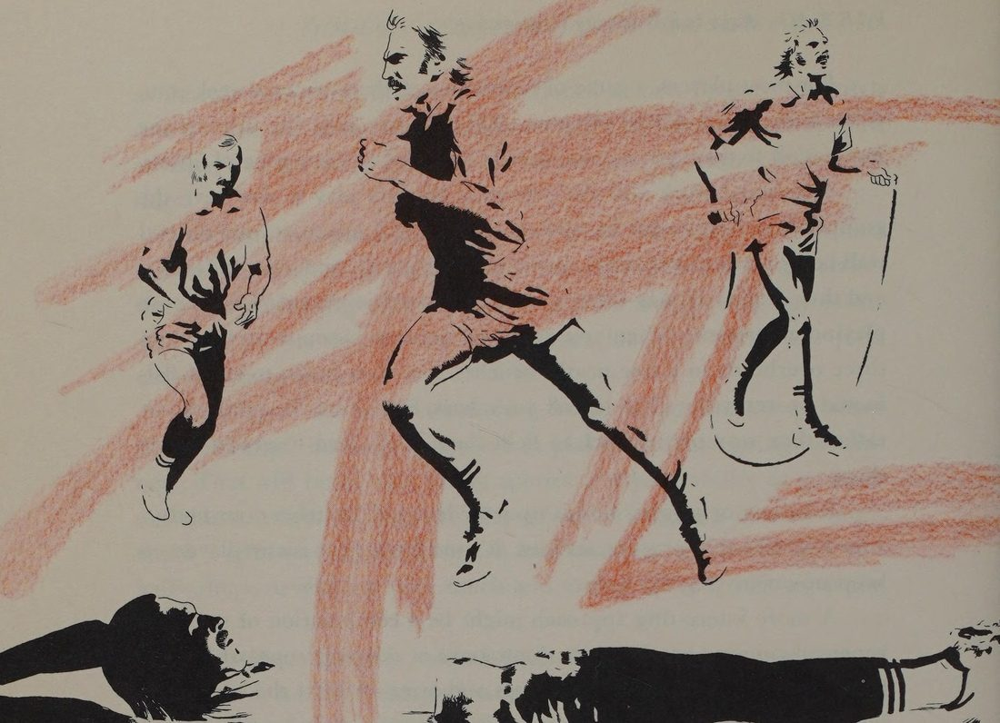
nhiều uy lực như vậy. Cuối cùng, bạn sẽ không đánh xuyên qua các cú đánh của mình một cách dứt khoát như trước nữa. Các động tác gập bụng và nâng chân với nhiều hình thức khác nhau là lý tưởng để xây dựng cơ bụng.
much authority. Finally, you won’t hit through your shots as firmly. Sit-ups and leg lifts in a variety of forms are ideal for building up the stomach muscles.
Nhân đây, một lợi ích cuối cùng của vùng bụng khỏe hơn là có một tấm lưng khỏe hơn. Hầu hết những người có lối sống ngồi nhiều — vì công việc hay vì thú vui — dần dần mất đi sức mạnh và độ dẻo dai ở các cơ vùng lưng dưới. Bạn càng lớn tuổi, một vùng lưng dưới yếu càng có thể cản trở chuyển động của bạn và làm hỏng niềm vui của bạn. Hãy giữ cho cơ bụng của bạn ở trạng thái tốt và chúng sẽ có thể đảm nhận một phần công việc liên quan đến việc cúi người, chạy, và vung vợt, nhờ đó bạn sẽ ít gây căng thẳng hơn cho các cơ lưng của mình.
A final benefit of a stronger stomach by the way, is a stronger back. Most people who lead sit-down lives—for work or pleasure—gradually lose strength and elasticity in their lower back muscles. The older you get, the more a weak lower back can inhibit your movements and spoil your fun. Keep your stomach muscles in good shape and they’ll be able to do some of the work involved in bending, running, and swinging, and so you'll put less strain on your back muscles.
CHUẨN BỊ TRƯỚC TRẬNPREMATCH PREPARATION
Hầu hết những người chơi ở câu lạc bộ chỉ khởi động cho một trận đấu bằng cánh tay đánh bóng của mình. Phần còn lại của cơ thể vẫn lạnh và căng. Kết quả là, họ có thể không thực sự chơi với các cơ bắp đã được làm nóng đúng mức cho đến khi trận đấu đã vào sâu. Điều đó nghĩa là họ không tạo cú đánh hay di chuyển hết khả năng của mình.
Most club players warm up for a match with just their hitting arm. The rest of the body stays cold and tight. As a result, they may not really play with properly loosened muscles until well into the match. That means they’re not stroking or moving to the best of their ability.
Việc khởi động giãn cơ trước trận đấu cũng là một khoản đầu tư thời gian tương đối nhỏ để đổi lấy sự bảo vệ khỏi những căng cơ và chấn thương khác mà nó mang lại. Đây là một chuỗi bài tập giãn cơ có thể hoàn thành trong 10 phút — chắc chắn không phải quá nhiều thời gian ngay cả với một nhà quản lý bận rộn nhất. Bạn sẽ cảm thấy được bôi trơn, dầu mỡ và sẵn sàng ra sân sau khi làm xong chúng. Hãy chạy vòng quanh sân ba lần, rồi thực hiện như sau (và như được minh họa ở các trang tiếp theo):
Limbering up before a match is also a relatively slight investment in time for the protection against strains and other injuries that it provides. Here’s a routine of stretching exercises that can be accomplished in 10 minutes—surely not too much time for even the busiest executive. You'll feel greased and oiled and ready to go after you’ve done them. Jog around the court three times, then perform as follows (and as illustrated on next pages):
1. Xoay đầu 360° để làm mềm các cơ cổ. Cả hai chiều, mỗi chiều nửa tá lần.
1. Rotate head 360° to limber up the neck muscles. Both ways, a half-dozen times each way.
2. Xoay các cơ vai trong một phút.
2. Rotate shoulder muscles for a minute.
3. Xoay hông trong một phút.
3. Rotate hips for a minute.
4. Vung tay thành vòng như cánh quạt cho đến khi hai bàn tay tê rần.
4. Swing arms around in windmill fashion until hands tingle.
Dù bạn chơi đánh đôi thường xuyên hay chỉ thỉnh thoảng, hãy chắc chắn rằng bạn dành 10 đến 15 phút để giãn cơ trước mỗi trận đấu, để các cơ được bôi trơn đúng mức và để tránh những căng cơ cũng như bong gân có thể xảy ra. Lutz giữ cho mọi thứ được mềm dẻo bằng cách tuân theo một giáo trình giãn cơ đơn giản trước mỗi trận đấu hoặc mỗi buổi luyện tập.
Vhether you're playing doubles on an ccasional or a regular basis, make sure ou devote ro to 15 minutes to stretchng your muscles before every match, o get them properly oiled and to avoid ossible strains and sprains. Lutz keeps hings loose by following a simple tretching regimen before every match r+ workout.
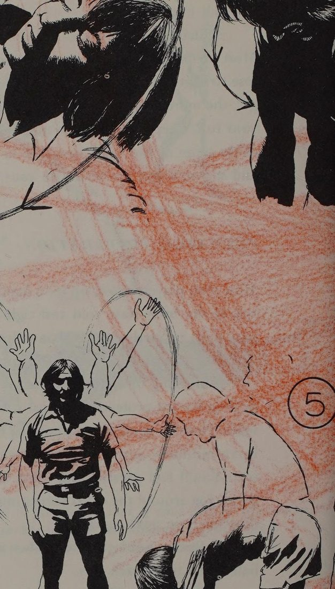
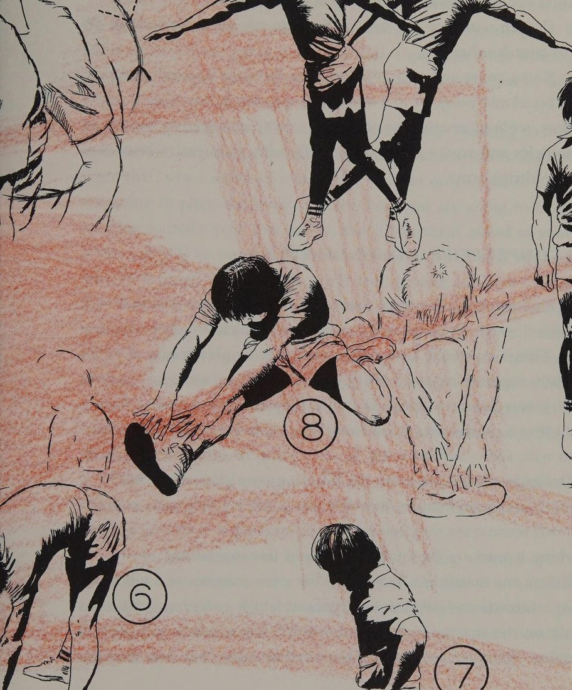
5. Đứng với hai bàn chân khép lại và vươn tay chạm tới các ngón chân. Đừng gắng sức quá để chạm được các ngón chân, cũng đừng “‘nảy’‘” người lên xuống. Giữ tư thế trong vài giây, rồi lặp lại.
5. Stand with feet together and reach for toes. Don’t strain to touch toes, or “‘bounce’’ your body. Hold for a few seconds, then repeat.
6. Đứng với hai bàn chân dang rộng và vươn tay chạm xuống mặt đất. Lần này bạn đang giãn các cơ lớn ở lưng và đùi trên.
6. Stand with feet apart and reach for ground. This time you're stretching the big muscles in your back and upper legs.
7. Ngồi xổm với một chân co lại và chân kia duỗi ra. Ngồi xổm theo chiều ngược lại để giãn chân còn lại.
7. Crouch with one leg bent and other extended. Crouch in reverse to stretch other leg.
8. Ngồi trên sân, co một chân vào và giãn cơ gân kheo một lần nữa. 9. Đứng lên và nhảy bằng các ngón chân để làm dẻo cơ bắp chân ở phần dưới chân.
8. Sit on court and tuck one leg in and stretch hamstrings again. g. Stand and jump off toes to flex calf muscles in lower leg.
Đến giờ, mà không bị hụt hơi, bạn đã giãn được tất cả các cơ của mình và bạn sẵn sàng đánh bóng bằng toàn bộ cơ thể, chứ không chỉ bằng cánh tay đánh bóng của mình.
Now, without getting out of breath, you’ve managed to stretch all your muscles and you’re ready to hit balls with your entire body, not just your hitting arm.
TÂM LÝ THI ĐẤUTHE COMPETITIVE FRAME OF MIND
Ở cấp độ câu lạc bộ, phải nỗ lực nhiều hơn một chút mới có thể tự đưa mình vào tâm thế tâm lý hay cảm xúc để chơi thứ quần vợt chiến thắng. Điều này đặc biệt đúng khi bạn bắt đầu chơi với những đội có năng lực tự nhiên ngang bằng hoặc nhỉnh hơn một chút. Bạn sẽ bắt đầu cảm thấy rằng thể lực tinh thần trước trận đấu cũng quan trọng không kém gì thể lực thể chất. Thể lực tinh thần, trong ngữ cảnh hiện tại, có thể được định nghĩa là một ý chí chiến thắng không chút ngần ngại, và một sự ngoan cố trong việc cố gắng thực hiện ý chí đó.
On the club level, it takes more than a casual effort to put yourself into the psychological or emotional stance from which to play winning tennis. ‘This is especially true when you begin to play teams of equal or slightly superior natural ability. It will begin to seem to you that mental fitness before a match is just as important as physical fitness. Mental fitness, in the present context, may be defined as an unabashed will to win, and a stubbornness in attempting to carry out that will.
Những người chơi bình thường có thể không thể chỉnh đốn bản thân trước một trận lớn như những võ sĩ quyền anh, nhưng có nhiều kỹ thuật tinh thần/cảm xúc đơn giản mà họ có thể vận dụng để tạo nên một “ý chí chiến thắng” và để khiến nó phát huy tác dụng trên sân. Đây là một vài gợi ý . . .
Ordinary players may not be able to groom themselves before a big match, like prizefighters, but there are a variety of simple mental/ emotional techniques they can employ in creating a “will to win” and in making it work on the court. Here are a few suggestions . . .
Trước bất kỳ trận đấu nào, hãy ở một mình vài phút và gạt bỏ những xao nhãng trong ngày — mọi lo lắng về công việc và gia đình — và tập trung chú ý vào trận đấu sắp tới. Hãy hình thành chiến thuật bạn dự định dùng trước đội đối phương, rồi hình dung ra việc thực hiện chiến thuật đó.
Before any match, get by yourself for a few minutes and block out the day’s distractions—all your business and family concerns—and focus intently on the upcoming match. Formulate the strategy you plan to use against the other team, and then visualize acting out that strategy.
Trong trí tưởng tượng của mình, hãy hình dung bạn đang giao bóng cho những đối thủ cụ thể, tiến lên lưới sau cú giao bóng, và mọi chiến thuật khác mà bạn sẽ áp dụng. Hãy hình dung bạn đang chơi hết khả năng của mình.
In your mind’s eye, see yourself serving to your particular opponents, coming in after a serve, and all the other tactics you will employ. See yourself playing to the best of your ability.
Một khi trận đấu bắt đầu, hãy chuyên tâm vào việc thực hiện những chiến thuật bạn đã vạch ra từ trước. Hãy bám chắc vào kế hoạch chơi của bạn. Nếu bạn biết mình sẽ làm gì, bạn sẽ không tự hỏi các lựa chọn của mình là gì khi bạn bước vào một điểm quan trọng. Bạn sẽ không hồi hộp hay tự nghi ngờ bản thân, và bạn sẽ đánh được những cú bóng tốt hơn.
Once the match gets underway, apply yourself to the execution of the tactics you have already devised. Stick to your game plan. If you know what you are going to do, you won't question what your options are when you get to a big point. You won’t get nervous or question yourself, and you'll hit better shots.
Trong trận đấu, hãy luôn cố gắng giới hạn suy nghĩ của bạn vào điểm đang diễn ra, và vào những cú bóng trong điểm đó. Bạn có thể nghĩ xa về phía trước theo nghĩa là, chẳng hạn khi giao bóng, bạn không chỉ nghĩ về việc mình sẽ đặt cú giao bóng ở đâu, mà còn về việc mình sẽ di chuyển vào vị trí thế nào để thực hiện cú vô-lê đầu tiên. Nhưng nếu bạn nghĩ xa tới cú giao bóng tiếp theo của mình, bạn sẽ lãng phí nỗ lực tinh thần và cảm xúc quý giá. Nếu bạn rời tâm trí khỏi điểm đang diễn ra, bạn sẽ có xu hướng rời mắt khỏi quả bóng.
During the match, always try to confine your thinking to the point at hand, and to the shots within that point. You may think ahead in the sense that, when serving for example, you not only think of where you are going to place the serve, but also how you are going to move into position to make your first volley. But if you think ahead to your next serve, you will be wasting valuable mental and emotional effort. If you take your mind off the point, you'll tend to take your eye off the ball.
Nếu bạn bị dẫn trước trong một trận đấu, bạn phải chống lại cám dỗ chơi thận trọng hơn — cố gắng đến mức tạo cho đối thủ những cú bóng dễ đánh chỉ để giữ được từng điểm. Khi bạn đang thua, bạn không thể chờ đội đối phương mắc sai lầm. Bạn phải buộc họ mắc sai lầm thông qua việc kiên nhẫn áp dụng chiến thuật chính của mình, hoặc bằng cách đưa vào chiến thuật thay thế nếu bạn đã quyết định gạt bỏ chiến thuật số 1 để tấn công.
If you fall behind during a match, you must resist the temptation to start to play more cautiously—trying so hard to stay in each point that you give the opponent easy shots to play. When you're losing, you can’t wait for the other team to make the mistakes. You must force the mistakes through patient application of your main strategy, or by bringing in your alternate strategy if you have decided to scrap the No. attack.
Điều tồi tệ nhất bạn có thể làm khi đang bị dẫn trước là bỏ cuộc hoặc tưởng tượng rằng những khó khăn hiện tại của bạn là đóng góp riêng của bạn đánh cặp của bạn.
The worst thing you can do when you're behind is to give up or to imagine your present difficulties are the unique contribution of your playing partner.
Nếu bạn tạo được thế dẫn điểm ấn tượng trong một trận, bạn phải chống lại cám dỗ ngồi nghỉ trên vinh quang của mình. Bạn thường có thể cảm thấy như đang dẫn trước khá xa trong khi thực tế chỉ một lần bẻ giao bóng là tất cả những gì ngăn cách bạn với đối thủ. Quá nhiều người chơi đánh mất lợi thế dẫn điểm vì họ bắt đầu coi đó là điều đương nhiên và đánh bóng cẩu thả hơn, hoặc chuyển sang một chiến thuật khác. Nếu bạn tình cờ tìm ra một chiến thuật mang lại chiến thắng, bạn phải tiếp tục gây áp lực ở nơi quan trọng nhất — đánh mãi vào những điểm yếu đã giúp bạn dẫn điểm ngay từ đầu. Đừng thử những cú đánh mới mà không có lý do chính đáng.
If you accumulate an impressive lead during a match, you must resist the temptation to rest on your laurels. Often you may feel you are well ahead when in fact a single service break is all that separates you from your opponents. Too many players lose a lead because they begin to take it for granted and start hitting more casually, or in tune with a different strategy. If you have happened on a winning strategy, you must continue to apply the pressure where it counts—pound away at the weaknesses that gave you the lead in the first place. Don't try new shots without a good reason.
Hãy chuẩn bị tinh thần cho những bất hạnh bất ngờ, bởi vì chúng sẽ đến — nếu không phải trong trận này thì trong trận kế tiếp. Và khi chúng đến, nếu bạn không sẵn sàng về mặt tâm lý, chúng có thể khiến cảm xúc của bạn bay loạn và phá hủy hoàn toàn sự tập trung cũng như làm hỏng kỹ thuật của bạn.
Brace yourself for the unexpected misfortune, because it will come, if not in this match, then in the next. And when it comes, and if you are not ready for it psychologically, it can set your emotions flying and totally disrupt your concentration and foul up your technique.
Một trong những ví dụ phổ biến nhất về bất hạnh bất ngờ trên đường đấu là một pha gọi bóng sai của trọng tài vạch. Dường như trong quần vợt thi đấu giải, khi bạn chạm tới một điểm then chốt trong trận, bạn nhận ra rằng không chỉ các tay vợt đang run tay, mà cả những trọng tài vạch cũng vậy — đúng lúc bạn không muốn họ như thế. Một pha gọi sai trong loạt tie-break, tất nhiên, có thể thay đổi hoàn toàn cục diện của một trận đấu.
One of the most common examples of unexpected misfortune on the circuit is a bad line call. It seems that in tournament tennis, when. you reach a critical point in a match, you find that not only are the players clutching, but so are the linesmen—exactly when you don’t want them to. One bad call in a tiebreaker, of course, can completely change the course of a match.
Những người chơi cuối tuần, tất nhiên, không có một đội trọng tài vạch, nhưng những pha gọi sai của đối thủ có thể làm bạn bối rối cũng không kém. Và còn những quả bóng chạm dây lưới hoặc những cú đánh bằng gỗ của đối thủ lăn vào để ăn điểm nữa. Tất cả những mẩu xui xẻo này bạn phải học cách chấp nhận, bởi vì nếu bạn bắt đầu cảm thấy mình là nạn nhân, về mặt tâm lý bạn sẽ bắt đầu chơi trong thế phản đối, và do đó không còn dốc toàn lực nữa.
Weekend players, of course, don’t use a team of linesmen, but bad calls by your opponents may rattle you just as much. And there are the net cord balls or wood shots by the opponent that trickle in for winning points, too. All of these bits of bad luck you must learn to countenance, because if you begin to feel victimized, you will start playing under protest, psychologically, and thereby cease to give your all.
Ngày nay, tinh thần cạnh tranh thường là yếu tố quyết định duy nhất trong các trận đấu giữa những tay vợt hàng đầu. Song song với một sự phát triển đã xảy ra trước đó trong môn golf chuyên nghiệp, ngày nay trong quần vợt có hàng tá tay vợt có năng lực và tài năng gần như ngang bằng nhau. Nhiều năm trước đây có một khoảng cách đáng kể giữa tài năng ở hàng đầu — chẳng hạn 10 tay vợt xếp hạng cao nhất ở bất kỳ thời điểm nào — và phần còn lại của lực lượng. Ngày nay độ sâu của tài năng lớn đến mức bất kỳ tay vợt nào hiện đang trong top 10 đều có thể bị hạ gục vào bất kỳ ngày nào bởi bất kỳ ai trong số hàng tá tay vợt ở phần còn lại của lực lượng. Người thắng thường là người có ý chí và khát khao chiến thắng lớn hơn.
Competitiveness is often the sole deciding factor in matches between top players today. Paralleling a development that occurred earlier in professional golf, today in tennis there are dozens of players of roughly equal capability and talent. Years ago there was a considerable disparity between the talent at the top—say the top 10 ranked players at any given time—and the rest of the field. Today there is such depth of talent that any player currently in the top 10 can be knocked off on any given day by any one of dozens of players in the rest of the field. The one who wins is usually the one with the greater will and desire to win.
Những người chiến thắng được tạo nên, chứ không phải bẩm sinh, và điều đó có lẽ đúng ở cấp độ câu lạc bộ trong quần vợt cũng như trên đường đấu chuyên nghiệp. Tinh thần cạnh tranh gan góc mà đôi khi người ta gắn với những tay vợt như Billie Jean King hay Jimmy Connors tương phản rõ rệt với triết lý “thắng-rồi-để-người-khác-thắng” trên sân của những tay vợt như Evonne Goolagong Cawley, hay Vijay Amritraj. Và đó phần lớn là một trạng thái tâm lý tự áp đặt mà những người chơi bình thường hoặc có hoặc không có.
Winners are made, not born, and that is probably as true at the club level in tennis as it is out on the circuit. The gritty competitiveness that one associates at times with players like Billie Jean King or Jimmy Connors, contrasts sharply with the “win-and-let-win” philosophy on the court of players like Evonne Goolagong Cawley, say, or Vijay Amritraj. And it is largely a self-imposed psychological condition that ordinary players have or have not, too.
Bởi vì ngày nay có một loạt đối thủ dồn dập đến vậy, tràn đầy tự tin và sung sức đến vậy, nên có vẻ như thật sự chưa đủ chỉ để được phú cho những tài năng bẩm sinh tuyệt vời — như Evonne và Vijay không thể phủ nhận là có — để thắng một cách nhất quán. Cần có sự thành thạo ở một tầng bậc khác để chiến thắng. Với ngày càng nhiều người mới chơi quần vợt hiện nay, sự thành thạo như vậy cũng đang trở nên quan trọng hơn ở những người chơi bình thường.
Because today there is such a barrage of competitors so highly charged with confidence and vigor, it seems that it is really not enough to be greatly gifted with natural talents—as Evonne and Vijay undeniably are—to win consistently. Adeptness on another level is needed to win. With so many new people taking up tennis today, the same adeptness is becoming more important among ordinary players, too.
Sự kết hợp giữa tài năng bẩm sinh và ý chí chiến thắng thực sự là điều tạo nên một nhà vô địch vĩ đại. Có lẽ trong tất cả các nhà vô địch quần vợt những năm gần đây, không ai thể hiện sự nở rộ vĩ đại của cả hai phẩm chất này hơn Pancho Gonzalez.
The combination of natural talents and will to win is really what produces a great champion. Perhaps of all the champions in tennis in recent years, no one has personified this great flowering of both talents more than Pancho Gonzalez.
Gonzalez được ca ngợi là một bậc thầy “‘bản năng’‘” vĩ đại của môn chơi này, nhưng ít người nhận ra rằng ông đã phải nỗ lực có ý thức lớn đến nhường nào để vượt qua các đối thủ của mình. Trong thời kỳ đỉnh cao của mình, trong suốt tuần diễn ra một giải đấu lớn, ông thực sự nhịn ăn — tước đi của bản thân mọi tiện nghi vật chất — và luyện tập chăm chỉ và lâu dài, để trong suốt quá trình thi đấu, ông luôn có thể tự thúc ép mình bằng suy nghĩ rằng, hơn bất kỳ ai khác tham gia giải đấu, chỉ riêng ông đã làm việc đủ chăm chỉ để xứng đáng vô địch. Nói cách khác, ông đã tự tạo cho mình trạng thái tâm lý mà ông cần để có thể chiến thắng.
Gonzalez has been hailed as a great “‘instinctive’’ master of the game, but few people realize what a large conscious effort he had to make in order to outcompete his opponents. In his prime, he would literally starve himself—deprive himself of all material comforts—during the week of a big tournament, and practice hard and long, so that in the course of his play, he could always prod himself with the observation that, more than anyone else entered in the tournament, he alone had worked hard enough to deserve to win it. In other words, he had created for himself the psychological condition he needed to be able to win.
Dù thế nào đi nữa, hãy nhớ mục đích chính của bạn khi phát triển lối đánh đôi quần vợt là để mở rộng và làm sâu sắc thêm niềm vui với môn thể thao này — cho chính bạn, cho những đồng đội đánh đôi khác nhau của bạn, và cả cho đối thủ của bạn. Đừng quá coi trọng nỗ lực xây dựng tâm lý thi đấu đến mức mọi niềm vui biến khỏi cuộc chơi của bạn. Nhưng cũng đừng xem nhẹ tầm quan trọng của nó, nếu bạn mong giành được phần thắng trong số các trận đấu của mình.
In any case, remember your main purpose in developing your tennis doubles game is to broaden and deepen your enjoyment of the sport—for you, for your various doubles partners, and even for your opponents. Don’t take your efforts toward building a competitive frame of mind so seriously that all the fun goes out of your play. But don't discount its importance, either, if you expect to win your share of matches.
những người đồng đội đánh đôi được đánh giá cao từ thời còn học đại học tại University of Southern California. Các danh hiệu đánh đôi chung của họ gồm NCAA, U.S. Indoor, U.S. Hard Court, U.S. Clay Court, ba năm thi đấu Davis Cup bất bại, Australian, danh hiệu WCT chuyên nghiệp thế giới, và hai chức vô địch U.S. Open tại Forest Hills.
rated doubles partners since collegiate days at the University of Southern California. Their joint doubles titles include the NCAA, the U.S. Indoor, the U.S. Hard Court, the U.S. Clay Court, three years of undefeated Davis Cup play, the Australian, the world pro WCT title, and two U.S. Open championships at Forest Hills.
Larry Sheehan là người đồng viết tự truyện của tay golf Doug Sanders, Come Swing with Me, và cuốn Key Approach to Golf gần đây của Sam Snead. Ông đã hợp tác với Stan Smith trong hai tác phẩm hướng dẫn trước đó, Six Tennis Basics và Cures for Common Tennis Faults.
Larry Sheehan coauthored golfer Doug Sanders’s autobiography, Come Swing with Me, and Sam Snead’s recent Key Approach to Golf. He has collaborated with Stan Smith on two previous instructional works, Six Tennis Basics and Cures for Common Tennis Faults.
Jim McQueen được biết đến rộng rãi với tư cách là họa sĩ minh họa sách và tạp chí chuyên về thể thao. Ông vẽ bộ truyện tranh ăn khách trên báo, Stan Smith's Tennis Class.
Jim McQueen is widely known as a book and magazine illustrator specializing in sports. He draws the popular syndicated newspaper strip, Stan Smith’s Tennis Class.